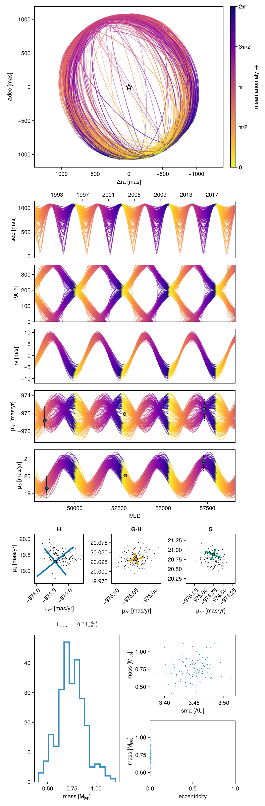
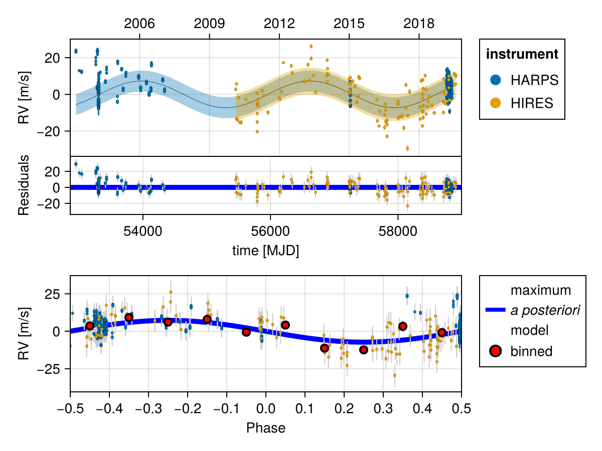
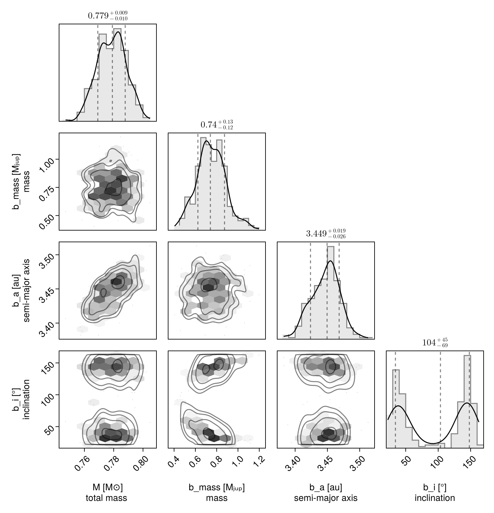

Fit RV and Proper Motion Anomaly
In this example, we will fit an orbit model to a combination of radial velocity and Hipparcos-GAIA proper motion anomaly for the star $\epsilon$ Eridani. We will use some of the radial velocity data collated in Mawet et al 2019.
Radial velocity modelling is supported in Octofitter via the extension package OctofitterRadialVelocity. To install it, run pkg> add OctofitterRadialVelocity
Datasets from two different radial velocity insturments are included and modelled together with separate jitters and instrumental offsets.
using Octofitter, OctofitterRadialVelocity, Distributions, PlanetOrbits, CairoMakie
gaia_id = 5164707970261890560
@planet b Visual{KepOrbit} begin
# For speed of example, we are fitting a circular orbit only.s
e = 0
ω=0.0
mass ~ Uniform(0, 3)
a~Uniform(2, 5)
i~Sine()
Ω~UniformCircular()
τ ~ UniformCircular(1.0)
P = √(b.a^3/system.M)
tp = b.τ*b.P*365.25 + 58849 # reference epoch for τ. Choose an MJD date near your data.
end # No planet astrometry is included since it has not yet been directly detected
# Convert from JD to MJD
# Data tabulated from Mawet et al
jd(mjd) = mjd - 2400000.5
# # You could also specify it manually like so:
# rvs = StarAbsoluteRVLikelihood(
# (;inst_idx=1, epoch=jd(2455110.97985), rv=−6.54, σ_rv=1.30),
# (;inst_idx=1, epoch=jd(2455171.90825), rv=−3.33, σ_rv=1.09), # units in meters/second
# ...
# )
# We will load in data from two RV
rvharps = OctofitterRadialVelocity.HARPS_RVBank_rvs("HD22049")
rvharps.table.inst_idx .= 1
rvhires = OctofitterRadialVelocity.HIRES_rvs("HD22049")
rvhires.table.inst_idx .= 2
rvs_merged = StarAbsoluteRVLikelihood(
cat(rvhires.table, rvharps.table,dims=1),
instrument_names=["HARPS", "HIRES"]
)
scatter(
rvs_merged.table.epoch[:],
rvs_merged.table.rv[:],
axis=(
xlabel="time [mjd]",
ylabel="RV [m/s]",
)
)
@system ϵEri begin
M ~ truncated(Normal(0.78, 0.01),lower=0)
plx ~ gaia_plx(;gaia_id)
pmra ~ Normal(-975, 10)
pmdec ~ Normal(20, 10)
# Radial velocity zero point per instrument
rv0_1 ~ Normal(0,10) # m/s
rv0_2 ~ Normal(0,10)
# Radial jitter per instrument.
jitter_1 ~ truncated(Normal(0,10),lower=0) # m/s
jitter_2 ~ truncated(Normal(0,10),lower=0)
# You can also set both instruments to the same jitter, eg by putting instead (with = not ~):
# jitter_2 = system.jitter_1
end HGCALikelihood(;gaia_id) rvs_merged b
# Build model
model = Octofitter.LogDensityModel(ϵEri)LogDensityModel for System ϵEri of dimension 15 with fields .ℓπcallback and .∇ℓπcallback
Now sample. You could use HMC via octofit or tempered sampling via octofit_pigeons. When using tempered sampling, make sure to start julia with julia --thread=auto. Each additional round doubles the number of posterior samples, so n_rounds=10 gives 1024 samples. You should adjust n_chains to be roughly double the Λ value printed out during sample, and n_chains_variational to be roughly double the Λ_var column.
using Pigeons
results, pt = octofit_pigeons(model, n_rounds=8, n_chains=10, n_chains_variational=10);[ Info: Determining initial positions and metric using pathfinder
┌ Info: Found a sample of initial positions
└ initial_logpost_range = (-2865.7833282269758, -2853.3511250729175)
┌ Warning: Invalid log likelihood encountered. (maxlog=1)
│ θ = (M = Dual{ForwardDiff.Tag{Base.Fix1{typeof(LogDensityProblems.logdensity), Octofitter.LogDensityModel{15, Octofitter.var"#ℓπcallback#66"{System{Priors, Derived, Tuple{HGCALikelihood{Table{@NamedTuple{hip_id::Int32, gaia_source_id::Int64, gaia_ra::Float64, gaia_dec::Float64, radial_velocity::Float32, radial_velocity_error::Float32, radial_velocity_source::String, parallax_gaia::Float32, parallax_gaia_error::Float32, pmra_gaia::Float32, pmdec_gaia::Float32, pmra_gaia_error::Float32, pmdec_gaia_error::Float32, pmra_pmdec_gaia::Float32, pmra_hg::Float32, pmdec_hg::Float32, pmra_hg_error::Float32, pmdec_hg_error::Float32, pmra_pmdec_hg::Float32, pmra_hip::Float32, pmdec_hip::Float32, pmra_hip_error::Float32, pmdec_hip_error::Float32, pmra_pmdec_hip::Float32, epoch_ra_gaia::Float64, epoch_dec_gaia::Float64, epoch_ra_hip::Float64, epoch_dec_hip::Float64, crosscal_pmra_hip::Float32, crosscal_pmdec_hip::Float32, crosscal_pmra_hg::Float32, crosscal_pmdec_hg::Float32, nonlinear_dpmra::Float32, nonlinear_dpmdec::Float32, chisq::Float32, dist_hip::Distributions.MvNormal{Float32, PDMats.PDMat{Float32, StaticArraysCore.SMatrix{2, 2, Float32, 4}}, FillArrays.Zeros{Float32, 1, Tuple{Base.OneTo{Int64}}}}, dist_hg::Distributions.MvNormal{Float32, PDMats.PDMat{Float32, StaticArraysCore.SMatrix{2, 2, Float32, 4}}, FillArrays.Zeros{Float32, 1, Tuple{Base.OneTo{Int64}}}}, dist_gaia::Distributions.MvNormal{Float32, PDMats.PDMat{Float32, StaticArraysCore.SMatrix{2, 2, Float32, 4}}, FillArrays.Zeros{Float32, 1, Tuple{Base.OneTo{Int64}}}}}, 1, @NamedTuple{hip_id::Vector{Int32}, gaia_source_id::Vector{Int64}, gaia_ra::Vector{Float64}, gaia_dec::Vector{Float64}, radial_velocity::Vector{Float32}, radial_velocity_error::Vector{Float32}, radial_velocity_source::Vector{String}, parallax_gaia::Vector{Float32}, parallax_gaia_error::Vector{Float32}, pmra_gaia::Vector{Float32}, pmdec_gaia::Vector{Float32}, pmra_gaia_error::Vector{Float32}, pmdec_gaia_error::Vector{Float32}, pmra_pmdec_gaia::Vector{Float32}, pmra_hg::Vector{Float32}, pmdec_hg::Vector{Float32}, pmra_hg_error::Vector{Float32}, pmdec_hg_error::Vector{Float32}, pmra_pmdec_hg::Vector{Float32}, pmra_hip::Vector{Float32}, pmdec_hip::Vector{Float32}, pmra_hip_error::Vector{Float32}, pmdec_hip_error::Vector{Float32}, pmra_pmdec_hip::Vector{Float32}, epoch_ra_gaia::Vector{Float64}, epoch_dec_gaia::Vector{Float64}, epoch_ra_hip::Vector{Float64}, epoch_dec_hip::Vector{Float64}, crosscal_pmra_hip::Vector{Float32}, crosscal_pmdec_hip::Vector{Float32}, crosscal_pmra_hg::Vector{Float32}, crosscal_pmdec_hg::Vector{Float32}, nonlinear_dpmra::Vector{Float32}, nonlinear_dpmdec::Vector{Float32}, chisq::Vector{Float32}, dist_hip::Vector{Distributions.MvNormal{Float32, PDMats.PDMat{Float32, StaticArraysCore.SMatrix{2, 2, Float32, 4}}, FillArrays.Zeros{Float32, 1, Tuple{Base.OneTo{Int64}}}}}, dist_hg::Vector{Distributions.MvNormal{Float32, PDMats.PDMat{Float32, StaticArraysCore.SMatrix{2, 2, Float32, 4}}, FillArrays.Zeros{Float32, 1, Tuple{Base.OneTo{Int64}}}}}, dist_gaia::Vector{Distributions.MvNormal{Float32, PDMats.PDMat{Float32, StaticArraysCore.SMatrix{2, 2, Float32, 4}}, FillArrays.Zeros{Float32, 1, Tuple{Base.OneTo{Int64}}}}}}}}, StarAbsoluteRVLikelihood{Table{@NamedTuple{epoch::Float64, rv::Float64, σ_rv::Float64, inst_idx::Int64}, 2, @NamedTuple{epoch::Matrix{Float64}, rv::Matrix{Float64}, σ_rv::Matrix{Float64}, inst_idx::Matrix{Int64}}}, Nothing, Tuple{Symbol, Symbol}, Tuple{Symbol, Symbol}}}, @NamedTuple{b::Planet{Visual{KepOrbit}, Priors, Derived, Tuple{Octofitter.UnitLengthPrior{:Ωy, :Ωx}, Octofitter.UnitLengthPrior{:τy, :τx}}}}}, RuntimeGeneratedFunctions.RuntimeGeneratedFunction{(:arr,), Octofitter.var"#_RGF_ModTag", Octofitter.var"#_RGF_ModTag", (0x9f50e541, 0x40c0c236, 0xd4eb68a2, 0x4e2745ea, 0x864b053f), Expr}, RuntimeGeneratedFunctions.RuntimeGeneratedFunction{(:arr,), Octofitter.var"#_RGF_ModTag", Octofitter.var"#_RGF_ModTag", (0x74faddb5, 0x6cd837fa, 0x17f723ca, 0x6bfb708b, 0x80442e8d), Expr}, RuntimeGeneratedFunctions.RuntimeGeneratedFunction{(:arr, :sampled), Octofitter.var"#_RGF_ModTag", Octofitter.var"#_RGF_ModTag", (0x5200975a, 0x61876beb, 0x06e42d1e, 0x0d21f0e8, 0xbc9621df), Expr}, RuntimeGeneratedFunctions.RuntimeGeneratedFunction{(:system, :θ_system), Octofitter.var"#_RGF_ModTag", Octofitter.var"#_RGF_ModTag", (0x8586d89b, 0x9db02aee, 0x4e1504f9, 0x5f978a69, 0xf61776b8), Expr}, Octofitter.var"#ℓπcallback#54#67"}, Octofitter.var"#62#75"{ForwardDiff.GradientConfig{ForwardDiff.Tag{Octofitter.var"#ℓπcallback#66"{System{Priors, Derived, Tuple{HGCALikelihood{Table{@NamedTuple{hip_id::Int32, gaia_source_id::Int64, gaia_ra::Float64, gaia_dec::Float64, radial_velocity::Float32, radial_velocity_error::Float32, radial_velocity_source::String, parallax_gaia::Float32, parallax_gaia_error::Float32, pmra_gaia::Float32, pmdec_gaia::Float32, pmra_gaia_error::Float32, pmdec_gaia_error::Float32, pmra_pmdec_gaia::Float32, pmra_hg::Float32, pmdec_hg::Float32, pmra_hg_error::Float32, pmdec_hg_error::Float32, pmra_pmdec_hg::Float32, pmra_hip::Float32, pmdec_hip::Float32, pmra_hip_error::Float32, pmdec_hip_error::Float32, pmra_pmdec_hip::Float32, epoch_ra_gaia::Float64, epoch_dec_gaia::Float64, epoch_ra_hip::Float64, epoch_dec_hip::Float64, crosscal_pmra_hip::Float32, crosscal_pmdec_hip::Float32, crosscal_pmra_hg::Float32, crosscal_pmdec_hg::Float32, nonlinear_dpmra::Float32, nonlinear_dpmdec::Float32, chisq::Float32, dist_hip::Distributions.MvNormal{Float32, PDMats.PDMat{Float32, StaticArraysCore.SMatrix{2, 2, Float32, 4}}, FillArrays.Zeros{Float32, 1, Tuple{Base.OneTo{Int64}}}}, dist_hg::Distributions.MvNormal{Float32, PDMats.PDMat{Float32, StaticArraysCore.SMatrix{2, 2, Float32, 4}}, FillArrays.Zeros{Float32, 1, Tuple{Base.OneTo{Int64}}}}, dist_gaia::Distributions.MvNormal{Float32, PDMats.PDMat{Float32, StaticArraysCore.SMatrix{2, 2, Float32, 4}}, FillArrays.Zeros{Float32, 1, Tuple{Base.OneTo{Int64}}}}}, 1, @NamedTuple{hip_id::Vector{Int32}, gaia_source_id::Vector{Int64}, gaia_ra::Vector{Float64}, gaia_dec::Vector{Float64}, radial_velocity::Vector{Float32}, radial_velocity_error::Vector{Float32}, radial_velocity_source::Vector{String}, parallax_gaia::Vector{Float32}, parallax_gaia_error::Vector{Float32}, pmra_gaia::Vector{Float32}, pmdec_gaia::Vector{Float32}, pmra_gaia_error::Vector{Float32}, pmdec_gaia_error::Vector{Float32}, pmra_pmdec_gaia::Vector{Float32}, pmra_hg::Vector{Float32}, pmdec_hg::Vector{Float32}, pmra_hg_error::Vector{Float32}, pmdec_hg_error::Vector{Float32}, pmra_pmdec_hg::Vector{Float32}, pmra_hip::Vector{Float32}, pmdec_hip::Vector{Float32}, pmra_hip_error::Vector{Float32}, pmdec_hip_error::Vector{Float32}, pmra_pmdec_hip::Vector{Float32}, epoch_ra_gaia::Vector{Float64}, epoch_dec_gaia::Vector{Float64}, epoch_ra_hip::Vector{Float64}, epoch_dec_hip::Vector{Float64}, crosscal_pmra_hip::Vector{Float32}, crosscal_pmdec_hip::Vector{Float32}, crosscal_pmra_hg::Vector{Float32}, crosscal_pmdec_hg::Vector{Float32}, nonlinear_dpmra::Vector{Float32}, nonlinear_dpmdec::Vector{Float32}, chisq::Vector{Float32}, dist_hip::Vector{Distributions.MvNormal{Float32, PDMats.PDMat{Float32, StaticArraysCore.SMatrix{2, 2, Float32, 4}}, FillArrays.Zeros{Float32, 1, Tuple{Base.OneTo{Int64}}}}}, dist_hg::Vector{Distributions.MvNormal{Float32, PDMats.PDMat{Float32, StaticArraysCore.SMatrix{2, 2, Float32, 4}}, FillArrays.Zeros{Float32, 1, Tuple{Base.OneTo{Int64}}}}}, dist_gaia::Vector{Distributions.MvNormal{Float32, PDMats.PDMat{Float32, StaticArraysCore.SMatrix{2, 2, Float32, 4}}, FillArrays.Zeros{Float32, 1, Tuple{Base.OneTo{Int64}}}}}}}}, StarAbsoluteRVLikelihood{Table{@NamedTuple{epoch::Float64, rv::Float64, σ_rv::Float64, inst_idx::Int64}, 2, @NamedTuple{epoch::Matrix{Float64}, rv::Matrix{Float64}, σ_rv::Matrix{Float64}, inst_idx::Matrix{Int64}}}, Nothing, Tuple{Symbol, Symbol}, Tuple{Symbol, Symbol}}}, @NamedTuple{b::Planet{Visual{KepOrbit}, Priors, Derived, Tuple{Octofitter.UnitLengthPrior{:Ωy, :Ωx}, Octofitter.UnitLengthPrior{:τy, :τx}}}}}, RuntimeGeneratedFunctions.RuntimeGeneratedFunction{(:arr,), Octofitter.var"#_RGF_ModTag", Octofitter.var"#_RGF_ModTag", (0x9f50e541, 0x40c0c236, 0xd4eb68a2, 0x4e2745ea, 0x864b053f), Expr}, RuntimeGeneratedFunctions.RuntimeGeneratedFunction{(:arr,), Octofitter.var"#_RGF_ModTag", Octofitter.var"#_RGF_ModTag", (0x74faddb5, 0x6cd837fa, 0x17f723ca, 0x6bfb708b, 0x80442e8d), Expr}, RuntimeGeneratedFunctions.RuntimeGeneratedFunction{(:arr, :sampled), Octofitter.var"#_RGF_ModTag", Octofitter.var"#_RGF_ModTag", (0x5200975a, 0x61876beb, 0x06e42d1e, 0x0d21f0e8, 0xbc9621df), Expr}, RuntimeGeneratedFunctions.RuntimeGeneratedFunction{(:system, :θ_system), Octofitter.var"#_RGF_ModTag", Octofitter.var"#_RGF_ModTag", (0x8586d89b, 0x9db02aee, 0x4e1504f9, 0x5f978a69, 0xf61776b8), Expr}, Octofitter.var"#ℓπcallback#54#67"}, Float64}, Float64, 15, Vector{ForwardDiff.Dual{ForwardDiff.Tag{Octofitter.var"#ℓπcallback#66"{System{Priors, Derived, Tuple{HGCALikelihood{Table{@NamedTuple{hip_id::Int32, gaia_source_id::Int64, gaia_ra::Float64, gaia_dec::Float64, radial_velocity::Float32, radial_velocity_error::Float32, radial_velocity_source::String, parallax_gaia::Float32, parallax_gaia_error::Float32, pmra_gaia::Float32, pmdec_gaia::Float32, pmra_gaia_error::Float32, pmdec_gaia_error::Float32, pmra_pmdec_gaia::Float32, pmra_hg::Float32, pmdec_hg::Float32, pmra_hg_error::Float32, pmdec_hg_error::Float32, pmra_pmdec_hg::Float32, pmra_hip::Float32, pmdec_hip::Float32, pmra_hip_error::Float32, pmdec_hip_error::Float32, pmra_pmdec_hip::Float32, epoch_ra_gaia::Float64, epoch_dec_gaia::Float64, epoch_ra_hip::Float64, epoch_dec_hip::Float64, crosscal_pmra_hip::Float32, crosscal_pmdec_hip::Float32, crosscal_pmra_hg::Float32, crosscal_pmdec_hg::Float32, nonlinear_dpmra::Float32, nonlinear_dpmdec::Float32, chisq::Float32, dist_hip::Distributions.MvNormal{Float32, PDMats.PDMat{Float32, StaticArraysCore.SMatrix{2, 2, Float32, 4}}, FillArrays.Zeros{Float32, 1, Tuple{Base.OneTo{Int64}}}}, dist_hg::Distributions.MvNormal{Float32, PDMats.PDMat{Float32, StaticArraysCore.SMatrix{2, 2, Float32, 4}}, FillArrays.Zeros{Float32, 1, Tuple{Base.OneTo{Int64}}}}, dist_gaia::Distributions.MvNormal{Float32, PDMats.PDMat{Float32, StaticArraysCore.SMatrix{2, 2, Float32, 4}}, FillArrays.Zeros{Float32, 1, Tuple{Base.OneTo{Int64}}}}}, 1, @NamedTuple{hip_id::Vector{Int32}, gaia_source_id::Vector{Int64}, gaia_ra::Vector{Float64}, gaia_dec::Vector{Float64}, radial_velocity::Vector{Float32}, radial_velocity_error::Vector{Float32}, radial_velocity_source::Vector{String}, parallax_gaia::Vector{Float32}, parallax_gaia_error::Vector{Float32}, pmra_gaia::Vector{Float32}, pmdec_gaia::Vector{Float32}, pmra_gaia_error::Vector{Float32}, pmdec_gaia_error::Vector{Float32}, pmra_pmdec_gaia::Vector{Float32}, pmra_hg::Vector{Float32}, pmdec_hg::Vector{Float32}, pmra_hg_error::Vector{Float32}, pmdec_hg_error::Vector{Float32}, pmra_pmdec_hg::Vector{Float32}, pmra_hip::Vector{Float32}, pmdec_hip::Vector{Float32}, pmra_hip_error::Vector{Float32}, pmdec_hip_error::Vector{Float32}, pmra_pmdec_hip::Vector{Float32}, epoch_ra_gaia::Vector{Float64}, epoch_dec_gaia::Vector{Float64}, epoch_ra_hip::Vector{Float64}, epoch_dec_hip::Vector{Float64}, crosscal_pmra_hip::Vector{Float32}, crosscal_pmdec_hip::Vector{Float32}, crosscal_pmra_hg::Vector{Float32}, crosscal_pmdec_hg::Vector{Float32}, nonlinear_dpmra::Vector{Float32}, nonlinear_dpmdec::Vector{Float32}, chisq::Vector{Float32}, dist_hip::Vector{Distributions.MvNormal{Float32, PDMats.PDMat{Float32, StaticArraysCore.SMatrix{2, 2, Float32, 4}}, FillArrays.Zeros{Float32, 1, Tuple{Base.OneTo{Int64}}}}}, dist_hg::Vector{Distributions.MvNormal{Float32, PDMats.PDMat{Float32, StaticArraysCore.SMatrix{2, 2, Float32, 4}}, FillArrays.Zeros{Float32, 1, Tuple{Base.OneTo{Int64}}}}}, dist_gaia::Vector{Distributions.MvNormal{Float32, PDMats.PDMat{Float32, StaticArraysCore.SMatrix{2, 2, Float32, 4}}, FillArrays.Zeros{Float32, 1, Tuple{Base.OneTo{Int64}}}}}}}}, StarAbsoluteRVLikelihood{Table{@NamedTuple{epoch::Float64, rv::Float64, σ_rv::Float64, inst_idx::Int64}, 2, @NamedTuple{epoch::Matrix{Float64}, rv::Matrix{Float64}, σ_rv::Matrix{Float64}, inst_idx::Matrix{Int64}}}, Nothing, Tuple{Symbol, Symbol}, Tuple{Symbol, Symbol}}}, @NamedTuple{b::Planet{Visual{KepOrbit}, Priors, Derived, Tuple{Octofitter.UnitLengthPrior{:Ωy, :Ωx}, Octofitter.UnitLengthPrior{:τy, :τx}}}}}, RuntimeGeneratedFunctions.RuntimeGeneratedFunction{(:arr,), Octofitter.var"#_RGF_ModTag", Octofitter.var"#_RGF_ModTag", (0x9f50e541, 0x40c0c236, 0xd4eb68a2, 0x4e2745ea, 0x864b053f), Expr}, RuntimeGeneratedFunctions.RuntimeGeneratedFunction{(:arr,), Octofitter.var"#_RGF_ModTag", Octofitter.var"#_RGF_ModTag", (0x74faddb5, 0x6cd837fa, 0x17f723ca, 0x6bfb708b, 0x80442e8d), Expr}, RuntimeGeneratedFunctions.RuntimeGeneratedFunction{(:arr, :sampled), Octofitter.var"#_RGF_ModTag", Octofitter.var"#_RGF_ModTag", (0x5200975a, 0x61876beb, 0x06e42d1e, 0x0d21f0e8, 0xbc9621df), Expr}, RuntimeGeneratedFunctions.RuntimeGeneratedFunction{(:system, :θ_system), Octofitter.var"#_RGF_ModTag", Octofitter.var"#_RGF_ModTag", (0x8586d89b, 0x9db02aee, 0x4e1504f9, 0x5f978a69, 0xf61776b8), Expr}, Octofitter.var"#ℓπcallback#54#67"}, Float64}, Float64, 15}}}, Vector{DiffResults.MutableDiffResult{1, Float64, Tuple{Vector{Float64}}}}, Octofitter.var"#ℓπcallback#66"{System{Priors, Derived, Tuple{HGCALikelihood{Table{@NamedTuple{hip_id::Int32, gaia_source_id::Int64, gaia_ra::Float64, gaia_dec::Float64, radial_velocity::Float32, radial_velocity_error::Float32, radial_velocity_source::String, parallax_gaia::Float32, parallax_gaia_error::Float32, pmra_gaia::Float32, pmdec_gaia::Float32, pmra_gaia_error::Float32, pmdec_gaia_error::Float32, pmra_pmdec_gaia::Float32, pmra_hg::Float32, pmdec_hg::Float32, pmra_hg_error::Float32, pmdec_hg_error::Float32, pmra_pmdec_hg::Float32, pmra_hip::Float32, pmdec_hip::Float32, pmra_hip_error::Float32, pmdec_hip_error::Float32, pmra_pmdec_hip::Float32, epoch_ra_gaia::Float64, epoch_dec_gaia::Float64, epoch_ra_hip::Float64, epoch_dec_hip::Float64, crosscal_pmra_hip::Float32, crosscal_pmdec_hip::Float32, crosscal_pmra_hg::Float32, crosscal_pmdec_hg::Float32, nonlinear_dpmra::Float32, nonlinear_dpmdec::Float32, chisq::Float32, dist_hip::Distributions.MvNormal{Float32, PDMats.PDMat{Float32, StaticArraysCore.SMatrix{2, 2, Float32, 4}}, FillArrays.Zeros{Float32, 1, Tuple{Base.OneTo{Int64}}}}, dist_hg::Distributions.MvNormal{Float32, PDMats.PDMat{Float32, StaticArraysCore.SMatrix{2, 2, Float32, 4}}, FillArrays.Zeros{Float32, 1, Tuple{Base.OneTo{Int64}}}}, dist_gaia::Distributions.MvNormal{Float32, PDMats.PDMat{Float32, StaticArraysCore.SMatrix{2, 2, Float32, 4}}, FillArrays.Zeros{Float32, 1, Tuple{Base.OneTo{Int64}}}}}, 1, @NamedTuple{hip_id::Vector{Int32}, gaia_source_id::Vector{Int64}, gaia_ra::Vector{Float64}, gaia_dec::Vector{Float64}, radial_velocity::Vector{Float32}, radial_velocity_error::Vector{Float32}, radial_velocity_source::Vector{String}, parallax_gaia::Vector{Float32}, parallax_gaia_error::Vector{Float32}, pmra_gaia::Vector{Float32}, pmdec_gaia::Vector{Float32}, pmra_gaia_error::Vector{Float32}, pmdec_gaia_error::Vector{Float32}, pmra_pmdec_gaia::Vector{Float32}, pmra_hg::Vector{Float32}, pmdec_hg::Vector{Float32}, pmra_hg_error::Vector{Float32}, pmdec_hg_error::Vector{Float32}, pmra_pmdec_hg::Vector{Float32}, pmra_hip::Vector{Float32}, pmdec_hip::Vector{Float32}, pmra_hip_error::Vector{Float32}, pmdec_hip_error::Vector{Float32}, pmra_pmdec_hip::Vector{Float32}, epoch_ra_gaia::Vector{Float64}, epoch_dec_gaia::Vector{Float64}, epoch_ra_hip::Vector{Float64}, epoch_dec_hip::Vector{Float64}, crosscal_pmra_hip::Vector{Float32}, crosscal_pmdec_hip::Vector{Float32}, crosscal_pmra_hg::Vector{Float32}, crosscal_pmdec_hg::Vector{Float32}, nonlinear_dpmra::Vector{Float32}, nonlinear_dpmdec::Vector{Float32}, chisq::Vector{Float32}, dist_hip::Vector{Distributions.MvNormal{Float32, PDMats.PDMat{Float32, StaticArraysCore.SMatrix{2, 2, Float32, 4}}, FillArrays.Zeros{Float32, 1, Tuple{Base.OneTo{Int64}}}}}, dist_hg::Vector{Distributions.MvNormal{Float32, PDMats.PDMat{Float32, StaticArraysCore.SMatrix{2, 2, Float32, 4}}, FillArrays.Zeros{Float32, 1, Tuple{Base.OneTo{Int64}}}}}, dist_gaia::Vector{Distributions.MvNormal{Float32, PDMats.PDMat{Float32, StaticArraysCore.SMatrix{2, 2, Float32, 4}}, FillArrays.Zeros{Float32, 1, Tuple{Base.OneTo{Int64}}}}}}}}, StarAbsoluteRVLikelihood{Table{@NamedTuple{epoch::Float64, rv::Float64, σ_rv::Float64, inst_idx::Int64}, 2, @NamedTuple{epoch::Matrix{Float64}, rv::Matrix{Float64}, σ_rv::Matrix{Float64}, inst_idx::Matrix{Int64}}}, Nothing, Tuple{Symbol, Symbol}, Tuple{Symbol, Symbol}}}, @NamedTuple{b::Planet{Visual{KepOrbit}, Priors, Derived, Tuple{Octofitter.UnitLengthPrior{:Ωy, :Ωx}, Octofitter.UnitLengthPrior{:τy, :τx}}}}}, RuntimeGeneratedFunctions.RuntimeGeneratedFunction{(:arr,), Octofitter.var"#_RGF_ModTag", Octofitter.var"#_RGF_ModTag", (0x9f50e541, 0x40c0c236, 0xd4eb68a2, 0x4e2745ea, 0x864b053f), Expr}, RuntimeGeneratedFunctions.RuntimeGeneratedFunction{(:arr,), Octofitter.var"#_RGF_ModTag", Octofitter.var"#_RGF_ModTag", (0x74faddb5, 0x6cd837fa, 0x17f723ca, 0x6bfb708b, 0x80442e8d), Expr}, RuntimeGeneratedFunctions.RuntimeGeneratedFunction{(:arr, :sampled), Octofitter.var"#_RGF_ModTag", Octofitter.var"#_RGF_ModTag", (0x5200975a, 0x61876beb, 0x06e42d1e, 0x0d21f0e8, 0xbc9621df), Expr}, RuntimeGeneratedFunctions.RuntimeGeneratedFunction{(:system, :θ_system), Octofitter.var"#_RGF_ModTag", Octofitter.var"#_RGF_ModTag", (0x8586d89b, 0x9db02aee, 0x4e1504f9, 0x5f978a69, 0xf61776b8), Expr}, Octofitter.var"#ℓπcallback#54#67"}}, System{Priors, Derived, Tuple{HGCALikelihood{Table{@NamedTuple{hip_id::Int32, gaia_source_id::Int64, gaia_ra::Float64, gaia_dec::Float64, radial_velocity::Float32, radial_velocity_error::Float32, radial_velocity_source::String, parallax_gaia::Float32, parallax_gaia_error::Float32, pmra_gaia::Float32, pmdec_gaia::Float32, pmra_gaia_error::Float32, pmdec_gaia_error::Float32, pmra_pmdec_gaia::Float32, pmra_hg::Float32, pmdec_hg::Float32, pmra_hg_error::Float32, pmdec_hg_error::Float32, pmra_pmdec_hg::Float32, pmra_hip::Float32, pmdec_hip::Float32, pmra_hip_error::Float32, pmdec_hip_error::Float32, pmra_pmdec_hip::Float32, epoch_ra_gaia::Float64, epoch_dec_gaia::Float64, epoch_ra_hip::Float64, epoch_dec_hip::Float64, crosscal_pmra_hip::Float32, crosscal_pmdec_hip::Float32, crosscal_pmra_hg::Float32, crosscal_pmdec_hg::Float32, nonlinear_dpmra::Float32, nonlinear_dpmdec::Float32, chisq::Float32, dist_hip::Distributions.MvNormal{Float32, PDMats.PDMat{Float32, StaticArraysCore.SMatrix{2, 2, Float32, 4}}, FillArrays.Zeros{Float32, 1, Tuple{Base.OneTo{Int64}}}}, dist_hg::Distributions.MvNormal{Float32, PDMats.PDMat{Float32, StaticArraysCore.SMatrix{2, 2, Float32, 4}}, FillArrays.Zeros{Float32, 1, Tuple{Base.OneTo{Int64}}}}, dist_gaia::Distributions.MvNormal{Float32, PDMats.PDMat{Float32, StaticArraysCore.SMatrix{2, 2, Float32, 4}}, FillArrays.Zeros{Float32, 1, Tuple{Base.OneTo{Int64}}}}}, 1, @NamedTuple{hip_id::Vector{Int32}, gaia_source_id::Vector{Int64}, gaia_ra::Vector{Float64}, gaia_dec::Vector{Float64}, radial_velocity::Vector{Float32}, radial_velocity_error::Vector{Float32}, radial_velocity_source::Vector{String}, parallax_gaia::Vector{Float32}, parallax_gaia_error::Vector{Float32}, pmra_gaia::Vector{Float32}, pmdec_gaia::Vector{Float32}, pmra_gaia_error::Vector{Float32}, pmdec_gaia_error::Vector{Float32}, pmra_pmdec_gaia::Vector{Float32}, pmra_hg::Vector{Float32}, pmdec_hg::Vector{Float32}, pmra_hg_error::Vector{Float32}, pmdec_hg_error::Vector{Float32}, pmra_pmdec_hg::Vector{Float32}, pmra_hip::Vector{Float32}, pmdec_hip::Vector{Float32}, pmra_hip_error::Vector{Float32}, pmdec_hip_error::Vector{Float32}, pmra_pmdec_hip::Vector{Float32}, epoch_ra_gaia::Vector{Float64}, epoch_dec_gaia::Vector{Float64}, epoch_ra_hip::Vector{Float64}, epoch_dec_hip::Vector{Float64}, crosscal_pmra_hip::Vector{Float32}, crosscal_pmdec_hip::Vector{Float32}, crosscal_pmra_hg::Vector{Float32}, crosscal_pmdec_hg::Vector{Float32}, nonlinear_dpmra::Vector{Float32}, nonlinear_dpmdec::Vector{Float32}, chisq::Vector{Float32}, dist_hip::Vector{Distributions.MvNormal{Float32, PDMats.PDMat{Float32, StaticArraysCore.SMatrix{2, 2, Float32, 4}}, FillArrays.Zeros{Float32, 1, Tuple{Base.OneTo{Int64}}}}}, dist_hg::Vector{Distributions.MvNormal{Float32, PDMats.PDMat{Float32, StaticArraysCore.SMatrix{2, 2, Float32, 4}}, FillArrays.Zeros{Float32, 1, Tuple{Base.OneTo{Int64}}}}}, dist_gaia::Vector{Distributions.MvNormal{Float32, PDMats.PDMat{Float32, StaticArraysCore.SMatrix{2, 2, Float32, 4}}, FillArrays.Zeros{Float32, 1, Tuple{Base.OneTo{Int64}}}}}}}}, StarAbsoluteRVLikelihood{Table{@NamedTuple{epoch::Float64, rv::Float64, σ_rv::Float64, inst_idx::Int64}, 2, @NamedTuple{epoch::Matrix{Float64}, rv::Matrix{Float64}, σ_rv::Matrix{Float64}, inst_idx::Matrix{Int64}}}, Nothing, Tuple{Symbol, Symbol}, Tuple{Symbol, Symbol}}}, @NamedTuple{b::Planet{Visual{KepOrbit}, Priors, Derived, Tuple{Octofitter.UnitLengthPrior{:Ωy, :Ωx}, Octofitter.UnitLengthPrior{:τy, :τx}}}}}, Octofitter.var"#53#65"{Vector{Distributions.Distribution{Distributions.Univariate, Distributions.Continuous}}}, RuntimeGeneratedFunctions.RuntimeGeneratedFunction{(:arr,), Octofitter.var"#_RGF_ModTag", Octofitter.var"#_RGF_ModTag", (0x74faddb5, 0x6cd837fa, 0x17f723ca, 0x6bfb708b, 0x80442e8d), Expr}, RuntimeGeneratedFunctions.RuntimeGeneratedFunction{(:arr,), Octofitter.var"#_RGF_ModTag", Octofitter.var"#_RGF_ModTag", (0x9f50e541, 0x40c0c236, 0xd4eb68a2, 0x4e2745ea, 0x864b053f), Expr}, RuntimeGeneratedFunctions.RuntimeGeneratedFunction{(:rng,), Octofitter.var"#_RGF_ModTag", Octofitter.var"#_RGF_ModTag", (0xa35c85fd, 0x120dca04, 0x30a9d0b3, 0xc878b546, 0x2328c488), Expr}}}, Float64}}(6.851039508635173e15,6.851039508635173e15,0.0,0.0,0.0,0.0,0.0,0.0,0.0), plx = Dual{ForwardDiff.Tag{Base.Fix1{typeof(LogDensityProblems.logdensity), Octofitter.LogDensityModel{15, Octofitter.var"#ℓπcallback#66"{System{Priors, Derived, Tuple{HGCALikelihood{Table{@NamedTuple{hip_id::Int32, gaia_source_id::Int64, gaia_ra::Float64, gaia_dec::Float64, radial_velocity::Float32, radial_velocity_error::Float32, radial_velocity_source::String, parallax_gaia::Float32, parallax_gaia_error::Float32, pmra_gaia::Float32, pmdec_gaia::Float32, pmra_gaia_error::Float32, pmdec_gaia_error::Float32, pmra_pmdec_gaia::Float32, pmra_hg::Float32, pmdec_hg::Float32, pmra_hg_error::Float32, pmdec_hg_error::Float32, pmra_pmdec_hg::Float32, pmra_hip::Float32, pmdec_hip::Float32, pmra_hip_error::Float32, pmdec_hip_error::Float32, pmra_pmdec_hip::Float32, epoch_ra_gaia::Float64, epoch_dec_gaia::Float64, epoch_ra_hip::Float64, epoch_dec_hip::Float64, crosscal_pmra_hip::Float32, crosscal_pmdec_hip::Float32, crosscal_pmra_hg::Float32, crosscal_pmdec_hg::Float32, nonlinear_dpmra::Float32, nonlinear_dpmdec::Float32, chisq::Float32, dist_hip::Distributions.MvNormal{Float32, PDMats.PDMat{Float32, StaticArraysCore.SMatrix{2, 2, Float32, 4}}, FillArrays.Zeros{Float32, 1, Tuple{Base.OneTo{Int64}}}}, dist_hg::Distributions.MvNormal{Float32, PDMats.PDMat{Float32, StaticArraysCore.SMatrix{2, 2, Float32, 4}}, FillArrays.Zeros{Float32, 1, Tuple{Base.OneTo{Int64}}}}, dist_gaia::Distributions.MvNormal{Float32, PDMats.PDMat{Float32, StaticArraysCore.SMatrix{2, 2, Float32, 4}}, FillArrays.Zeros{Float32, 1, Tuple{Base.OneTo{Int64}}}}}, 1, @NamedTuple{hip_id::Vector{Int32}, gaia_source_id::Vector{Int64}, gaia_ra::Vector{Float64}, gaia_dec::Vector{Float64}, radial_velocity::Vector{Float32}, radial_velocity_error::Vector{Float32}, radial_velocity_source::Vector{String}, parallax_gaia::Vector{Float32}, parallax_gaia_error::Vector{Float32}, pmra_gaia::Vector{Float32}, pmdec_gaia::Vector{Float32}, pmra_gaia_error::Vector{Float32}, pmdec_gaia_error::Vector{Float32}, pmra_pmdec_gaia::Vector{Float32}, pmra_hg::Vector{Float32}, pmdec_hg::Vector{Float32}, pmra_hg_error::Vector{Float32}, pmdec_hg_error::Vector{Float32}, pmra_pmdec_hg::Vector{Float32}, pmra_hip::Vector{Float32}, pmdec_hip::Vector{Float32}, pmra_hip_error::Vector{Float32}, pmdec_hip_error::Vector{Float32}, pmra_pmdec_hip::Vector{Float32}, epoch_ra_gaia::Vector{Float64}, epoch_dec_gaia::Vector{Float64}, epoch_ra_hip::Vector{Float64}, epoch_dec_hip::Vector{Float64}, crosscal_pmra_hip::Vector{Float32}, crosscal_pmdec_hip::Vector{Float32}, crosscal_pmra_hg::Vector{Float32}, crosscal_pmdec_hg::Vector{Float32}, nonlinear_dpmra::Vector{Float32}, nonlinear_dpmdec::Vector{Float32}, chisq::Vector{Float32}, dist_hip::Vector{Distributions.MvNormal{Float32, PDMats.PDMat{Float32, StaticArraysCore.SMatrix{2, 2, Float32, 4}}, FillArrays.Zeros{Float32, 1, Tuple{Base.OneTo{Int64}}}}}, dist_hg::Vector{Distributions.MvNormal{Float32, PDMats.PDMat{Float32, StaticArraysCore.SMatrix{2, 2, Float32, 4}}, FillArrays.Zeros{Float32, 1, Tuple{Base.OneTo{Int64}}}}}, dist_gaia::Vector{Distributions.MvNormal{Float32, PDMats.PDMat{Float32, StaticArraysCore.SMatrix{2, 2, Float32, 4}}, FillArrays.Zeros{Float32, 1, Tuple{Base.OneTo{Int64}}}}}}}}, StarAbsoluteRVLikelihood{Table{@NamedTuple{epoch::Float64, rv::Float64, σ_rv::Float64, inst_idx::Int64}, 2, @NamedTuple{epoch::Matrix{Float64}, rv::Matrix{Float64}, σ_rv::Matrix{Float64}, inst_idx::Matrix{Int64}}}, Nothing, Tuple{Symbol, Symbol}, Tuple{Symbol, Symbol}}}, @NamedTuple{b::Planet{Visual{KepOrbit}, Priors, Derived, Tuple{Octofitter.UnitLengthPrior{:Ωy, :Ωx}, Octofitter.UnitLengthPrior{:τy, :τx}}}}}, RuntimeGeneratedFunctions.RuntimeGeneratedFunction{(:arr,), Octofitter.var"#_RGF_ModTag", Octofitter.var"#_RGF_ModTag", (0x9f50e541, 0x40c0c236, 0xd4eb68a2, 0x4e2745ea, 0x864b053f), Expr}, RuntimeGeneratedFunctions.RuntimeGeneratedFunction{(:arr,), Octofitter.var"#_RGF_ModTag", Octofitter.var"#_RGF_ModTag", (0x74faddb5, 0x6cd837fa, 0x17f723ca, 0x6bfb708b, 0x80442e8d), Expr}, RuntimeGeneratedFunctions.RuntimeGeneratedFunction{(:arr, :sampled), Octofitter.var"#_RGF_ModTag", Octofitter.var"#_RGF_ModTag", (0x5200975a, 0x61876beb, 0x06e42d1e, 0x0d21f0e8, 0xbc9621df), Expr}, RuntimeGeneratedFunctions.RuntimeGeneratedFunction{(:system, :θ_system), Octofitter.var"#_RGF_ModTag", Octofitter.var"#_RGF_ModTag", (0x8586d89b, 0x9db02aee, 0x4e1504f9, 0x5f978a69, 0xf61776b8), Expr}, Octofitter.var"#ℓπcallback#54#67"}, Octofitter.var"#62#75"{ForwardDiff.GradientConfig{ForwardDiff.Tag{Octofitter.var"#ℓπcallback#66"{System{Priors, Derived, Tuple{HGCALikelihood{Table{@NamedTuple{hip_id::Int32, gaia_source_id::Int64, gaia_ra::Float64, gaia_dec::Float64, radial_velocity::Float32, radial_velocity_error::Float32, radial_velocity_source::String, parallax_gaia::Float32, parallax_gaia_error::Float32, pmra_gaia::Float32, pmdec_gaia::Float32, pmra_gaia_error::Float32, pmdec_gaia_error::Float32, pmra_pmdec_gaia::Float32, pmra_hg::Float32, pmdec_hg::Float32, pmra_hg_error::Float32, pmdec_hg_error::Float32, pmra_pmdec_hg::Float32, pmra_hip::Float32, pmdec_hip::Float32, pmra_hip_error::Float32, pmdec_hip_error::Float32, pmra_pmdec_hip::Float32, epoch_ra_gaia::Float64, epoch_dec_gaia::Float64, epoch_ra_hip::Float64, epoch_dec_hip::Float64, crosscal_pmra_hip::Float32, crosscal_pmdec_hip::Float32, crosscal_pmra_hg::Float32, crosscal_pmdec_hg::Float32, nonlinear_dpmra::Float32, nonlinear_dpmdec::Float32, chisq::Float32, dist_hip::Distributions.MvNormal{Float32, PDMats.PDMat{Float32, StaticArraysCore.SMatrix{2, 2, Float32, 4}}, FillArrays.Zeros{Float32, 1, Tuple{Base.OneTo{Int64}}}}, dist_hg::Distributions.MvNormal{Float32, PDMats.PDMat{Float32, StaticArraysCore.SMatrix{2, 2, Float32, 4}}, FillArrays.Zeros{Float32, 1, Tuple{Base.OneTo{Int64}}}}, dist_gaia::Distributions.MvNormal{Float32, PDMats.PDMat{Float32, StaticArraysCore.SMatrix{2, 2, Float32, 4}}, FillArrays.Zeros{Float32, 1, Tuple{Base.OneTo{Int64}}}}}, 1, @NamedTuple{hip_id::Vector{Int32}, gaia_source_id::Vector{Int64}, gaia_ra::Vector{Float64}, gaia_dec::Vector{Float64}, radial_velocity::Vector{Float32}, radial_velocity_error::Vector{Float32}, radial_velocity_source::Vector{String}, parallax_gaia::Vector{Float32}, parallax_gaia_error::Vector{Float32}, pmra_gaia::Vector{Float32}, pmdec_gaia::Vector{Float32}, pmra_gaia_error::Vector{Float32}, pmdec_gaia_error::Vector{Float32}, pmra_pmdec_gaia::Vector{Float32}, pmra_hg::Vector{Float32}, pmdec_hg::Vector{Float32}, pmra_hg_error::Vector{Float32}, pmdec_hg_error::Vector{Float32}, pmra_pmdec_hg::Vector{Float32}, pmra_hip::Vector{Float32}, pmdec_hip::Vector{Float32}, pmra_hip_error::Vector{Float32}, pmdec_hip_error::Vector{Float32}, pmra_pmdec_hip::Vector{Float32}, epoch_ra_gaia::Vector{Float64}, epoch_dec_gaia::Vector{Float64}, epoch_ra_hip::Vector{Float64}, epoch_dec_hip::Vector{Float64}, crosscal_pmra_hip::Vector{Float32}, crosscal_pmdec_hip::Vector{Float32}, crosscal_pmra_hg::Vector{Float32}, crosscal_pmdec_hg::Vector{Float32}, nonlinear_dpmra::Vector{Float32}, nonlinear_dpmdec::Vector{Float32}, chisq::Vector{Float32}, dist_hip::Vector{Distributions.MvNormal{Float32, PDMats.PDMat{Float32, StaticArraysCore.SMatrix{2, 2, Float32, 4}}, FillArrays.Zeros{Float32, 1, Tuple{Base.OneTo{Int64}}}}}, dist_hg::Vector{Distributions.MvNormal{Float32, PDMats.PDMat{Float32, StaticArraysCore.SMatrix{2, 2, Float32, 4}}, FillArrays.Zeros{Float32, 1, Tuple{Base.OneTo{Int64}}}}}, dist_gaia::Vector{Distributions.MvNormal{Float32, PDMats.PDMat{Float32, StaticArraysCore.SMatrix{2, 2, Float32, 4}}, FillArrays.Zeros{Float32, 1, Tuple{Base.OneTo{Int64}}}}}}}}, StarAbsoluteRVLikelihood{Table{@NamedTuple{epoch::Float64, rv::Float64, σ_rv::Float64, inst_idx::Int64}, 2, @NamedTuple{epoch::Matrix{Float64}, rv::Matrix{Float64}, σ_rv::Matrix{Float64}, inst_idx::Matrix{Int64}}}, Nothing, Tuple{Symbol, Symbol}, Tuple{Symbol, Symbol}}}, @NamedTuple{b::Planet{Visual{KepOrbit}, Priors, Derived, Tuple{Octofitter.UnitLengthPrior{:Ωy, :Ωx}, Octofitter.UnitLengthPrior{:τy, :τx}}}}}, RuntimeGeneratedFunctions.RuntimeGeneratedFunction{(:arr,), Octofitter.var"#_RGF_ModTag", Octofitter.var"#_RGF_ModTag", (0x9f50e541, 0x40c0c236, 0xd4eb68a2, 0x4e2745ea, 0x864b053f), Expr}, RuntimeGeneratedFunctions.RuntimeGeneratedFunction{(:arr,), Octofitter.var"#_RGF_ModTag", Octofitter.var"#_RGF_ModTag", (0x74faddb5, 0x6cd837fa, 0x17f723ca, 0x6bfb708b, 0x80442e8d), Expr}, RuntimeGeneratedFunctions.RuntimeGeneratedFunction{(:arr, :sampled), Octofitter.var"#_RGF_ModTag", Octofitter.var"#_RGF_ModTag", (0x5200975a, 0x61876beb, 0x06e42d1e, 0x0d21f0e8, 0xbc9621df), Expr}, RuntimeGeneratedFunctions.RuntimeGeneratedFunction{(:system, :θ_system), Octofitter.var"#_RGF_ModTag", Octofitter.var"#_RGF_ModTag", (0x8586d89b, 0x9db02aee, 0x4e1504f9, 0x5f978a69, 0xf61776b8), Expr}, Octofitter.var"#ℓπcallback#54#67"}, Float64}, Float64, 15, Vector{ForwardDiff.Dual{ForwardDiff.Tag{Octofitter.var"#ℓπcallback#66"{System{Priors, Derived, Tuple{HGCALikelihood{Table{@NamedTuple{hip_id::Int32, gaia_source_id::Int64, gaia_ra::Float64, gaia_dec::Float64, radial_velocity::Float32, radial_velocity_error::Float32, radial_velocity_source::String, parallax_gaia::Float32, parallax_gaia_error::Float32, pmra_gaia::Float32, pmdec_gaia::Float32, pmra_gaia_error::Float32, pmdec_gaia_error::Float32, pmra_pmdec_gaia::Float32, pmra_hg::Float32, pmdec_hg::Float32, pmra_hg_error::Float32, pmdec_hg_error::Float32, pmra_pmdec_hg::Float32, pmra_hip::Float32, pmdec_hip::Float32, pmra_hip_error::Float32, pmdec_hip_error::Float32, pmra_pmdec_hip::Float32, epoch_ra_gaia::Float64, epoch_dec_gaia::Float64, epoch_ra_hip::Float64, epoch_dec_hip::Float64, crosscal_pmra_hip::Float32, crosscal_pmdec_hip::Float32, crosscal_pmra_hg::Float32, crosscal_pmdec_hg::Float32, nonlinear_dpmra::Float32, nonlinear_dpmdec::Float32, chisq::Float32, dist_hip::Distributions.MvNormal{Float32, PDMats.PDMat{Float32, StaticArraysCore.SMatrix{2, 2, Float32, 4}}, FillArrays.Zeros{Float32, 1, Tuple{Base.OneTo{Int64}}}}, dist_hg::Distributions.MvNormal{Float32, PDMats.PDMat{Float32, StaticArraysCore.SMatrix{2, 2, Float32, 4}}, FillArrays.Zeros{Float32, 1, Tuple{Base.OneTo{Int64}}}}, dist_gaia::Distributions.MvNormal{Float32, PDMats.PDMat{Float32, StaticArraysCore.SMatrix{2, 2, Float32, 4}}, FillArrays.Zeros{Float32, 1, Tuple{Base.OneTo{Int64}}}}}, 1, @NamedTuple{hip_id::Vector{Int32}, gaia_source_id::Vector{Int64}, gaia_ra::Vector{Float64}, gaia_dec::Vector{Float64}, radial_velocity::Vector{Float32}, radial_velocity_error::Vector{Float32}, radial_velocity_source::Vector{String}, parallax_gaia::Vector{Float32}, parallax_gaia_error::Vector{Float32}, pmra_gaia::Vector{Float32}, pmdec_gaia::Vector{Float32}, pmra_gaia_error::Vector{Float32}, pmdec_gaia_error::Vector{Float32}, pmra_pmdec_gaia::Vector{Float32}, pmra_hg::Vector{Float32}, pmdec_hg::Vector{Float32}, pmra_hg_error::Vector{Float32}, pmdec_hg_error::Vector{Float32}, pmra_pmdec_hg::Vector{Float32}, pmra_hip::Vector{Float32}, pmdec_hip::Vector{Float32}, pmra_hip_error::Vector{Float32}, pmdec_hip_error::Vector{Float32}, pmra_pmdec_hip::Vector{Float32}, epoch_ra_gaia::Vector{Float64}, epoch_dec_gaia::Vector{Float64}, epoch_ra_hip::Vector{Float64}, epoch_dec_hip::Vector{Float64}, crosscal_pmra_hip::Vector{Float32}, crosscal_pmdec_hip::Vector{Float32}, crosscal_pmra_hg::Vector{Float32}, crosscal_pmdec_hg::Vector{Float32}, nonlinear_dpmra::Vector{Float32}, nonlinear_dpmdec::Vector{Float32}, chisq::Vector{Float32}, dist_hip::Vector{Distributions.MvNormal{Float32, PDMats.PDMat{Float32, StaticArraysCore.SMatrix{2, 2, Float32, 4}}, FillArrays.Zeros{Float32, 1, Tuple{Base.OneTo{Int64}}}}}, dist_hg::Vector{Distributions.MvNormal{Float32, PDMats.PDMat{Float32, StaticArraysCore.SMatrix{2, 2, Float32, 4}}, FillArrays.Zeros{Float32, 1, Tuple{Base.OneTo{Int64}}}}}, dist_gaia::Vector{Distributions.MvNormal{Float32, PDMats.PDMat{Float32, StaticArraysCore.SMatrix{2, 2, Float32, 4}}, FillArrays.Zeros{Float32, 1, Tuple{Base.OneTo{Int64}}}}}}}}, StarAbsoluteRVLikelihood{Table{@NamedTuple{epoch::Float64, rv::Float64, σ_rv::Float64, inst_idx::Int64}, 2, @NamedTuple{epoch::Matrix{Float64}, rv::Matrix{Float64}, σ_rv::Matrix{Float64}, inst_idx::Matrix{Int64}}}, Nothing, Tuple{Symbol, Symbol}, Tuple{Symbol, Symbol}}}, @NamedTuple{b::Planet{Visual{KepOrbit}, Priors, Derived, Tuple{Octofitter.UnitLengthPrior{:Ωy, :Ωx}, Octofitter.UnitLengthPrior{:τy, :τx}}}}}, RuntimeGeneratedFunctions.RuntimeGeneratedFunction{(:arr,), Octofitter.var"#_RGF_ModTag", Octofitter.var"#_RGF_ModTag", (0x9f50e541, 0x40c0c236, 0xd4eb68a2, 0x4e2745ea, 0x864b053f), Expr}, RuntimeGeneratedFunctions.RuntimeGeneratedFunction{(:arr,), Octofitter.var"#_RGF_ModTag", Octofitter.var"#_RGF_ModTag", (0x74faddb5, 0x6cd837fa, 0x17f723ca, 0x6bfb708b, 0x80442e8d), Expr}, RuntimeGeneratedFunctions.RuntimeGeneratedFunction{(:arr, :sampled), Octofitter.var"#_RGF_ModTag", Octofitter.var"#_RGF_ModTag", (0x5200975a, 0x61876beb, 0x06e42d1e, 0x0d21f0e8, 0xbc9621df), Expr}, RuntimeGeneratedFunctions.RuntimeGeneratedFunction{(:system, :θ_system), Octofitter.var"#_RGF_ModTag", Octofitter.var"#_RGF_ModTag", (0x8586d89b, 0x9db02aee, 0x4e1504f9, 0x5f978a69, 0xf61776b8), Expr}, Octofitter.var"#ℓπcallback#54#67"}, Float64}, Float64, 15}}}, Vector{DiffResults.MutableDiffResult{1, Float64, Tuple{Vector{Float64}}}}, Octofitter.var"#ℓπcallback#66"{System{Priors, Derived, Tuple{HGCALikelihood{Table{@NamedTuple{hip_id::Int32, gaia_source_id::Int64, gaia_ra::Float64, gaia_dec::Float64, radial_velocity::Float32, radial_velocity_error::Float32, radial_velocity_source::String, parallax_gaia::Float32, parallax_gaia_error::Float32, pmra_gaia::Float32, pmdec_gaia::Float32, pmra_gaia_error::Float32, pmdec_gaia_error::Float32, pmra_pmdec_gaia::Float32, pmra_hg::Float32, pmdec_hg::Float32, pmra_hg_error::Float32, pmdec_hg_error::Float32, pmra_pmdec_hg::Float32, pmra_hip::Float32, pmdec_hip::Float32, pmra_hip_error::Float32, pmdec_hip_error::Float32, pmra_pmdec_hip::Float32, epoch_ra_gaia::Float64, epoch_dec_gaia::Float64, epoch_ra_hip::Float64, epoch_dec_hip::Float64, crosscal_pmra_hip::Float32, crosscal_pmdec_hip::Float32, crosscal_pmra_hg::Float32, crosscal_pmdec_hg::Float32, nonlinear_dpmra::Float32, nonlinear_dpmdec::Float32, chisq::Float32, dist_hip::Distributions.MvNormal{Float32, PDMats.PDMat{Float32, StaticArraysCore.SMatrix{2, 2, Float32, 4}}, FillArrays.Zeros{Float32, 1, Tuple{Base.OneTo{Int64}}}}, dist_hg::Distributions.MvNormal{Float32, PDMats.PDMat{Float32, StaticArraysCore.SMatrix{2, 2, Float32, 4}}, FillArrays.Zeros{Float32, 1, Tuple{Base.OneTo{Int64}}}}, dist_gaia::Distributions.MvNormal{Float32, PDMats.PDMat{Float32, StaticArraysCore.SMatrix{2, 2, Float32, 4}}, FillArrays.Zeros{Float32, 1, Tuple{Base.OneTo{Int64}}}}}, 1, @NamedTuple{hip_id::Vector{Int32}, gaia_source_id::Vector{Int64}, gaia_ra::Vector{Float64}, gaia_dec::Vector{Float64}, radial_velocity::Vector{Float32}, radial_velocity_error::Vector{Float32}, radial_velocity_source::Vector{String}, parallax_gaia::Vector{Float32}, parallax_gaia_error::Vector{Float32}, pmra_gaia::Vector{Float32}, pmdec_gaia::Vector{Float32}, pmra_gaia_error::Vector{Float32}, pmdec_gaia_error::Vector{Float32}, pmra_pmdec_gaia::Vector{Float32}, pmra_hg::Vector{Float32}, pmdec_hg::Vector{Float32}, pmra_hg_error::Vector{Float32}, pmdec_hg_error::Vector{Float32}, pmra_pmdec_hg::Vector{Float32}, pmra_hip::Vector{Float32}, pmdec_hip::Vector{Float32}, pmra_hip_error::Vector{Float32}, pmdec_hip_error::Vector{Float32}, pmra_pmdec_hip::Vector{Float32}, epoch_ra_gaia::Vector{Float64}, epoch_dec_gaia::Vector{Float64}, epoch_ra_hip::Vector{Float64}, epoch_dec_hip::Vector{Float64}, crosscal_pmra_hip::Vector{Float32}, crosscal_pmdec_hip::Vector{Float32}, crosscal_pmra_hg::Vector{Float32}, crosscal_pmdec_hg::Vector{Float32}, nonlinear_dpmra::Vector{Float32}, nonlinear_dpmdec::Vector{Float32}, chisq::Vector{Float32}, dist_hip::Vector{Distributions.MvNormal{Float32, PDMats.PDMat{Float32, StaticArraysCore.SMatrix{2, 2, Float32, 4}}, FillArrays.Zeros{Float32, 1, Tuple{Base.OneTo{Int64}}}}}, dist_hg::Vector{Distributions.MvNormal{Float32, PDMats.PDMat{Float32, StaticArraysCore.SMatrix{2, 2, Float32, 4}}, FillArrays.Zeros{Float32, 1, Tuple{Base.OneTo{Int64}}}}}, dist_gaia::Vector{Distributions.MvNormal{Float32, PDMats.PDMat{Float32, StaticArraysCore.SMatrix{2, 2, Float32, 4}}, FillArrays.Zeros{Float32, 1, Tuple{Base.OneTo{Int64}}}}}}}}, StarAbsoluteRVLikelihood{Table{@NamedTuple{epoch::Float64, rv::Float64, σ_rv::Float64, inst_idx::Int64}, 2, @NamedTuple{epoch::Matrix{Float64}, rv::Matrix{Float64}, σ_rv::Matrix{Float64}, inst_idx::Matrix{Int64}}}, Nothing, Tuple{Symbol, Symbol}, Tuple{Symbol, Symbol}}}, @NamedTuple{b::Planet{Visual{KepOrbit}, Priors, Derived, Tuple{Octofitter.UnitLengthPrior{:Ωy, :Ωx}, Octofitter.UnitLengthPrior{:τy, :τx}}}}}, RuntimeGeneratedFunctions.RuntimeGeneratedFunction{(:arr,), Octofitter.var"#_RGF_ModTag", Octofitter.var"#_RGF_ModTag", (0x9f50e541, 0x40c0c236, 0xd4eb68a2, 0x4e2745ea, 0x864b053f), Expr}, RuntimeGeneratedFunctions.RuntimeGeneratedFunction{(:arr,), Octofitter.var"#_RGF_ModTag", Octofitter.var"#_RGF_ModTag", (0x74faddb5, 0x6cd837fa, 0x17f723ca, 0x6bfb708b, 0x80442e8d), Expr}, RuntimeGeneratedFunctions.RuntimeGeneratedFunction{(:arr, :sampled), Octofitter.var"#_RGF_ModTag", Octofitter.var"#_RGF_ModTag", (0x5200975a, 0x61876beb, 0x06e42d1e, 0x0d21f0e8, 0xbc9621df), Expr}, RuntimeGeneratedFunctions.RuntimeGeneratedFunction{(:system, :θ_system), Octofitter.var"#_RGF_ModTag", Octofitter.var"#_RGF_ModTag", (0x8586d89b, 0x9db02aee, 0x4e1504f9, 0x5f978a69, 0xf61776b8), Expr}, Octofitter.var"#ℓπcallback#54#67"}}, System{Priors, Derived, Tuple{HGCALikelihood{Table{@NamedTuple{hip_id::Int32, gaia_source_id::Int64, gaia_ra::Float64, gaia_dec::Float64, radial_velocity::Float32, radial_velocity_error::Float32, radial_velocity_source::String, parallax_gaia::Float32, parallax_gaia_error::Float32, pmra_gaia::Float32, pmdec_gaia::Float32, pmra_gaia_error::Float32, pmdec_gaia_error::Float32, pmra_pmdec_gaia::Float32, pmra_hg::Float32, pmdec_hg::Float32, pmra_hg_error::Float32, pmdec_hg_error::Float32, pmra_pmdec_hg::Float32, pmra_hip::Float32, pmdec_hip::Float32, pmra_hip_error::Float32, pmdec_hip_error::Float32, pmra_pmdec_hip::Float32, epoch_ra_gaia::Float64, epoch_dec_gaia::Float64, epoch_ra_hip::Float64, epoch_dec_hip::Float64, crosscal_pmra_hip::Float32, crosscal_pmdec_hip::Float32, crosscal_pmra_hg::Float32, crosscal_pmdec_hg::Float32, nonlinear_dpmra::Float32, nonlinear_dpmdec::Float32, chisq::Float32, dist_hip::Distributions.MvNormal{Float32, PDMats.PDMat{Float32, StaticArraysCore.SMatrix{2, 2, Float32, 4}}, FillArrays.Zeros{Float32, 1, Tuple{Base.OneTo{Int64}}}}, dist_hg::Distributions.MvNormal{Float32, PDMats.PDMat{Float32, StaticArraysCore.SMatrix{2, 2, Float32, 4}}, FillArrays.Zeros{Float32, 1, Tuple{Base.OneTo{Int64}}}}, dist_gaia::Distributions.MvNormal{Float32, PDMats.PDMat{Float32, StaticArraysCore.SMatrix{2, 2, Float32, 4}}, FillArrays.Zeros{Float32, 1, Tuple{Base.OneTo{Int64}}}}}, 1, @NamedTuple{hip_id::Vector{Int32}, gaia_source_id::Vector{Int64}, gaia_ra::Vector{Float64}, gaia_dec::Vector{Float64}, radial_velocity::Vector{Float32}, radial_velocity_error::Vector{Float32}, radial_velocity_source::Vector{String}, parallax_gaia::Vector{Float32}, parallax_gaia_error::Vector{Float32}, pmra_gaia::Vector{Float32}, pmdec_gaia::Vector{Float32}, pmra_gaia_error::Vector{Float32}, pmdec_gaia_error::Vector{Float32}, pmra_pmdec_gaia::Vector{Float32}, pmra_hg::Vector{Float32}, pmdec_hg::Vector{Float32}, pmra_hg_error::Vector{Float32}, pmdec_hg_error::Vector{Float32}, pmra_pmdec_hg::Vector{Float32}, pmra_hip::Vector{Float32}, pmdec_hip::Vector{Float32}, pmra_hip_error::Vector{Float32}, pmdec_hip_error::Vector{Float32}, pmra_pmdec_hip::Vector{Float32}, epoch_ra_gaia::Vector{Float64}, epoch_dec_gaia::Vector{Float64}, epoch_ra_hip::Vector{Float64}, epoch_dec_hip::Vector{Float64}, crosscal_pmra_hip::Vector{Float32}, crosscal_pmdec_hip::Vector{Float32}, crosscal_pmra_hg::Vector{Float32}, crosscal_pmdec_hg::Vector{Float32}, nonlinear_dpmra::Vector{Float32}, nonlinear_dpmdec::Vector{Float32}, chisq::Vector{Float32}, dist_hip::Vector{Distributions.MvNormal{Float32, PDMats.PDMat{Float32, StaticArraysCore.SMatrix{2, 2, Float32, 4}}, FillArrays.Zeros{Float32, 1, Tuple{Base.OneTo{Int64}}}}}, dist_hg::Vector{Distributions.MvNormal{Float32, PDMats.PDMat{Float32, StaticArraysCore.SMatrix{2, 2, Float32, 4}}, FillArrays.Zeros{Float32, 1, Tuple{Base.OneTo{Int64}}}}}, dist_gaia::Vector{Distributions.MvNormal{Float32, PDMats.PDMat{Float32, StaticArraysCore.SMatrix{2, 2, Float32, 4}}, FillArrays.Zeros{Float32, 1, Tuple{Base.OneTo{Int64}}}}}}}}, StarAbsoluteRVLikelihood{Table{@NamedTuple{epoch::Float64, rv::Float64, σ_rv::Float64, inst_idx::Int64}, 2, @NamedTuple{epoch::Matrix{Float64}, rv::Matrix{Float64}, σ_rv::Matrix{Float64}, inst_idx::Matrix{Int64}}}, Nothing, Tuple{Symbol, Symbol}, Tuple{Symbol, Symbol}}}, @NamedTuple{b::Planet{Visual{KepOrbit}, Priors, Derived, Tuple{Octofitter.UnitLengthPrior{:Ωy, :Ωx}, Octofitter.UnitLengthPrior{:τy, :τx}}}}}, Octofitter.var"#53#65"{Vector{Distributions.Distribution{Distributions.Univariate, Distributions.Continuous}}}, RuntimeGeneratedFunctions.RuntimeGeneratedFunction{(:arr,), Octofitter.var"#_RGF_ModTag", Octofitter.var"#_RGF_ModTag", (0x74faddb5, 0x6cd837fa, 0x17f723ca, 0x6bfb708b, 0x80442e8d), Expr}, RuntimeGeneratedFunctions.RuntimeGeneratedFunction{(:arr,), Octofitter.var"#_RGF_ModTag", Octofitter.var"#_RGF_ModTag", (0x9f50e541, 0x40c0c236, 0xd4eb68a2, 0x4e2745ea, 0x864b053f), Expr}, RuntimeGeneratedFunctions.RuntimeGeneratedFunction{(:rng,), Octofitter.var"#_RGF_ModTag", Octofitter.var"#_RGF_ModTag", (0xa35c85fd, 0x120dca04, 0x30a9d0b3, 0xc878b546, 0x2328c488), Expr}}}, Float64}}(2.0830060968274632e270,0.0,2.0830060968274632e270,0.0,0.0,0.0,0.0,0.0,0.0), pmra = Dual{ForwardDiff.Tag{Base.Fix1{typeof(LogDensityProblems.logdensity), Octofitter.LogDensityModel{15, Octofitter.var"#ℓπcallback#66"{System{Priors, Derived, Tuple{HGCALikelihood{Table{@NamedTuple{hip_id::Int32, gaia_source_id::Int64, gaia_ra::Float64, gaia_dec::Float64, radial_velocity::Float32, radial_velocity_error::Float32, radial_velocity_source::String, parallax_gaia::Float32, parallax_gaia_error::Float32, pmra_gaia::Float32, pmdec_gaia::Float32, pmra_gaia_error::Float32, pmdec_gaia_error::Float32, pmra_pmdec_gaia::Float32, pmra_hg::Float32, pmdec_hg::Float32, pmra_hg_error::Float32, pmdec_hg_error::Float32, pmra_pmdec_hg::Float32, pmra_hip::Float32, pmdec_hip::Float32, pmra_hip_error::Float32, pmdec_hip_error::Float32, pmra_pmdec_hip::Float32, epoch_ra_gaia::Float64, epoch_dec_gaia::Float64, epoch_ra_hip::Float64, epoch_dec_hip::Float64, crosscal_pmra_hip::Float32, crosscal_pmdec_hip::Float32, crosscal_pmra_hg::Float32, crosscal_pmdec_hg::Float32, nonlinear_dpmra::Float32, nonlinear_dpmdec::Float32, chisq::Float32, dist_hip::Distributions.MvNormal{Float32, PDMats.PDMat{Float32, StaticArraysCore.SMatrix{2, 2, Float32, 4}}, FillArrays.Zeros{Float32, 1, Tuple{Base.OneTo{Int64}}}}, dist_hg::Distributions.MvNormal{Float32, PDMats.PDMat{Float32, StaticArraysCore.SMatrix{2, 2, Float32, 4}}, FillArrays.Zeros{Float32, 1, Tuple{Base.OneTo{Int64}}}}, dist_gaia::Distributions.MvNormal{Float32, PDMats.PDMat{Float32, StaticArraysCore.SMatrix{2, 2, Float32, 4}}, FillArrays.Zeros{Float32, 1, Tuple{Base.OneTo{Int64}}}}}, 1, @NamedTuple{hip_id::Vector{Int32}, gaia_source_id::Vector{Int64}, gaia_ra::Vector{Float64}, gaia_dec::Vector{Float64}, radial_velocity::Vector{Float32}, radial_velocity_error::Vector{Float32}, radial_velocity_source::Vector{String}, parallax_gaia::Vector{Float32}, parallax_gaia_error::Vector{Float32}, pmra_gaia::Vector{Float32}, pmdec_gaia::Vector{Float32}, pmra_gaia_error::Vector{Float32}, pmdec_gaia_error::Vector{Float32}, pmra_pmdec_gaia::Vector{Float32}, pmra_hg::Vector{Float32}, pmdec_hg::Vector{Float32}, pmra_hg_error::Vector{Float32}, pmdec_hg_error::Vector{Float32}, pmra_pmdec_hg::Vector{Float32}, pmra_hip::Vector{Float32}, pmdec_hip::Vector{Float32}, pmra_hip_error::Vector{Float32}, pmdec_hip_error::Vector{Float32}, pmra_pmdec_hip::Vector{Float32}, epoch_ra_gaia::Vector{Float64}, epoch_dec_gaia::Vector{Float64}, epoch_ra_hip::Vector{Float64}, epoch_dec_hip::Vector{Float64}, crosscal_pmra_hip::Vector{Float32}, crosscal_pmdec_hip::Vector{Float32}, crosscal_pmra_hg::Vector{Float32}, crosscal_pmdec_hg::Vector{Float32}, nonlinear_dpmra::Vector{Float32}, nonlinear_dpmdec::Vector{Float32}, chisq::Vector{Float32}, dist_hip::Vector{Distributions.MvNormal{Float32, PDMats.PDMat{Float32, StaticArraysCore.SMatrix{2, 2, Float32, 4}}, FillArrays.Zeros{Float32, 1, Tuple{Base.OneTo{Int64}}}}}, dist_hg::Vector{Distributions.MvNormal{Float32, PDMats.PDMat{Float32, StaticArraysCore.SMatrix{2, 2, Float32, 4}}, FillArrays.Zeros{Float32, 1, Tuple{Base.OneTo{Int64}}}}}, dist_gaia::Vector{Distributions.MvNormal{Float32, PDMats.PDMat{Float32, StaticArraysCore.SMatrix{2, 2, Float32, 4}}, FillArrays.Zeros{Float32, 1, Tuple{Base.OneTo{Int64}}}}}}}}, StarAbsoluteRVLikelihood{Table{@NamedTuple{epoch::Float64, rv::Float64, σ_rv::Float64, inst_idx::Int64}, 2, @NamedTuple{epoch::Matrix{Float64}, rv::Matrix{Float64}, σ_rv::Matrix{Float64}, inst_idx::Matrix{Int64}}}, Nothing, Tuple{Symbol, Symbol}, Tuple{Symbol, Symbol}}}, @NamedTuple{b::Planet{Visual{KepOrbit}, Priors, Derived, Tuple{Octofitter.UnitLengthPrior{:Ωy, :Ωx}, Octofitter.UnitLengthPrior{:τy, :τx}}}}}, RuntimeGeneratedFunctions.RuntimeGeneratedFunction{(:arr,), Octofitter.var"#_RGF_ModTag", Octofitter.var"#_RGF_ModTag", (0x9f50e541, 0x40c0c236, 0xd4eb68a2, 0x4e2745ea, 0x864b053f), Expr}, RuntimeGeneratedFunctions.RuntimeGeneratedFunction{(:arr,), Octofitter.var"#_RGF_ModTag", Octofitter.var"#_RGF_ModTag", (0x74faddb5, 0x6cd837fa, 0x17f723ca, 0x6bfb708b, 0x80442e8d), Expr}, RuntimeGeneratedFunctions.RuntimeGeneratedFunction{(:arr, :sampled), Octofitter.var"#_RGF_ModTag", Octofitter.var"#_RGF_ModTag", (0x5200975a, 0x61876beb, 0x06e42d1e, 0x0d21f0e8, 0xbc9621df), Expr}, RuntimeGeneratedFunctions.RuntimeGeneratedFunction{(:system, :θ_system), Octofitter.var"#_RGF_ModTag", Octofitter.var"#_RGF_ModTag", (0x8586d89b, 0x9db02aee, 0x4e1504f9, 0x5f978a69, 0xf61776b8), Expr}, Octofitter.var"#ℓπcallback#54#67"}, Octofitter.var"#62#75"{ForwardDiff.GradientConfig{ForwardDiff.Tag{Octofitter.var"#ℓπcallback#66"{System{Priors, Derived, Tuple{HGCALikelihood{Table{@NamedTuple{hip_id::Int32, gaia_source_id::Int64, gaia_ra::Float64, gaia_dec::Float64, radial_velocity::Float32, radial_velocity_error::Float32, radial_velocity_source::String, parallax_gaia::Float32, parallax_gaia_error::Float32, pmra_gaia::Float32, pmdec_gaia::Float32, pmra_gaia_error::Float32, pmdec_gaia_error::Float32, pmra_pmdec_gaia::Float32, pmra_hg::Float32, pmdec_hg::Float32, pmra_hg_error::Float32, pmdec_hg_error::Float32, pmra_pmdec_hg::Float32, pmra_hip::Float32, pmdec_hip::Float32, pmra_hip_error::Float32, pmdec_hip_error::Float32, pmra_pmdec_hip::Float32, epoch_ra_gaia::Float64, epoch_dec_gaia::Float64, epoch_ra_hip::Float64, epoch_dec_hip::Float64, crosscal_pmra_hip::Float32, crosscal_pmdec_hip::Float32, crosscal_pmra_hg::Float32, crosscal_pmdec_hg::Float32, nonlinear_dpmra::Float32, nonlinear_dpmdec::Float32, chisq::Float32, dist_hip::Distributions.MvNormal{Float32, PDMats.PDMat{Float32, StaticArraysCore.SMatrix{2, 2, Float32, 4}}, FillArrays.Zeros{Float32, 1, Tuple{Base.OneTo{Int64}}}}, dist_hg::Distributions.MvNormal{Float32, PDMats.PDMat{Float32, StaticArraysCore.SMatrix{2, 2, Float32, 4}}, FillArrays.Zeros{Float32, 1, Tuple{Base.OneTo{Int64}}}}, dist_gaia::Distributions.MvNormal{Float32, PDMats.PDMat{Float32, StaticArraysCore.SMatrix{2, 2, Float32, 4}}, FillArrays.Zeros{Float32, 1, Tuple{Base.OneTo{Int64}}}}}, 1, @NamedTuple{hip_id::Vector{Int32}, gaia_source_id::Vector{Int64}, gaia_ra::Vector{Float64}, gaia_dec::Vector{Float64}, radial_velocity::Vector{Float32}, radial_velocity_error::Vector{Float32}, radial_velocity_source::Vector{String}, parallax_gaia::Vector{Float32}, parallax_gaia_error::Vector{Float32}, pmra_gaia::Vector{Float32}, pmdec_gaia::Vector{Float32}, pmra_gaia_error::Vector{Float32}, pmdec_gaia_error::Vector{Float32}, pmra_pmdec_gaia::Vector{Float32}, pmra_hg::Vector{Float32}, pmdec_hg::Vector{Float32}, pmra_hg_error::Vector{Float32}, pmdec_hg_error::Vector{Float32}, pmra_pmdec_hg::Vector{Float32}, pmra_hip::Vector{Float32}, pmdec_hip::Vector{Float32}, pmra_hip_error::Vector{Float32}, pmdec_hip_error::Vector{Float32}, pmra_pmdec_hip::Vector{Float32}, epoch_ra_gaia::Vector{Float64}, epoch_dec_gaia::Vector{Float64}, epoch_ra_hip::Vector{Float64}, epoch_dec_hip::Vector{Float64}, crosscal_pmra_hip::Vector{Float32}, crosscal_pmdec_hip::Vector{Float32}, crosscal_pmra_hg::Vector{Float32}, crosscal_pmdec_hg::Vector{Float32}, nonlinear_dpmra::Vector{Float32}, nonlinear_dpmdec::Vector{Float32}, chisq::Vector{Float32}, dist_hip::Vector{Distributions.MvNormal{Float32, PDMats.PDMat{Float32, StaticArraysCore.SMatrix{2, 2, Float32, 4}}, FillArrays.Zeros{Float32, 1, Tuple{Base.OneTo{Int64}}}}}, dist_hg::Vector{Distributions.MvNormal{Float32, PDMats.PDMat{Float32, StaticArraysCore.SMatrix{2, 2, Float32, 4}}, FillArrays.Zeros{Float32, 1, Tuple{Base.OneTo{Int64}}}}}, dist_gaia::Vector{Distributions.MvNormal{Float32, PDMats.PDMat{Float32, StaticArraysCore.SMatrix{2, 2, Float32, 4}}, FillArrays.Zeros{Float32, 1, Tuple{Base.OneTo{Int64}}}}}}}}, StarAbsoluteRVLikelihood{Table{@NamedTuple{epoch::Float64, rv::Float64, σ_rv::Float64, inst_idx::Int64}, 2, @NamedTuple{epoch::Matrix{Float64}, rv::Matrix{Float64}, σ_rv::Matrix{Float64}, inst_idx::Matrix{Int64}}}, Nothing, Tuple{Symbol, Symbol}, Tuple{Symbol, Symbol}}}, @NamedTuple{b::Planet{Visual{KepOrbit}, Priors, Derived, Tuple{Octofitter.UnitLengthPrior{:Ωy, :Ωx}, Octofitter.UnitLengthPrior{:τy, :τx}}}}}, RuntimeGeneratedFunctions.RuntimeGeneratedFunction{(:arr,), Octofitter.var"#_RGF_ModTag", Octofitter.var"#_RGF_ModTag", (0x9f50e541, 0x40c0c236, 0xd4eb68a2, 0x4e2745ea, 0x864b053f), Expr}, RuntimeGeneratedFunctions.RuntimeGeneratedFunction{(:arr,), Octofitter.var"#_RGF_ModTag", Octofitter.var"#_RGF_ModTag", (0x74faddb5, 0x6cd837fa, 0x17f723ca, 0x6bfb708b, 0x80442e8d), Expr}, RuntimeGeneratedFunctions.RuntimeGeneratedFunction{(:arr, :sampled), Octofitter.var"#_RGF_ModTag", Octofitter.var"#_RGF_ModTag", (0x5200975a, 0x61876beb, 0x06e42d1e, 0x0d21f0e8, 0xbc9621df), Expr}, RuntimeGeneratedFunctions.RuntimeGeneratedFunction{(:system, :θ_system), Octofitter.var"#_RGF_ModTag", Octofitter.var"#_RGF_ModTag", (0x8586d89b, 0x9db02aee, 0x4e1504f9, 0x5f978a69, 0xf61776b8), Expr}, Octofitter.var"#ℓπcallback#54#67"}, Float64}, Float64, 15, Vector{ForwardDiff.Dual{ForwardDiff.Tag{Octofitter.var"#ℓπcallback#66"{System{Priors, Derived, Tuple{HGCALikelihood{Table{@NamedTuple{hip_id::Int32, gaia_source_id::Int64, gaia_ra::Float64, gaia_dec::Float64, radial_velocity::Float32, radial_velocity_error::Float32, radial_velocity_source::String, parallax_gaia::Float32, parallax_gaia_error::Float32, pmra_gaia::Float32, pmdec_gaia::Float32, pmra_gaia_error::Float32, pmdec_gaia_error::Float32, pmra_pmdec_gaia::Float32, pmra_hg::Float32, pmdec_hg::Float32, pmra_hg_error::Float32, pmdec_hg_error::Float32, pmra_pmdec_hg::Float32, pmra_hip::Float32, pmdec_hip::Float32, pmra_hip_error::Float32, pmdec_hip_error::Float32, pmra_pmdec_hip::Float32, epoch_ra_gaia::Float64, epoch_dec_gaia::Float64, epoch_ra_hip::Float64, epoch_dec_hip::Float64, crosscal_pmra_hip::Float32, crosscal_pmdec_hip::Float32, crosscal_pmra_hg::Float32, crosscal_pmdec_hg::Float32, nonlinear_dpmra::Float32, nonlinear_dpmdec::Float32, chisq::Float32, dist_hip::Distributions.MvNormal{Float32, PDMats.PDMat{Float32, StaticArraysCore.SMatrix{2, 2, Float32, 4}}, FillArrays.Zeros{Float32, 1, Tuple{Base.OneTo{Int64}}}}, dist_hg::Distributions.MvNormal{Float32, PDMats.PDMat{Float32, StaticArraysCore.SMatrix{2, 2, Float32, 4}}, FillArrays.Zeros{Float32, 1, Tuple{Base.OneTo{Int64}}}}, dist_gaia::Distributions.MvNormal{Float32, PDMats.PDMat{Float32, StaticArraysCore.SMatrix{2, 2, Float32, 4}}, FillArrays.Zeros{Float32, 1, Tuple{Base.OneTo{Int64}}}}}, 1, @NamedTuple{hip_id::Vector{Int32}, gaia_source_id::Vector{Int64}, gaia_ra::Vector{Float64}, gaia_dec::Vector{Float64}, radial_velocity::Vector{Float32}, radial_velocity_error::Vector{Float32}, radial_velocity_source::Vector{String}, parallax_gaia::Vector{Float32}, parallax_gaia_error::Vector{Float32}, pmra_gaia::Vector{Float32}, pmdec_gaia::Vector{Float32}, pmra_gaia_error::Vector{Float32}, pmdec_gaia_error::Vector{Float32}, pmra_pmdec_gaia::Vector{Float32}, pmra_hg::Vector{Float32}, pmdec_hg::Vector{Float32}, pmra_hg_error::Vector{Float32}, pmdec_hg_error::Vector{Float32}, pmra_pmdec_hg::Vector{Float32}, pmra_hip::Vector{Float32}, pmdec_hip::Vector{Float32}, pmra_hip_error::Vector{Float32}, pmdec_hip_error::Vector{Float32}, pmra_pmdec_hip::Vector{Float32}, epoch_ra_gaia::Vector{Float64}, epoch_dec_gaia::Vector{Float64}, epoch_ra_hip::Vector{Float64}, epoch_dec_hip::Vector{Float64}, crosscal_pmra_hip::Vector{Float32}, crosscal_pmdec_hip::Vector{Float32}, crosscal_pmra_hg::Vector{Float32}, crosscal_pmdec_hg::Vector{Float32}, nonlinear_dpmra::Vector{Float32}, nonlinear_dpmdec::Vector{Float32}, chisq::Vector{Float32}, dist_hip::Vector{Distributions.MvNormal{Float32, PDMats.PDMat{Float32, StaticArraysCore.SMatrix{2, 2, Float32, 4}}, FillArrays.Zeros{Float32, 1, Tuple{Base.OneTo{Int64}}}}}, dist_hg::Vector{Distributions.MvNormal{Float32, PDMats.PDMat{Float32, StaticArraysCore.SMatrix{2, 2, Float32, 4}}, FillArrays.Zeros{Float32, 1, Tuple{Base.OneTo{Int64}}}}}, dist_gaia::Vector{Distributions.MvNormal{Float32, PDMats.PDMat{Float32, StaticArraysCore.SMatrix{2, 2, Float32, 4}}, FillArrays.Zeros{Float32, 1, Tuple{Base.OneTo{Int64}}}}}}}}, StarAbsoluteRVLikelihood{Table{@NamedTuple{epoch::Float64, rv::Float64, σ_rv::Float64, inst_idx::Int64}, 2, @NamedTuple{epoch::Matrix{Float64}, rv::Matrix{Float64}, σ_rv::Matrix{Float64}, inst_idx::Matrix{Int64}}}, Nothing, Tuple{Symbol, Symbol}, Tuple{Symbol, Symbol}}}, @NamedTuple{b::Planet{Visual{KepOrbit}, Priors, Derived, Tuple{Octofitter.UnitLengthPrior{:Ωy, :Ωx}, Octofitter.UnitLengthPrior{:τy, :τx}}}}}, RuntimeGeneratedFunctions.RuntimeGeneratedFunction{(:arr,), Octofitter.var"#_RGF_ModTag", Octofitter.var"#_RGF_ModTag", (0x9f50e541, 0x40c0c236, 0xd4eb68a2, 0x4e2745ea, 0x864b053f), Expr}, RuntimeGeneratedFunctions.RuntimeGeneratedFunction{(:arr,), Octofitter.var"#_RGF_ModTag", Octofitter.var"#_RGF_ModTag", (0x74faddb5, 0x6cd837fa, 0x17f723ca, 0x6bfb708b, 0x80442e8d), Expr}, RuntimeGeneratedFunctions.RuntimeGeneratedFunction{(:arr, :sampled), Octofitter.var"#_RGF_ModTag", Octofitter.var"#_RGF_ModTag", (0x5200975a, 0x61876beb, 0x06e42d1e, 0x0d21f0e8, 0xbc9621df), Expr}, RuntimeGeneratedFunctions.RuntimeGeneratedFunction{(:system, :θ_system), Octofitter.var"#_RGF_ModTag", Octofitter.var"#_RGF_ModTag", (0x8586d89b, 0x9db02aee, 0x4e1504f9, 0x5f978a69, 0xf61776b8), Expr}, Octofitter.var"#ℓπcallback#54#67"}, Float64}, Float64, 15}}}, Vector{DiffResults.MutableDiffResult{1, Float64, Tuple{Vector{Float64}}}}, Octofitter.var"#ℓπcallback#66"{System{Priors, Derived, Tuple{HGCALikelihood{Table{@NamedTuple{hip_id::Int32, gaia_source_id::Int64, gaia_ra::Float64, gaia_dec::Float64, radial_velocity::Float32, radial_velocity_error::Float32, radial_velocity_source::String, parallax_gaia::Float32, parallax_gaia_error::Float32, pmra_gaia::Float32, pmdec_gaia::Float32, pmra_gaia_error::Float32, pmdec_gaia_error::Float32, pmra_pmdec_gaia::Float32, pmra_hg::Float32, pmdec_hg::Float32, pmra_hg_error::Float32, pmdec_hg_error::Float32, pmra_pmdec_hg::Float32, pmra_hip::Float32, pmdec_hip::Float32, pmra_hip_error::Float32, pmdec_hip_error::Float32, pmra_pmdec_hip::Float32, epoch_ra_gaia::Float64, epoch_dec_gaia::Float64, epoch_ra_hip::Float64, epoch_dec_hip::Float64, crosscal_pmra_hip::Float32, crosscal_pmdec_hip::Float32, crosscal_pmra_hg::Float32, crosscal_pmdec_hg::Float32, nonlinear_dpmra::Float32, nonlinear_dpmdec::Float32, chisq::Float32, dist_hip::Distributions.MvNormal{Float32, PDMats.PDMat{Float32, StaticArraysCore.SMatrix{2, 2, Float32, 4}}, FillArrays.Zeros{Float32, 1, Tuple{Base.OneTo{Int64}}}}, dist_hg::Distributions.MvNormal{Float32, PDMats.PDMat{Float32, StaticArraysCore.SMatrix{2, 2, Float32, 4}}, FillArrays.Zeros{Float32, 1, Tuple{Base.OneTo{Int64}}}}, dist_gaia::Distributions.MvNormal{Float32, PDMats.PDMat{Float32, StaticArraysCore.SMatrix{2, 2, Float32, 4}}, FillArrays.Zeros{Float32, 1, Tuple{Base.OneTo{Int64}}}}}, 1, @NamedTuple{hip_id::Vector{Int32}, gaia_source_id::Vector{Int64}, gaia_ra::Vector{Float64}, gaia_dec::Vector{Float64}, radial_velocity::Vector{Float32}, radial_velocity_error::Vector{Float32}, radial_velocity_source::Vector{String}, parallax_gaia::Vector{Float32}, parallax_gaia_error::Vector{Float32}, pmra_gaia::Vector{Float32}, pmdec_gaia::Vector{Float32}, pmra_gaia_error::Vector{Float32}, pmdec_gaia_error::Vector{Float32}, pmra_pmdec_gaia::Vector{Float32}, pmra_hg::Vector{Float32}, pmdec_hg::Vector{Float32}, pmra_hg_error::Vector{Float32}, pmdec_hg_error::Vector{Float32}, pmra_pmdec_hg::Vector{Float32}, pmra_hip::Vector{Float32}, pmdec_hip::Vector{Float32}, pmra_hip_error::Vector{Float32}, pmdec_hip_error::Vector{Float32}, pmra_pmdec_hip::Vector{Float32}, epoch_ra_gaia::Vector{Float64}, epoch_dec_gaia::Vector{Float64}, epoch_ra_hip::Vector{Float64}, epoch_dec_hip::Vector{Float64}, crosscal_pmra_hip::Vector{Float32}, crosscal_pmdec_hip::Vector{Float32}, crosscal_pmra_hg::Vector{Float32}, crosscal_pmdec_hg::Vector{Float32}, nonlinear_dpmra::Vector{Float32}, nonlinear_dpmdec::Vector{Float32}, chisq::Vector{Float32}, dist_hip::Vector{Distributions.MvNormal{Float32, PDMats.PDMat{Float32, StaticArraysCore.SMatrix{2, 2, Float32, 4}}, FillArrays.Zeros{Float32, 1, Tuple{Base.OneTo{Int64}}}}}, dist_hg::Vector{Distributions.MvNormal{Float32, PDMats.PDMat{Float32, StaticArraysCore.SMatrix{2, 2, Float32, 4}}, FillArrays.Zeros{Float32, 1, Tuple{Base.OneTo{Int64}}}}}, dist_gaia::Vector{Distributions.MvNormal{Float32, PDMats.PDMat{Float32, StaticArraysCore.SMatrix{2, 2, Float32, 4}}, FillArrays.Zeros{Float32, 1, Tuple{Base.OneTo{Int64}}}}}}}}, StarAbsoluteRVLikelihood{Table{@NamedTuple{epoch::Float64, rv::Float64, σ_rv::Float64, inst_idx::Int64}, 2, @NamedTuple{epoch::Matrix{Float64}, rv::Matrix{Float64}, σ_rv::Matrix{Float64}, inst_idx::Matrix{Int64}}}, Nothing, Tuple{Symbol, Symbol}, Tuple{Symbol, Symbol}}}, @NamedTuple{b::Planet{Visual{KepOrbit}, Priors, Derived, Tuple{Octofitter.UnitLengthPrior{:Ωy, :Ωx}, Octofitter.UnitLengthPrior{:τy, :τx}}}}}, RuntimeGeneratedFunctions.RuntimeGeneratedFunction{(:arr,), Octofitter.var"#_RGF_ModTag", Octofitter.var"#_RGF_ModTag", (0x9f50e541, 0x40c0c236, 0xd4eb68a2, 0x4e2745ea, 0x864b053f), Expr}, RuntimeGeneratedFunctions.RuntimeGeneratedFunction{(:arr,), Octofitter.var"#_RGF_ModTag", Octofitter.var"#_RGF_ModTag", (0x74faddb5, 0x6cd837fa, 0x17f723ca, 0x6bfb708b, 0x80442e8d), Expr}, RuntimeGeneratedFunctions.RuntimeGeneratedFunction{(:arr, :sampled), Octofitter.var"#_RGF_ModTag", Octofitter.var"#_RGF_ModTag", (0x5200975a, 0x61876beb, 0x06e42d1e, 0x0d21f0e8, 0xbc9621df), Expr}, RuntimeGeneratedFunctions.RuntimeGeneratedFunction{(:system, :θ_system), Octofitter.var"#_RGF_ModTag", Octofitter.var"#_RGF_ModTag", (0x8586d89b, 0x9db02aee, 0x4e1504f9, 0x5f978a69, 0xf61776b8), Expr}, Octofitter.var"#ℓπcallback#54#67"}}, System{Priors, Derived, Tuple{HGCALikelihood{Table{@NamedTuple{hip_id::Int32, gaia_source_id::Int64, gaia_ra::Float64, gaia_dec::Float64, radial_velocity::Float32, radial_velocity_error::Float32, radial_velocity_source::String, parallax_gaia::Float32, parallax_gaia_error::Float32, pmra_gaia::Float32, pmdec_gaia::Float32, pmra_gaia_error::Float32, pmdec_gaia_error::Float32, pmra_pmdec_gaia::Float32, pmra_hg::Float32, pmdec_hg::Float32, pmra_hg_error::Float32, pmdec_hg_error::Float32, pmra_pmdec_hg::Float32, pmra_hip::Float32, pmdec_hip::Float32, pmra_hip_error::Float32, pmdec_hip_error::Float32, pmra_pmdec_hip::Float32, epoch_ra_gaia::Float64, epoch_dec_gaia::Float64, epoch_ra_hip::Float64, epoch_dec_hip::Float64, crosscal_pmra_hip::Float32, crosscal_pmdec_hip::Float32, crosscal_pmra_hg::Float32, crosscal_pmdec_hg::Float32, nonlinear_dpmra::Float32, nonlinear_dpmdec::Float32, chisq::Float32, dist_hip::Distributions.MvNormal{Float32, PDMats.PDMat{Float32, StaticArraysCore.SMatrix{2, 2, Float32, 4}}, FillArrays.Zeros{Float32, 1, Tuple{Base.OneTo{Int64}}}}, dist_hg::Distributions.MvNormal{Float32, PDMats.PDMat{Float32, StaticArraysCore.SMatrix{2, 2, Float32, 4}}, FillArrays.Zeros{Float32, 1, Tuple{Base.OneTo{Int64}}}}, dist_gaia::Distributions.MvNormal{Float32, PDMats.PDMat{Float32, StaticArraysCore.SMatrix{2, 2, Float32, 4}}, FillArrays.Zeros{Float32, 1, Tuple{Base.OneTo{Int64}}}}}, 1, @NamedTuple{hip_id::Vector{Int32}, gaia_source_id::Vector{Int64}, gaia_ra::Vector{Float64}, gaia_dec::Vector{Float64}, radial_velocity::Vector{Float32}, radial_velocity_error::Vector{Float32}, radial_velocity_source::Vector{String}, parallax_gaia::Vector{Float32}, parallax_gaia_error::Vector{Float32}, pmra_gaia::Vector{Float32}, pmdec_gaia::Vector{Float32}, pmra_gaia_error::Vector{Float32}, pmdec_gaia_error::Vector{Float32}, pmra_pmdec_gaia::Vector{Float32}, pmra_hg::Vector{Float32}, pmdec_hg::Vector{Float32}, pmra_hg_error::Vector{Float32}, pmdec_hg_error::Vector{Float32}, pmra_pmdec_hg::Vector{Float32}, pmra_hip::Vector{Float32}, pmdec_hip::Vector{Float32}, pmra_hip_error::Vector{Float32}, pmdec_hip_error::Vector{Float32}, pmra_pmdec_hip::Vector{Float32}, epoch_ra_gaia::Vector{Float64}, epoch_dec_gaia::Vector{Float64}, epoch_ra_hip::Vector{Float64}, epoch_dec_hip::Vector{Float64}, crosscal_pmra_hip::Vector{Float32}, crosscal_pmdec_hip::Vector{Float32}, crosscal_pmra_hg::Vector{Float32}, crosscal_pmdec_hg::Vector{Float32}, nonlinear_dpmra::Vector{Float32}, nonlinear_dpmdec::Vector{Float32}, chisq::Vector{Float32}, dist_hip::Vector{Distributions.MvNormal{Float32, PDMats.PDMat{Float32, StaticArraysCore.SMatrix{2, 2, Float32, 4}}, FillArrays.Zeros{Float32, 1, Tuple{Base.OneTo{Int64}}}}}, dist_hg::Vector{Distributions.MvNormal{Float32, PDMats.PDMat{Float32, StaticArraysCore.SMatrix{2, 2, Float32, 4}}, FillArrays.Zeros{Float32, 1, Tuple{Base.OneTo{Int64}}}}}, dist_gaia::Vector{Distributions.MvNormal{Float32, PDMats.PDMat{Float32, StaticArraysCore.SMatrix{2, 2, Float32, 4}}, FillArrays.Zeros{Float32, 1, Tuple{Base.OneTo{Int64}}}}}}}}, StarAbsoluteRVLikelihood{Table{@NamedTuple{epoch::Float64, rv::Float64, σ_rv::Float64, inst_idx::Int64}, 2, @NamedTuple{epoch::Matrix{Float64}, rv::Matrix{Float64}, σ_rv::Matrix{Float64}, inst_idx::Matrix{Int64}}}, Nothing, Tuple{Symbol, Symbol}, Tuple{Symbol, Symbol}}}, @NamedTuple{b::Planet{Visual{KepOrbit}, Priors, Derived, Tuple{Octofitter.UnitLengthPrior{:Ωy, :Ωx}, Octofitter.UnitLengthPrior{:τy, :τx}}}}}, Octofitter.var"#53#65"{Vector{Distributions.Distribution{Distributions.Univariate, Distributions.Continuous}}}, RuntimeGeneratedFunctions.RuntimeGeneratedFunction{(:arr,), Octofitter.var"#_RGF_ModTag", Octofitter.var"#_RGF_ModTag", (0x74faddb5, 0x6cd837fa, 0x17f723ca, 0x6bfb708b, 0x80442e8d), Expr}, RuntimeGeneratedFunctions.RuntimeGeneratedFunction{(:arr,), Octofitter.var"#_RGF_ModTag", Octofitter.var"#_RGF_ModTag", (0x9f50e541, 0x40c0c236, 0xd4eb68a2, 0x4e2745ea, 0x864b053f), Expr}, RuntimeGeneratedFunctions.RuntimeGeneratedFunction{(:rng,), Octofitter.var"#_RGF_ModTag", Octofitter.var"#_RGF_ModTag", (0xa35c85fd, 0x120dca04, 0x30a9d0b3, 0xc878b546, 0x2328c488), Expr}}}, Float64}}(-973.9668242016393,0.0,0.0,1.0,0.0,0.0,0.0,0.0,0.0), pmdec = Dual{ForwardDiff.Tag{Base.Fix1{typeof(LogDensityProblems.logdensity), Octofitter.LogDensityModel{15, Octofitter.var"#ℓπcallback#66"{System{Priors, Derived, Tuple{HGCALikelihood{Table{@NamedTuple{hip_id::Int32, gaia_source_id::Int64, gaia_ra::Float64, gaia_dec::Float64, radial_velocity::Float32, radial_velocity_error::Float32, radial_velocity_source::String, parallax_gaia::Float32, parallax_gaia_error::Float32, pmra_gaia::Float32, pmdec_gaia::Float32, pmra_gaia_error::Float32, pmdec_gaia_error::Float32, pmra_pmdec_gaia::Float32, pmra_hg::Float32, pmdec_hg::Float32, pmra_hg_error::Float32, pmdec_hg_error::Float32, pmra_pmdec_hg::Float32, pmra_hip::Float32, pmdec_hip::Float32, pmra_hip_error::Float32, pmdec_hip_error::Float32, pmra_pmdec_hip::Float32, epoch_ra_gaia::Float64, epoch_dec_gaia::Float64, epoch_ra_hip::Float64, epoch_dec_hip::Float64, crosscal_pmra_hip::Float32, crosscal_pmdec_hip::Float32, crosscal_pmra_hg::Float32, crosscal_pmdec_hg::Float32, nonlinear_dpmra::Float32, nonlinear_dpmdec::Float32, chisq::Float32, dist_hip::Distributions.MvNormal{Float32, PDMats.PDMat{Float32, StaticArraysCore.SMatrix{2, 2, Float32, 4}}, FillArrays.Zeros{Float32, 1, Tuple{Base.OneTo{Int64}}}}, dist_hg::Distributions.MvNormal{Float32, PDMats.PDMat{Float32, StaticArraysCore.SMatrix{2, 2, Float32, 4}}, FillArrays.Zeros{Float32, 1, Tuple{Base.OneTo{Int64}}}}, dist_gaia::Distributions.MvNormal{Float32, PDMats.PDMat{Float32, StaticArraysCore.SMatrix{2, 2, Float32, 4}}, FillArrays.Zeros{Float32, 1, Tuple{Base.OneTo{Int64}}}}}, 1, @NamedTuple{hip_id::Vector{Int32}, gaia_source_id::Vector{Int64}, gaia_ra::Vector{Float64}, gaia_dec::Vector{Float64}, radial_velocity::Vector{Float32}, radial_velocity_error::Vector{Float32}, radial_velocity_source::Vector{String}, parallax_gaia::Vector{Float32}, parallax_gaia_error::Vector{Float32}, pmra_gaia::Vector{Float32}, pmdec_gaia::Vector{Float32}, pmra_gaia_error::Vector{Float32}, pmdec_gaia_error::Vector{Float32}, pmra_pmdec_gaia::Vector{Float32}, pmra_hg::Vector{Float32}, pmdec_hg::Vector{Float32}, pmra_hg_error::Vector{Float32}, pmdec_hg_error::Vector{Float32}, pmra_pmdec_hg::Vector{Float32}, pmra_hip::Vector{Float32}, pmdec_hip::Vector{Float32}, pmra_hip_error::Vector{Float32}, pmdec_hip_error::Vector{Float32}, pmra_pmdec_hip::Vector{Float32}, epoch_ra_gaia::Vector{Float64}, epoch_dec_gaia::Vector{Float64}, epoch_ra_hip::Vector{Float64}, epoch_dec_hip::Vector{Float64}, crosscal_pmra_hip::Vector{Float32}, crosscal_pmdec_hip::Vector{Float32}, crosscal_pmra_hg::Vector{Float32}, crosscal_pmdec_hg::Vector{Float32}, nonlinear_dpmra::Vector{Float32}, nonlinear_dpmdec::Vector{Float32}, chisq::Vector{Float32}, dist_hip::Vector{Distributions.MvNormal{Float32, PDMats.PDMat{Float32, StaticArraysCore.SMatrix{2, 2, Float32, 4}}, FillArrays.Zeros{Float32, 1, Tuple{Base.OneTo{Int64}}}}}, dist_hg::Vector{Distributions.MvNormal{Float32, PDMats.PDMat{Float32, StaticArraysCore.SMatrix{2, 2, Float32, 4}}, FillArrays.Zeros{Float32, 1, Tuple{Base.OneTo{Int64}}}}}, dist_gaia::Vector{Distributions.MvNormal{Float32, PDMats.PDMat{Float32, StaticArraysCore.SMatrix{2, 2, Float32, 4}}, FillArrays.Zeros{Float32, 1, Tuple{Base.OneTo{Int64}}}}}}}}, StarAbsoluteRVLikelihood{Table{@NamedTuple{epoch::Float64, rv::Float64, σ_rv::Float64, inst_idx::Int64}, 2, @NamedTuple{epoch::Matrix{Float64}, rv::Matrix{Float64}, σ_rv::Matrix{Float64}, inst_idx::Matrix{Int64}}}, Nothing, Tuple{Symbol, Symbol}, Tuple{Symbol, Symbol}}}, @NamedTuple{b::Planet{Visual{KepOrbit}, Priors, Derived, Tuple{Octofitter.UnitLengthPrior{:Ωy, :Ωx}, Octofitter.UnitLengthPrior{:τy, :τx}}}}}, RuntimeGeneratedFunctions.RuntimeGeneratedFunction{(:arr,), Octofitter.var"#_RGF_ModTag", Octofitter.var"#_RGF_ModTag", (0x9f50e541, 0x40c0c236, 0xd4eb68a2, 0x4e2745ea, 0x864b053f), Expr}, RuntimeGeneratedFunctions.RuntimeGeneratedFunction{(:arr,), Octofitter.var"#_RGF_ModTag", Octofitter.var"#_RGF_ModTag", (0x74faddb5, 0x6cd837fa, 0x17f723ca, 0x6bfb708b, 0x80442e8d), Expr}, RuntimeGeneratedFunctions.RuntimeGeneratedFunction{(:arr, :sampled), Octofitter.var"#_RGF_ModTag", Octofitter.var"#_RGF_ModTag", (0x5200975a, 0x61876beb, 0x06e42d1e, 0x0d21f0e8, 0xbc9621df), Expr}, RuntimeGeneratedFunctions.RuntimeGeneratedFunction{(:system, :θ_system), Octofitter.var"#_RGF_ModTag", Octofitter.var"#_RGF_ModTag", (0x8586d89b, 0x9db02aee, 0x4e1504f9, 0x5f978a69, 0xf61776b8), Expr}, Octofitter.var"#ℓπcallback#54#67"}, Octofitter.var"#62#75"{ForwardDiff.GradientConfig{ForwardDiff.Tag{Octofitter.var"#ℓπcallback#66"{System{Priors, Derived, Tuple{HGCALikelihood{Table{@NamedTuple{hip_id::Int32, gaia_source_id::Int64, gaia_ra::Float64, gaia_dec::Float64, radial_velocity::Float32, radial_velocity_error::Float32, radial_velocity_source::String, parallax_gaia::Float32, parallax_gaia_error::Float32, pmra_gaia::Float32, pmdec_gaia::Float32, pmra_gaia_error::Float32, pmdec_gaia_error::Float32, pmra_pmdec_gaia::Float32, pmra_hg::Float32, pmdec_hg::Float32, pmra_hg_error::Float32, pmdec_hg_error::Float32, pmra_pmdec_hg::Float32, pmra_hip::Float32, pmdec_hip::Float32, pmra_hip_error::Float32, pmdec_hip_error::Float32, pmra_pmdec_hip::Float32, epoch_ra_gaia::Float64, epoch_dec_gaia::Float64, epoch_ra_hip::Float64, epoch_dec_hip::Float64, crosscal_pmra_hip::Float32, crosscal_pmdec_hip::Float32, crosscal_pmra_hg::Float32, crosscal_pmdec_hg::Float32, nonlinear_dpmra::Float32, nonlinear_dpmdec::Float32, chisq::Float32, dist_hip::Distributions.MvNormal{Float32, PDMats.PDMat{Float32, StaticArraysCore.SMatrix{2, 2, Float32, 4}}, FillArrays.Zeros{Float32, 1, Tuple{Base.OneTo{Int64}}}}, dist_hg::Distributions.MvNormal{Float32, PDMats.PDMat{Float32, StaticArraysCore.SMatrix{2, 2, Float32, 4}}, FillArrays.Zeros{Float32, 1, Tuple{Base.OneTo{Int64}}}}, dist_gaia::Distributions.MvNormal{Float32, PDMats.PDMat{Float32, StaticArraysCore.SMatrix{2, 2, Float32, 4}}, FillArrays.Zeros{Float32, 1, Tuple{Base.OneTo{Int64}}}}}, 1, @NamedTuple{hip_id::Vector{Int32}, gaia_source_id::Vector{Int64}, gaia_ra::Vector{Float64}, gaia_dec::Vector{Float64}, radial_velocity::Vector{Float32}, radial_velocity_error::Vector{Float32}, radial_velocity_source::Vector{String}, parallax_gaia::Vector{Float32}, parallax_gaia_error::Vector{Float32}, pmra_gaia::Vector{Float32}, pmdec_gaia::Vector{Float32}, pmra_gaia_error::Vector{Float32}, pmdec_gaia_error::Vector{Float32}, pmra_pmdec_gaia::Vector{Float32}, pmra_hg::Vector{Float32}, pmdec_hg::Vector{Float32}, pmra_hg_error::Vector{Float32}, pmdec_hg_error::Vector{Float32}, pmra_pmdec_hg::Vector{Float32}, pmra_hip::Vector{Float32}, pmdec_hip::Vector{Float32}, pmra_hip_error::Vector{Float32}, pmdec_hip_error::Vector{Float32}, pmra_pmdec_hip::Vector{Float32}, epoch_ra_gaia::Vector{Float64}, epoch_dec_gaia::Vector{Float64}, epoch_ra_hip::Vector{Float64}, epoch_dec_hip::Vector{Float64}, crosscal_pmra_hip::Vector{Float32}, crosscal_pmdec_hip::Vector{Float32}, crosscal_pmra_hg::Vector{Float32}, crosscal_pmdec_hg::Vector{Float32}, nonlinear_dpmra::Vector{Float32}, nonlinear_dpmdec::Vector{Float32}, chisq::Vector{Float32}, dist_hip::Vector{Distributions.MvNormal{Float32, PDMats.PDMat{Float32, StaticArraysCore.SMatrix{2, 2, Float32, 4}}, FillArrays.Zeros{Float32, 1, Tuple{Base.OneTo{Int64}}}}}, dist_hg::Vector{Distributions.MvNormal{Float32, PDMats.PDMat{Float32, StaticArraysCore.SMatrix{2, 2, Float32, 4}}, FillArrays.Zeros{Float32, 1, Tuple{Base.OneTo{Int64}}}}}, dist_gaia::Vector{Distributions.MvNormal{Float32, PDMats.PDMat{Float32, StaticArraysCore.SMatrix{2, 2, Float32, 4}}, FillArrays.Zeros{Float32, 1, Tuple{Base.OneTo{Int64}}}}}}}}, StarAbsoluteRVLikelihood{Table{@NamedTuple{epoch::Float64, rv::Float64, σ_rv::Float64, inst_idx::Int64}, 2, @NamedTuple{epoch::Matrix{Float64}, rv::Matrix{Float64}, σ_rv::Matrix{Float64}, inst_idx::Matrix{Int64}}}, Nothing, Tuple{Symbol, Symbol}, Tuple{Symbol, Symbol}}}, @NamedTuple{b::Planet{Visual{KepOrbit}, Priors, Derived, Tuple{Octofitter.UnitLengthPrior{:Ωy, :Ωx}, Octofitter.UnitLengthPrior{:τy, :τx}}}}}, RuntimeGeneratedFunctions.RuntimeGeneratedFunction{(:arr,), Octofitter.var"#_RGF_ModTag", Octofitter.var"#_RGF_ModTag", (0x9f50e541, 0x40c0c236, 0xd4eb68a2, 0x4e2745ea, 0x864b053f), Expr}, RuntimeGeneratedFunctions.RuntimeGeneratedFunction{(:arr,), Octofitter.var"#_RGF_ModTag", Octofitter.var"#_RGF_ModTag", (0x74faddb5, 0x6cd837fa, 0x17f723ca, 0x6bfb708b, 0x80442e8d), Expr}, RuntimeGeneratedFunctions.RuntimeGeneratedFunction{(:arr, :sampled), Octofitter.var"#_RGF_ModTag", Octofitter.var"#_RGF_ModTag", (0x5200975a, 0x61876beb, 0x06e42d1e, 0x0d21f0e8, 0xbc9621df), Expr}, RuntimeGeneratedFunctions.RuntimeGeneratedFunction{(:system, :θ_system), Octofitter.var"#_RGF_ModTag", Octofitter.var"#_RGF_ModTag", (0x8586d89b, 0x9db02aee, 0x4e1504f9, 0x5f978a69, 0xf61776b8), Expr}, Octofitter.var"#ℓπcallback#54#67"}, Float64}, Float64, 15, Vector{ForwardDiff.Dual{ForwardDiff.Tag{Octofitter.var"#ℓπcallback#66"{System{Priors, Derived, Tuple{HGCALikelihood{Table{@NamedTuple{hip_id::Int32, gaia_source_id::Int64, gaia_ra::Float64, gaia_dec::Float64, radial_velocity::Float32, radial_velocity_error::Float32, radial_velocity_source::String, parallax_gaia::Float32, parallax_gaia_error::Float32, pmra_gaia::Float32, pmdec_gaia::Float32, pmra_gaia_error::Float32, pmdec_gaia_error::Float32, pmra_pmdec_gaia::Float32, pmra_hg::Float32, pmdec_hg::Float32, pmra_hg_error::Float32, pmdec_hg_error::Float32, pmra_pmdec_hg::Float32, pmra_hip::Float32, pmdec_hip::Float32, pmra_hip_error::Float32, pmdec_hip_error::Float32, pmra_pmdec_hip::Float32, epoch_ra_gaia::Float64, epoch_dec_gaia::Float64, epoch_ra_hip::Float64, epoch_dec_hip::Float64, crosscal_pmra_hip::Float32, crosscal_pmdec_hip::Float32, crosscal_pmra_hg::Float32, crosscal_pmdec_hg::Float32, nonlinear_dpmra::Float32, nonlinear_dpmdec::Float32, chisq::Float32, dist_hip::Distributions.MvNormal{Float32, PDMats.PDMat{Float32, StaticArraysCore.SMatrix{2, 2, Float32, 4}}, FillArrays.Zeros{Float32, 1, Tuple{Base.OneTo{Int64}}}}, dist_hg::Distributions.MvNormal{Float32, PDMats.PDMat{Float32, StaticArraysCore.SMatrix{2, 2, Float32, 4}}, FillArrays.Zeros{Float32, 1, Tuple{Base.OneTo{Int64}}}}, dist_gaia::Distributions.MvNormal{Float32, PDMats.PDMat{Float32, StaticArraysCore.SMatrix{2, 2, Float32, 4}}, FillArrays.Zeros{Float32, 1, Tuple{Base.OneTo{Int64}}}}}, 1, @NamedTuple{hip_id::Vector{Int32}, gaia_source_id::Vector{Int64}, gaia_ra::Vector{Float64}, gaia_dec::Vector{Float64}, radial_velocity::Vector{Float32}, radial_velocity_error::Vector{Float32}, radial_velocity_source::Vector{String}, parallax_gaia::Vector{Float32}, parallax_gaia_error::Vector{Float32}, pmra_gaia::Vector{Float32}, pmdec_gaia::Vector{Float32}, pmra_gaia_error::Vector{Float32}, pmdec_gaia_error::Vector{Float32}, pmra_pmdec_gaia::Vector{Float32}, pmra_hg::Vector{Float32}, pmdec_hg::Vector{Float32}, pmra_hg_error::Vector{Float32}, pmdec_hg_error::Vector{Float32}, pmra_pmdec_hg::Vector{Float32}, pmra_hip::Vector{Float32}, pmdec_hip::Vector{Float32}, pmra_hip_error::Vector{Float32}, pmdec_hip_error::Vector{Float32}, pmra_pmdec_hip::Vector{Float32}, epoch_ra_gaia::Vector{Float64}, epoch_dec_gaia::Vector{Float64}, epoch_ra_hip::Vector{Float64}, epoch_dec_hip::Vector{Float64}, crosscal_pmra_hip::Vector{Float32}, crosscal_pmdec_hip::Vector{Float32}, crosscal_pmra_hg::Vector{Float32}, crosscal_pmdec_hg::Vector{Float32}, nonlinear_dpmra::Vector{Float32}, nonlinear_dpmdec::Vector{Float32}, chisq::Vector{Float32}, dist_hip::Vector{Distributions.MvNormal{Float32, PDMats.PDMat{Float32, StaticArraysCore.SMatrix{2, 2, Float32, 4}}, FillArrays.Zeros{Float32, 1, Tuple{Base.OneTo{Int64}}}}}, dist_hg::Vector{Distributions.MvNormal{Float32, PDMats.PDMat{Float32, StaticArraysCore.SMatrix{2, 2, Float32, 4}}, FillArrays.Zeros{Float32, 1, Tuple{Base.OneTo{Int64}}}}}, dist_gaia::Vector{Distributions.MvNormal{Float32, PDMats.PDMat{Float32, StaticArraysCore.SMatrix{2, 2, Float32, 4}}, FillArrays.Zeros{Float32, 1, Tuple{Base.OneTo{Int64}}}}}}}}, StarAbsoluteRVLikelihood{Table{@NamedTuple{epoch::Float64, rv::Float64, σ_rv::Float64, inst_idx::Int64}, 2, @NamedTuple{epoch::Matrix{Float64}, rv::Matrix{Float64}, σ_rv::Matrix{Float64}, inst_idx::Matrix{Int64}}}, Nothing, Tuple{Symbol, Symbol}, Tuple{Symbol, Symbol}}}, @NamedTuple{b::Planet{Visual{KepOrbit}, Priors, Derived, Tuple{Octofitter.UnitLengthPrior{:Ωy, :Ωx}, Octofitter.UnitLengthPrior{:τy, :τx}}}}}, RuntimeGeneratedFunctions.RuntimeGeneratedFunction{(:arr,), Octofitter.var"#_RGF_ModTag", Octofitter.var"#_RGF_ModTag", (0x9f50e541, 0x40c0c236, 0xd4eb68a2, 0x4e2745ea, 0x864b053f), Expr}, RuntimeGeneratedFunctions.RuntimeGeneratedFunction{(:arr,), Octofitter.var"#_RGF_ModTag", Octofitter.var"#_RGF_ModTag", (0x74faddb5, 0x6cd837fa, 0x17f723ca, 0x6bfb708b, 0x80442e8d), Expr}, RuntimeGeneratedFunctions.RuntimeGeneratedFunction{(:arr, :sampled), Octofitter.var"#_RGF_ModTag", Octofitter.var"#_RGF_ModTag", (0x5200975a, 0x61876beb, 0x06e42d1e, 0x0d21f0e8, 0xbc9621df), Expr}, RuntimeGeneratedFunctions.RuntimeGeneratedFunction{(:system, :θ_system), Octofitter.var"#_RGF_ModTag", Octofitter.var"#_RGF_ModTag", (0x8586d89b, 0x9db02aee, 0x4e1504f9, 0x5f978a69, 0xf61776b8), Expr}, Octofitter.var"#ℓπcallback#54#67"}, Float64}, Float64, 15}}}, Vector{DiffResults.MutableDiffResult{1, Float64, Tuple{Vector{Float64}}}}, Octofitter.var"#ℓπcallback#66"{System{Priors, Derived, Tuple{HGCALikelihood{Table{@NamedTuple{hip_id::Int32, gaia_source_id::Int64, gaia_ra::Float64, gaia_dec::Float64, radial_velocity::Float32, radial_velocity_error::Float32, radial_velocity_source::String, parallax_gaia::Float32, parallax_gaia_error::Float32, pmra_gaia::Float32, pmdec_gaia::Float32, pmra_gaia_error::Float32, pmdec_gaia_error::Float32, pmra_pmdec_gaia::Float32, pmra_hg::Float32, pmdec_hg::Float32, pmra_hg_error::Float32, pmdec_hg_error::Float32, pmra_pmdec_hg::Float32, pmra_hip::Float32, pmdec_hip::Float32, pmra_hip_error::Float32, pmdec_hip_error::Float32, pmra_pmdec_hip::Float32, epoch_ra_gaia::Float64, epoch_dec_gaia::Float64, epoch_ra_hip::Float64, epoch_dec_hip::Float64, crosscal_pmra_hip::Float32, crosscal_pmdec_hip::Float32, crosscal_pmra_hg::Float32, crosscal_pmdec_hg::Float32, nonlinear_dpmra::Float32, nonlinear_dpmdec::Float32, chisq::Float32, dist_hip::Distributions.MvNormal{Float32, PDMats.PDMat{Float32, StaticArraysCore.SMatrix{2, 2, Float32, 4}}, FillArrays.Zeros{Float32, 1, Tuple{Base.OneTo{Int64}}}}, dist_hg::Distributions.MvNormal{Float32, PDMats.PDMat{Float32, StaticArraysCore.SMatrix{2, 2, Float32, 4}}, FillArrays.Zeros{Float32, 1, Tuple{Base.OneTo{Int64}}}}, dist_gaia::Distributions.MvNormal{Float32, PDMats.PDMat{Float32, StaticArraysCore.SMatrix{2, 2, Float32, 4}}, FillArrays.Zeros{Float32, 1, Tuple{Base.OneTo{Int64}}}}}, 1, @NamedTuple{hip_id::Vector{Int32}, gaia_source_id::Vector{Int64}, gaia_ra::Vector{Float64}, gaia_dec::Vector{Float64}, radial_velocity::Vector{Float32}, radial_velocity_error::Vector{Float32}, radial_velocity_source::Vector{String}, parallax_gaia::Vector{Float32}, parallax_gaia_error::Vector{Float32}, pmra_gaia::Vector{Float32}, pmdec_gaia::Vector{Float32}, pmra_gaia_error::Vector{Float32}, pmdec_gaia_error::Vector{Float32}, pmra_pmdec_gaia::Vector{Float32}, pmra_hg::Vector{Float32}, pmdec_hg::Vector{Float32}, pmra_hg_error::Vector{Float32}, pmdec_hg_error::Vector{Float32}, pmra_pmdec_hg::Vector{Float32}, pmra_hip::Vector{Float32}, pmdec_hip::Vector{Float32}, pmra_hip_error::Vector{Float32}, pmdec_hip_error::Vector{Float32}, pmra_pmdec_hip::Vector{Float32}, epoch_ra_gaia::Vector{Float64}, epoch_dec_gaia::Vector{Float64}, epoch_ra_hip::Vector{Float64}, epoch_dec_hip::Vector{Float64}, crosscal_pmra_hip::Vector{Float32}, crosscal_pmdec_hip::Vector{Float32}, crosscal_pmra_hg::Vector{Float32}, crosscal_pmdec_hg::Vector{Float32}, nonlinear_dpmra::Vector{Float32}, nonlinear_dpmdec::Vector{Float32}, chisq::Vector{Float32}, dist_hip::Vector{Distributions.MvNormal{Float32, PDMats.PDMat{Float32, StaticArraysCore.SMatrix{2, 2, Float32, 4}}, FillArrays.Zeros{Float32, 1, Tuple{Base.OneTo{Int64}}}}}, dist_hg::Vector{Distributions.MvNormal{Float32, PDMats.PDMat{Float32, StaticArraysCore.SMatrix{2, 2, Float32, 4}}, FillArrays.Zeros{Float32, 1, Tuple{Base.OneTo{Int64}}}}}, dist_gaia::Vector{Distributions.MvNormal{Float32, PDMats.PDMat{Float32, StaticArraysCore.SMatrix{2, 2, Float32, 4}}, FillArrays.Zeros{Float32, 1, Tuple{Base.OneTo{Int64}}}}}}}}, StarAbsoluteRVLikelihood{Table{@NamedTuple{epoch::Float64, rv::Float64, σ_rv::Float64, inst_idx::Int64}, 2, @NamedTuple{epoch::Matrix{Float64}, rv::Matrix{Float64}, σ_rv::Matrix{Float64}, inst_idx::Matrix{Int64}}}, Nothing, Tuple{Symbol, Symbol}, Tuple{Symbol, Symbol}}}, @NamedTuple{b::Planet{Visual{KepOrbit}, Priors, Derived, Tuple{Octofitter.UnitLengthPrior{:Ωy, :Ωx}, Octofitter.UnitLengthPrior{:τy, :τx}}}}}, RuntimeGeneratedFunctions.RuntimeGeneratedFunction{(:arr,), Octofitter.var"#_RGF_ModTag", Octofitter.var"#_RGF_ModTag", (0x9f50e541, 0x40c0c236, 0xd4eb68a2, 0x4e2745ea, 0x864b053f), Expr}, RuntimeGeneratedFunctions.RuntimeGeneratedFunction{(:arr,), Octofitter.var"#_RGF_ModTag", Octofitter.var"#_RGF_ModTag", (0x74faddb5, 0x6cd837fa, 0x17f723ca, 0x6bfb708b, 0x80442e8d), Expr}, RuntimeGeneratedFunctions.RuntimeGeneratedFunction{(:arr, :sampled), Octofitter.var"#_RGF_ModTag", Octofitter.var"#_RGF_ModTag", (0x5200975a, 0x61876beb, 0x06e42d1e, 0x0d21f0e8, 0xbc9621df), Expr}, RuntimeGeneratedFunctions.RuntimeGeneratedFunction{(:system, :θ_system), Octofitter.var"#_RGF_ModTag", Octofitter.var"#_RGF_ModTag", (0x8586d89b, 0x9db02aee, 0x4e1504f9, 0x5f978a69, 0xf61776b8), Expr}, Octofitter.var"#ℓπcallback#54#67"}}, System{Priors, Derived, Tuple{HGCALikelihood{Table{@NamedTuple{hip_id::Int32, gaia_source_id::Int64, gaia_ra::Float64, gaia_dec::Float64, radial_velocity::Float32, radial_velocity_error::Float32, radial_velocity_source::String, parallax_gaia::Float32, parallax_gaia_error::Float32, pmra_gaia::Float32, pmdec_gaia::Float32, pmra_gaia_error::Float32, pmdec_gaia_error::Float32, pmra_pmdec_gaia::Float32, pmra_hg::Float32, pmdec_hg::Float32, pmra_hg_error::Float32, pmdec_hg_error::Float32, pmra_pmdec_hg::Float32, pmra_hip::Float32, pmdec_hip::Float32, pmra_hip_error::Float32, pmdec_hip_error::Float32, pmra_pmdec_hip::Float32, epoch_ra_gaia::Float64, epoch_dec_gaia::Float64, epoch_ra_hip::Float64, epoch_dec_hip::Float64, crosscal_pmra_hip::Float32, crosscal_pmdec_hip::Float32, crosscal_pmra_hg::Float32, crosscal_pmdec_hg::Float32, nonlinear_dpmra::Float32, nonlinear_dpmdec::Float32, chisq::Float32, dist_hip::Distributions.MvNormal{Float32, PDMats.PDMat{Float32, StaticArraysCore.SMatrix{2, 2, Float32, 4}}, FillArrays.Zeros{Float32, 1, Tuple{Base.OneTo{Int64}}}}, dist_hg::Distributions.MvNormal{Float32, PDMats.PDMat{Float32, StaticArraysCore.SMatrix{2, 2, Float32, 4}}, FillArrays.Zeros{Float32, 1, Tuple{Base.OneTo{Int64}}}}, dist_gaia::Distributions.MvNormal{Float32, PDMats.PDMat{Float32, StaticArraysCore.SMatrix{2, 2, Float32, 4}}, FillArrays.Zeros{Float32, 1, Tuple{Base.OneTo{Int64}}}}}, 1, @NamedTuple{hip_id::Vector{Int32}, gaia_source_id::Vector{Int64}, gaia_ra::Vector{Float64}, gaia_dec::Vector{Float64}, radial_velocity::Vector{Float32}, radial_velocity_error::Vector{Float32}, radial_velocity_source::Vector{String}, parallax_gaia::Vector{Float32}, parallax_gaia_error::Vector{Float32}, pmra_gaia::Vector{Float32}, pmdec_gaia::Vector{Float32}, pmra_gaia_error::Vector{Float32}, pmdec_gaia_error::Vector{Float32}, pmra_pmdec_gaia::Vector{Float32}, pmra_hg::Vector{Float32}, pmdec_hg::Vector{Float32}, pmra_hg_error::Vector{Float32}, pmdec_hg_error::Vector{Float32}, pmra_pmdec_hg::Vector{Float32}, pmra_hip::Vector{Float32}, pmdec_hip::Vector{Float32}, pmra_hip_error::Vector{Float32}, pmdec_hip_error::Vector{Float32}, pmra_pmdec_hip::Vector{Float32}, epoch_ra_gaia::Vector{Float64}, epoch_dec_gaia::Vector{Float64}, epoch_ra_hip::Vector{Float64}, epoch_dec_hip::Vector{Float64}, crosscal_pmra_hip::Vector{Float32}, crosscal_pmdec_hip::Vector{Float32}, crosscal_pmra_hg::Vector{Float32}, crosscal_pmdec_hg::Vector{Float32}, nonlinear_dpmra::Vector{Float32}, nonlinear_dpmdec::Vector{Float32}, chisq::Vector{Float32}, dist_hip::Vector{Distributions.MvNormal{Float32, PDMats.PDMat{Float32, StaticArraysCore.SMatrix{2, 2, Float32, 4}}, FillArrays.Zeros{Float32, 1, Tuple{Base.OneTo{Int64}}}}}, dist_hg::Vector{Distributions.MvNormal{Float32, PDMats.PDMat{Float32, StaticArraysCore.SMatrix{2, 2, Float32, 4}}, FillArrays.Zeros{Float32, 1, Tuple{Base.OneTo{Int64}}}}}, dist_gaia::Vector{Distributions.MvNormal{Float32, PDMats.PDMat{Float32, StaticArraysCore.SMatrix{2, 2, Float32, 4}}, FillArrays.Zeros{Float32, 1, Tuple{Base.OneTo{Int64}}}}}}}}, StarAbsoluteRVLikelihood{Table{@NamedTuple{epoch::Float64, rv::Float64, σ_rv::Float64, inst_idx::Int64}, 2, @NamedTuple{epoch::Matrix{Float64}, rv::Matrix{Float64}, σ_rv::Matrix{Float64}, inst_idx::Matrix{Int64}}}, Nothing, Tuple{Symbol, Symbol}, Tuple{Symbol, Symbol}}}, @NamedTuple{b::Planet{Visual{KepOrbit}, Priors, Derived, Tuple{Octofitter.UnitLengthPrior{:Ωy, :Ωx}, Octofitter.UnitLengthPrior{:τy, :τx}}}}}, Octofitter.var"#53#65"{Vector{Distributions.Distribution{Distributions.Univariate, Distributions.Continuous}}}, RuntimeGeneratedFunctions.RuntimeGeneratedFunction{(:arr,), Octofitter.var"#_RGF_ModTag", Octofitter.var"#_RGF_ModTag", (0x74faddb5, 0x6cd837fa, 0x17f723ca, 0x6bfb708b, 0x80442e8d), Expr}, RuntimeGeneratedFunctions.RuntimeGeneratedFunction{(:arr,), Octofitter.var"#_RGF_ModTag", Octofitter.var"#_RGF_ModTag", (0x9f50e541, 0x40c0c236, 0xd4eb68a2, 0x4e2745ea, 0x864b053f), Expr}, RuntimeGeneratedFunctions.RuntimeGeneratedFunction{(:rng,), Octofitter.var"#_RGF_ModTag", Octofitter.var"#_RGF_ModTag", (0xa35c85fd, 0x120dca04, 0x30a9d0b3, 0xc878b546, 0x2328c488), Expr}}}, Float64}}(11.27985945581088,0.0,0.0,0.0,1.0,0.0,0.0,0.0,0.0), rv0_1 = Dual{ForwardDiff.Tag{Base.Fix1{typeof(LogDensityProblems.logdensity), Octofitter.LogDensityModel{15, Octofitter.var"#ℓπcallback#66"{System{Priors, Derived, Tuple{HGCALikelihood{Table{@NamedTuple{hip_id::Int32, gaia_source_id::Int64, gaia_ra::Float64, gaia_dec::Float64, radial_velocity::Float32, radial_velocity_error::Float32, radial_velocity_source::String, parallax_gaia::Float32, parallax_gaia_error::Float32, pmra_gaia::Float32, pmdec_gaia::Float32, pmra_gaia_error::Float32, pmdec_gaia_error::Float32, pmra_pmdec_gaia::Float32, pmra_hg::Float32, pmdec_hg::Float32, pmra_hg_error::Float32, pmdec_hg_error::Float32, pmra_pmdec_hg::Float32, pmra_hip::Float32, pmdec_hip::Float32, pmra_hip_error::Float32, pmdec_hip_error::Float32, pmra_pmdec_hip::Float32, epoch_ra_gaia::Float64, epoch_dec_gaia::Float64, epoch_ra_hip::Float64, epoch_dec_hip::Float64, crosscal_pmra_hip::Float32, crosscal_pmdec_hip::Float32, crosscal_pmra_hg::Float32, crosscal_pmdec_hg::Float32, nonlinear_dpmra::Float32, nonlinear_dpmdec::Float32, chisq::Float32, dist_hip::Distributions.MvNormal{Float32, PDMats.PDMat{Float32, StaticArraysCore.SMatrix{2, 2, Float32, 4}}, FillArrays.Zeros{Float32, 1, Tuple{Base.OneTo{Int64}}}}, dist_hg::Distributions.MvNormal{Float32, PDMats.PDMat{Float32, StaticArraysCore.SMatrix{2, 2, Float32, 4}}, FillArrays.Zeros{Float32, 1, Tuple{Base.OneTo{Int64}}}}, dist_gaia::Distributions.MvNormal{Float32, PDMats.PDMat{Float32, StaticArraysCore.SMatrix{2, 2, Float32, 4}}, FillArrays.Zeros{Float32, 1, Tuple{Base.OneTo{Int64}}}}}, 1, @NamedTuple{hip_id::Vector{Int32}, gaia_source_id::Vector{Int64}, gaia_ra::Vector{Float64}, gaia_dec::Vector{Float64}, radial_velocity::Vector{Float32}, radial_velocity_error::Vector{Float32}, radial_velocity_source::Vector{String}, parallax_gaia::Vector{Float32}, parallax_gaia_error::Vector{Float32}, pmra_gaia::Vector{Float32}, pmdec_gaia::Vector{Float32}, pmra_gaia_error::Vector{Float32}, pmdec_gaia_error::Vector{Float32}, pmra_pmdec_gaia::Vector{Float32}, pmra_hg::Vector{Float32}, pmdec_hg::Vector{Float32}, pmra_hg_error::Vector{Float32}, pmdec_hg_error::Vector{Float32}, pmra_pmdec_hg::Vector{Float32}, pmra_hip::Vector{Float32}, pmdec_hip::Vector{Float32}, pmra_hip_error::Vector{Float32}, pmdec_hip_error::Vector{Float32}, pmra_pmdec_hip::Vector{Float32}, epoch_ra_gaia::Vector{Float64}, epoch_dec_gaia::Vector{Float64}, epoch_ra_hip::Vector{Float64}, epoch_dec_hip::Vector{Float64}, crosscal_pmra_hip::Vector{Float32}, crosscal_pmdec_hip::Vector{Float32}, crosscal_pmra_hg::Vector{Float32}, crosscal_pmdec_hg::Vector{Float32}, nonlinear_dpmra::Vector{Float32}, nonlinear_dpmdec::Vector{Float32}, chisq::Vector{Float32}, dist_hip::Vector{Distributions.MvNormal{Float32, PDMats.PDMat{Float32, StaticArraysCore.SMatrix{2, 2, Float32, 4}}, FillArrays.Zeros{Float32, 1, Tuple{Base.OneTo{Int64}}}}}, dist_hg::Vector{Distributions.MvNormal{Float32, PDMats.PDMat{Float32, StaticArraysCore.SMatrix{2, 2, Float32, 4}}, FillArrays.Zeros{Float32, 1, Tuple{Base.OneTo{Int64}}}}}, dist_gaia::Vector{Distributions.MvNormal{Float32, PDMats.PDMat{Float32, StaticArraysCore.SMatrix{2, 2, Float32, 4}}, FillArrays.Zeros{Float32, 1, Tuple{Base.OneTo{Int64}}}}}}}}, StarAbsoluteRVLikelihood{Table{@NamedTuple{epoch::Float64, rv::Float64, σ_rv::Float64, inst_idx::Int64}, 2, @NamedTuple{epoch::Matrix{Float64}, rv::Matrix{Float64}, σ_rv::Matrix{Float64}, inst_idx::Matrix{Int64}}}, Nothing, Tuple{Symbol, Symbol}, Tuple{Symbol, Symbol}}}, @NamedTuple{b::Planet{Visual{KepOrbit}, Priors, Derived, Tuple{Octofitter.UnitLengthPrior{:Ωy, :Ωx}, Octofitter.UnitLengthPrior{:τy, :τx}}}}}, RuntimeGeneratedFunctions.RuntimeGeneratedFunction{(:arr,), Octofitter.var"#_RGF_ModTag", Octofitter.var"#_RGF_ModTag", (0x9f50e541, 0x40c0c236, 0xd4eb68a2, 0x4e2745ea, 0x864b053f), Expr}, RuntimeGeneratedFunctions.RuntimeGeneratedFunction{(:arr,), Octofitter.var"#_RGF_ModTag", Octofitter.var"#_RGF_ModTag", (0x74faddb5, 0x6cd837fa, 0x17f723ca, 0x6bfb708b, 0x80442e8d), Expr}, RuntimeGeneratedFunctions.RuntimeGeneratedFunction{(:arr, :sampled), Octofitter.var"#_RGF_ModTag", Octofitter.var"#_RGF_ModTag", (0x5200975a, 0x61876beb, 0x06e42d1e, 0x0d21f0e8, 0xbc9621df), Expr}, RuntimeGeneratedFunctions.RuntimeGeneratedFunction{(:system, :θ_system), Octofitter.var"#_RGF_ModTag", Octofitter.var"#_RGF_ModTag", (0x8586d89b, 0x9db02aee, 0x4e1504f9, 0x5f978a69, 0xf61776b8), Expr}, Octofitter.var"#ℓπcallback#54#67"}, Octofitter.var"#62#75"{ForwardDiff.GradientConfig{ForwardDiff.Tag{Octofitter.var"#ℓπcallback#66"{System{Priors, Derived, Tuple{HGCALikelihood{Table{@NamedTuple{hip_id::Int32, gaia_source_id::Int64, gaia_ra::Float64, gaia_dec::Float64, radial_velocity::Float32, radial_velocity_error::Float32, radial_velocity_source::String, parallax_gaia::Float32, parallax_gaia_error::Float32, pmra_gaia::Float32, pmdec_gaia::Float32, pmra_gaia_error::Float32, pmdec_gaia_error::Float32, pmra_pmdec_gaia::Float32, pmra_hg::Float32, pmdec_hg::Float32, pmra_hg_error::Float32, pmdec_hg_error::Float32, pmra_pmdec_hg::Float32, pmra_hip::Float32, pmdec_hip::Float32, pmra_hip_error::Float32, pmdec_hip_error::Float32, pmra_pmdec_hip::Float32, epoch_ra_gaia::Float64, epoch_dec_gaia::Float64, epoch_ra_hip::Float64, epoch_dec_hip::Float64, crosscal_pmra_hip::Float32, crosscal_pmdec_hip::Float32, crosscal_pmra_hg::Float32, crosscal_pmdec_hg::Float32, nonlinear_dpmra::Float32, nonlinear_dpmdec::Float32, chisq::Float32, dist_hip::Distributions.MvNormal{Float32, PDMats.PDMat{Float32, StaticArraysCore.SMatrix{2, 2, Float32, 4}}, FillArrays.Zeros{Float32, 1, Tuple{Base.OneTo{Int64}}}}, dist_hg::Distributions.MvNormal{Float32, PDMats.PDMat{Float32, StaticArraysCore.SMatrix{2, 2, Float32, 4}}, FillArrays.Zeros{Float32, 1, Tuple{Base.OneTo{Int64}}}}, dist_gaia::Distributions.MvNormal{Float32, PDMats.PDMat{Float32, StaticArraysCore.SMatrix{2, 2, Float32, 4}}, FillArrays.Zeros{Float32, 1, Tuple{Base.OneTo{Int64}}}}}, 1, @NamedTuple{hip_id::Vector{Int32}, gaia_source_id::Vector{Int64}, gaia_ra::Vector{Float64}, gaia_dec::Vector{Float64}, radial_velocity::Vector{Float32}, radial_velocity_error::Vector{Float32}, radial_velocity_source::Vector{String}, parallax_gaia::Vector{Float32}, parallax_gaia_error::Vector{Float32}, pmra_gaia::Vector{Float32}, pmdec_gaia::Vector{Float32}, pmra_gaia_error::Vector{Float32}, pmdec_gaia_error::Vector{Float32}, pmra_pmdec_gaia::Vector{Float32}, pmra_hg::Vector{Float32}, pmdec_hg::Vector{Float32}, pmra_hg_error::Vector{Float32}, pmdec_hg_error::Vector{Float32}, pmra_pmdec_hg::Vector{Float32}, pmra_hip::Vector{Float32}, pmdec_hip::Vector{Float32}, pmra_hip_error::Vector{Float32}, pmdec_hip_error::Vector{Float32}, pmra_pmdec_hip::Vector{Float32}, epoch_ra_gaia::Vector{Float64}, epoch_dec_gaia::Vector{Float64}, epoch_ra_hip::Vector{Float64}, epoch_dec_hip::Vector{Float64}, crosscal_pmra_hip::Vector{Float32}, crosscal_pmdec_hip::Vector{Float32}, crosscal_pmra_hg::Vector{Float32}, crosscal_pmdec_hg::Vector{Float32}, nonlinear_dpmra::Vector{Float32}, nonlinear_dpmdec::Vector{Float32}, chisq::Vector{Float32}, dist_hip::Vector{Distributions.MvNormal{Float32, PDMats.PDMat{Float32, StaticArraysCore.SMatrix{2, 2, Float32, 4}}, FillArrays.Zeros{Float32, 1, Tuple{Base.OneTo{Int64}}}}}, dist_hg::Vector{Distributions.MvNormal{Float32, PDMats.PDMat{Float32, StaticArraysCore.SMatrix{2, 2, Float32, 4}}, FillArrays.Zeros{Float32, 1, Tuple{Base.OneTo{Int64}}}}}, dist_gaia::Vector{Distributions.MvNormal{Float32, PDMats.PDMat{Float32, StaticArraysCore.SMatrix{2, 2, Float32, 4}}, FillArrays.Zeros{Float32, 1, Tuple{Base.OneTo{Int64}}}}}}}}, StarAbsoluteRVLikelihood{Table{@NamedTuple{epoch::Float64, rv::Float64, σ_rv::Float64, inst_idx::Int64}, 2, @NamedTuple{epoch::Matrix{Float64}, rv::Matrix{Float64}, σ_rv::Matrix{Float64}, inst_idx::Matrix{Int64}}}, Nothing, Tuple{Symbol, Symbol}, Tuple{Symbol, Symbol}}}, @NamedTuple{b::Planet{Visual{KepOrbit}, Priors, Derived, Tuple{Octofitter.UnitLengthPrior{:Ωy, :Ωx}, Octofitter.UnitLengthPrior{:τy, :τx}}}}}, RuntimeGeneratedFunctions.RuntimeGeneratedFunction{(:arr,), Octofitter.var"#_RGF_ModTag", Octofitter.var"#_RGF_ModTag", (0x9f50e541, 0x40c0c236, 0xd4eb68a2, 0x4e2745ea, 0x864b053f), Expr}, RuntimeGeneratedFunctions.RuntimeGeneratedFunction{(:arr,), Octofitter.var"#_RGF_ModTag", Octofitter.var"#_RGF_ModTag", (0x74faddb5, 0x6cd837fa, 0x17f723ca, 0x6bfb708b, 0x80442e8d), Expr}, RuntimeGeneratedFunctions.RuntimeGeneratedFunction{(:arr, :sampled), Octofitter.var"#_RGF_ModTag", Octofitter.var"#_RGF_ModTag", (0x5200975a, 0x61876beb, 0x06e42d1e, 0x0d21f0e8, 0xbc9621df), Expr}, RuntimeGeneratedFunctions.RuntimeGeneratedFunction{(:system, :θ_system), Octofitter.var"#_RGF_ModTag", Octofitter.var"#_RGF_ModTag", (0x8586d89b, 0x9db02aee, 0x4e1504f9, 0x5f978a69, 0xf61776b8), Expr}, Octofitter.var"#ℓπcallback#54#67"}, Float64}, Float64, 15, Vector{ForwardDiff.Dual{ForwardDiff.Tag{Octofitter.var"#ℓπcallback#66"{System{Priors, Derived, Tuple{HGCALikelihood{Table{@NamedTuple{hip_id::Int32, gaia_source_id::Int64, gaia_ra::Float64, gaia_dec::Float64, radial_velocity::Float32, radial_velocity_error::Float32, radial_velocity_source::String, parallax_gaia::Float32, parallax_gaia_error::Float32, pmra_gaia::Float32, pmdec_gaia::Float32, pmra_gaia_error::Float32, pmdec_gaia_error::Float32, pmra_pmdec_gaia::Float32, pmra_hg::Float32, pmdec_hg::Float32, pmra_hg_error::Float32, pmdec_hg_error::Float32, pmra_pmdec_hg::Float32, pmra_hip::Float32, pmdec_hip::Float32, pmra_hip_error::Float32, pmdec_hip_error::Float32, pmra_pmdec_hip::Float32, epoch_ra_gaia::Float64, epoch_dec_gaia::Float64, epoch_ra_hip::Float64, epoch_dec_hip::Float64, crosscal_pmra_hip::Float32, crosscal_pmdec_hip::Float32, crosscal_pmra_hg::Float32, crosscal_pmdec_hg::Float32, nonlinear_dpmra::Float32, nonlinear_dpmdec::Float32, chisq::Float32, dist_hip::Distributions.MvNormal{Float32, PDMats.PDMat{Float32, StaticArraysCore.SMatrix{2, 2, Float32, 4}}, FillArrays.Zeros{Float32, 1, Tuple{Base.OneTo{Int64}}}}, dist_hg::Distributions.MvNormal{Float32, PDMats.PDMat{Float32, StaticArraysCore.SMatrix{2, 2, Float32, 4}}, FillArrays.Zeros{Float32, 1, Tuple{Base.OneTo{Int64}}}}, dist_gaia::Distributions.MvNormal{Float32, PDMats.PDMat{Float32, StaticArraysCore.SMatrix{2, 2, Float32, 4}}, FillArrays.Zeros{Float32, 1, Tuple{Base.OneTo{Int64}}}}}, 1, @NamedTuple{hip_id::Vector{Int32}, gaia_source_id::Vector{Int64}, gaia_ra::Vector{Float64}, gaia_dec::Vector{Float64}, radial_velocity::Vector{Float32}, radial_velocity_error::Vector{Float32}, radial_velocity_source::Vector{String}, parallax_gaia::Vector{Float32}, parallax_gaia_error::Vector{Float32}, pmra_gaia::Vector{Float32}, pmdec_gaia::Vector{Float32}, pmra_gaia_error::Vector{Float32}, pmdec_gaia_error::Vector{Float32}, pmra_pmdec_gaia::Vector{Float32}, pmra_hg::Vector{Float32}, pmdec_hg::Vector{Float32}, pmra_hg_error::Vector{Float32}, pmdec_hg_error::Vector{Float32}, pmra_pmdec_hg::Vector{Float32}, pmra_hip::Vector{Float32}, pmdec_hip::Vector{Float32}, pmra_hip_error::Vector{Float32}, pmdec_hip_error::Vector{Float32}, pmra_pmdec_hip::Vector{Float32}, epoch_ra_gaia::Vector{Float64}, epoch_dec_gaia::Vector{Float64}, epoch_ra_hip::Vector{Float64}, epoch_dec_hip::Vector{Float64}, crosscal_pmra_hip::Vector{Float32}, crosscal_pmdec_hip::Vector{Float32}, crosscal_pmra_hg::Vector{Float32}, crosscal_pmdec_hg::Vector{Float32}, nonlinear_dpmra::Vector{Float32}, nonlinear_dpmdec::Vector{Float32}, chisq::Vector{Float32}, dist_hip::Vector{Distributions.MvNormal{Float32, PDMats.PDMat{Float32, StaticArraysCore.SMatrix{2, 2, Float32, 4}}, FillArrays.Zeros{Float32, 1, Tuple{Base.OneTo{Int64}}}}}, dist_hg::Vector{Distributions.MvNormal{Float32, PDMats.PDMat{Float32, StaticArraysCore.SMatrix{2, 2, Float32, 4}}, FillArrays.Zeros{Float32, 1, Tuple{Base.OneTo{Int64}}}}}, dist_gaia::Vector{Distributions.MvNormal{Float32, PDMats.PDMat{Float32, StaticArraysCore.SMatrix{2, 2, Float32, 4}}, FillArrays.Zeros{Float32, 1, Tuple{Base.OneTo{Int64}}}}}}}}, StarAbsoluteRVLikelihood{Table{@NamedTuple{epoch::Float64, rv::Float64, σ_rv::Float64, inst_idx::Int64}, 2, @NamedTuple{epoch::Matrix{Float64}, rv::Matrix{Float64}, σ_rv::Matrix{Float64}, inst_idx::Matrix{Int64}}}, Nothing, Tuple{Symbol, Symbol}, Tuple{Symbol, Symbol}}}, @NamedTuple{b::Planet{Visual{KepOrbit}, Priors, Derived, Tuple{Octofitter.UnitLengthPrior{:Ωy, :Ωx}, Octofitter.UnitLengthPrior{:τy, :τx}}}}}, RuntimeGeneratedFunctions.RuntimeGeneratedFunction{(:arr,), Octofitter.var"#_RGF_ModTag", Octofitter.var"#_RGF_ModTag", (0x9f50e541, 0x40c0c236, 0xd4eb68a2, 0x4e2745ea, 0x864b053f), Expr}, RuntimeGeneratedFunctions.RuntimeGeneratedFunction{(:arr,), Octofitter.var"#_RGF_ModTag", Octofitter.var"#_RGF_ModTag", (0x74faddb5, 0x6cd837fa, 0x17f723ca, 0x6bfb708b, 0x80442e8d), Expr}, RuntimeGeneratedFunctions.RuntimeGeneratedFunction{(:arr, :sampled), Octofitter.var"#_RGF_ModTag", Octofitter.var"#_RGF_ModTag", (0x5200975a, 0x61876beb, 0x06e42d1e, 0x0d21f0e8, 0xbc9621df), Expr}, RuntimeGeneratedFunctions.RuntimeGeneratedFunction{(:system, :θ_system), Octofitter.var"#_RGF_ModTag", Octofitter.var"#_RGF_ModTag", (0x8586d89b, 0x9db02aee, 0x4e1504f9, 0x5f978a69, 0xf61776b8), Expr}, Octofitter.var"#ℓπcallback#54#67"}, Float64}, Float64, 15}}}, Vector{DiffResults.MutableDiffResult{1, Float64, Tuple{Vector{Float64}}}}, Octofitter.var"#ℓπcallback#66"{System{Priors, Derived, Tuple{HGCALikelihood{Table{@NamedTuple{hip_id::Int32, gaia_source_id::Int64, gaia_ra::Float64, gaia_dec::Float64, radial_velocity::Float32, radial_velocity_error::Float32, radial_velocity_source::String, parallax_gaia::Float32, parallax_gaia_error::Float32, pmra_gaia::Float32, pmdec_gaia::Float32, pmra_gaia_error::Float32, pmdec_gaia_error::Float32, pmra_pmdec_gaia::Float32, pmra_hg::Float32, pmdec_hg::Float32, pmra_hg_error::Float32, pmdec_hg_error::Float32, pmra_pmdec_hg::Float32, pmra_hip::Float32, pmdec_hip::Float32, pmra_hip_error::Float32, pmdec_hip_error::Float32, pmra_pmdec_hip::Float32, epoch_ra_gaia::Float64, epoch_dec_gaia::Float64, epoch_ra_hip::Float64, epoch_dec_hip::Float64, crosscal_pmra_hip::Float32, crosscal_pmdec_hip::Float32, crosscal_pmra_hg::Float32, crosscal_pmdec_hg::Float32, nonlinear_dpmra::Float32, nonlinear_dpmdec::Float32, chisq::Float32, dist_hip::Distributions.MvNormal{Float32, PDMats.PDMat{Float32, StaticArraysCore.SMatrix{2, 2, Float32, 4}}, FillArrays.Zeros{Float32, 1, Tuple{Base.OneTo{Int64}}}}, dist_hg::Distributions.MvNormal{Float32, PDMats.PDMat{Float32, StaticArraysCore.SMatrix{2, 2, Float32, 4}}, FillArrays.Zeros{Float32, 1, Tuple{Base.OneTo{Int64}}}}, dist_gaia::Distributions.MvNormal{Float32, PDMats.PDMat{Float32, StaticArraysCore.SMatrix{2, 2, Float32, 4}}, FillArrays.Zeros{Float32, 1, Tuple{Base.OneTo{Int64}}}}}, 1, @NamedTuple{hip_id::Vector{Int32}, gaia_source_id::Vector{Int64}, gaia_ra::Vector{Float64}, gaia_dec::Vector{Float64}, radial_velocity::Vector{Float32}, radial_velocity_error::Vector{Float32}, radial_velocity_source::Vector{String}, parallax_gaia::Vector{Float32}, parallax_gaia_error::Vector{Float32}, pmra_gaia::Vector{Float32}, pmdec_gaia::Vector{Float32}, pmra_gaia_error::Vector{Float32}, pmdec_gaia_error::Vector{Float32}, pmra_pmdec_gaia::Vector{Float32}, pmra_hg::Vector{Float32}, pmdec_hg::Vector{Float32}, pmra_hg_error::Vector{Float32}, pmdec_hg_error::Vector{Float32}, pmra_pmdec_hg::Vector{Float32}, pmra_hip::Vector{Float32}, pmdec_hip::Vector{Float32}, pmra_hip_error::Vector{Float32}, pmdec_hip_error::Vector{Float32}, pmra_pmdec_hip::Vector{Float32}, epoch_ra_gaia::Vector{Float64}, epoch_dec_gaia::Vector{Float64}, epoch_ra_hip::Vector{Float64}, epoch_dec_hip::Vector{Float64}, crosscal_pmra_hip::Vector{Float32}, crosscal_pmdec_hip::Vector{Float32}, crosscal_pmra_hg::Vector{Float32}, crosscal_pmdec_hg::Vector{Float32}, nonlinear_dpmra::Vector{Float32}, nonlinear_dpmdec::Vector{Float32}, chisq::Vector{Float32}, dist_hip::Vector{Distributions.MvNormal{Float32, PDMats.PDMat{Float32, StaticArraysCore.SMatrix{2, 2, Float32, 4}}, FillArrays.Zeros{Float32, 1, Tuple{Base.OneTo{Int64}}}}}, dist_hg::Vector{Distributions.MvNormal{Float32, PDMats.PDMat{Float32, StaticArraysCore.SMatrix{2, 2, Float32, 4}}, FillArrays.Zeros{Float32, 1, Tuple{Base.OneTo{Int64}}}}}, dist_gaia::Vector{Distributions.MvNormal{Float32, PDMats.PDMat{Float32, StaticArraysCore.SMatrix{2, 2, Float32, 4}}, FillArrays.Zeros{Float32, 1, Tuple{Base.OneTo{Int64}}}}}}}}, StarAbsoluteRVLikelihood{Table{@NamedTuple{epoch::Float64, rv::Float64, σ_rv::Float64, inst_idx::Int64}, 2, @NamedTuple{epoch::Matrix{Float64}, rv::Matrix{Float64}, σ_rv::Matrix{Float64}, inst_idx::Matrix{Int64}}}, Nothing, Tuple{Symbol, Symbol}, Tuple{Symbol, Symbol}}}, @NamedTuple{b::Planet{Visual{KepOrbit}, Priors, Derived, Tuple{Octofitter.UnitLengthPrior{:Ωy, :Ωx}, Octofitter.UnitLengthPrior{:τy, :τx}}}}}, RuntimeGeneratedFunctions.RuntimeGeneratedFunction{(:arr,), Octofitter.var"#_RGF_ModTag", Octofitter.var"#_RGF_ModTag", (0x9f50e541, 0x40c0c236, 0xd4eb68a2, 0x4e2745ea, 0x864b053f), Expr}, RuntimeGeneratedFunctions.RuntimeGeneratedFunction{(:arr,), Octofitter.var"#_RGF_ModTag", Octofitter.var"#_RGF_ModTag", (0x74faddb5, 0x6cd837fa, 0x17f723ca, 0x6bfb708b, 0x80442e8d), Expr}, RuntimeGeneratedFunctions.RuntimeGeneratedFunction{(:arr, :sampled), Octofitter.var"#_RGF_ModTag", Octofitter.var"#_RGF_ModTag", (0x5200975a, 0x61876beb, 0x06e42d1e, 0x0d21f0e8, 0xbc9621df), Expr}, RuntimeGeneratedFunctions.RuntimeGeneratedFunction{(:system, :θ_system), Octofitter.var"#_RGF_ModTag", Octofitter.var"#_RGF_ModTag", (0x8586d89b, 0x9db02aee, 0x4e1504f9, 0x5f978a69, 0xf61776b8), Expr}, Octofitter.var"#ℓπcallback#54#67"}}, System{Priors, Derived, Tuple{HGCALikelihood{Table{@NamedTuple{hip_id::Int32, gaia_source_id::Int64, gaia_ra::Float64, gaia_dec::Float64, radial_velocity::Float32, radial_velocity_error::Float32, radial_velocity_source::String, parallax_gaia::Float32, parallax_gaia_error::Float32, pmra_gaia::Float32, pmdec_gaia::Float32, pmra_gaia_error::Float32, pmdec_gaia_error::Float32, pmra_pmdec_gaia::Float32, pmra_hg::Float32, pmdec_hg::Float32, pmra_hg_error::Float32, pmdec_hg_error::Float32, pmra_pmdec_hg::Float32, pmra_hip::Float32, pmdec_hip::Float32, pmra_hip_error::Float32, pmdec_hip_error::Float32, pmra_pmdec_hip::Float32, epoch_ra_gaia::Float64, epoch_dec_gaia::Float64, epoch_ra_hip::Float64, epoch_dec_hip::Float64, crosscal_pmra_hip::Float32, crosscal_pmdec_hip::Float32, crosscal_pmra_hg::Float32, crosscal_pmdec_hg::Float32, nonlinear_dpmra::Float32, nonlinear_dpmdec::Float32, chisq::Float32, dist_hip::Distributions.MvNormal{Float32, PDMats.PDMat{Float32, StaticArraysCore.SMatrix{2, 2, Float32, 4}}, FillArrays.Zeros{Float32, 1, Tuple{Base.OneTo{Int64}}}}, dist_hg::Distributions.MvNormal{Float32, PDMats.PDMat{Float32, StaticArraysCore.SMatrix{2, 2, Float32, 4}}, FillArrays.Zeros{Float32, 1, Tuple{Base.OneTo{Int64}}}}, dist_gaia::Distributions.MvNormal{Float32, PDMats.PDMat{Float32, StaticArraysCore.SMatrix{2, 2, Float32, 4}}, FillArrays.Zeros{Float32, 1, Tuple{Base.OneTo{Int64}}}}}, 1, @NamedTuple{hip_id::Vector{Int32}, gaia_source_id::Vector{Int64}, gaia_ra::Vector{Float64}, gaia_dec::Vector{Float64}, radial_velocity::Vector{Float32}, radial_velocity_error::Vector{Float32}, radial_velocity_source::Vector{String}, parallax_gaia::Vector{Float32}, parallax_gaia_error::Vector{Float32}, pmra_gaia::Vector{Float32}, pmdec_gaia::Vector{Float32}, pmra_gaia_error::Vector{Float32}, pmdec_gaia_error::Vector{Float32}, pmra_pmdec_gaia::Vector{Float32}, pmra_hg::Vector{Float32}, pmdec_hg::Vector{Float32}, pmra_hg_error::Vector{Float32}, pmdec_hg_error::Vector{Float32}, pmra_pmdec_hg::Vector{Float32}, pmra_hip::Vector{Float32}, pmdec_hip::Vector{Float32}, pmra_hip_error::Vector{Float32}, pmdec_hip_error::Vector{Float32}, pmra_pmdec_hip::Vector{Float32}, epoch_ra_gaia::Vector{Float64}, epoch_dec_gaia::Vector{Float64}, epoch_ra_hip::Vector{Float64}, epoch_dec_hip::Vector{Float64}, crosscal_pmra_hip::Vector{Float32}, crosscal_pmdec_hip::Vector{Float32}, crosscal_pmra_hg::Vector{Float32}, crosscal_pmdec_hg::Vector{Float32}, nonlinear_dpmra::Vector{Float32}, nonlinear_dpmdec::Vector{Float32}, chisq::Vector{Float32}, dist_hip::Vector{Distributions.MvNormal{Float32, PDMats.PDMat{Float32, StaticArraysCore.SMatrix{2, 2, Float32, 4}}, FillArrays.Zeros{Float32, 1, Tuple{Base.OneTo{Int64}}}}}, dist_hg::Vector{Distributions.MvNormal{Float32, PDMats.PDMat{Float32, StaticArraysCore.SMatrix{2, 2, Float32, 4}}, FillArrays.Zeros{Float32, 1, Tuple{Base.OneTo{Int64}}}}}, dist_gaia::Vector{Distributions.MvNormal{Float32, PDMats.PDMat{Float32, StaticArraysCore.SMatrix{2, 2, Float32, 4}}, FillArrays.Zeros{Float32, 1, Tuple{Base.OneTo{Int64}}}}}}}}, StarAbsoluteRVLikelihood{Table{@NamedTuple{epoch::Float64, rv::Float64, σ_rv::Float64, inst_idx::Int64}, 2, @NamedTuple{epoch::Matrix{Float64}, rv::Matrix{Float64}, σ_rv::Matrix{Float64}, inst_idx::Matrix{Int64}}}, Nothing, Tuple{Symbol, Symbol}, Tuple{Symbol, Symbol}}}, @NamedTuple{b::Planet{Visual{KepOrbit}, Priors, Derived, Tuple{Octofitter.UnitLengthPrior{:Ωy, :Ωx}, Octofitter.UnitLengthPrior{:τy, :τx}}}}}, Octofitter.var"#53#65"{Vector{Distributions.Distribution{Distributions.Univariate, Distributions.Continuous}}}, RuntimeGeneratedFunctions.RuntimeGeneratedFunction{(:arr,), Octofitter.var"#_RGF_ModTag", Octofitter.var"#_RGF_ModTag", (0x74faddb5, 0x6cd837fa, 0x17f723ca, 0x6bfb708b, 0x80442e8d), Expr}, RuntimeGeneratedFunctions.RuntimeGeneratedFunction{(:arr,), Octofitter.var"#_RGF_ModTag", Octofitter.var"#_RGF_ModTag", (0x9f50e541, 0x40c0c236, 0xd4eb68a2, 0x4e2745ea, 0x864b053f), Expr}, RuntimeGeneratedFunctions.RuntimeGeneratedFunction{(:rng,), Octofitter.var"#_RGF_ModTag", Octofitter.var"#_RGF_ModTag", (0xa35c85fd, 0x120dca04, 0x30a9d0b3, 0xc878b546, 0x2328c488), Expr}}}, Float64}}(-4.497763355155676,0.0,0.0,0.0,0.0,1.0,0.0,0.0,0.0), rv0_2 = Dual{ForwardDiff.Tag{Base.Fix1{typeof(LogDensityProblems.logdensity), Octofitter.LogDensityModel{15, Octofitter.var"#ℓπcallback#66"{System{Priors, Derived, Tuple{HGCALikelihood{Table{@NamedTuple{hip_id::Int32, gaia_source_id::Int64, gaia_ra::Float64, gaia_dec::Float64, radial_velocity::Float32, radial_velocity_error::Float32, radial_velocity_source::String, parallax_gaia::Float32, parallax_gaia_error::Float32, pmra_gaia::Float32, pmdec_gaia::Float32, pmra_gaia_error::Float32, pmdec_gaia_error::Float32, pmra_pmdec_gaia::Float32, pmra_hg::Float32, pmdec_hg::Float32, pmra_hg_error::Float32, pmdec_hg_error::Float32, pmra_pmdec_hg::Float32, pmra_hip::Float32, pmdec_hip::Float32, pmra_hip_error::Float32, pmdec_hip_error::Float32, pmra_pmdec_hip::Float32, epoch_ra_gaia::Float64, epoch_dec_gaia::Float64, epoch_ra_hip::Float64, epoch_dec_hip::Float64, crosscal_pmra_hip::Float32, crosscal_pmdec_hip::Float32, crosscal_pmra_hg::Float32, crosscal_pmdec_hg::Float32, nonlinear_dpmra::Float32, nonlinear_dpmdec::Float32, chisq::Float32, dist_hip::Distributions.MvNormal{Float32, PDMats.PDMat{Float32, StaticArraysCore.SMatrix{2, 2, Float32, 4}}, FillArrays.Zeros{Float32, 1, Tuple{Base.OneTo{Int64}}}}, dist_hg::Distributions.MvNormal{Float32, PDMats.PDMat{Float32, StaticArraysCore.SMatrix{2, 2, Float32, 4}}, FillArrays.Zeros{Float32, 1, Tuple{Base.OneTo{Int64}}}}, dist_gaia::Distributions.MvNormal{Float32, PDMats.PDMat{Float32, StaticArraysCore.SMatrix{2, 2, Float32, 4}}, FillArrays.Zeros{Float32, 1, Tuple{Base.OneTo{Int64}}}}}, 1, @NamedTuple{hip_id::Vector{Int32}, gaia_source_id::Vector{Int64}, gaia_ra::Vector{Float64}, gaia_dec::Vector{Float64}, radial_velocity::Vector{Float32}, radial_velocity_error::Vector{Float32}, radial_velocity_source::Vector{String}, parallax_gaia::Vector{Float32}, parallax_gaia_error::Vector{Float32}, pmra_gaia::Vector{Float32}, pmdec_gaia::Vector{Float32}, pmra_gaia_error::Vector{Float32}, pmdec_gaia_error::Vector{Float32}, pmra_pmdec_gaia::Vector{Float32}, pmra_hg::Vector{Float32}, pmdec_hg::Vector{Float32}, pmra_hg_error::Vector{Float32}, pmdec_hg_error::Vector{Float32}, pmra_pmdec_hg::Vector{Float32}, pmra_hip::Vector{Float32}, pmdec_hip::Vector{Float32}, pmra_hip_error::Vector{Float32}, pmdec_hip_error::Vector{Float32}, pmra_pmdec_hip::Vector{Float32}, epoch_ra_gaia::Vector{Float64}, epoch_dec_gaia::Vector{Float64}, epoch_ra_hip::Vector{Float64}, epoch_dec_hip::Vector{Float64}, crosscal_pmra_hip::Vector{Float32}, crosscal_pmdec_hip::Vector{Float32}, crosscal_pmra_hg::Vector{Float32}, crosscal_pmdec_hg::Vector{Float32}, nonlinear_dpmra::Vector{Float32}, nonlinear_dpmdec::Vector{Float32}, chisq::Vector{Float32}, dist_hip::Vector{Distributions.MvNormal{Float32, PDMats.PDMat{Float32, StaticArraysCore.SMatrix{2, 2, Float32, 4}}, FillArrays.Zeros{Float32, 1, Tuple{Base.OneTo{Int64}}}}}, dist_hg::Vector{Distributions.MvNormal{Float32, PDMats.PDMat{Float32, StaticArraysCore.SMatrix{2, 2, Float32, 4}}, FillArrays.Zeros{Float32, 1, Tuple{Base.OneTo{Int64}}}}}, dist_gaia::Vector{Distributions.MvNormal{Float32, PDMats.PDMat{Float32, StaticArraysCore.SMatrix{2, 2, Float32, 4}}, FillArrays.Zeros{Float32, 1, Tuple{Base.OneTo{Int64}}}}}}}}, StarAbsoluteRVLikelihood{Table{@NamedTuple{epoch::Float64, rv::Float64, σ_rv::Float64, inst_idx::Int64}, 2, @NamedTuple{epoch::Matrix{Float64}, rv::Matrix{Float64}, σ_rv::Matrix{Float64}, inst_idx::Matrix{Int64}}}, Nothing, Tuple{Symbol, Symbol}, Tuple{Symbol, Symbol}}}, @NamedTuple{b::Planet{Visual{KepOrbit}, Priors, Derived, Tuple{Octofitter.UnitLengthPrior{:Ωy, :Ωx}, Octofitter.UnitLengthPrior{:τy, :τx}}}}}, RuntimeGeneratedFunctions.RuntimeGeneratedFunction{(:arr,), Octofitter.var"#_RGF_ModTag", Octofitter.var"#_RGF_ModTag", (0x9f50e541, 0x40c0c236, 0xd4eb68a2, 0x4e2745ea, 0x864b053f), Expr}, RuntimeGeneratedFunctions.RuntimeGeneratedFunction{(:arr,), Octofitter.var"#_RGF_ModTag", Octofitter.var"#_RGF_ModTag", (0x74faddb5, 0x6cd837fa, 0x17f723ca, 0x6bfb708b, 0x80442e8d), Expr}, RuntimeGeneratedFunctions.RuntimeGeneratedFunction{(:arr, :sampled), Octofitter.var"#_RGF_ModTag", Octofitter.var"#_RGF_ModTag", (0x5200975a, 0x61876beb, 0x06e42d1e, 0x0d21f0e8, 0xbc9621df), Expr}, RuntimeGeneratedFunctions.RuntimeGeneratedFunction{(:system, :θ_system), Octofitter.var"#_RGF_ModTag", Octofitter.var"#_RGF_ModTag", (0x8586d89b, 0x9db02aee, 0x4e1504f9, 0x5f978a69, 0xf61776b8), Expr}, Octofitter.var"#ℓπcallback#54#67"}, Octofitter.var"#62#75"{ForwardDiff.GradientConfig{ForwardDiff.Tag{Octofitter.var"#ℓπcallback#66"{System{Priors, Derived, Tuple{HGCALikelihood{Table{@NamedTuple{hip_id::Int32, gaia_source_id::Int64, gaia_ra::Float64, gaia_dec::Float64, radial_velocity::Float32, radial_velocity_error::Float32, radial_velocity_source::String, parallax_gaia::Float32, parallax_gaia_error::Float32, pmra_gaia::Float32, pmdec_gaia::Float32, pmra_gaia_error::Float32, pmdec_gaia_error::Float32, pmra_pmdec_gaia::Float32, pmra_hg::Float32, pmdec_hg::Float32, pmra_hg_error::Float32, pmdec_hg_error::Float32, pmra_pmdec_hg::Float32, pmra_hip::Float32, pmdec_hip::Float32, pmra_hip_error::Float32, pmdec_hip_error::Float32, pmra_pmdec_hip::Float32, epoch_ra_gaia::Float64, epoch_dec_gaia::Float64, epoch_ra_hip::Float64, epoch_dec_hip::Float64, crosscal_pmra_hip::Float32, crosscal_pmdec_hip::Float32, crosscal_pmra_hg::Float32, crosscal_pmdec_hg::Float32, nonlinear_dpmra::Float32, nonlinear_dpmdec::Float32, chisq::Float32, dist_hip::Distributions.MvNormal{Float32, PDMats.PDMat{Float32, StaticArraysCore.SMatrix{2, 2, Float32, 4}}, FillArrays.Zeros{Float32, 1, Tuple{Base.OneTo{Int64}}}}, dist_hg::Distributions.MvNormal{Float32, PDMats.PDMat{Float32, StaticArraysCore.SMatrix{2, 2, Float32, 4}}, FillArrays.Zeros{Float32, 1, Tuple{Base.OneTo{Int64}}}}, dist_gaia::Distributions.MvNormal{Float32, PDMats.PDMat{Float32, StaticArraysCore.SMatrix{2, 2, Float32, 4}}, FillArrays.Zeros{Float32, 1, Tuple{Base.OneTo{Int64}}}}}, 1, @NamedTuple{hip_id::Vector{Int32}, gaia_source_id::Vector{Int64}, gaia_ra::Vector{Float64}, gaia_dec::Vector{Float64}, radial_velocity::Vector{Float32}, radial_velocity_error::Vector{Float32}, radial_velocity_source::Vector{String}, parallax_gaia::Vector{Float32}, parallax_gaia_error::Vector{Float32}, pmra_gaia::Vector{Float32}, pmdec_gaia::Vector{Float32}, pmra_gaia_error::Vector{Float32}, pmdec_gaia_error::Vector{Float32}, pmra_pmdec_gaia::Vector{Float32}, pmra_hg::Vector{Float32}, pmdec_hg::Vector{Float32}, pmra_hg_error::Vector{Float32}, pmdec_hg_error::Vector{Float32}, pmra_pmdec_hg::Vector{Float32}, pmra_hip::Vector{Float32}, pmdec_hip::Vector{Float32}, pmra_hip_error::Vector{Float32}, pmdec_hip_error::Vector{Float32}, pmra_pmdec_hip::Vector{Float32}, epoch_ra_gaia::Vector{Float64}, epoch_dec_gaia::Vector{Float64}, epoch_ra_hip::Vector{Float64}, epoch_dec_hip::Vector{Float64}, crosscal_pmra_hip::Vector{Float32}, crosscal_pmdec_hip::Vector{Float32}, crosscal_pmra_hg::Vector{Float32}, crosscal_pmdec_hg::Vector{Float32}, nonlinear_dpmra::Vector{Float32}, nonlinear_dpmdec::Vector{Float32}, chisq::Vector{Float32}, dist_hip::Vector{Distributions.MvNormal{Float32, PDMats.PDMat{Float32, StaticArraysCore.SMatrix{2, 2, Float32, 4}}, FillArrays.Zeros{Float32, 1, Tuple{Base.OneTo{Int64}}}}}, dist_hg::Vector{Distributions.MvNormal{Float32, PDMats.PDMat{Float32, StaticArraysCore.SMatrix{2, 2, Float32, 4}}, FillArrays.Zeros{Float32, 1, Tuple{Base.OneTo{Int64}}}}}, dist_gaia::Vector{Distributions.MvNormal{Float32, PDMats.PDMat{Float32, StaticArraysCore.SMatrix{2, 2, Float32, 4}}, FillArrays.Zeros{Float32, 1, Tuple{Base.OneTo{Int64}}}}}}}}, StarAbsoluteRVLikelihood{Table{@NamedTuple{epoch::Float64, rv::Float64, σ_rv::Float64, inst_idx::Int64}, 2, @NamedTuple{epoch::Matrix{Float64}, rv::Matrix{Float64}, σ_rv::Matrix{Float64}, inst_idx::Matrix{Int64}}}, Nothing, Tuple{Symbol, Symbol}, Tuple{Symbol, Symbol}}}, @NamedTuple{b::Planet{Visual{KepOrbit}, Priors, Derived, Tuple{Octofitter.UnitLengthPrior{:Ωy, :Ωx}, Octofitter.UnitLengthPrior{:τy, :τx}}}}}, RuntimeGeneratedFunctions.RuntimeGeneratedFunction{(:arr,), Octofitter.var"#_RGF_ModTag", Octofitter.var"#_RGF_ModTag", (0x9f50e541, 0x40c0c236, 0xd4eb68a2, 0x4e2745ea, 0x864b053f), Expr}, RuntimeGeneratedFunctions.RuntimeGeneratedFunction{(:arr,), Octofitter.var"#_RGF_ModTag", Octofitter.var"#_RGF_ModTag", (0x74faddb5, 0x6cd837fa, 0x17f723ca, 0x6bfb708b, 0x80442e8d), Expr}, RuntimeGeneratedFunctions.RuntimeGeneratedFunction{(:arr, :sampled), Octofitter.var"#_RGF_ModTag", Octofitter.var"#_RGF_ModTag", (0x5200975a, 0x61876beb, 0x06e42d1e, 0x0d21f0e8, 0xbc9621df), Expr}, RuntimeGeneratedFunctions.RuntimeGeneratedFunction{(:system, :θ_system), Octofitter.var"#_RGF_ModTag", Octofitter.var"#_RGF_ModTag", (0x8586d89b, 0x9db02aee, 0x4e1504f9, 0x5f978a69, 0xf61776b8), Expr}, Octofitter.var"#ℓπcallback#54#67"}, Float64}, Float64, 15, Vector{ForwardDiff.Dual{ForwardDiff.Tag{Octofitter.var"#ℓπcallback#66"{System{Priors, Derived, Tuple{HGCALikelihood{Table{@NamedTuple{hip_id::Int32, gaia_source_id::Int64, gaia_ra::Float64, gaia_dec::Float64, radial_velocity::Float32, radial_velocity_error::Float32, radial_velocity_source::String, parallax_gaia::Float32, parallax_gaia_error::Float32, pmra_gaia::Float32, pmdec_gaia::Float32, pmra_gaia_error::Float32, pmdec_gaia_error::Float32, pmra_pmdec_gaia::Float32, pmra_hg::Float32, pmdec_hg::Float32, pmra_hg_error::Float32, pmdec_hg_error::Float32, pmra_pmdec_hg::Float32, pmra_hip::Float32, pmdec_hip::Float32, pmra_hip_error::Float32, pmdec_hip_error::Float32, pmra_pmdec_hip::Float32, epoch_ra_gaia::Float64, epoch_dec_gaia::Float64, epoch_ra_hip::Float64, epoch_dec_hip::Float64, crosscal_pmra_hip::Float32, crosscal_pmdec_hip::Float32, crosscal_pmra_hg::Float32, crosscal_pmdec_hg::Float32, nonlinear_dpmra::Float32, nonlinear_dpmdec::Float32, chisq::Float32, dist_hip::Distributions.MvNormal{Float32, PDMats.PDMat{Float32, StaticArraysCore.SMatrix{2, 2, Float32, 4}}, FillArrays.Zeros{Float32, 1, Tuple{Base.OneTo{Int64}}}}, dist_hg::Distributions.MvNormal{Float32, PDMats.PDMat{Float32, StaticArraysCore.SMatrix{2, 2, Float32, 4}}, FillArrays.Zeros{Float32, 1, Tuple{Base.OneTo{Int64}}}}, dist_gaia::Distributions.MvNormal{Float32, PDMats.PDMat{Float32, StaticArraysCore.SMatrix{2, 2, Float32, 4}}, FillArrays.Zeros{Float32, 1, Tuple{Base.OneTo{Int64}}}}}, 1, @NamedTuple{hip_id::Vector{Int32}, gaia_source_id::Vector{Int64}, gaia_ra::Vector{Float64}, gaia_dec::Vector{Float64}, radial_velocity::Vector{Float32}, radial_velocity_error::Vector{Float32}, radial_velocity_source::Vector{String}, parallax_gaia::Vector{Float32}, parallax_gaia_error::Vector{Float32}, pmra_gaia::Vector{Float32}, pmdec_gaia::Vector{Float32}, pmra_gaia_error::Vector{Float32}, pmdec_gaia_error::Vector{Float32}, pmra_pmdec_gaia::Vector{Float32}, pmra_hg::Vector{Float32}, pmdec_hg::Vector{Float32}, pmra_hg_error::Vector{Float32}, pmdec_hg_error::Vector{Float32}, pmra_pmdec_hg::Vector{Float32}, pmra_hip::Vector{Float32}, pmdec_hip::Vector{Float32}, pmra_hip_error::Vector{Float32}, pmdec_hip_error::Vector{Float32}, pmra_pmdec_hip::Vector{Float32}, epoch_ra_gaia::Vector{Float64}, epoch_dec_gaia::Vector{Float64}, epoch_ra_hip::Vector{Float64}, epoch_dec_hip::Vector{Float64}, crosscal_pmra_hip::Vector{Float32}, crosscal_pmdec_hip::Vector{Float32}, crosscal_pmra_hg::Vector{Float32}, crosscal_pmdec_hg::Vector{Float32}, nonlinear_dpmra::Vector{Float32}, nonlinear_dpmdec::Vector{Float32}, chisq::Vector{Float32}, dist_hip::Vector{Distributions.MvNormal{Float32, PDMats.PDMat{Float32, StaticArraysCore.SMatrix{2, 2, Float32, 4}}, FillArrays.Zeros{Float32, 1, Tuple{Base.OneTo{Int64}}}}}, dist_hg::Vector{Distributions.MvNormal{Float32, PDMats.PDMat{Float32, StaticArraysCore.SMatrix{2, 2, Float32, 4}}, FillArrays.Zeros{Float32, 1, Tuple{Base.OneTo{Int64}}}}}, dist_gaia::Vector{Distributions.MvNormal{Float32, PDMats.PDMat{Float32, StaticArraysCore.SMatrix{2, 2, Float32, 4}}, FillArrays.Zeros{Float32, 1, Tuple{Base.OneTo{Int64}}}}}}}}, StarAbsoluteRVLikelihood{Table{@NamedTuple{epoch::Float64, rv::Float64, σ_rv::Float64, inst_idx::Int64}, 2, @NamedTuple{epoch::Matrix{Float64}, rv::Matrix{Float64}, σ_rv::Matrix{Float64}, inst_idx::Matrix{Int64}}}, Nothing, Tuple{Symbol, Symbol}, Tuple{Symbol, Symbol}}}, @NamedTuple{b::Planet{Visual{KepOrbit}, Priors, Derived, Tuple{Octofitter.UnitLengthPrior{:Ωy, :Ωx}, Octofitter.UnitLengthPrior{:τy, :τx}}}}}, RuntimeGeneratedFunctions.RuntimeGeneratedFunction{(:arr,), Octofitter.var"#_RGF_ModTag", Octofitter.var"#_RGF_ModTag", (0x9f50e541, 0x40c0c236, 0xd4eb68a2, 0x4e2745ea, 0x864b053f), Expr}, RuntimeGeneratedFunctions.RuntimeGeneratedFunction{(:arr,), Octofitter.var"#_RGF_ModTag", Octofitter.var"#_RGF_ModTag", (0x74faddb5, 0x6cd837fa, 0x17f723ca, 0x6bfb708b, 0x80442e8d), Expr}, RuntimeGeneratedFunctions.RuntimeGeneratedFunction{(:arr, :sampled), Octofitter.var"#_RGF_ModTag", Octofitter.var"#_RGF_ModTag", (0x5200975a, 0x61876beb, 0x06e42d1e, 0x0d21f0e8, 0xbc9621df), Expr}, RuntimeGeneratedFunctions.RuntimeGeneratedFunction{(:system, :θ_system), Octofitter.var"#_RGF_ModTag", Octofitter.var"#_RGF_ModTag", (0x8586d89b, 0x9db02aee, 0x4e1504f9, 0x5f978a69, 0xf61776b8), Expr}, Octofitter.var"#ℓπcallback#54#67"}, Float64}, Float64, 15}}}, Vector{DiffResults.MutableDiffResult{1, Float64, Tuple{Vector{Float64}}}}, Octofitter.var"#ℓπcallback#66"{System{Priors, Derived, Tuple{HGCALikelihood{Table{@NamedTuple{hip_id::Int32, gaia_source_id::Int64, gaia_ra::Float64, gaia_dec::Float64, radial_velocity::Float32, radial_velocity_error::Float32, radial_velocity_source::String, parallax_gaia::Float32, parallax_gaia_error::Float32, pmra_gaia::Float32, pmdec_gaia::Float32, pmra_gaia_error::Float32, pmdec_gaia_error::Float32, pmra_pmdec_gaia::Float32, pmra_hg::Float32, pmdec_hg::Float32, pmra_hg_error::Float32, pmdec_hg_error::Float32, pmra_pmdec_hg::Float32, pmra_hip::Float32, pmdec_hip::Float32, pmra_hip_error::Float32, pmdec_hip_error::Float32, pmra_pmdec_hip::Float32, epoch_ra_gaia::Float64, epoch_dec_gaia::Float64, epoch_ra_hip::Float64, epoch_dec_hip::Float64, crosscal_pmra_hip::Float32, crosscal_pmdec_hip::Float32, crosscal_pmra_hg::Float32, crosscal_pmdec_hg::Float32, nonlinear_dpmra::Float32, nonlinear_dpmdec::Float32, chisq::Float32, dist_hip::Distributions.MvNormal{Float32, PDMats.PDMat{Float32, StaticArraysCore.SMatrix{2, 2, Float32, 4}}, FillArrays.Zeros{Float32, 1, Tuple{Base.OneTo{Int64}}}}, dist_hg::Distributions.MvNormal{Float32, PDMats.PDMat{Float32, StaticArraysCore.SMatrix{2, 2, Float32, 4}}, FillArrays.Zeros{Float32, 1, Tuple{Base.OneTo{Int64}}}}, dist_gaia::Distributions.MvNormal{Float32, PDMats.PDMat{Float32, StaticArraysCore.SMatrix{2, 2, Float32, 4}}, FillArrays.Zeros{Float32, 1, Tuple{Base.OneTo{Int64}}}}}, 1, @NamedTuple{hip_id::Vector{Int32}, gaia_source_id::Vector{Int64}, gaia_ra::Vector{Float64}, gaia_dec::Vector{Float64}, radial_velocity::Vector{Float32}, radial_velocity_error::Vector{Float32}, radial_velocity_source::Vector{String}, parallax_gaia::Vector{Float32}, parallax_gaia_error::Vector{Float32}, pmra_gaia::Vector{Float32}, pmdec_gaia::Vector{Float32}, pmra_gaia_error::Vector{Float32}, pmdec_gaia_error::Vector{Float32}, pmra_pmdec_gaia::Vector{Float32}, pmra_hg::Vector{Float32}, pmdec_hg::Vector{Float32}, pmra_hg_error::Vector{Float32}, pmdec_hg_error::Vector{Float32}, pmra_pmdec_hg::Vector{Float32}, pmra_hip::Vector{Float32}, pmdec_hip::Vector{Float32}, pmra_hip_error::Vector{Float32}, pmdec_hip_error::Vector{Float32}, pmra_pmdec_hip::Vector{Float32}, epoch_ra_gaia::Vector{Float64}, epoch_dec_gaia::Vector{Float64}, epoch_ra_hip::Vector{Float64}, epoch_dec_hip::Vector{Float64}, crosscal_pmra_hip::Vector{Float32}, crosscal_pmdec_hip::Vector{Float32}, crosscal_pmra_hg::Vector{Float32}, crosscal_pmdec_hg::Vector{Float32}, nonlinear_dpmra::Vector{Float32}, nonlinear_dpmdec::Vector{Float32}, chisq::Vector{Float32}, dist_hip::Vector{Distributions.MvNormal{Float32, PDMats.PDMat{Float32, StaticArraysCore.SMatrix{2, 2, Float32, 4}}, FillArrays.Zeros{Float32, 1, Tuple{Base.OneTo{Int64}}}}}, dist_hg::Vector{Distributions.MvNormal{Float32, PDMats.PDMat{Float32, StaticArraysCore.SMatrix{2, 2, Float32, 4}}, FillArrays.Zeros{Float32, 1, Tuple{Base.OneTo{Int64}}}}}, dist_gaia::Vector{Distributions.MvNormal{Float32, PDMats.PDMat{Float32, StaticArraysCore.SMatrix{2, 2, Float32, 4}}, FillArrays.Zeros{Float32, 1, Tuple{Base.OneTo{Int64}}}}}}}}, StarAbsoluteRVLikelihood{Table{@NamedTuple{epoch::Float64, rv::Float64, σ_rv::Float64, inst_idx::Int64}, 2, @NamedTuple{epoch::Matrix{Float64}, rv::Matrix{Float64}, σ_rv::Matrix{Float64}, inst_idx::Matrix{Int64}}}, Nothing, Tuple{Symbol, Symbol}, Tuple{Symbol, Symbol}}}, @NamedTuple{b::Planet{Visual{KepOrbit}, Priors, Derived, Tuple{Octofitter.UnitLengthPrior{:Ωy, :Ωx}, Octofitter.UnitLengthPrior{:τy, :τx}}}}}, RuntimeGeneratedFunctions.RuntimeGeneratedFunction{(:arr,), Octofitter.var"#_RGF_ModTag", Octofitter.var"#_RGF_ModTag", (0x9f50e541, 0x40c0c236, 0xd4eb68a2, 0x4e2745ea, 0x864b053f), Expr}, RuntimeGeneratedFunctions.RuntimeGeneratedFunction{(:arr,), Octofitter.var"#_RGF_ModTag", Octofitter.var"#_RGF_ModTag", (0x74faddb5, 0x6cd837fa, 0x17f723ca, 0x6bfb708b, 0x80442e8d), Expr}, RuntimeGeneratedFunctions.RuntimeGeneratedFunction{(:arr, :sampled), Octofitter.var"#_RGF_ModTag", Octofitter.var"#_RGF_ModTag", (0x5200975a, 0x61876beb, 0x06e42d1e, 0x0d21f0e8, 0xbc9621df), Expr}, RuntimeGeneratedFunctions.RuntimeGeneratedFunction{(:system, :θ_system), Octofitter.var"#_RGF_ModTag", Octofitter.var"#_RGF_ModTag", (0x8586d89b, 0x9db02aee, 0x4e1504f9, 0x5f978a69, 0xf61776b8), Expr}, Octofitter.var"#ℓπcallback#54#67"}}, System{Priors, Derived, Tuple{HGCALikelihood{Table{@NamedTuple{hip_id::Int32, gaia_source_id::Int64, gaia_ra::Float64, gaia_dec::Float64, radial_velocity::Float32, radial_velocity_error::Float32, radial_velocity_source::String, parallax_gaia::Float32, parallax_gaia_error::Float32, pmra_gaia::Float32, pmdec_gaia::Float32, pmra_gaia_error::Float32, pmdec_gaia_error::Float32, pmra_pmdec_gaia::Float32, pmra_hg::Float32, pmdec_hg::Float32, pmra_hg_error::Float32, pmdec_hg_error::Float32, pmra_pmdec_hg::Float32, pmra_hip::Float32, pmdec_hip::Float32, pmra_hip_error::Float32, pmdec_hip_error::Float32, pmra_pmdec_hip::Float32, epoch_ra_gaia::Float64, epoch_dec_gaia::Float64, epoch_ra_hip::Float64, epoch_dec_hip::Float64, crosscal_pmra_hip::Float32, crosscal_pmdec_hip::Float32, crosscal_pmra_hg::Float32, crosscal_pmdec_hg::Float32, nonlinear_dpmra::Float32, nonlinear_dpmdec::Float32, chisq::Float32, dist_hip::Distributions.MvNormal{Float32, PDMats.PDMat{Float32, StaticArraysCore.SMatrix{2, 2, Float32, 4}}, FillArrays.Zeros{Float32, 1, Tuple{Base.OneTo{Int64}}}}, dist_hg::Distributions.MvNormal{Float32, PDMats.PDMat{Float32, StaticArraysCore.SMatrix{2, 2, Float32, 4}}, FillArrays.Zeros{Float32, 1, Tuple{Base.OneTo{Int64}}}}, dist_gaia::Distributions.MvNormal{Float32, PDMats.PDMat{Float32, StaticArraysCore.SMatrix{2, 2, Float32, 4}}, FillArrays.Zeros{Float32, 1, Tuple{Base.OneTo{Int64}}}}}, 1, @NamedTuple{hip_id::Vector{Int32}, gaia_source_id::Vector{Int64}, gaia_ra::Vector{Float64}, gaia_dec::Vector{Float64}, radial_velocity::Vector{Float32}, radial_velocity_error::Vector{Float32}, radial_velocity_source::Vector{String}, parallax_gaia::Vector{Float32}, parallax_gaia_error::Vector{Float32}, pmra_gaia::Vector{Float32}, pmdec_gaia::Vector{Float32}, pmra_gaia_error::Vector{Float32}, pmdec_gaia_error::Vector{Float32}, pmra_pmdec_gaia::Vector{Float32}, pmra_hg::Vector{Float32}, pmdec_hg::Vector{Float32}, pmra_hg_error::Vector{Float32}, pmdec_hg_error::Vector{Float32}, pmra_pmdec_hg::Vector{Float32}, pmra_hip::Vector{Float32}, pmdec_hip::Vector{Float32}, pmra_hip_error::Vector{Float32}, pmdec_hip_error::Vector{Float32}, pmra_pmdec_hip::Vector{Float32}, epoch_ra_gaia::Vector{Float64}, epoch_dec_gaia::Vector{Float64}, epoch_ra_hip::Vector{Float64}, epoch_dec_hip::Vector{Float64}, crosscal_pmra_hip::Vector{Float32}, crosscal_pmdec_hip::Vector{Float32}, crosscal_pmra_hg::Vector{Float32}, crosscal_pmdec_hg::Vector{Float32}, nonlinear_dpmra::Vector{Float32}, nonlinear_dpmdec::Vector{Float32}, chisq::Vector{Float32}, dist_hip::Vector{Distributions.MvNormal{Float32, PDMats.PDMat{Float32, StaticArraysCore.SMatrix{2, 2, Float32, 4}}, FillArrays.Zeros{Float32, 1, Tuple{Base.OneTo{Int64}}}}}, dist_hg::Vector{Distributions.MvNormal{Float32, PDMats.PDMat{Float32, StaticArraysCore.SMatrix{2, 2, Float32, 4}}, FillArrays.Zeros{Float32, 1, Tuple{Base.OneTo{Int64}}}}}, dist_gaia::Vector{Distributions.MvNormal{Float32, PDMats.PDMat{Float32, StaticArraysCore.SMatrix{2, 2, Float32, 4}}, FillArrays.Zeros{Float32, 1, Tuple{Base.OneTo{Int64}}}}}}}}, StarAbsoluteRVLikelihood{Table{@NamedTuple{epoch::Float64, rv::Float64, σ_rv::Float64, inst_idx::Int64}, 2, @NamedTuple{epoch::Matrix{Float64}, rv::Matrix{Float64}, σ_rv::Matrix{Float64}, inst_idx::Matrix{Int64}}}, Nothing, Tuple{Symbol, Symbol}, Tuple{Symbol, Symbol}}}, @NamedTuple{b::Planet{Visual{KepOrbit}, Priors, Derived, Tuple{Octofitter.UnitLengthPrior{:Ωy, :Ωx}, Octofitter.UnitLengthPrior{:τy, :τx}}}}}, Octofitter.var"#53#65"{Vector{Distributions.Distribution{Distributions.Univariate, Distributions.Continuous}}}, RuntimeGeneratedFunctions.RuntimeGeneratedFunction{(:arr,), Octofitter.var"#_RGF_ModTag", Octofitter.var"#_RGF_ModTag", (0x74faddb5, 0x6cd837fa, 0x17f723ca, 0x6bfb708b, 0x80442e8d), Expr}, RuntimeGeneratedFunctions.RuntimeGeneratedFunction{(:arr,), Octofitter.var"#_RGF_ModTag", Octofitter.var"#_RGF_ModTag", (0x9f50e541, 0x40c0c236, 0xd4eb68a2, 0x4e2745ea, 0x864b053f), Expr}, RuntimeGeneratedFunctions.RuntimeGeneratedFunction{(:rng,), Octofitter.var"#_RGF_ModTag", Octofitter.var"#_RGF_ModTag", (0xa35c85fd, 0x120dca04, 0x30a9d0b3, 0xc878b546, 0x2328c488), Expr}}}, Float64}}(3.2317930912396977,0.0,0.0,0.0,0.0,0.0,1.0,0.0,0.0), jitter_1 = Dual{ForwardDiff.Tag{Base.Fix1{typeof(LogDensityProblems.logdensity), Octofitter.LogDensityModel{15, Octofitter.var"#ℓπcallback#66"{System{Priors, Derived, Tuple{HGCALikelihood{Table{@NamedTuple{hip_id::Int32, gaia_source_id::Int64, gaia_ra::Float64, gaia_dec::Float64, radial_velocity::Float32, radial_velocity_error::Float32, radial_velocity_source::String, parallax_gaia::Float32, parallax_gaia_error::Float32, pmra_gaia::Float32, pmdec_gaia::Float32, pmra_gaia_error::Float32, pmdec_gaia_error::Float32, pmra_pmdec_gaia::Float32, pmra_hg::Float32, pmdec_hg::Float32, pmra_hg_error::Float32, pmdec_hg_error::Float32, pmra_pmdec_hg::Float32, pmra_hip::Float32, pmdec_hip::Float32, pmra_hip_error::Float32, pmdec_hip_error::Float32, pmra_pmdec_hip::Float32, epoch_ra_gaia::Float64, epoch_dec_gaia::Float64, epoch_ra_hip::Float64, epoch_dec_hip::Float64, crosscal_pmra_hip::Float32, crosscal_pmdec_hip::Float32, crosscal_pmra_hg::Float32, crosscal_pmdec_hg::Float32, nonlinear_dpmra::Float32, nonlinear_dpmdec::Float32, chisq::Float32, dist_hip::Distributions.MvNormal{Float32, PDMats.PDMat{Float32, StaticArraysCore.SMatrix{2, 2, Float32, 4}}, FillArrays.Zeros{Float32, 1, Tuple{Base.OneTo{Int64}}}}, dist_hg::Distributions.MvNormal{Float32, PDMats.PDMat{Float32, StaticArraysCore.SMatrix{2, 2, Float32, 4}}, FillArrays.Zeros{Float32, 1, Tuple{Base.OneTo{Int64}}}}, dist_gaia::Distributions.MvNormal{Float32, PDMats.PDMat{Float32, StaticArraysCore.SMatrix{2, 2, Float32, 4}}, FillArrays.Zeros{Float32, 1, Tuple{Base.OneTo{Int64}}}}}, 1, @NamedTuple{hip_id::Vector{Int32}, gaia_source_id::Vector{Int64}, gaia_ra::Vector{Float64}, gaia_dec::Vector{Float64}, radial_velocity::Vector{Float32}, radial_velocity_error::Vector{Float32}, radial_velocity_source::Vector{String}, parallax_gaia::Vector{Float32}, parallax_gaia_error::Vector{Float32}, pmra_gaia::Vector{Float32}, pmdec_gaia::Vector{Float32}, pmra_gaia_error::Vector{Float32}, pmdec_gaia_error::Vector{Float32}, pmra_pmdec_gaia::Vector{Float32}, pmra_hg::Vector{Float32}, pmdec_hg::Vector{Float32}, pmra_hg_error::Vector{Float32}, pmdec_hg_error::Vector{Float32}, pmra_pmdec_hg::Vector{Float32}, pmra_hip::Vector{Float32}, pmdec_hip::Vector{Float32}, pmra_hip_error::Vector{Float32}, pmdec_hip_error::Vector{Float32}, pmra_pmdec_hip::Vector{Float32}, epoch_ra_gaia::Vector{Float64}, epoch_dec_gaia::Vector{Float64}, epoch_ra_hip::Vector{Float64}, epoch_dec_hip::Vector{Float64}, crosscal_pmra_hip::Vector{Float32}, crosscal_pmdec_hip::Vector{Float32}, crosscal_pmra_hg::Vector{Float32}, crosscal_pmdec_hg::Vector{Float32}, nonlinear_dpmra::Vector{Float32}, nonlinear_dpmdec::Vector{Float32}, chisq::Vector{Float32}, dist_hip::Vector{Distributions.MvNormal{Float32, PDMats.PDMat{Float32, StaticArraysCore.SMatrix{2, 2, Float32, 4}}, FillArrays.Zeros{Float32, 1, Tuple{Base.OneTo{Int64}}}}}, dist_hg::Vector{Distributions.MvNormal{Float32, PDMats.PDMat{Float32, StaticArraysCore.SMatrix{2, 2, Float32, 4}}, FillArrays.Zeros{Float32, 1, Tuple{Base.OneTo{Int64}}}}}, dist_gaia::Vector{Distributions.MvNormal{Float32, PDMats.PDMat{Float32, StaticArraysCore.SMatrix{2, 2, Float32, 4}}, FillArrays.Zeros{Float32, 1, Tuple{Base.OneTo{Int64}}}}}}}}, StarAbsoluteRVLikelihood{Table{@NamedTuple{epoch::Float64, rv::Float64, σ_rv::Float64, inst_idx::Int64}, 2, @NamedTuple{epoch::Matrix{Float64}, rv::Matrix{Float64}, σ_rv::Matrix{Float64}, inst_idx::Matrix{Int64}}}, Nothing, Tuple{Symbol, Symbol}, Tuple{Symbol, Symbol}}}, @NamedTuple{b::Planet{Visual{KepOrbit}, Priors, Derived, Tuple{Octofitter.UnitLengthPrior{:Ωy, :Ωx}, Octofitter.UnitLengthPrior{:τy, :τx}}}}}, RuntimeGeneratedFunctions.RuntimeGeneratedFunction{(:arr,), Octofitter.var"#_RGF_ModTag", Octofitter.var"#_RGF_ModTag", (0x9f50e541, 0x40c0c236, 0xd4eb68a2, 0x4e2745ea, 0x864b053f), Expr}, RuntimeGeneratedFunctions.RuntimeGeneratedFunction{(:arr,), Octofitter.var"#_RGF_ModTag", Octofitter.var"#_RGF_ModTag", (0x74faddb5, 0x6cd837fa, 0x17f723ca, 0x6bfb708b, 0x80442e8d), Expr}, RuntimeGeneratedFunctions.RuntimeGeneratedFunction{(:arr, :sampled), Octofitter.var"#_RGF_ModTag", Octofitter.var"#_RGF_ModTag", (0x5200975a, 0x61876beb, 0x06e42d1e, 0x0d21f0e8, 0xbc9621df), Expr}, RuntimeGeneratedFunctions.RuntimeGeneratedFunction{(:system, :θ_system), Octofitter.var"#_RGF_ModTag", Octofitter.var"#_RGF_ModTag", (0x8586d89b, 0x9db02aee, 0x4e1504f9, 0x5f978a69, 0xf61776b8), Expr}, Octofitter.var"#ℓπcallback#54#67"}, Octofitter.var"#62#75"{ForwardDiff.GradientConfig{ForwardDiff.Tag{Octofitter.var"#ℓπcallback#66"{System{Priors, Derived, Tuple{HGCALikelihood{Table{@NamedTuple{hip_id::Int32, gaia_source_id::Int64, gaia_ra::Float64, gaia_dec::Float64, radial_velocity::Float32, radial_velocity_error::Float32, radial_velocity_source::String, parallax_gaia::Float32, parallax_gaia_error::Float32, pmra_gaia::Float32, pmdec_gaia::Float32, pmra_gaia_error::Float32, pmdec_gaia_error::Float32, pmra_pmdec_gaia::Float32, pmra_hg::Float32, pmdec_hg::Float32, pmra_hg_error::Float32, pmdec_hg_error::Float32, pmra_pmdec_hg::Float32, pmra_hip::Float32, pmdec_hip::Float32, pmra_hip_error::Float32, pmdec_hip_error::Float32, pmra_pmdec_hip::Float32, epoch_ra_gaia::Float64, epoch_dec_gaia::Float64, epoch_ra_hip::Float64, epoch_dec_hip::Float64, crosscal_pmra_hip::Float32, crosscal_pmdec_hip::Float32, crosscal_pmra_hg::Float32, crosscal_pmdec_hg::Float32, nonlinear_dpmra::Float32, nonlinear_dpmdec::Float32, chisq::Float32, dist_hip::Distributions.MvNormal{Float32, PDMats.PDMat{Float32, StaticArraysCore.SMatrix{2, 2, Float32, 4}}, FillArrays.Zeros{Float32, 1, Tuple{Base.OneTo{Int64}}}}, dist_hg::Distributions.MvNormal{Float32, PDMats.PDMat{Float32, StaticArraysCore.SMatrix{2, 2, Float32, 4}}, FillArrays.Zeros{Float32, 1, Tuple{Base.OneTo{Int64}}}}, dist_gaia::Distributions.MvNormal{Float32, PDMats.PDMat{Float32, StaticArraysCore.SMatrix{2, 2, Float32, 4}}, FillArrays.Zeros{Float32, 1, Tuple{Base.OneTo{Int64}}}}}, 1, @NamedTuple{hip_id::Vector{Int32}, gaia_source_id::Vector{Int64}, gaia_ra::Vector{Float64}, gaia_dec::Vector{Float64}, radial_velocity::Vector{Float32}, radial_velocity_error::Vector{Float32}, radial_velocity_source::Vector{String}, parallax_gaia::Vector{Float32}, parallax_gaia_error::Vector{Float32}, pmra_gaia::Vector{Float32}, pmdec_gaia::Vector{Float32}, pmra_gaia_error::Vector{Float32}, pmdec_gaia_error::Vector{Float32}, pmra_pmdec_gaia::Vector{Float32}, pmra_hg::Vector{Float32}, pmdec_hg::Vector{Float32}, pmra_hg_error::Vector{Float32}, pmdec_hg_error::Vector{Float32}, pmra_pmdec_hg::Vector{Float32}, pmra_hip::Vector{Float32}, pmdec_hip::Vector{Float32}, pmra_hip_error::Vector{Float32}, pmdec_hip_error::Vector{Float32}, pmra_pmdec_hip::Vector{Float32}, epoch_ra_gaia::Vector{Float64}, epoch_dec_gaia::Vector{Float64}, epoch_ra_hip::Vector{Float64}, epoch_dec_hip::Vector{Float64}, crosscal_pmra_hip::Vector{Float32}, crosscal_pmdec_hip::Vector{Float32}, crosscal_pmra_hg::Vector{Float32}, crosscal_pmdec_hg::Vector{Float32}, nonlinear_dpmra::Vector{Float32}, nonlinear_dpmdec::Vector{Float32}, chisq::Vector{Float32}, dist_hip::Vector{Distributions.MvNormal{Float32, PDMats.PDMat{Float32, StaticArraysCore.SMatrix{2, 2, Float32, 4}}, FillArrays.Zeros{Float32, 1, Tuple{Base.OneTo{Int64}}}}}, dist_hg::Vector{Distributions.MvNormal{Float32, PDMats.PDMat{Float32, StaticArraysCore.SMatrix{2, 2, Float32, 4}}, FillArrays.Zeros{Float32, 1, Tuple{Base.OneTo{Int64}}}}}, dist_gaia::Vector{Distributions.MvNormal{Float32, PDMats.PDMat{Float32, StaticArraysCore.SMatrix{2, 2, Float32, 4}}, FillArrays.Zeros{Float32, 1, Tuple{Base.OneTo{Int64}}}}}}}}, StarAbsoluteRVLikelihood{Table{@NamedTuple{epoch::Float64, rv::Float64, σ_rv::Float64, inst_idx::Int64}, 2, @NamedTuple{epoch::Matrix{Float64}, rv::Matrix{Float64}, σ_rv::Matrix{Float64}, inst_idx::Matrix{Int64}}}, Nothing, Tuple{Symbol, Symbol}, Tuple{Symbol, Symbol}}}, @NamedTuple{b::Planet{Visual{KepOrbit}, Priors, Derived, Tuple{Octofitter.UnitLengthPrior{:Ωy, :Ωx}, Octofitter.UnitLengthPrior{:τy, :τx}}}}}, RuntimeGeneratedFunctions.RuntimeGeneratedFunction{(:arr,), Octofitter.var"#_RGF_ModTag", Octofitter.var"#_RGF_ModTag", (0x9f50e541, 0x40c0c236, 0xd4eb68a2, 0x4e2745ea, 0x864b053f), Expr}, RuntimeGeneratedFunctions.RuntimeGeneratedFunction{(:arr,), Octofitter.var"#_RGF_ModTag", Octofitter.var"#_RGF_ModTag", (0x74faddb5, 0x6cd837fa, 0x17f723ca, 0x6bfb708b, 0x80442e8d), Expr}, RuntimeGeneratedFunctions.RuntimeGeneratedFunction{(:arr, :sampled), Octofitter.var"#_RGF_ModTag", Octofitter.var"#_RGF_ModTag", (0x5200975a, 0x61876beb, 0x06e42d1e, 0x0d21f0e8, 0xbc9621df), Expr}, RuntimeGeneratedFunctions.RuntimeGeneratedFunction{(:system, :θ_system), Octofitter.var"#_RGF_ModTag", Octofitter.var"#_RGF_ModTag", (0x8586d89b, 0x9db02aee, 0x4e1504f9, 0x5f978a69, 0xf61776b8), Expr}, Octofitter.var"#ℓπcallback#54#67"}, Float64}, Float64, 15, Vector{ForwardDiff.Dual{ForwardDiff.Tag{Octofitter.var"#ℓπcallback#66"{System{Priors, Derived, Tuple{HGCALikelihood{Table{@NamedTuple{hip_id::Int32, gaia_source_id::Int64, gaia_ra::Float64, gaia_dec::Float64, radial_velocity::Float32, radial_velocity_error::Float32, radial_velocity_source::String, parallax_gaia::Float32, parallax_gaia_error::Float32, pmra_gaia::Float32, pmdec_gaia::Float32, pmra_gaia_error::Float32, pmdec_gaia_error::Float32, pmra_pmdec_gaia::Float32, pmra_hg::Float32, pmdec_hg::Float32, pmra_hg_error::Float32, pmdec_hg_error::Float32, pmra_pmdec_hg::Float32, pmra_hip::Float32, pmdec_hip::Float32, pmra_hip_error::Float32, pmdec_hip_error::Float32, pmra_pmdec_hip::Float32, epoch_ra_gaia::Float64, epoch_dec_gaia::Float64, epoch_ra_hip::Float64, epoch_dec_hip::Float64, crosscal_pmra_hip::Float32, crosscal_pmdec_hip::Float32, crosscal_pmra_hg::Float32, crosscal_pmdec_hg::Float32, nonlinear_dpmra::Float32, nonlinear_dpmdec::Float32, chisq::Float32, dist_hip::Distributions.MvNormal{Float32, PDMats.PDMat{Float32, StaticArraysCore.SMatrix{2, 2, Float32, 4}}, FillArrays.Zeros{Float32, 1, Tuple{Base.OneTo{Int64}}}}, dist_hg::Distributions.MvNormal{Float32, PDMats.PDMat{Float32, StaticArraysCore.SMatrix{2, 2, Float32, 4}}, FillArrays.Zeros{Float32, 1, Tuple{Base.OneTo{Int64}}}}, dist_gaia::Distributions.MvNormal{Float32, PDMats.PDMat{Float32, StaticArraysCore.SMatrix{2, 2, Float32, 4}}, FillArrays.Zeros{Float32, 1, Tuple{Base.OneTo{Int64}}}}}, 1, @NamedTuple{hip_id::Vector{Int32}, gaia_source_id::Vector{Int64}, gaia_ra::Vector{Float64}, gaia_dec::Vector{Float64}, radial_velocity::Vector{Float32}, radial_velocity_error::Vector{Float32}, radial_velocity_source::Vector{String}, parallax_gaia::Vector{Float32}, parallax_gaia_error::Vector{Float32}, pmra_gaia::Vector{Float32}, pmdec_gaia::Vector{Float32}, pmra_gaia_error::Vector{Float32}, pmdec_gaia_error::Vector{Float32}, pmra_pmdec_gaia::Vector{Float32}, pmra_hg::Vector{Float32}, pmdec_hg::Vector{Float32}, pmra_hg_error::Vector{Float32}, pmdec_hg_error::Vector{Float32}, pmra_pmdec_hg::Vector{Float32}, pmra_hip::Vector{Float32}, pmdec_hip::Vector{Float32}, pmra_hip_error::Vector{Float32}, pmdec_hip_error::Vector{Float32}, pmra_pmdec_hip::Vector{Float32}, epoch_ra_gaia::Vector{Float64}, epoch_dec_gaia::Vector{Float64}, epoch_ra_hip::Vector{Float64}, epoch_dec_hip::Vector{Float64}, crosscal_pmra_hip::Vector{Float32}, crosscal_pmdec_hip::Vector{Float32}, crosscal_pmra_hg::Vector{Float32}, crosscal_pmdec_hg::Vector{Float32}, nonlinear_dpmra::Vector{Float32}, nonlinear_dpmdec::Vector{Float32}, chisq::Vector{Float32}, dist_hip::Vector{Distributions.MvNormal{Float32, PDMats.PDMat{Float32, StaticArraysCore.SMatrix{2, 2, Float32, 4}}, FillArrays.Zeros{Float32, 1, Tuple{Base.OneTo{Int64}}}}}, dist_hg::Vector{Distributions.MvNormal{Float32, PDMats.PDMat{Float32, StaticArraysCore.SMatrix{2, 2, Float32, 4}}, FillArrays.Zeros{Float32, 1, Tuple{Base.OneTo{Int64}}}}}, dist_gaia::Vector{Distributions.MvNormal{Float32, PDMats.PDMat{Float32, StaticArraysCore.SMatrix{2, 2, Float32, 4}}, FillArrays.Zeros{Float32, 1, Tuple{Base.OneTo{Int64}}}}}}}}, StarAbsoluteRVLikelihood{Table{@NamedTuple{epoch::Float64, rv::Float64, σ_rv::Float64, inst_idx::Int64}, 2, @NamedTuple{epoch::Matrix{Float64}, rv::Matrix{Float64}, σ_rv::Matrix{Float64}, inst_idx::Matrix{Int64}}}, Nothing, Tuple{Symbol, Symbol}, Tuple{Symbol, Symbol}}}, @NamedTuple{b::Planet{Visual{KepOrbit}, Priors, Derived, Tuple{Octofitter.UnitLengthPrior{:Ωy, :Ωx}, Octofitter.UnitLengthPrior{:τy, :τx}}}}}, RuntimeGeneratedFunctions.RuntimeGeneratedFunction{(:arr,), Octofitter.var"#_RGF_ModTag", Octofitter.var"#_RGF_ModTag", (0x9f50e541, 0x40c0c236, 0xd4eb68a2, 0x4e2745ea, 0x864b053f), Expr}, RuntimeGeneratedFunctions.RuntimeGeneratedFunction{(:arr,), Octofitter.var"#_RGF_ModTag", Octofitter.var"#_RGF_ModTag", (0x74faddb5, 0x6cd837fa, 0x17f723ca, 0x6bfb708b, 0x80442e8d), Expr}, RuntimeGeneratedFunctions.RuntimeGeneratedFunction{(:arr, :sampled), Octofitter.var"#_RGF_ModTag", Octofitter.var"#_RGF_ModTag", (0x5200975a, 0x61876beb, 0x06e42d1e, 0x0d21f0e8, 0xbc9621df), Expr}, RuntimeGeneratedFunctions.RuntimeGeneratedFunction{(:system, :θ_system), Octofitter.var"#_RGF_ModTag", Octofitter.var"#_RGF_ModTag", (0x8586d89b, 0x9db02aee, 0x4e1504f9, 0x5f978a69, 0xf61776b8), Expr}, Octofitter.var"#ℓπcallback#54#67"}, Float64}, Float64, 15}}}, Vector{DiffResults.MutableDiffResult{1, Float64, Tuple{Vector{Float64}}}}, Octofitter.var"#ℓπcallback#66"{System{Priors, Derived, Tuple{HGCALikelihood{Table{@NamedTuple{hip_id::Int32, gaia_source_id::Int64, gaia_ra::Float64, gaia_dec::Float64, radial_velocity::Float32, radial_velocity_error::Float32, radial_velocity_source::String, parallax_gaia::Float32, parallax_gaia_error::Float32, pmra_gaia::Float32, pmdec_gaia::Float32, pmra_gaia_error::Float32, pmdec_gaia_error::Float32, pmra_pmdec_gaia::Float32, pmra_hg::Float32, pmdec_hg::Float32, pmra_hg_error::Float32, pmdec_hg_error::Float32, pmra_pmdec_hg::Float32, pmra_hip::Float32, pmdec_hip::Float32, pmra_hip_error::Float32, pmdec_hip_error::Float32, pmra_pmdec_hip::Float32, epoch_ra_gaia::Float64, epoch_dec_gaia::Float64, epoch_ra_hip::Float64, epoch_dec_hip::Float64, crosscal_pmra_hip::Float32, crosscal_pmdec_hip::Float32, crosscal_pmra_hg::Float32, crosscal_pmdec_hg::Float32, nonlinear_dpmra::Float32, nonlinear_dpmdec::Float32, chisq::Float32, dist_hip::Distributions.MvNormal{Float32, PDMats.PDMat{Float32, StaticArraysCore.SMatrix{2, 2, Float32, 4}}, FillArrays.Zeros{Float32, 1, Tuple{Base.OneTo{Int64}}}}, dist_hg::Distributions.MvNormal{Float32, PDMats.PDMat{Float32, StaticArraysCore.SMatrix{2, 2, Float32, 4}}, FillArrays.Zeros{Float32, 1, Tuple{Base.OneTo{Int64}}}}, dist_gaia::Distributions.MvNormal{Float32, PDMats.PDMat{Float32, StaticArraysCore.SMatrix{2, 2, Float32, 4}}, FillArrays.Zeros{Float32, 1, Tuple{Base.OneTo{Int64}}}}}, 1, @NamedTuple{hip_id::Vector{Int32}, gaia_source_id::Vector{Int64}, gaia_ra::Vector{Float64}, gaia_dec::Vector{Float64}, radial_velocity::Vector{Float32}, radial_velocity_error::Vector{Float32}, radial_velocity_source::Vector{String}, parallax_gaia::Vector{Float32}, parallax_gaia_error::Vector{Float32}, pmra_gaia::Vector{Float32}, pmdec_gaia::Vector{Float32}, pmra_gaia_error::Vector{Float32}, pmdec_gaia_error::Vector{Float32}, pmra_pmdec_gaia::Vector{Float32}, pmra_hg::Vector{Float32}, pmdec_hg::Vector{Float32}, pmra_hg_error::Vector{Float32}, pmdec_hg_error::Vector{Float32}, pmra_pmdec_hg::Vector{Float32}, pmra_hip::Vector{Float32}, pmdec_hip::Vector{Float32}, pmra_hip_error::Vector{Float32}, pmdec_hip_error::Vector{Float32}, pmra_pmdec_hip::Vector{Float32}, epoch_ra_gaia::Vector{Float64}, epoch_dec_gaia::Vector{Float64}, epoch_ra_hip::Vector{Float64}, epoch_dec_hip::Vector{Float64}, crosscal_pmra_hip::Vector{Float32}, crosscal_pmdec_hip::Vector{Float32}, crosscal_pmra_hg::Vector{Float32}, crosscal_pmdec_hg::Vector{Float32}, nonlinear_dpmra::Vector{Float32}, nonlinear_dpmdec::Vector{Float32}, chisq::Vector{Float32}, dist_hip::Vector{Distributions.MvNormal{Float32, PDMats.PDMat{Float32, StaticArraysCore.SMatrix{2, 2, Float32, 4}}, FillArrays.Zeros{Float32, 1, Tuple{Base.OneTo{Int64}}}}}, dist_hg::Vector{Distributions.MvNormal{Float32, PDMats.PDMat{Float32, StaticArraysCore.SMatrix{2, 2, Float32, 4}}, FillArrays.Zeros{Float32, 1, Tuple{Base.OneTo{Int64}}}}}, dist_gaia::Vector{Distributions.MvNormal{Float32, PDMats.PDMat{Float32, StaticArraysCore.SMatrix{2, 2, Float32, 4}}, FillArrays.Zeros{Float32, 1, Tuple{Base.OneTo{Int64}}}}}}}}, StarAbsoluteRVLikelihood{Table{@NamedTuple{epoch::Float64, rv::Float64, σ_rv::Float64, inst_idx::Int64}, 2, @NamedTuple{epoch::Matrix{Float64}, rv::Matrix{Float64}, σ_rv::Matrix{Float64}, inst_idx::Matrix{Int64}}}, Nothing, Tuple{Symbol, Symbol}, Tuple{Symbol, Symbol}}}, @NamedTuple{b::Planet{Visual{KepOrbit}, Priors, Derived, Tuple{Octofitter.UnitLengthPrior{:Ωy, :Ωx}, Octofitter.UnitLengthPrior{:τy, :τx}}}}}, RuntimeGeneratedFunctions.RuntimeGeneratedFunction{(:arr,), Octofitter.var"#_RGF_ModTag", Octofitter.var"#_RGF_ModTag", (0x9f50e541, 0x40c0c236, 0xd4eb68a2, 0x4e2745ea, 0x864b053f), Expr}, RuntimeGeneratedFunctions.RuntimeGeneratedFunction{(:arr,), Octofitter.var"#_RGF_ModTag", Octofitter.var"#_RGF_ModTag", (0x74faddb5, 0x6cd837fa, 0x17f723ca, 0x6bfb708b, 0x80442e8d), Expr}, RuntimeGeneratedFunctions.RuntimeGeneratedFunction{(:arr, :sampled), Octofitter.var"#_RGF_ModTag", Octofitter.var"#_RGF_ModTag", (0x5200975a, 0x61876beb, 0x06e42d1e, 0x0d21f0e8, 0xbc9621df), Expr}, RuntimeGeneratedFunctions.RuntimeGeneratedFunction{(:system, :θ_system), Octofitter.var"#_RGF_ModTag", Octofitter.var"#_RGF_ModTag", (0x8586d89b, 0x9db02aee, 0x4e1504f9, 0x5f978a69, 0xf61776b8), Expr}, Octofitter.var"#ℓπcallback#54#67"}}, System{Priors, Derived, Tuple{HGCALikelihood{Table{@NamedTuple{hip_id::Int32, gaia_source_id::Int64, gaia_ra::Float64, gaia_dec::Float64, radial_velocity::Float32, radial_velocity_error::Float32, radial_velocity_source::String, parallax_gaia::Float32, parallax_gaia_error::Float32, pmra_gaia::Float32, pmdec_gaia::Float32, pmra_gaia_error::Float32, pmdec_gaia_error::Float32, pmra_pmdec_gaia::Float32, pmra_hg::Float32, pmdec_hg::Float32, pmra_hg_error::Float32, pmdec_hg_error::Float32, pmra_pmdec_hg::Float32, pmra_hip::Float32, pmdec_hip::Float32, pmra_hip_error::Float32, pmdec_hip_error::Float32, pmra_pmdec_hip::Float32, epoch_ra_gaia::Float64, epoch_dec_gaia::Float64, epoch_ra_hip::Float64, epoch_dec_hip::Float64, crosscal_pmra_hip::Float32, crosscal_pmdec_hip::Float32, crosscal_pmra_hg::Float32, crosscal_pmdec_hg::Float32, nonlinear_dpmra::Float32, nonlinear_dpmdec::Float32, chisq::Float32, dist_hip::Distributions.MvNormal{Float32, PDMats.PDMat{Float32, StaticArraysCore.SMatrix{2, 2, Float32, 4}}, FillArrays.Zeros{Float32, 1, Tuple{Base.OneTo{Int64}}}}, dist_hg::Distributions.MvNormal{Float32, PDMats.PDMat{Float32, StaticArraysCore.SMatrix{2, 2, Float32, 4}}, FillArrays.Zeros{Float32, 1, Tuple{Base.OneTo{Int64}}}}, dist_gaia::Distributions.MvNormal{Float32, PDMats.PDMat{Float32, StaticArraysCore.SMatrix{2, 2, Float32, 4}}, FillArrays.Zeros{Float32, 1, Tuple{Base.OneTo{Int64}}}}}, 1, @NamedTuple{hip_id::Vector{Int32}, gaia_source_id::Vector{Int64}, gaia_ra::Vector{Float64}, gaia_dec::Vector{Float64}, radial_velocity::Vector{Float32}, radial_velocity_error::Vector{Float32}, radial_velocity_source::Vector{String}, parallax_gaia::Vector{Float32}, parallax_gaia_error::Vector{Float32}, pmra_gaia::Vector{Float32}, pmdec_gaia::Vector{Float32}, pmra_gaia_error::Vector{Float32}, pmdec_gaia_error::Vector{Float32}, pmra_pmdec_gaia::Vector{Float32}, pmra_hg::Vector{Float32}, pmdec_hg::Vector{Float32}, pmra_hg_error::Vector{Float32}, pmdec_hg_error::Vector{Float32}, pmra_pmdec_hg::Vector{Float32}, pmra_hip::Vector{Float32}, pmdec_hip::Vector{Float32}, pmra_hip_error::Vector{Float32}, pmdec_hip_error::Vector{Float32}, pmra_pmdec_hip::Vector{Float32}, epoch_ra_gaia::Vector{Float64}, epoch_dec_gaia::Vector{Float64}, epoch_ra_hip::Vector{Float64}, epoch_dec_hip::Vector{Float64}, crosscal_pmra_hip::Vector{Float32}, crosscal_pmdec_hip::Vector{Float32}, crosscal_pmra_hg::Vector{Float32}, crosscal_pmdec_hg::Vector{Float32}, nonlinear_dpmra::Vector{Float32}, nonlinear_dpmdec::Vector{Float32}, chisq::Vector{Float32}, dist_hip::Vector{Distributions.MvNormal{Float32, PDMats.PDMat{Float32, StaticArraysCore.SMatrix{2, 2, Float32, 4}}, FillArrays.Zeros{Float32, 1, Tuple{Base.OneTo{Int64}}}}}, dist_hg::Vector{Distributions.MvNormal{Float32, PDMats.PDMat{Float32, StaticArraysCore.SMatrix{2, 2, Float32, 4}}, FillArrays.Zeros{Float32, 1, Tuple{Base.OneTo{Int64}}}}}, dist_gaia::Vector{Distributions.MvNormal{Float32, PDMats.PDMat{Float32, StaticArraysCore.SMatrix{2, 2, Float32, 4}}, FillArrays.Zeros{Float32, 1, Tuple{Base.OneTo{Int64}}}}}}}}, StarAbsoluteRVLikelihood{Table{@NamedTuple{epoch::Float64, rv::Float64, σ_rv::Float64, inst_idx::Int64}, 2, @NamedTuple{epoch::Matrix{Float64}, rv::Matrix{Float64}, σ_rv::Matrix{Float64}, inst_idx::Matrix{Int64}}}, Nothing, Tuple{Symbol, Symbol}, Tuple{Symbol, Symbol}}}, @NamedTuple{b::Planet{Visual{KepOrbit}, Priors, Derived, Tuple{Octofitter.UnitLengthPrior{:Ωy, :Ωx}, Octofitter.UnitLengthPrior{:τy, :τx}}}}}, Octofitter.var"#53#65"{Vector{Distributions.Distribution{Distributions.Univariate, Distributions.Continuous}}}, RuntimeGeneratedFunctions.RuntimeGeneratedFunction{(:arr,), Octofitter.var"#_RGF_ModTag", Octofitter.var"#_RGF_ModTag", (0x74faddb5, 0x6cd837fa, 0x17f723ca, 0x6bfb708b, 0x80442e8d), Expr}, RuntimeGeneratedFunctions.RuntimeGeneratedFunction{(:arr,), Octofitter.var"#_RGF_ModTag", Octofitter.var"#_RGF_ModTag", (0x9f50e541, 0x40c0c236, 0xd4eb68a2, 0x4e2745ea, 0x864b053f), Expr}, RuntimeGeneratedFunctions.RuntimeGeneratedFunction{(:rng,), Octofitter.var"#_RGF_ModTag", Octofitter.var"#_RGF_ModTag", (0xa35c85fd, 0x120dca04, 0x30a9d0b3, 0xc878b546, 0x2328c488), Expr}}}, Float64}}(4.951773436878983,0.0,0.0,0.0,0.0,0.0,0.0,4.951773436878983,0.0), jitter_2 = Dual{ForwardDiff.Tag{Base.Fix1{typeof(LogDensityProblems.logdensity), Octofitter.LogDensityModel{15, Octofitter.var"#ℓπcallback#66"{System{Priors, Derived, Tuple{HGCALikelihood{Table{@NamedTuple{hip_id::Int32, gaia_source_id::Int64, gaia_ra::Float64, gaia_dec::Float64, radial_velocity::Float32, radial_velocity_error::Float32, radial_velocity_source::String, parallax_gaia::Float32, parallax_gaia_error::Float32, pmra_gaia::Float32, pmdec_gaia::Float32, pmra_gaia_error::Float32, pmdec_gaia_error::Float32, pmra_pmdec_gaia::Float32, pmra_hg::Float32, pmdec_hg::Float32, pmra_hg_error::Float32, pmdec_hg_error::Float32, pmra_pmdec_hg::Float32, pmra_hip::Float32, pmdec_hip::Float32, pmra_hip_error::Float32, pmdec_hip_error::Float32, pmra_pmdec_hip::Float32, epoch_ra_gaia::Float64, epoch_dec_gaia::Float64, epoch_ra_hip::Float64, epoch_dec_hip::Float64, crosscal_pmra_hip::Float32, crosscal_pmdec_hip::Float32, crosscal_pmra_hg::Float32, crosscal_pmdec_hg::Float32, nonlinear_dpmra::Float32, nonlinear_dpmdec::Float32, chisq::Float32, dist_hip::Distributions.MvNormal{Float32, PDMats.PDMat{Float32, StaticArraysCore.SMatrix{2, 2, Float32, 4}}, FillArrays.Zeros{Float32, 1, Tuple{Base.OneTo{Int64}}}}, dist_hg::Distributions.MvNormal{Float32, PDMats.PDMat{Float32, StaticArraysCore.SMatrix{2, 2, Float32, 4}}, FillArrays.Zeros{Float32, 1, Tuple{Base.OneTo{Int64}}}}, dist_gaia::Distributions.MvNormal{Float32, PDMats.PDMat{Float32, StaticArraysCore.SMatrix{2, 2, Float32, 4}}, FillArrays.Zeros{Float32, 1, Tuple{Base.OneTo{Int64}}}}}, 1, @NamedTuple{hip_id::Vector{Int32}, gaia_source_id::Vector{Int64}, gaia_ra::Vector{Float64}, gaia_dec::Vector{Float64}, radial_velocity::Vector{Float32}, radial_velocity_error::Vector{Float32}, radial_velocity_source::Vector{String}, parallax_gaia::Vector{Float32}, parallax_gaia_error::Vector{Float32}, pmra_gaia::Vector{Float32}, pmdec_gaia::Vector{Float32}, pmra_gaia_error::Vector{Float32}, pmdec_gaia_error::Vector{Float32}, pmra_pmdec_gaia::Vector{Float32}, pmra_hg::Vector{Float32}, pmdec_hg::Vector{Float32}, pmra_hg_error::Vector{Float32}, pmdec_hg_error::Vector{Float32}, pmra_pmdec_hg::Vector{Float32}, pmra_hip::Vector{Float32}, pmdec_hip::Vector{Float32}, pmra_hip_error::Vector{Float32}, pmdec_hip_error::Vector{Float32}, pmra_pmdec_hip::Vector{Float32}, epoch_ra_gaia::Vector{Float64}, epoch_dec_gaia::Vector{Float64}, epoch_ra_hip::Vector{Float64}, epoch_dec_hip::Vector{Float64}, crosscal_pmra_hip::Vector{Float32}, crosscal_pmdec_hip::Vector{Float32}, crosscal_pmra_hg::Vector{Float32}, crosscal_pmdec_hg::Vector{Float32}, nonlinear_dpmra::Vector{Float32}, nonlinear_dpmdec::Vector{Float32}, chisq::Vector{Float32}, dist_hip::Vector{Distributions.MvNormal{Float32, PDMats.PDMat{Float32, StaticArraysCore.SMatrix{2, 2, Float32, 4}}, FillArrays.Zeros{Float32, 1, Tuple{Base.OneTo{Int64}}}}}, dist_hg::Vector{Distributions.MvNormal{Float32, PDMats.PDMat{Float32, StaticArraysCore.SMatrix{2, 2, Float32, 4}}, FillArrays.Zeros{Float32, 1, Tuple{Base.OneTo{Int64}}}}}, dist_gaia::Vector{Distributions.MvNormal{Float32, PDMats.PDMat{Float32, StaticArraysCore.SMatrix{2, 2, Float32, 4}}, FillArrays.Zeros{Float32, 1, Tuple{Base.OneTo{Int64}}}}}}}}, StarAbsoluteRVLikelihood{Table{@NamedTuple{epoch::Float64, rv::Float64, σ_rv::Float64, inst_idx::Int64}, 2, @NamedTuple{epoch::Matrix{Float64}, rv::Matrix{Float64}, σ_rv::Matrix{Float64}, inst_idx::Matrix{Int64}}}, Nothing, Tuple{Symbol, Symbol}, Tuple{Symbol, Symbol}}}, @NamedTuple{b::Planet{Visual{KepOrbit}, Priors, Derived, Tuple{Octofitter.UnitLengthPrior{:Ωy, :Ωx}, Octofitter.UnitLengthPrior{:τy, :τx}}}}}, RuntimeGeneratedFunctions.RuntimeGeneratedFunction{(:arr,), Octofitter.var"#_RGF_ModTag", Octofitter.var"#_RGF_ModTag", (0x9f50e541, 0x40c0c236, 0xd4eb68a2, 0x4e2745ea, 0x864b053f), Expr}, RuntimeGeneratedFunctions.RuntimeGeneratedFunction{(:arr,), Octofitter.var"#_RGF_ModTag", Octofitter.var"#_RGF_ModTag", (0x74faddb5, 0x6cd837fa, 0x17f723ca, 0x6bfb708b, 0x80442e8d), Expr}, RuntimeGeneratedFunctions.RuntimeGeneratedFunction{(:arr, :sampled), Octofitter.var"#_RGF_ModTag", Octofitter.var"#_RGF_ModTag", (0x5200975a, 0x61876beb, 0x06e42d1e, 0x0d21f0e8, 0xbc9621df), Expr}, RuntimeGeneratedFunctions.RuntimeGeneratedFunction{(:system, :θ_system), Octofitter.var"#_RGF_ModTag", Octofitter.var"#_RGF_ModTag", (0x8586d89b, 0x9db02aee, 0x4e1504f9, 0x5f978a69, 0xf61776b8), Expr}, Octofitter.var"#ℓπcallback#54#67"}, Octofitter.var"#62#75"{ForwardDiff.GradientConfig{ForwardDiff.Tag{Octofitter.var"#ℓπcallback#66"{System{Priors, Derived, Tuple{HGCALikelihood{Table{@NamedTuple{hip_id::Int32, gaia_source_id::Int64, gaia_ra::Float64, gaia_dec::Float64, radial_velocity::Float32, radial_velocity_error::Float32, radial_velocity_source::String, parallax_gaia::Float32, parallax_gaia_error::Float32, pmra_gaia::Float32, pmdec_gaia::Float32, pmra_gaia_error::Float32, pmdec_gaia_error::Float32, pmra_pmdec_gaia::Float32, pmra_hg::Float32, pmdec_hg::Float32, pmra_hg_error::Float32, pmdec_hg_error::Float32, pmra_pmdec_hg::Float32, pmra_hip::Float32, pmdec_hip::Float32, pmra_hip_error::Float32, pmdec_hip_error::Float32, pmra_pmdec_hip::Float32, epoch_ra_gaia::Float64, epoch_dec_gaia::Float64, epoch_ra_hip::Float64, epoch_dec_hip::Float64, crosscal_pmra_hip::Float32, crosscal_pmdec_hip::Float32, crosscal_pmra_hg::Float32, crosscal_pmdec_hg::Float32, nonlinear_dpmra::Float32, nonlinear_dpmdec::Float32, chisq::Float32, dist_hip::Distributions.MvNormal{Float32, PDMats.PDMat{Float32, StaticArraysCore.SMatrix{2, 2, Float32, 4}}, FillArrays.Zeros{Float32, 1, Tuple{Base.OneTo{Int64}}}}, dist_hg::Distributions.MvNormal{Float32, PDMats.PDMat{Float32, StaticArraysCore.SMatrix{2, 2, Float32, 4}}, FillArrays.Zeros{Float32, 1, Tuple{Base.OneTo{Int64}}}}, dist_gaia::Distributions.MvNormal{Float32, PDMats.PDMat{Float32, StaticArraysCore.SMatrix{2, 2, Float32, 4}}, FillArrays.Zeros{Float32, 1, Tuple{Base.OneTo{Int64}}}}}, 1, @NamedTuple{hip_id::Vector{Int32}, gaia_source_id::Vector{Int64}, gaia_ra::Vector{Float64}, gaia_dec::Vector{Float64}, radial_velocity::Vector{Float32}, radial_velocity_error::Vector{Float32}, radial_velocity_source::Vector{String}, parallax_gaia::Vector{Float32}, parallax_gaia_error::Vector{Float32}, pmra_gaia::Vector{Float32}, pmdec_gaia::Vector{Float32}, pmra_gaia_error::Vector{Float32}, pmdec_gaia_error::Vector{Float32}, pmra_pmdec_gaia::Vector{Float32}, pmra_hg::Vector{Float32}, pmdec_hg::Vector{Float32}, pmra_hg_error::Vector{Float32}, pmdec_hg_error::Vector{Float32}, pmra_pmdec_hg::Vector{Float32}, pmra_hip::Vector{Float32}, pmdec_hip::Vector{Float32}, pmra_hip_error::Vector{Float32}, pmdec_hip_error::Vector{Float32}, pmra_pmdec_hip::Vector{Float32}, epoch_ra_gaia::Vector{Float64}, epoch_dec_gaia::Vector{Float64}, epoch_ra_hip::Vector{Float64}, epoch_dec_hip::Vector{Float64}, crosscal_pmra_hip::Vector{Float32}, crosscal_pmdec_hip::Vector{Float32}, crosscal_pmra_hg::Vector{Float32}, crosscal_pmdec_hg::Vector{Float32}, nonlinear_dpmra::Vector{Float32}, nonlinear_dpmdec::Vector{Float32}, chisq::Vector{Float32}, dist_hip::Vector{Distributions.MvNormal{Float32, PDMats.PDMat{Float32, StaticArraysCore.SMatrix{2, 2, Float32, 4}}, FillArrays.Zeros{Float32, 1, Tuple{Base.OneTo{Int64}}}}}, dist_hg::Vector{Distributions.MvNormal{Float32, PDMats.PDMat{Float32, StaticArraysCore.SMatrix{2, 2, Float32, 4}}, FillArrays.Zeros{Float32, 1, Tuple{Base.OneTo{Int64}}}}}, dist_gaia::Vector{Distributions.MvNormal{Float32, PDMats.PDMat{Float32, StaticArraysCore.SMatrix{2, 2, Float32, 4}}, FillArrays.Zeros{Float32, 1, Tuple{Base.OneTo{Int64}}}}}}}}, StarAbsoluteRVLikelihood{Table{@NamedTuple{epoch::Float64, rv::Float64, σ_rv::Float64, inst_idx::Int64}, 2, @NamedTuple{epoch::Matrix{Float64}, rv::Matrix{Float64}, σ_rv::Matrix{Float64}, inst_idx::Matrix{Int64}}}, Nothing, Tuple{Symbol, Symbol}, Tuple{Symbol, Symbol}}}, @NamedTuple{b::Planet{Visual{KepOrbit}, Priors, Derived, Tuple{Octofitter.UnitLengthPrior{:Ωy, :Ωx}, Octofitter.UnitLengthPrior{:τy, :τx}}}}}, RuntimeGeneratedFunctions.RuntimeGeneratedFunction{(:arr,), Octofitter.var"#_RGF_ModTag", Octofitter.var"#_RGF_ModTag", (0x9f50e541, 0x40c0c236, 0xd4eb68a2, 0x4e2745ea, 0x864b053f), Expr}, RuntimeGeneratedFunctions.RuntimeGeneratedFunction{(:arr,), Octofitter.var"#_RGF_ModTag", Octofitter.var"#_RGF_ModTag", (0x74faddb5, 0x6cd837fa, 0x17f723ca, 0x6bfb708b, 0x80442e8d), Expr}, RuntimeGeneratedFunctions.RuntimeGeneratedFunction{(:arr, :sampled), Octofitter.var"#_RGF_ModTag", Octofitter.var"#_RGF_ModTag", (0x5200975a, 0x61876beb, 0x06e42d1e, 0x0d21f0e8, 0xbc9621df), Expr}, RuntimeGeneratedFunctions.RuntimeGeneratedFunction{(:system, :θ_system), Octofitter.var"#_RGF_ModTag", Octofitter.var"#_RGF_ModTag", (0x8586d89b, 0x9db02aee, 0x4e1504f9, 0x5f978a69, 0xf61776b8), Expr}, Octofitter.var"#ℓπcallback#54#67"}, Float64}, Float64, 15, Vector{ForwardDiff.Dual{ForwardDiff.Tag{Octofitter.var"#ℓπcallback#66"{System{Priors, Derived, Tuple{HGCALikelihood{Table{@NamedTuple{hip_id::Int32, gaia_source_id::Int64, gaia_ra::Float64, gaia_dec::Float64, radial_velocity::Float32, radial_velocity_error::Float32, radial_velocity_source::String, parallax_gaia::Float32, parallax_gaia_error::Float32, pmra_gaia::Float32, pmdec_gaia::Float32, pmra_gaia_error::Float32, pmdec_gaia_error::Float32, pmra_pmdec_gaia::Float32, pmra_hg::Float32, pmdec_hg::Float32, pmra_hg_error::Float32, pmdec_hg_error::Float32, pmra_pmdec_hg::Float32, pmra_hip::Float32, pmdec_hip::Float32, pmra_hip_error::Float32, pmdec_hip_error::Float32, pmra_pmdec_hip::Float32, epoch_ra_gaia::Float64, epoch_dec_gaia::Float64, epoch_ra_hip::Float64, epoch_dec_hip::Float64, crosscal_pmra_hip::Float32, crosscal_pmdec_hip::Float32, crosscal_pmra_hg::Float32, crosscal_pmdec_hg::Float32, nonlinear_dpmra::Float32, nonlinear_dpmdec::Float32, chisq::Float32, dist_hip::Distributions.MvNormal{Float32, PDMats.PDMat{Float32, StaticArraysCore.SMatrix{2, 2, Float32, 4}}, FillArrays.Zeros{Float32, 1, Tuple{Base.OneTo{Int64}}}}, dist_hg::Distributions.MvNormal{Float32, PDMats.PDMat{Float32, StaticArraysCore.SMatrix{2, 2, Float32, 4}}, FillArrays.Zeros{Float32, 1, Tuple{Base.OneTo{Int64}}}}, dist_gaia::Distributions.MvNormal{Float32, PDMats.PDMat{Float32, StaticArraysCore.SMatrix{2, 2, Float32, 4}}, FillArrays.Zeros{Float32, 1, Tuple{Base.OneTo{Int64}}}}}, 1, @NamedTuple{hip_id::Vector{Int32}, gaia_source_id::Vector{Int64}, gaia_ra::Vector{Float64}, gaia_dec::Vector{Float64}, radial_velocity::Vector{Float32}, radial_velocity_error::Vector{Float32}, radial_velocity_source::Vector{String}, parallax_gaia::Vector{Float32}, parallax_gaia_error::Vector{Float32}, pmra_gaia::Vector{Float32}, pmdec_gaia::Vector{Float32}, pmra_gaia_error::Vector{Float32}, pmdec_gaia_error::Vector{Float32}, pmra_pmdec_gaia::Vector{Float32}, pmra_hg::Vector{Float32}, pmdec_hg::Vector{Float32}, pmra_hg_error::Vector{Float32}, pmdec_hg_error::Vector{Float32}, pmra_pmdec_hg::Vector{Float32}, pmra_hip::Vector{Float32}, pmdec_hip::Vector{Float32}, pmra_hip_error::Vector{Float32}, pmdec_hip_error::Vector{Float32}, pmra_pmdec_hip::Vector{Float32}, epoch_ra_gaia::Vector{Float64}, epoch_dec_gaia::Vector{Float64}, epoch_ra_hip::Vector{Float64}, epoch_dec_hip::Vector{Float64}, crosscal_pmra_hip::Vector{Float32}, crosscal_pmdec_hip::Vector{Float32}, crosscal_pmra_hg::Vector{Float32}, crosscal_pmdec_hg::Vector{Float32}, nonlinear_dpmra::Vector{Float32}, nonlinear_dpmdec::Vector{Float32}, chisq::Vector{Float32}, dist_hip::Vector{Distributions.MvNormal{Float32, PDMats.PDMat{Float32, StaticArraysCore.SMatrix{2, 2, Float32, 4}}, FillArrays.Zeros{Float32, 1, Tuple{Base.OneTo{Int64}}}}}, dist_hg::Vector{Distributions.MvNormal{Float32, PDMats.PDMat{Float32, StaticArraysCore.SMatrix{2, 2, Float32, 4}}, FillArrays.Zeros{Float32, 1, Tuple{Base.OneTo{Int64}}}}}, dist_gaia::Vector{Distributions.MvNormal{Float32, PDMats.PDMat{Float32, StaticArraysCore.SMatrix{2, 2, Float32, 4}}, FillArrays.Zeros{Float32, 1, Tuple{Base.OneTo{Int64}}}}}}}}, StarAbsoluteRVLikelihood{Table{@NamedTuple{epoch::Float64, rv::Float64, σ_rv::Float64, inst_idx::Int64}, 2, @NamedTuple{epoch::Matrix{Float64}, rv::Matrix{Float64}, σ_rv::Matrix{Float64}, inst_idx::Matrix{Int64}}}, Nothing, Tuple{Symbol, Symbol}, Tuple{Symbol, Symbol}}}, @NamedTuple{b::Planet{Visual{KepOrbit}, Priors, Derived, Tuple{Octofitter.UnitLengthPrior{:Ωy, :Ωx}, Octofitter.UnitLengthPrior{:τy, :τx}}}}}, RuntimeGeneratedFunctions.RuntimeGeneratedFunction{(:arr,), Octofitter.var"#_RGF_ModTag", Octofitter.var"#_RGF_ModTag", (0x9f50e541, 0x40c0c236, 0xd4eb68a2, 0x4e2745ea, 0x864b053f), Expr}, RuntimeGeneratedFunctions.RuntimeGeneratedFunction{(:arr,), Octofitter.var"#_RGF_ModTag", Octofitter.var"#_RGF_ModTag", (0x74faddb5, 0x6cd837fa, 0x17f723ca, 0x6bfb708b, 0x80442e8d), Expr}, RuntimeGeneratedFunctions.RuntimeGeneratedFunction{(:arr, :sampled), Octofitter.var"#_RGF_ModTag", Octofitter.var"#_RGF_ModTag", (0x5200975a, 0x61876beb, 0x06e42d1e, 0x0d21f0e8, 0xbc9621df), Expr}, RuntimeGeneratedFunctions.RuntimeGeneratedFunction{(:system, :θ_system), Octofitter.var"#_RGF_ModTag", Octofitter.var"#_RGF_ModTag", (0x8586d89b, 0x9db02aee, 0x4e1504f9, 0x5f978a69, 0xf61776b8), Expr}, Octofitter.var"#ℓπcallback#54#67"}, Float64}, Float64, 15}}}, Vector{DiffResults.MutableDiffResult{1, Float64, Tuple{Vector{Float64}}}}, Octofitter.var"#ℓπcallback#66"{System{Priors, Derived, Tuple{HGCALikelihood{Table{@NamedTuple{hip_id::Int32, gaia_source_id::Int64, gaia_ra::Float64, gaia_dec::Float64, radial_velocity::Float32, radial_velocity_error::Float32, radial_velocity_source::String, parallax_gaia::Float32, parallax_gaia_error::Float32, pmra_gaia::Float32, pmdec_gaia::Float32, pmra_gaia_error::Float32, pmdec_gaia_error::Float32, pmra_pmdec_gaia::Float32, pmra_hg::Float32, pmdec_hg::Float32, pmra_hg_error::Float32, pmdec_hg_error::Float32, pmra_pmdec_hg::Float32, pmra_hip::Float32, pmdec_hip::Float32, pmra_hip_error::Float32, pmdec_hip_error::Float32, pmra_pmdec_hip::Float32, epoch_ra_gaia::Float64, epoch_dec_gaia::Float64, epoch_ra_hip::Float64, epoch_dec_hip::Float64, crosscal_pmra_hip::Float32, crosscal_pmdec_hip::Float32, crosscal_pmra_hg::Float32, crosscal_pmdec_hg::Float32, nonlinear_dpmra::Float32, nonlinear_dpmdec::Float32, chisq::Float32, dist_hip::Distributions.MvNormal{Float32, PDMats.PDMat{Float32, StaticArraysCore.SMatrix{2, 2, Float32, 4}}, FillArrays.Zeros{Float32, 1, Tuple{Base.OneTo{Int64}}}}, dist_hg::Distributions.MvNormal{Float32, PDMats.PDMat{Float32, StaticArraysCore.SMatrix{2, 2, Float32, 4}}, FillArrays.Zeros{Float32, 1, Tuple{Base.OneTo{Int64}}}}, dist_gaia::Distributions.MvNormal{Float32, PDMats.PDMat{Float32, StaticArraysCore.SMatrix{2, 2, Float32, 4}}, FillArrays.Zeros{Float32, 1, Tuple{Base.OneTo{Int64}}}}}, 1, @NamedTuple{hip_id::Vector{Int32}, gaia_source_id::Vector{Int64}, gaia_ra::Vector{Float64}, gaia_dec::Vector{Float64}, radial_velocity::Vector{Float32}, radial_velocity_error::Vector{Float32}, radial_velocity_source::Vector{String}, parallax_gaia::Vector{Float32}, parallax_gaia_error::Vector{Float32}, pmra_gaia::Vector{Float32}, pmdec_gaia::Vector{Float32}, pmra_gaia_error::Vector{Float32}, pmdec_gaia_error::Vector{Float32}, pmra_pmdec_gaia::Vector{Float32}, pmra_hg::Vector{Float32}, pmdec_hg::Vector{Float32}, pmra_hg_error::Vector{Float32}, pmdec_hg_error::Vector{Float32}, pmra_pmdec_hg::Vector{Float32}, pmra_hip::Vector{Float32}, pmdec_hip::Vector{Float32}, pmra_hip_error::Vector{Float32}, pmdec_hip_error::Vector{Float32}, pmra_pmdec_hip::Vector{Float32}, epoch_ra_gaia::Vector{Float64}, epoch_dec_gaia::Vector{Float64}, epoch_ra_hip::Vector{Float64}, epoch_dec_hip::Vector{Float64}, crosscal_pmra_hip::Vector{Float32}, crosscal_pmdec_hip::Vector{Float32}, crosscal_pmra_hg::Vector{Float32}, crosscal_pmdec_hg::Vector{Float32}, nonlinear_dpmra::Vector{Float32}, nonlinear_dpmdec::Vector{Float32}, chisq::Vector{Float32}, dist_hip::Vector{Distributions.MvNormal{Float32, PDMats.PDMat{Float32, StaticArraysCore.SMatrix{2, 2, Float32, 4}}, FillArrays.Zeros{Float32, 1, Tuple{Base.OneTo{Int64}}}}}, dist_hg::Vector{Distributions.MvNormal{Float32, PDMats.PDMat{Float32, StaticArraysCore.SMatrix{2, 2, Float32, 4}}, FillArrays.Zeros{Float32, 1, Tuple{Base.OneTo{Int64}}}}}, dist_gaia::Vector{Distributions.MvNormal{Float32, PDMats.PDMat{Float32, StaticArraysCore.SMatrix{2, 2, Float32, 4}}, FillArrays.Zeros{Float32, 1, Tuple{Base.OneTo{Int64}}}}}}}}, StarAbsoluteRVLikelihood{Table{@NamedTuple{epoch::Float64, rv::Float64, σ_rv::Float64, inst_idx::Int64}, 2, @NamedTuple{epoch::Matrix{Float64}, rv::Matrix{Float64}, σ_rv::Matrix{Float64}, inst_idx::Matrix{Int64}}}, Nothing, Tuple{Symbol, Symbol}, Tuple{Symbol, Symbol}}}, @NamedTuple{b::Planet{Visual{KepOrbit}, Priors, Derived, Tuple{Octofitter.UnitLengthPrior{:Ωy, :Ωx}, Octofitter.UnitLengthPrior{:τy, :τx}}}}}, RuntimeGeneratedFunctions.RuntimeGeneratedFunction{(:arr,), Octofitter.var"#_RGF_ModTag", Octofitter.var"#_RGF_ModTag", (0x9f50e541, 0x40c0c236, 0xd4eb68a2, 0x4e2745ea, 0x864b053f), Expr}, RuntimeGeneratedFunctions.RuntimeGeneratedFunction{(:arr,), Octofitter.var"#_RGF_ModTag", Octofitter.var"#_RGF_ModTag", (0x74faddb5, 0x6cd837fa, 0x17f723ca, 0x6bfb708b, 0x80442e8d), Expr}, RuntimeGeneratedFunctions.RuntimeGeneratedFunction{(:arr, :sampled), Octofitter.var"#_RGF_ModTag", Octofitter.var"#_RGF_ModTag", (0x5200975a, 0x61876beb, 0x06e42d1e, 0x0d21f0e8, 0xbc9621df), Expr}, RuntimeGeneratedFunctions.RuntimeGeneratedFunction{(:system, :θ_system), Octofitter.var"#_RGF_ModTag", Octofitter.var"#_RGF_ModTag", (0x8586d89b, 0x9db02aee, 0x4e1504f9, 0x5f978a69, 0xf61776b8), Expr}, Octofitter.var"#ℓπcallback#54#67"}}, System{Priors, Derived, Tuple{HGCALikelihood{Table{@NamedTuple{hip_id::Int32, gaia_source_id::Int64, gaia_ra::Float64, gaia_dec::Float64, radial_velocity::Float32, radial_velocity_error::Float32, radial_velocity_source::String, parallax_gaia::Float32, parallax_gaia_error::Float32, pmra_gaia::Float32, pmdec_gaia::Float32, pmra_gaia_error::Float32, pmdec_gaia_error::Float32, pmra_pmdec_gaia::Float32, pmra_hg::Float32, pmdec_hg::Float32, pmra_hg_error::Float32, pmdec_hg_error::Float32, pmra_pmdec_hg::Float32, pmra_hip::Float32, pmdec_hip::Float32, pmra_hip_error::Float32, pmdec_hip_error::Float32, pmra_pmdec_hip::Float32, epoch_ra_gaia::Float64, epoch_dec_gaia::Float64, epoch_ra_hip::Float64, epoch_dec_hip::Float64, crosscal_pmra_hip::Float32, crosscal_pmdec_hip::Float32, crosscal_pmra_hg::Float32, crosscal_pmdec_hg::Float32, nonlinear_dpmra::Float32, nonlinear_dpmdec::Float32, chisq::Float32, dist_hip::Distributions.MvNormal{Float32, PDMats.PDMat{Float32, StaticArraysCore.SMatrix{2, 2, Float32, 4}}, FillArrays.Zeros{Float32, 1, Tuple{Base.OneTo{Int64}}}}, dist_hg::Distributions.MvNormal{Float32, PDMats.PDMat{Float32, StaticArraysCore.SMatrix{2, 2, Float32, 4}}, FillArrays.Zeros{Float32, 1, Tuple{Base.OneTo{Int64}}}}, dist_gaia::Distributions.MvNormal{Float32, PDMats.PDMat{Float32, StaticArraysCore.SMatrix{2, 2, Float32, 4}}, FillArrays.Zeros{Float32, 1, Tuple{Base.OneTo{Int64}}}}}, 1, @NamedTuple{hip_id::Vector{Int32}, gaia_source_id::Vector{Int64}, gaia_ra::Vector{Float64}, gaia_dec::Vector{Float64}, radial_velocity::Vector{Float32}, radial_velocity_error::Vector{Float32}, radial_velocity_source::Vector{String}, parallax_gaia::Vector{Float32}, parallax_gaia_error::Vector{Float32}, pmra_gaia::Vector{Float32}, pmdec_gaia::Vector{Float32}, pmra_gaia_error::Vector{Float32}, pmdec_gaia_error::Vector{Float32}, pmra_pmdec_gaia::Vector{Float32}, pmra_hg::Vector{Float32}, pmdec_hg::Vector{Float32}, pmra_hg_error::Vector{Float32}, pmdec_hg_error::Vector{Float32}, pmra_pmdec_hg::Vector{Float32}, pmra_hip::Vector{Float32}, pmdec_hip::Vector{Float32}, pmra_hip_error::Vector{Float32}, pmdec_hip_error::Vector{Float32}, pmra_pmdec_hip::Vector{Float32}, epoch_ra_gaia::Vector{Float64}, epoch_dec_gaia::Vector{Float64}, epoch_ra_hip::Vector{Float64}, epoch_dec_hip::Vector{Float64}, crosscal_pmra_hip::Vector{Float32}, crosscal_pmdec_hip::Vector{Float32}, crosscal_pmra_hg::Vector{Float32}, crosscal_pmdec_hg::Vector{Float32}, nonlinear_dpmra::Vector{Float32}, nonlinear_dpmdec::Vector{Float32}, chisq::Vector{Float32}, dist_hip::Vector{Distributions.MvNormal{Float32, PDMats.PDMat{Float32, StaticArraysCore.SMatrix{2, 2, Float32, 4}}, FillArrays.Zeros{Float32, 1, Tuple{Base.OneTo{Int64}}}}}, dist_hg::Vector{Distributions.MvNormal{Float32, PDMats.PDMat{Float32, StaticArraysCore.SMatrix{2, 2, Float32, 4}}, FillArrays.Zeros{Float32, 1, Tuple{Base.OneTo{Int64}}}}}, dist_gaia::Vector{Distributions.MvNormal{Float32, PDMats.PDMat{Float32, StaticArraysCore.SMatrix{2, 2, Float32, 4}}, FillArrays.Zeros{Float32, 1, Tuple{Base.OneTo{Int64}}}}}}}}, StarAbsoluteRVLikelihood{Table{@NamedTuple{epoch::Float64, rv::Float64, σ_rv::Float64, inst_idx::Int64}, 2, @NamedTuple{epoch::Matrix{Float64}, rv::Matrix{Float64}, σ_rv::Matrix{Float64}, inst_idx::Matrix{Int64}}}, Nothing, Tuple{Symbol, Symbol}, Tuple{Symbol, Symbol}}}, @NamedTuple{b::Planet{Visual{KepOrbit}, Priors, Derived, Tuple{Octofitter.UnitLengthPrior{:Ωy, :Ωx}, Octofitter.UnitLengthPrior{:τy, :τx}}}}}, Octofitter.var"#53#65"{Vector{Distributions.Distribution{Distributions.Univariate, Distributions.Continuous}}}, RuntimeGeneratedFunctions.RuntimeGeneratedFunction{(:arr,), Octofitter.var"#_RGF_ModTag", Octofitter.var"#_RGF_ModTag", (0x74faddb5, 0x6cd837fa, 0x17f723ca, 0x6bfb708b, 0x80442e8d), Expr}, RuntimeGeneratedFunctions.RuntimeGeneratedFunction{(:arr,), Octofitter.var"#_RGF_ModTag", Octofitter.var"#_RGF_ModTag", (0x9f50e541, 0x40c0c236, 0xd4eb68a2, 0x4e2745ea, 0x864b053f), Expr}, RuntimeGeneratedFunctions.RuntimeGeneratedFunction{(:rng,), Octofitter.var"#_RGF_ModTag", Octofitter.var"#_RGF_ModTag", (0xa35c85fd, 0x120dca04, 0x30a9d0b3, 0xc878b546, 0x2328c488), Expr}}}, Float64}}(3.6269993515397334,0.0,0.0,0.0,0.0,0.0,0.0,0.0,3.6269993515397334), planets = (b = (mass = Dual{ForwardDiff.Tag{Base.Fix1{typeof(LogDensityProblems.logdensity), Octofitter.LogDensityModel{15, Octofitter.var"#ℓπcallback#66"{System{Priors, Derived, Tuple{HGCALikelihood{Table{@NamedTuple{hip_id::Int32, gaia_source_id::Int64, gaia_ra::Float64, gaia_dec::Float64, radial_velocity::Float32, radial_velocity_error::Float32, radial_velocity_source::String, parallax_gaia::Float32, parallax_gaia_error::Float32, pmra_gaia::Float32, pmdec_gaia::Float32, pmra_gaia_error::Float32, pmdec_gaia_error::Float32, pmra_pmdec_gaia::Float32, pmra_hg::Float32, pmdec_hg::Float32, pmra_hg_error::Float32, pmdec_hg_error::Float32, pmra_pmdec_hg::Float32, pmra_hip::Float32, pmdec_hip::Float32, pmra_hip_error::Float32, pmdec_hip_error::Float32, pmra_pmdec_hip::Float32, epoch_ra_gaia::Float64, epoch_dec_gaia::Float64, epoch_ra_hip::Float64, epoch_dec_hip::Float64, crosscal_pmra_hip::Float32, crosscal_pmdec_hip::Float32, crosscal_pmra_hg::Float32, crosscal_pmdec_hg::Float32, nonlinear_dpmra::Float32, nonlinear_dpmdec::Float32, chisq::Float32, dist_hip::Distributions.MvNormal{Float32, PDMats.PDMat{Float32, StaticArraysCore.SMatrix{2, 2, Float32, 4}}, FillArrays.Zeros{Float32, 1, Tuple{Base.OneTo{Int64}}}}, dist_hg::Distributions.MvNormal{Float32, PDMats.PDMat{Float32, StaticArraysCore.SMatrix{2, 2, Float32, 4}}, FillArrays.Zeros{Float32, 1, Tuple{Base.OneTo{Int64}}}}, dist_gaia::Distributions.MvNormal{Float32, PDMats.PDMat{Float32, StaticArraysCore.SMatrix{2, 2, Float32, 4}}, FillArrays.Zeros{Float32, 1, Tuple{Base.OneTo{Int64}}}}}, 1, @NamedTuple{hip_id::Vector{Int32}, gaia_source_id::Vector{Int64}, gaia_ra::Vector{Float64}, gaia_dec::Vector{Float64}, radial_velocity::Vector{Float32}, radial_velocity_error::Vector{Float32}, radial_velocity_source::Vector{String}, parallax_gaia::Vector{Float32}, parallax_gaia_error::Vector{Float32}, pmra_gaia::Vector{Float32}, pmdec_gaia::Vector{Float32}, pmra_gaia_error::Vector{Float32}, pmdec_gaia_error::Vector{Float32}, pmra_pmdec_gaia::Vector{Float32}, pmra_hg::Vector{Float32}, pmdec_hg::Vector{Float32}, pmra_hg_error::Vector{Float32}, pmdec_hg_error::Vector{Float32}, pmra_pmdec_hg::Vector{Float32}, pmra_hip::Vector{Float32}, pmdec_hip::Vector{Float32}, pmra_hip_error::Vector{Float32}, pmdec_hip_error::Vector{Float32}, pmra_pmdec_hip::Vector{Float32}, epoch_ra_gaia::Vector{Float64}, epoch_dec_gaia::Vector{Float64}, epoch_ra_hip::Vector{Float64}, epoch_dec_hip::Vector{Float64}, crosscal_pmra_hip::Vector{Float32}, crosscal_pmdec_hip::Vector{Float32}, crosscal_pmra_hg::Vector{Float32}, crosscal_pmdec_hg::Vector{Float32}, nonlinear_dpmra::Vector{Float32}, nonlinear_dpmdec::Vector{Float32}, chisq::Vector{Float32}, dist_hip::Vector{Distributions.MvNormal{Float32, PDMats.PDMat{Float32, StaticArraysCore.SMatrix{2, 2, Float32, 4}}, FillArrays.Zeros{Float32, 1, Tuple{Base.OneTo{Int64}}}}}, dist_hg::Vector{Distributions.MvNormal{Float32, PDMats.PDMat{Float32, StaticArraysCore.SMatrix{2, 2, Float32, 4}}, FillArrays.Zeros{Float32, 1, Tuple{Base.OneTo{Int64}}}}}, dist_gaia::Vector{Distributions.MvNormal{Float32, PDMats.PDMat{Float32, StaticArraysCore.SMatrix{2, 2, Float32, 4}}, FillArrays.Zeros{Float32, 1, Tuple{Base.OneTo{Int64}}}}}}}}, StarAbsoluteRVLikelihood{Table{@NamedTuple{epoch::Float64, rv::Float64, σ_rv::Float64, inst_idx::Int64}, 2, @NamedTuple{epoch::Matrix{Float64}, rv::Matrix{Float64}, σ_rv::Matrix{Float64}, inst_idx::Matrix{Int64}}}, Nothing, Tuple{Symbol, Symbol}, Tuple{Symbol, Symbol}}}, @NamedTuple{b::Planet{Visual{KepOrbit}, Priors, Derived, Tuple{Octofitter.UnitLengthPrior{:Ωy, :Ωx}, Octofitter.UnitLengthPrior{:τy, :τx}}}}}, RuntimeGeneratedFunctions.RuntimeGeneratedFunction{(:arr,), Octofitter.var"#_RGF_ModTag", Octofitter.var"#_RGF_ModTag", (0x9f50e541, 0x40c0c236, 0xd4eb68a2, 0x4e2745ea, 0x864b053f), Expr}, RuntimeGeneratedFunctions.RuntimeGeneratedFunction{(:arr,), Octofitter.var"#_RGF_ModTag", Octofitter.var"#_RGF_ModTag", (0x74faddb5, 0x6cd837fa, 0x17f723ca, 0x6bfb708b, 0x80442e8d), Expr}, RuntimeGeneratedFunctions.RuntimeGeneratedFunction{(:arr, :sampled), Octofitter.var"#_RGF_ModTag", Octofitter.var"#_RGF_ModTag", (0x5200975a, 0x61876beb, 0x06e42d1e, 0x0d21f0e8, 0xbc9621df), Expr}, RuntimeGeneratedFunctions.RuntimeGeneratedFunction{(:system, :θ_system), Octofitter.var"#_RGF_ModTag", Octofitter.var"#_RGF_ModTag", (0x8586d89b, 0x9db02aee, 0x4e1504f9, 0x5f978a69, 0xf61776b8), Expr}, Octofitter.var"#ℓπcallback#54#67"}, Octofitter.var"#62#75"{ForwardDiff.GradientConfig{ForwardDiff.Tag{Octofitter.var"#ℓπcallback#66"{System{Priors, Derived, Tuple{HGCALikelihood{Table{@NamedTuple{hip_id::Int32, gaia_source_id::Int64, gaia_ra::Float64, gaia_dec::Float64, radial_velocity::Float32, radial_velocity_error::Float32, radial_velocity_source::String, parallax_gaia::Float32, parallax_gaia_error::Float32, pmra_gaia::Float32, pmdec_gaia::Float32, pmra_gaia_error::Float32, pmdec_gaia_error::Float32, pmra_pmdec_gaia::Float32, pmra_hg::Float32, pmdec_hg::Float32, pmra_hg_error::Float32, pmdec_hg_error::Float32, pmra_pmdec_hg::Float32, pmra_hip::Float32, pmdec_hip::Float32, pmra_hip_error::Float32, pmdec_hip_error::Float32, pmra_pmdec_hip::Float32, epoch_ra_gaia::Float64, epoch_dec_gaia::Float64, epoch_ra_hip::Float64, epoch_dec_hip::Float64, crosscal_pmra_hip::Float32, crosscal_pmdec_hip::Float32, crosscal_pmra_hg::Float32, crosscal_pmdec_hg::Float32, nonlinear_dpmra::Float32, nonlinear_dpmdec::Float32, chisq::Float32, dist_hip::Distributions.MvNormal{Float32, PDMats.PDMat{Float32, StaticArraysCore.SMatrix{2, 2, Float32, 4}}, FillArrays.Zeros{Float32, 1, Tuple{Base.OneTo{Int64}}}}, dist_hg::Distributions.MvNormal{Float32, PDMats.PDMat{Float32, StaticArraysCore.SMatrix{2, 2, Float32, 4}}, FillArrays.Zeros{Float32, 1, Tuple{Base.OneTo{Int64}}}}, dist_gaia::Distributions.MvNormal{Float32, PDMats.PDMat{Float32, StaticArraysCore.SMatrix{2, 2, Float32, 4}}, FillArrays.Zeros{Float32, 1, Tuple{Base.OneTo{Int64}}}}}, 1, @NamedTuple{hip_id::Vector{Int32}, gaia_source_id::Vector{Int64}, gaia_ra::Vector{Float64}, gaia_dec::Vector{Float64}, radial_velocity::Vector{Float32}, radial_velocity_error::Vector{Float32}, radial_velocity_source::Vector{String}, parallax_gaia::Vector{Float32}, parallax_gaia_error::Vector{Float32}, pmra_gaia::Vector{Float32}, pmdec_gaia::Vector{Float32}, pmra_gaia_error::Vector{Float32}, pmdec_gaia_error::Vector{Float32}, pmra_pmdec_gaia::Vector{Float32}, pmra_hg::Vector{Float32}, pmdec_hg::Vector{Float32}, pmra_hg_error::Vector{Float32}, pmdec_hg_error::Vector{Float32}, pmra_pmdec_hg::Vector{Float32}, pmra_hip::Vector{Float32}, pmdec_hip::Vector{Float32}, pmra_hip_error::Vector{Float32}, pmdec_hip_error::Vector{Float32}, pmra_pmdec_hip::Vector{Float32}, epoch_ra_gaia::Vector{Float64}, epoch_dec_gaia::Vector{Float64}, epoch_ra_hip::Vector{Float64}, epoch_dec_hip::Vector{Float64}, crosscal_pmra_hip::Vector{Float32}, crosscal_pmdec_hip::Vector{Float32}, crosscal_pmra_hg::Vector{Float32}, crosscal_pmdec_hg::Vector{Float32}, nonlinear_dpmra::Vector{Float32}, nonlinear_dpmdec::Vector{Float32}, chisq::Vector{Float32}, dist_hip::Vector{Distributions.MvNormal{Float32, PDMats.PDMat{Float32, StaticArraysCore.SMatrix{2, 2, Float32, 4}}, FillArrays.Zeros{Float32, 1, Tuple{Base.OneTo{Int64}}}}}, dist_hg::Vector{Distributions.MvNormal{Float32, PDMats.PDMat{Float32, StaticArraysCore.SMatrix{2, 2, Float32, 4}}, FillArrays.Zeros{Float32, 1, Tuple{Base.OneTo{Int64}}}}}, dist_gaia::Vector{Distributions.MvNormal{Float32, PDMats.PDMat{Float32, StaticArraysCore.SMatrix{2, 2, Float32, 4}}, FillArrays.Zeros{Float32, 1, Tuple{Base.OneTo{Int64}}}}}}}}, StarAbsoluteRVLikelihood{Table{@NamedTuple{epoch::Float64, rv::Float64, σ_rv::Float64, inst_idx::Int64}, 2, @NamedTuple{epoch::Matrix{Float64}, rv::Matrix{Float64}, σ_rv::Matrix{Float64}, inst_idx::Matrix{Int64}}}, Nothing, Tuple{Symbol, Symbol}, Tuple{Symbol, Symbol}}}, @NamedTuple{b::Planet{Visual{KepOrbit}, Priors, Derived, Tuple{Octofitter.UnitLengthPrior{:Ωy, :Ωx}, Octofitter.UnitLengthPrior{:τy, :τx}}}}}, RuntimeGeneratedFunctions.RuntimeGeneratedFunction{(:arr,), Octofitter.var"#_RGF_ModTag", Octofitter.var"#_RGF_ModTag", (0x9f50e541, 0x40c0c236, 0xd4eb68a2, 0x4e2745ea, 0x864b053f), Expr}, RuntimeGeneratedFunctions.RuntimeGeneratedFunction{(:arr,), Octofitter.var"#_RGF_ModTag", Octofitter.var"#_RGF_ModTag", (0x74faddb5, 0x6cd837fa, 0x17f723ca, 0x6bfb708b, 0x80442e8d), Expr}, RuntimeGeneratedFunctions.RuntimeGeneratedFunction{(:arr, :sampled), Octofitter.var"#_RGF_ModTag", Octofitter.var"#_RGF_ModTag", (0x5200975a, 0x61876beb, 0x06e42d1e, 0x0d21f0e8, 0xbc9621df), Expr}, RuntimeGeneratedFunctions.RuntimeGeneratedFunction{(:system, :θ_system), Octofitter.var"#_RGF_ModTag", Octofitter.var"#_RGF_ModTag", (0x8586d89b, 0x9db02aee, 0x4e1504f9, 0x5f978a69, 0xf61776b8), Expr}, Octofitter.var"#ℓπcallback#54#67"}, Float64}, Float64, 15, Vector{ForwardDiff.Dual{ForwardDiff.Tag{Octofitter.var"#ℓπcallback#66"{System{Priors, Derived, Tuple{HGCALikelihood{Table{@NamedTuple{hip_id::Int32, gaia_source_id::Int64, gaia_ra::Float64, gaia_dec::Float64, radial_velocity::Float32, radial_velocity_error::Float32, radial_velocity_source::String, parallax_gaia::Float32, parallax_gaia_error::Float32, pmra_gaia::Float32, pmdec_gaia::Float32, pmra_gaia_error::Float32, pmdec_gaia_error::Float32, pmra_pmdec_gaia::Float32, pmra_hg::Float32, pmdec_hg::Float32, pmra_hg_error::Float32, pmdec_hg_error::Float32, pmra_pmdec_hg::Float32, pmra_hip::Float32, pmdec_hip::Float32, pmra_hip_error::Float32, pmdec_hip_error::Float32, pmra_pmdec_hip::Float32, epoch_ra_gaia::Float64, epoch_dec_gaia::Float64, epoch_ra_hip::Float64, epoch_dec_hip::Float64, crosscal_pmra_hip::Float32, crosscal_pmdec_hip::Float32, crosscal_pmra_hg::Float32, crosscal_pmdec_hg::Float32, nonlinear_dpmra::Float32, nonlinear_dpmdec::Float32, chisq::Float32, dist_hip::Distributions.MvNormal{Float32, PDMats.PDMat{Float32, StaticArraysCore.SMatrix{2, 2, Float32, 4}}, FillArrays.Zeros{Float32, 1, Tuple{Base.OneTo{Int64}}}}, dist_hg::Distributions.MvNormal{Float32, PDMats.PDMat{Float32, StaticArraysCore.SMatrix{2, 2, Float32, 4}}, FillArrays.Zeros{Float32, 1, Tuple{Base.OneTo{Int64}}}}, dist_gaia::Distributions.MvNormal{Float32, PDMats.PDMat{Float32, StaticArraysCore.SMatrix{2, 2, Float32, 4}}, FillArrays.Zeros{Float32, 1, Tuple{Base.OneTo{Int64}}}}}, 1, @NamedTuple{hip_id::Vector{Int32}, gaia_source_id::Vector{Int64}, gaia_ra::Vector{Float64}, gaia_dec::Vector{Float64}, radial_velocity::Vector{Float32}, radial_velocity_error::Vector{Float32}, radial_velocity_source::Vector{String}, parallax_gaia::Vector{Float32}, parallax_gaia_error::Vector{Float32}, pmra_gaia::Vector{Float32}, pmdec_gaia::Vector{Float32}, pmra_gaia_error::Vector{Float32}, pmdec_gaia_error::Vector{Float32}, pmra_pmdec_gaia::Vector{Float32}, pmra_hg::Vector{Float32}, pmdec_hg::Vector{Float32}, pmra_hg_error::Vector{Float32}, pmdec_hg_error::Vector{Float32}, pmra_pmdec_hg::Vector{Float32}, pmra_hip::Vector{Float32}, pmdec_hip::Vector{Float32}, pmra_hip_error::Vector{Float32}, pmdec_hip_error::Vector{Float32}, pmra_pmdec_hip::Vector{Float32}, epoch_ra_gaia::Vector{Float64}, epoch_dec_gaia::Vector{Float64}, epoch_ra_hip::Vector{Float64}, epoch_dec_hip::Vector{Float64}, crosscal_pmra_hip::Vector{Float32}, crosscal_pmdec_hip::Vector{Float32}, crosscal_pmra_hg::Vector{Float32}, crosscal_pmdec_hg::Vector{Float32}, nonlinear_dpmra::Vector{Float32}, nonlinear_dpmdec::Vector{Float32}, chisq::Vector{Float32}, dist_hip::Vector{Distributions.MvNormal{Float32, PDMats.PDMat{Float32, StaticArraysCore.SMatrix{2, 2, Float32, 4}}, FillArrays.Zeros{Float32, 1, Tuple{Base.OneTo{Int64}}}}}, dist_hg::Vector{Distributions.MvNormal{Float32, PDMats.PDMat{Float32, StaticArraysCore.SMatrix{2, 2, Float32, 4}}, FillArrays.Zeros{Float32, 1, Tuple{Base.OneTo{Int64}}}}}, dist_gaia::Vector{Distributions.MvNormal{Float32, PDMats.PDMat{Float32, StaticArraysCore.SMatrix{2, 2, Float32, 4}}, FillArrays.Zeros{Float32, 1, Tuple{Base.OneTo{Int64}}}}}}}}, StarAbsoluteRVLikelihood{Table{@NamedTuple{epoch::Float64, rv::Float64, σ_rv::Float64, inst_idx::Int64}, 2, @NamedTuple{epoch::Matrix{Float64}, rv::Matrix{Float64}, σ_rv::Matrix{Float64}, inst_idx::Matrix{Int64}}}, Nothing, Tuple{Symbol, Symbol}, Tuple{Symbol, Symbol}}}, @NamedTuple{b::Planet{Visual{KepOrbit}, Priors, Derived, Tuple{Octofitter.UnitLengthPrior{:Ωy, :Ωx}, Octofitter.UnitLengthPrior{:τy, :τx}}}}}, RuntimeGeneratedFunctions.RuntimeGeneratedFunction{(:arr,), Octofitter.var"#_RGF_ModTag", Octofitter.var"#_RGF_ModTag", (0x9f50e541, 0x40c0c236, 0xd4eb68a2, 0x4e2745ea, 0x864b053f), Expr}, RuntimeGeneratedFunctions.RuntimeGeneratedFunction{(:arr,), Octofitter.var"#_RGF_ModTag", Octofitter.var"#_RGF_ModTag", (0x74faddb5, 0x6cd837fa, 0x17f723ca, 0x6bfb708b, 0x80442e8d), Expr}, RuntimeGeneratedFunctions.RuntimeGeneratedFunction{(:arr, :sampled), Octofitter.var"#_RGF_ModTag", Octofitter.var"#_RGF_ModTag", (0x5200975a, 0x61876beb, 0x06e42d1e, 0x0d21f0e8, 0xbc9621df), Expr}, RuntimeGeneratedFunctions.RuntimeGeneratedFunction{(:system, :θ_system), Octofitter.var"#_RGF_ModTag", Octofitter.var"#_RGF_ModTag", (0x8586d89b, 0x9db02aee, 0x4e1504f9, 0x5f978a69, 0xf61776b8), Expr}, Octofitter.var"#ℓπcallback#54#67"}, Float64}, Float64, 15}}}, Vector{DiffResults.MutableDiffResult{1, Float64, Tuple{Vector{Float64}}}}, Octofitter.var"#ℓπcallback#66"{System{Priors, Derived, Tuple{HGCALikelihood{Table{@NamedTuple{hip_id::Int32, gaia_source_id::Int64, gaia_ra::Float64, gaia_dec::Float64, radial_velocity::Float32, radial_velocity_error::Float32, radial_velocity_source::String, parallax_gaia::Float32, parallax_gaia_error::Float32, pmra_gaia::Float32, pmdec_gaia::Float32, pmra_gaia_error::Float32, pmdec_gaia_error::Float32, pmra_pmdec_gaia::Float32, pmra_hg::Float32, pmdec_hg::Float32, pmra_hg_error::Float32, pmdec_hg_error::Float32, pmra_pmdec_hg::Float32, pmra_hip::Float32, pmdec_hip::Float32, pmra_hip_error::Float32, pmdec_hip_error::Float32, pmra_pmdec_hip::Float32, epoch_ra_gaia::Float64, epoch_dec_gaia::Float64, epoch_ra_hip::Float64, epoch_dec_hip::Float64, crosscal_pmra_hip::Float32, crosscal_pmdec_hip::Float32, crosscal_pmra_hg::Float32, crosscal_pmdec_hg::Float32, nonlinear_dpmra::Float32, nonlinear_dpmdec::Float32, chisq::Float32, dist_hip::Distributions.MvNormal{Float32, PDMats.PDMat{Float32, StaticArraysCore.SMatrix{2, 2, Float32, 4}}, FillArrays.Zeros{Float32, 1, Tuple{Base.OneTo{Int64}}}}, dist_hg::Distributions.MvNormal{Float32, PDMats.PDMat{Float32, StaticArraysCore.SMatrix{2, 2, Float32, 4}}, FillArrays.Zeros{Float32, 1, Tuple{Base.OneTo{Int64}}}}, dist_gaia::Distributions.MvNormal{Float32, PDMats.PDMat{Float32, StaticArraysCore.SMatrix{2, 2, Float32, 4}}, FillArrays.Zeros{Float32, 1, Tuple{Base.OneTo{Int64}}}}}, 1, @NamedTuple{hip_id::Vector{Int32}, gaia_source_id::Vector{Int64}, gaia_ra::Vector{Float64}, gaia_dec::Vector{Float64}, radial_velocity::Vector{Float32}, radial_velocity_error::Vector{Float32}, radial_velocity_source::Vector{String}, parallax_gaia::Vector{Float32}, parallax_gaia_error::Vector{Float32}, pmra_gaia::Vector{Float32}, pmdec_gaia::Vector{Float32}, pmra_gaia_error::Vector{Float32}, pmdec_gaia_error::Vector{Float32}, pmra_pmdec_gaia::Vector{Float32}, pmra_hg::Vector{Float32}, pmdec_hg::Vector{Float32}, pmra_hg_error::Vector{Float32}, pmdec_hg_error::Vector{Float32}, pmra_pmdec_hg::Vector{Float32}, pmra_hip::Vector{Float32}, pmdec_hip::Vector{Float32}, pmra_hip_error::Vector{Float32}, pmdec_hip_error::Vector{Float32}, pmra_pmdec_hip::Vector{Float32}, epoch_ra_gaia::Vector{Float64}, epoch_dec_gaia::Vector{Float64}, epoch_ra_hip::Vector{Float64}, epoch_dec_hip::Vector{Float64}, crosscal_pmra_hip::Vector{Float32}, crosscal_pmdec_hip::Vector{Float32}, crosscal_pmra_hg::Vector{Float32}, crosscal_pmdec_hg::Vector{Float32}, nonlinear_dpmra::Vector{Float32}, nonlinear_dpmdec::Vector{Float32}, chisq::Vector{Float32}, dist_hip::Vector{Distributions.MvNormal{Float32, PDMats.PDMat{Float32, StaticArraysCore.SMatrix{2, 2, Float32, 4}}, FillArrays.Zeros{Float32, 1, Tuple{Base.OneTo{Int64}}}}}, dist_hg::Vector{Distributions.MvNormal{Float32, PDMats.PDMat{Float32, StaticArraysCore.SMatrix{2, 2, Float32, 4}}, FillArrays.Zeros{Float32, 1, Tuple{Base.OneTo{Int64}}}}}, dist_gaia::Vector{Distributions.MvNormal{Float32, PDMats.PDMat{Float32, StaticArraysCore.SMatrix{2, 2, Float32, 4}}, FillArrays.Zeros{Float32, 1, Tuple{Base.OneTo{Int64}}}}}}}}, StarAbsoluteRVLikelihood{Table{@NamedTuple{epoch::Float64, rv::Float64, σ_rv::Float64, inst_idx::Int64}, 2, @NamedTuple{epoch::Matrix{Float64}, rv::Matrix{Float64}, σ_rv::Matrix{Float64}, inst_idx::Matrix{Int64}}}, Nothing, Tuple{Symbol, Symbol}, Tuple{Symbol, Symbol}}}, @NamedTuple{b::Planet{Visual{KepOrbit}, Priors, Derived, Tuple{Octofitter.UnitLengthPrior{:Ωy, :Ωx}, Octofitter.UnitLengthPrior{:τy, :τx}}}}}, RuntimeGeneratedFunctions.RuntimeGeneratedFunction{(:arr,), Octofitter.var"#_RGF_ModTag", Octofitter.var"#_RGF_ModTag", (0x9f50e541, 0x40c0c236, 0xd4eb68a2, 0x4e2745ea, 0x864b053f), Expr}, RuntimeGeneratedFunctions.RuntimeGeneratedFunction{(:arr,), Octofitter.var"#_RGF_ModTag", Octofitter.var"#_RGF_ModTag", (0x74faddb5, 0x6cd837fa, 0x17f723ca, 0x6bfb708b, 0x80442e8d), Expr}, RuntimeGeneratedFunctions.RuntimeGeneratedFunction{(:arr, :sampled), Octofitter.var"#_RGF_ModTag", Octofitter.var"#_RGF_ModTag", (0x5200975a, 0x61876beb, 0x06e42d1e, 0x0d21f0e8, 0xbc9621df), Expr}, RuntimeGeneratedFunctions.RuntimeGeneratedFunction{(:system, :θ_system), Octofitter.var"#_RGF_ModTag", Octofitter.var"#_RGF_ModTag", (0x8586d89b, 0x9db02aee, 0x4e1504f9, 0x5f978a69, 0xf61776b8), Expr}, Octofitter.var"#ℓπcallback#54#67"}}, System{Priors, Derived, Tuple{HGCALikelihood{Table{@NamedTuple{hip_id::Int32, gaia_source_id::Int64, gaia_ra::Float64, gaia_dec::Float64, radial_velocity::Float32, radial_velocity_error::Float32, radial_velocity_source::String, parallax_gaia::Float32, parallax_gaia_error::Float32, pmra_gaia::Float32, pmdec_gaia::Float32, pmra_gaia_error::Float32, pmdec_gaia_error::Float32, pmra_pmdec_gaia::Float32, pmra_hg::Float32, pmdec_hg::Float32, pmra_hg_error::Float32, pmdec_hg_error::Float32, pmra_pmdec_hg::Float32, pmra_hip::Float32, pmdec_hip::Float32, pmra_hip_error::Float32, pmdec_hip_error::Float32, pmra_pmdec_hip::Float32, epoch_ra_gaia::Float64, epoch_dec_gaia::Float64, epoch_ra_hip::Float64, epoch_dec_hip::Float64, crosscal_pmra_hip::Float32, crosscal_pmdec_hip::Float32, crosscal_pmra_hg::Float32, crosscal_pmdec_hg::Float32, nonlinear_dpmra::Float32, nonlinear_dpmdec::Float32, chisq::Float32, dist_hip::Distributions.MvNormal{Float32, PDMats.PDMat{Float32, StaticArraysCore.SMatrix{2, 2, Float32, 4}}, FillArrays.Zeros{Float32, 1, Tuple{Base.OneTo{Int64}}}}, dist_hg::Distributions.MvNormal{Float32, PDMats.PDMat{Float32, StaticArraysCore.SMatrix{2, 2, Float32, 4}}, FillArrays.Zeros{Float32, 1, Tuple{Base.OneTo{Int64}}}}, dist_gaia::Distributions.MvNormal{Float32, PDMats.PDMat{Float32, StaticArraysCore.SMatrix{2, 2, Float32, 4}}, FillArrays.Zeros{Float32, 1, Tuple{Base.OneTo{Int64}}}}}, 1, @NamedTuple{hip_id::Vector{Int32}, gaia_source_id::Vector{Int64}, gaia_ra::Vector{Float64}, gaia_dec::Vector{Float64}, radial_velocity::Vector{Float32}, radial_velocity_error::Vector{Float32}, radial_velocity_source::Vector{String}, parallax_gaia::Vector{Float32}, parallax_gaia_error::Vector{Float32}, pmra_gaia::Vector{Float32}, pmdec_gaia::Vector{Float32}, pmra_gaia_error::Vector{Float32}, pmdec_gaia_error::Vector{Float32}, pmra_pmdec_gaia::Vector{Float32}, pmra_hg::Vector{Float32}, pmdec_hg::Vector{Float32}, pmra_hg_error::Vector{Float32}, pmdec_hg_error::Vector{Float32}, pmra_pmdec_hg::Vector{Float32}, pmra_hip::Vector{Float32}, pmdec_hip::Vector{Float32}, pmra_hip_error::Vector{Float32}, pmdec_hip_error::Vector{Float32}, pmra_pmdec_hip::Vector{Float32}, epoch_ra_gaia::Vector{Float64}, epoch_dec_gaia::Vector{Float64}, epoch_ra_hip::Vector{Float64}, epoch_dec_hip::Vector{Float64}, crosscal_pmra_hip::Vector{Float32}, crosscal_pmdec_hip::Vector{Float32}, crosscal_pmra_hg::Vector{Float32}, crosscal_pmdec_hg::Vector{Float32}, nonlinear_dpmra::Vector{Float32}, nonlinear_dpmdec::Vector{Float32}, chisq::Vector{Float32}, dist_hip::Vector{Distributions.MvNormal{Float32, PDMats.PDMat{Float32, StaticArraysCore.SMatrix{2, 2, Float32, 4}}, FillArrays.Zeros{Float32, 1, Tuple{Base.OneTo{Int64}}}}}, dist_hg::Vector{Distributions.MvNormal{Float32, PDMats.PDMat{Float32, StaticArraysCore.SMatrix{2, 2, Float32, 4}}, FillArrays.Zeros{Float32, 1, Tuple{Base.OneTo{Int64}}}}}, dist_gaia::Vector{Distributions.MvNormal{Float32, PDMats.PDMat{Float32, StaticArraysCore.SMatrix{2, 2, Float32, 4}}, FillArrays.Zeros{Float32, 1, Tuple{Base.OneTo{Int64}}}}}}}}, StarAbsoluteRVLikelihood{Table{@NamedTuple{epoch::Float64, rv::Float64, σ_rv::Float64, inst_idx::Int64}, 2, @NamedTuple{epoch::Matrix{Float64}, rv::Matrix{Float64}, σ_rv::Matrix{Float64}, inst_idx::Matrix{Int64}}}, Nothing, Tuple{Symbol, Symbol}, Tuple{Symbol, Symbol}}}, @NamedTuple{b::Planet{Visual{KepOrbit}, Priors, Derived, Tuple{Octofitter.UnitLengthPrior{:Ωy, :Ωx}, Octofitter.UnitLengthPrior{:τy, :τx}}}}}, Octofitter.var"#53#65"{Vector{Distributions.Distribution{Distributions.Univariate, Distributions.Continuous}}}, RuntimeGeneratedFunctions.RuntimeGeneratedFunction{(:arr,), Octofitter.var"#_RGF_ModTag", Octofitter.var"#_RGF_ModTag", (0x74faddb5, 0x6cd837fa, 0x17f723ca, 0x6bfb708b, 0x80442e8d), Expr}, RuntimeGeneratedFunctions.RuntimeGeneratedFunction{(:arr,), Octofitter.var"#_RGF_ModTag", Octofitter.var"#_RGF_ModTag", (0x9f50e541, 0x40c0c236, 0xd4eb68a2, 0x4e2745ea, 0x864b053f), Expr}, RuntimeGeneratedFunctions.RuntimeGeneratedFunction{(:rng,), Octofitter.var"#_RGF_ModTag", Octofitter.var"#_RGF_ModTag", (0xa35c85fd, 0x120dca04, 0x30a9d0b3, 0xc878b546, 0x2328c488), Expr}}}, Float64}}(0.5380354838523119,0.0,0.0,0.0,0.0,0.0,0.0,0.0,0.0), a = Dual{ForwardDiff.Tag{Base.Fix1{typeof(LogDensityProblems.logdensity), Octofitter.LogDensityModel{15, Octofitter.var"#ℓπcallback#66"{System{Priors, Derived, Tuple{HGCALikelihood{Table{@NamedTuple{hip_id::Int32, gaia_source_id::Int64, gaia_ra::Float64, gaia_dec::Float64, radial_velocity::Float32, radial_velocity_error::Float32, radial_velocity_source::String, parallax_gaia::Float32, parallax_gaia_error::Float32, pmra_gaia::Float32, pmdec_gaia::Float32, pmra_gaia_error::Float32, pmdec_gaia_error::Float32, pmra_pmdec_gaia::Float32, pmra_hg::Float32, pmdec_hg::Float32, pmra_hg_error::Float32, pmdec_hg_error::Float32, pmra_pmdec_hg::Float32, pmra_hip::Float32, pmdec_hip::Float32, pmra_hip_error::Float32, pmdec_hip_error::Float32, pmra_pmdec_hip::Float32, epoch_ra_gaia::Float64, epoch_dec_gaia::Float64, epoch_ra_hip::Float64, epoch_dec_hip::Float64, crosscal_pmra_hip::Float32, crosscal_pmdec_hip::Float32, crosscal_pmra_hg::Float32, crosscal_pmdec_hg::Float32, nonlinear_dpmra::Float32, nonlinear_dpmdec::Float32, chisq::Float32, dist_hip::Distributions.MvNormal{Float32, PDMats.PDMat{Float32, StaticArraysCore.SMatrix{2, 2, Float32, 4}}, FillArrays.Zeros{Float32, 1, Tuple{Base.OneTo{Int64}}}}, dist_hg::Distributions.MvNormal{Float32, PDMats.PDMat{Float32, StaticArraysCore.SMatrix{2, 2, Float32, 4}}, FillArrays.Zeros{Float32, 1, Tuple{Base.OneTo{Int64}}}}, dist_gaia::Distributions.MvNormal{Float32, PDMats.PDMat{Float32, StaticArraysCore.SMatrix{2, 2, Float32, 4}}, FillArrays.Zeros{Float32, 1, Tuple{Base.OneTo{Int64}}}}}, 1, @NamedTuple{hip_id::Vector{Int32}, gaia_source_id::Vector{Int64}, gaia_ra::Vector{Float64}, gaia_dec::Vector{Float64}, radial_velocity::Vector{Float32}, radial_velocity_error::Vector{Float32}, radial_velocity_source::Vector{String}, parallax_gaia::Vector{Float32}, parallax_gaia_error::Vector{Float32}, pmra_gaia::Vector{Float32}, pmdec_gaia::Vector{Float32}, pmra_gaia_error::Vector{Float32}, pmdec_gaia_error::Vector{Float32}, pmra_pmdec_gaia::Vector{Float32}, pmra_hg::Vector{Float32}, pmdec_hg::Vector{Float32}, pmra_hg_error::Vector{Float32}, pmdec_hg_error::Vector{Float32}, pmra_pmdec_hg::Vector{Float32}, pmra_hip::Vector{Float32}, pmdec_hip::Vector{Float32}, pmra_hip_error::Vector{Float32}, pmdec_hip_error::Vector{Float32}, pmra_pmdec_hip::Vector{Float32}, epoch_ra_gaia::Vector{Float64}, epoch_dec_gaia::Vector{Float64}, epoch_ra_hip::Vector{Float64}, epoch_dec_hip::Vector{Float64}, crosscal_pmra_hip::Vector{Float32}, crosscal_pmdec_hip::Vector{Float32}, crosscal_pmra_hg::Vector{Float32}, crosscal_pmdec_hg::Vector{Float32}, nonlinear_dpmra::Vector{Float32}, nonlinear_dpmdec::Vector{Float32}, chisq::Vector{Float32}, dist_hip::Vector{Distributions.MvNormal{Float32, PDMats.PDMat{Float32, StaticArraysCore.SMatrix{2, 2, Float32, 4}}, FillArrays.Zeros{Float32, 1, Tuple{Base.OneTo{Int64}}}}}, dist_hg::Vector{Distributions.MvNormal{Float32, PDMats.PDMat{Float32, StaticArraysCore.SMatrix{2, 2, Float32, 4}}, FillArrays.Zeros{Float32, 1, Tuple{Base.OneTo{Int64}}}}}, dist_gaia::Vector{Distributions.MvNormal{Float32, PDMats.PDMat{Float32, StaticArraysCore.SMatrix{2, 2, Float32, 4}}, FillArrays.Zeros{Float32, 1, Tuple{Base.OneTo{Int64}}}}}}}}, StarAbsoluteRVLikelihood{Table{@NamedTuple{epoch::Float64, rv::Float64, σ_rv::Float64, inst_idx::Int64}, 2, @NamedTuple{epoch::Matrix{Float64}, rv::Matrix{Float64}, σ_rv::Matrix{Float64}, inst_idx::Matrix{Int64}}}, Nothing, Tuple{Symbol, Symbol}, Tuple{Symbol, Symbol}}}, @NamedTuple{b::Planet{Visual{KepOrbit}, Priors, Derived, Tuple{Octofitter.UnitLengthPrior{:Ωy, :Ωx}, Octofitter.UnitLengthPrior{:τy, :τx}}}}}, RuntimeGeneratedFunctions.RuntimeGeneratedFunction{(:arr,), Octofitter.var"#_RGF_ModTag", Octofitter.var"#_RGF_ModTag", (0x9f50e541, 0x40c0c236, 0xd4eb68a2, 0x4e2745ea, 0x864b053f), Expr}, RuntimeGeneratedFunctions.RuntimeGeneratedFunction{(:arr,), Octofitter.var"#_RGF_ModTag", Octofitter.var"#_RGF_ModTag", (0x74faddb5, 0x6cd837fa, 0x17f723ca, 0x6bfb708b, 0x80442e8d), Expr}, RuntimeGeneratedFunctions.RuntimeGeneratedFunction{(:arr, :sampled), Octofitter.var"#_RGF_ModTag", Octofitter.var"#_RGF_ModTag", (0x5200975a, 0x61876beb, 0x06e42d1e, 0x0d21f0e8, 0xbc9621df), Expr}, RuntimeGeneratedFunctions.RuntimeGeneratedFunction{(:system, :θ_system), Octofitter.var"#_RGF_ModTag", Octofitter.var"#_RGF_ModTag", (0x8586d89b, 0x9db02aee, 0x4e1504f9, 0x5f978a69, 0xf61776b8), Expr}, Octofitter.var"#ℓπcallback#54#67"}, Octofitter.var"#62#75"{ForwardDiff.GradientConfig{ForwardDiff.Tag{Octofitter.var"#ℓπcallback#66"{System{Priors, Derived, Tuple{HGCALikelihood{Table{@NamedTuple{hip_id::Int32, gaia_source_id::Int64, gaia_ra::Float64, gaia_dec::Float64, radial_velocity::Float32, radial_velocity_error::Float32, radial_velocity_source::String, parallax_gaia::Float32, parallax_gaia_error::Float32, pmra_gaia::Float32, pmdec_gaia::Float32, pmra_gaia_error::Float32, pmdec_gaia_error::Float32, pmra_pmdec_gaia::Float32, pmra_hg::Float32, pmdec_hg::Float32, pmra_hg_error::Float32, pmdec_hg_error::Float32, pmra_pmdec_hg::Float32, pmra_hip::Float32, pmdec_hip::Float32, pmra_hip_error::Float32, pmdec_hip_error::Float32, pmra_pmdec_hip::Float32, epoch_ra_gaia::Float64, epoch_dec_gaia::Float64, epoch_ra_hip::Float64, epoch_dec_hip::Float64, crosscal_pmra_hip::Float32, crosscal_pmdec_hip::Float32, crosscal_pmra_hg::Float32, crosscal_pmdec_hg::Float32, nonlinear_dpmra::Float32, nonlinear_dpmdec::Float32, chisq::Float32, dist_hip::Distributions.MvNormal{Float32, PDMats.PDMat{Float32, StaticArraysCore.SMatrix{2, 2, Float32, 4}}, FillArrays.Zeros{Float32, 1, Tuple{Base.OneTo{Int64}}}}, dist_hg::Distributions.MvNormal{Float32, PDMats.PDMat{Float32, StaticArraysCore.SMatrix{2, 2, Float32, 4}}, FillArrays.Zeros{Float32, 1, Tuple{Base.OneTo{Int64}}}}, dist_gaia::Distributions.MvNormal{Float32, PDMats.PDMat{Float32, StaticArraysCore.SMatrix{2, 2, Float32, 4}}, FillArrays.Zeros{Float32, 1, Tuple{Base.OneTo{Int64}}}}}, 1, @NamedTuple{hip_id::Vector{Int32}, gaia_source_id::Vector{Int64}, gaia_ra::Vector{Float64}, gaia_dec::Vector{Float64}, radial_velocity::Vector{Float32}, radial_velocity_error::Vector{Float32}, radial_velocity_source::Vector{String}, parallax_gaia::Vector{Float32}, parallax_gaia_error::Vector{Float32}, pmra_gaia::Vector{Float32}, pmdec_gaia::Vector{Float32}, pmra_gaia_error::Vector{Float32}, pmdec_gaia_error::Vector{Float32}, pmra_pmdec_gaia::Vector{Float32}, pmra_hg::Vector{Float32}, pmdec_hg::Vector{Float32}, pmra_hg_error::Vector{Float32}, pmdec_hg_error::Vector{Float32}, pmra_pmdec_hg::Vector{Float32}, pmra_hip::Vector{Float32}, pmdec_hip::Vector{Float32}, pmra_hip_error::Vector{Float32}, pmdec_hip_error::Vector{Float32}, pmra_pmdec_hip::Vector{Float32}, epoch_ra_gaia::Vector{Float64}, epoch_dec_gaia::Vector{Float64}, epoch_ra_hip::Vector{Float64}, epoch_dec_hip::Vector{Float64}, crosscal_pmra_hip::Vector{Float32}, crosscal_pmdec_hip::Vector{Float32}, crosscal_pmra_hg::Vector{Float32}, crosscal_pmdec_hg::Vector{Float32}, nonlinear_dpmra::Vector{Float32}, nonlinear_dpmdec::Vector{Float32}, chisq::Vector{Float32}, dist_hip::Vector{Distributions.MvNormal{Float32, PDMats.PDMat{Float32, StaticArraysCore.SMatrix{2, 2, Float32, 4}}, FillArrays.Zeros{Float32, 1, Tuple{Base.OneTo{Int64}}}}}, dist_hg::Vector{Distributions.MvNormal{Float32, PDMats.PDMat{Float32, StaticArraysCore.SMatrix{2, 2, Float32, 4}}, FillArrays.Zeros{Float32, 1, Tuple{Base.OneTo{Int64}}}}}, dist_gaia::Vector{Distributions.MvNormal{Float32, PDMats.PDMat{Float32, StaticArraysCore.SMatrix{2, 2, Float32, 4}}, FillArrays.Zeros{Float32, 1, Tuple{Base.OneTo{Int64}}}}}}}}, StarAbsoluteRVLikelihood{Table{@NamedTuple{epoch::Float64, rv::Float64, σ_rv::Float64, inst_idx::Int64}, 2, @NamedTuple{epoch::Matrix{Float64}, rv::Matrix{Float64}, σ_rv::Matrix{Float64}, inst_idx::Matrix{Int64}}}, Nothing, Tuple{Symbol, Symbol}, Tuple{Symbol, Symbol}}}, @NamedTuple{b::Planet{Visual{KepOrbit}, Priors, Derived, Tuple{Octofitter.UnitLengthPrior{:Ωy, :Ωx}, Octofitter.UnitLengthPrior{:τy, :τx}}}}}, RuntimeGeneratedFunctions.RuntimeGeneratedFunction{(:arr,), Octofitter.var"#_RGF_ModTag", Octofitter.var"#_RGF_ModTag", (0x9f50e541, 0x40c0c236, 0xd4eb68a2, 0x4e2745ea, 0x864b053f), Expr}, RuntimeGeneratedFunctions.RuntimeGeneratedFunction{(:arr,), Octofitter.var"#_RGF_ModTag", Octofitter.var"#_RGF_ModTag", (0x74faddb5, 0x6cd837fa, 0x17f723ca, 0x6bfb708b, 0x80442e8d), Expr}, RuntimeGeneratedFunctions.RuntimeGeneratedFunction{(:arr, :sampled), Octofitter.var"#_RGF_ModTag", Octofitter.var"#_RGF_ModTag", (0x5200975a, 0x61876beb, 0x06e42d1e, 0x0d21f0e8, 0xbc9621df), Expr}, RuntimeGeneratedFunctions.RuntimeGeneratedFunction{(:system, :θ_system), Octofitter.var"#_RGF_ModTag", Octofitter.var"#_RGF_ModTag", (0x8586d89b, 0x9db02aee, 0x4e1504f9, 0x5f978a69, 0xf61776b8), Expr}, Octofitter.var"#ℓπcallback#54#67"}, Float64}, Float64, 15, Vector{ForwardDiff.Dual{ForwardDiff.Tag{Octofitter.var"#ℓπcallback#66"{System{Priors, Derived, Tuple{HGCALikelihood{Table{@NamedTuple{hip_id::Int32, gaia_source_id::Int64, gaia_ra::Float64, gaia_dec::Float64, radial_velocity::Float32, radial_velocity_error::Float32, radial_velocity_source::String, parallax_gaia::Float32, parallax_gaia_error::Float32, pmra_gaia::Float32, pmdec_gaia::Float32, pmra_gaia_error::Float32, pmdec_gaia_error::Float32, pmra_pmdec_gaia::Float32, pmra_hg::Float32, pmdec_hg::Float32, pmra_hg_error::Float32, pmdec_hg_error::Float32, pmra_pmdec_hg::Float32, pmra_hip::Float32, pmdec_hip::Float32, pmra_hip_error::Float32, pmdec_hip_error::Float32, pmra_pmdec_hip::Float32, epoch_ra_gaia::Float64, epoch_dec_gaia::Float64, epoch_ra_hip::Float64, epoch_dec_hip::Float64, crosscal_pmra_hip::Float32, crosscal_pmdec_hip::Float32, crosscal_pmra_hg::Float32, crosscal_pmdec_hg::Float32, nonlinear_dpmra::Float32, nonlinear_dpmdec::Float32, chisq::Float32, dist_hip::Distributions.MvNormal{Float32, PDMats.PDMat{Float32, StaticArraysCore.SMatrix{2, 2, Float32, 4}}, FillArrays.Zeros{Float32, 1, Tuple{Base.OneTo{Int64}}}}, dist_hg::Distributions.MvNormal{Float32, PDMats.PDMat{Float32, StaticArraysCore.SMatrix{2, 2, Float32, 4}}, FillArrays.Zeros{Float32, 1, Tuple{Base.OneTo{Int64}}}}, dist_gaia::Distributions.MvNormal{Float32, PDMats.PDMat{Float32, StaticArraysCore.SMatrix{2, 2, Float32, 4}}, FillArrays.Zeros{Float32, 1, Tuple{Base.OneTo{Int64}}}}}, 1, @NamedTuple{hip_id::Vector{Int32}, gaia_source_id::Vector{Int64}, gaia_ra::Vector{Float64}, gaia_dec::Vector{Float64}, radial_velocity::Vector{Float32}, radial_velocity_error::Vector{Float32}, radial_velocity_source::Vector{String}, parallax_gaia::Vector{Float32}, parallax_gaia_error::Vector{Float32}, pmra_gaia::Vector{Float32}, pmdec_gaia::Vector{Float32}, pmra_gaia_error::Vector{Float32}, pmdec_gaia_error::Vector{Float32}, pmra_pmdec_gaia::Vector{Float32}, pmra_hg::Vector{Float32}, pmdec_hg::Vector{Float32}, pmra_hg_error::Vector{Float32}, pmdec_hg_error::Vector{Float32}, pmra_pmdec_hg::Vector{Float32}, pmra_hip::Vector{Float32}, pmdec_hip::Vector{Float32}, pmra_hip_error::Vector{Float32}, pmdec_hip_error::Vector{Float32}, pmra_pmdec_hip::Vector{Float32}, epoch_ra_gaia::Vector{Float64}, epoch_dec_gaia::Vector{Float64}, epoch_ra_hip::Vector{Float64}, epoch_dec_hip::Vector{Float64}, crosscal_pmra_hip::Vector{Float32}, crosscal_pmdec_hip::Vector{Float32}, crosscal_pmra_hg::Vector{Float32}, crosscal_pmdec_hg::Vector{Float32}, nonlinear_dpmra::Vector{Float32}, nonlinear_dpmdec::Vector{Float32}, chisq::Vector{Float32}, dist_hip::Vector{Distributions.MvNormal{Float32, PDMats.PDMat{Float32, StaticArraysCore.SMatrix{2, 2, Float32, 4}}, FillArrays.Zeros{Float32, 1, Tuple{Base.OneTo{Int64}}}}}, dist_hg::Vector{Distributions.MvNormal{Float32, PDMats.PDMat{Float32, StaticArraysCore.SMatrix{2, 2, Float32, 4}}, FillArrays.Zeros{Float32, 1, Tuple{Base.OneTo{Int64}}}}}, dist_gaia::Vector{Distributions.MvNormal{Float32, PDMats.PDMat{Float32, StaticArraysCore.SMatrix{2, 2, Float32, 4}}, FillArrays.Zeros{Float32, 1, Tuple{Base.OneTo{Int64}}}}}}}}, StarAbsoluteRVLikelihood{Table{@NamedTuple{epoch::Float64, rv::Float64, σ_rv::Float64, inst_idx::Int64}, 2, @NamedTuple{epoch::Matrix{Float64}, rv::Matrix{Float64}, σ_rv::Matrix{Float64}, inst_idx::Matrix{Int64}}}, Nothing, Tuple{Symbol, Symbol}, Tuple{Symbol, Symbol}}}, @NamedTuple{b::Planet{Visual{KepOrbit}, Priors, Derived, Tuple{Octofitter.UnitLengthPrior{:Ωy, :Ωx}, Octofitter.UnitLengthPrior{:τy, :τx}}}}}, RuntimeGeneratedFunctions.RuntimeGeneratedFunction{(:arr,), Octofitter.var"#_RGF_ModTag", Octofitter.var"#_RGF_ModTag", (0x9f50e541, 0x40c0c236, 0xd4eb68a2, 0x4e2745ea, 0x864b053f), Expr}, RuntimeGeneratedFunctions.RuntimeGeneratedFunction{(:arr,), Octofitter.var"#_RGF_ModTag", Octofitter.var"#_RGF_ModTag", (0x74faddb5, 0x6cd837fa, 0x17f723ca, 0x6bfb708b, 0x80442e8d), Expr}, RuntimeGeneratedFunctions.RuntimeGeneratedFunction{(:arr, :sampled), Octofitter.var"#_RGF_ModTag", Octofitter.var"#_RGF_ModTag", (0x5200975a, 0x61876beb, 0x06e42d1e, 0x0d21f0e8, 0xbc9621df), Expr}, RuntimeGeneratedFunctions.RuntimeGeneratedFunction{(:system, :θ_system), Octofitter.var"#_RGF_ModTag", Octofitter.var"#_RGF_ModTag", (0x8586d89b, 0x9db02aee, 0x4e1504f9, 0x5f978a69, 0xf61776b8), Expr}, Octofitter.var"#ℓπcallback#54#67"}, Float64}, Float64, 15}}}, Vector{DiffResults.MutableDiffResult{1, Float64, Tuple{Vector{Float64}}}}, Octofitter.var"#ℓπcallback#66"{System{Priors, Derived, Tuple{HGCALikelihood{Table{@NamedTuple{hip_id::Int32, gaia_source_id::Int64, gaia_ra::Float64, gaia_dec::Float64, radial_velocity::Float32, radial_velocity_error::Float32, radial_velocity_source::String, parallax_gaia::Float32, parallax_gaia_error::Float32, pmra_gaia::Float32, pmdec_gaia::Float32, pmra_gaia_error::Float32, pmdec_gaia_error::Float32, pmra_pmdec_gaia::Float32, pmra_hg::Float32, pmdec_hg::Float32, pmra_hg_error::Float32, pmdec_hg_error::Float32, pmra_pmdec_hg::Float32, pmra_hip::Float32, pmdec_hip::Float32, pmra_hip_error::Float32, pmdec_hip_error::Float32, pmra_pmdec_hip::Float32, epoch_ra_gaia::Float64, epoch_dec_gaia::Float64, epoch_ra_hip::Float64, epoch_dec_hip::Float64, crosscal_pmra_hip::Float32, crosscal_pmdec_hip::Float32, crosscal_pmra_hg::Float32, crosscal_pmdec_hg::Float32, nonlinear_dpmra::Float32, nonlinear_dpmdec::Float32, chisq::Float32, dist_hip::Distributions.MvNormal{Float32, PDMats.PDMat{Float32, StaticArraysCore.SMatrix{2, 2, Float32, 4}}, FillArrays.Zeros{Float32, 1, Tuple{Base.OneTo{Int64}}}}, dist_hg::Distributions.MvNormal{Float32, PDMats.PDMat{Float32, StaticArraysCore.SMatrix{2, 2, Float32, 4}}, FillArrays.Zeros{Float32, 1, Tuple{Base.OneTo{Int64}}}}, dist_gaia::Distributions.MvNormal{Float32, PDMats.PDMat{Float32, StaticArraysCore.SMatrix{2, 2, Float32, 4}}, FillArrays.Zeros{Float32, 1, Tuple{Base.OneTo{Int64}}}}}, 1, @NamedTuple{hip_id::Vector{Int32}, gaia_source_id::Vector{Int64}, gaia_ra::Vector{Float64}, gaia_dec::Vector{Float64}, radial_velocity::Vector{Float32}, radial_velocity_error::Vector{Float32}, radial_velocity_source::Vector{String}, parallax_gaia::Vector{Float32}, parallax_gaia_error::Vector{Float32}, pmra_gaia::Vector{Float32}, pmdec_gaia::Vector{Float32}, pmra_gaia_error::Vector{Float32}, pmdec_gaia_error::Vector{Float32}, pmra_pmdec_gaia::Vector{Float32}, pmra_hg::Vector{Float32}, pmdec_hg::Vector{Float32}, pmra_hg_error::Vector{Float32}, pmdec_hg_error::Vector{Float32}, pmra_pmdec_hg::Vector{Float32}, pmra_hip::Vector{Float32}, pmdec_hip::Vector{Float32}, pmra_hip_error::Vector{Float32}, pmdec_hip_error::Vector{Float32}, pmra_pmdec_hip::Vector{Float32}, epoch_ra_gaia::Vector{Float64}, epoch_dec_gaia::Vector{Float64}, epoch_ra_hip::Vector{Float64}, epoch_dec_hip::Vector{Float64}, crosscal_pmra_hip::Vector{Float32}, crosscal_pmdec_hip::Vector{Float32}, crosscal_pmra_hg::Vector{Float32}, crosscal_pmdec_hg::Vector{Float32}, nonlinear_dpmra::Vector{Float32}, nonlinear_dpmdec::Vector{Float32}, chisq::Vector{Float32}, dist_hip::Vector{Distributions.MvNormal{Float32, PDMats.PDMat{Float32, StaticArraysCore.SMatrix{2, 2, Float32, 4}}, FillArrays.Zeros{Float32, 1, Tuple{Base.OneTo{Int64}}}}}, dist_hg::Vector{Distributions.MvNormal{Float32, PDMats.PDMat{Float32, StaticArraysCore.SMatrix{2, 2, Float32, 4}}, FillArrays.Zeros{Float32, 1, Tuple{Base.OneTo{Int64}}}}}, dist_gaia::Vector{Distributions.MvNormal{Float32, PDMats.PDMat{Float32, StaticArraysCore.SMatrix{2, 2, Float32, 4}}, FillArrays.Zeros{Float32, 1, Tuple{Base.OneTo{Int64}}}}}}}}, StarAbsoluteRVLikelihood{Table{@NamedTuple{epoch::Float64, rv::Float64, σ_rv::Float64, inst_idx::Int64}, 2, @NamedTuple{epoch::Matrix{Float64}, rv::Matrix{Float64}, σ_rv::Matrix{Float64}, inst_idx::Matrix{Int64}}}, Nothing, Tuple{Symbol, Symbol}, Tuple{Symbol, Symbol}}}, @NamedTuple{b::Planet{Visual{KepOrbit}, Priors, Derived, Tuple{Octofitter.UnitLengthPrior{:Ωy, :Ωx}, Octofitter.UnitLengthPrior{:τy, :τx}}}}}, RuntimeGeneratedFunctions.RuntimeGeneratedFunction{(:arr,), Octofitter.var"#_RGF_ModTag", Octofitter.var"#_RGF_ModTag", (0x9f50e541, 0x40c0c236, 0xd4eb68a2, 0x4e2745ea, 0x864b053f), Expr}, RuntimeGeneratedFunctions.RuntimeGeneratedFunction{(:arr,), Octofitter.var"#_RGF_ModTag", Octofitter.var"#_RGF_ModTag", (0x74faddb5, 0x6cd837fa, 0x17f723ca, 0x6bfb708b, 0x80442e8d), Expr}, RuntimeGeneratedFunctions.RuntimeGeneratedFunction{(:arr, :sampled), Octofitter.var"#_RGF_ModTag", Octofitter.var"#_RGF_ModTag", (0x5200975a, 0x61876beb, 0x06e42d1e, 0x0d21f0e8, 0xbc9621df), Expr}, RuntimeGeneratedFunctions.RuntimeGeneratedFunction{(:system, :θ_system), Octofitter.var"#_RGF_ModTag", Octofitter.var"#_RGF_ModTag", (0x8586d89b, 0x9db02aee, 0x4e1504f9, 0x5f978a69, 0xf61776b8), Expr}, Octofitter.var"#ℓπcallback#54#67"}}, System{Priors, Derived, Tuple{HGCALikelihood{Table{@NamedTuple{hip_id::Int32, gaia_source_id::Int64, gaia_ra::Float64, gaia_dec::Float64, radial_velocity::Float32, radial_velocity_error::Float32, radial_velocity_source::String, parallax_gaia::Float32, parallax_gaia_error::Float32, pmra_gaia::Float32, pmdec_gaia::Float32, pmra_gaia_error::Float32, pmdec_gaia_error::Float32, pmra_pmdec_gaia::Float32, pmra_hg::Float32, pmdec_hg::Float32, pmra_hg_error::Float32, pmdec_hg_error::Float32, pmra_pmdec_hg::Float32, pmra_hip::Float32, pmdec_hip::Float32, pmra_hip_error::Float32, pmdec_hip_error::Float32, pmra_pmdec_hip::Float32, epoch_ra_gaia::Float64, epoch_dec_gaia::Float64, epoch_ra_hip::Float64, epoch_dec_hip::Float64, crosscal_pmra_hip::Float32, crosscal_pmdec_hip::Float32, crosscal_pmra_hg::Float32, crosscal_pmdec_hg::Float32, nonlinear_dpmra::Float32, nonlinear_dpmdec::Float32, chisq::Float32, dist_hip::Distributions.MvNormal{Float32, PDMats.PDMat{Float32, StaticArraysCore.SMatrix{2, 2, Float32, 4}}, FillArrays.Zeros{Float32, 1, Tuple{Base.OneTo{Int64}}}}, dist_hg::Distributions.MvNormal{Float32, PDMats.PDMat{Float32, StaticArraysCore.SMatrix{2, 2, Float32, 4}}, FillArrays.Zeros{Float32, 1, Tuple{Base.OneTo{Int64}}}}, dist_gaia::Distributions.MvNormal{Float32, PDMats.PDMat{Float32, StaticArraysCore.SMatrix{2, 2, Float32, 4}}, FillArrays.Zeros{Float32, 1, Tuple{Base.OneTo{Int64}}}}}, 1, @NamedTuple{hip_id::Vector{Int32}, gaia_source_id::Vector{Int64}, gaia_ra::Vector{Float64}, gaia_dec::Vector{Float64}, radial_velocity::Vector{Float32}, radial_velocity_error::Vector{Float32}, radial_velocity_source::Vector{String}, parallax_gaia::Vector{Float32}, parallax_gaia_error::Vector{Float32}, pmra_gaia::Vector{Float32}, pmdec_gaia::Vector{Float32}, pmra_gaia_error::Vector{Float32}, pmdec_gaia_error::Vector{Float32}, pmra_pmdec_gaia::Vector{Float32}, pmra_hg::Vector{Float32}, pmdec_hg::Vector{Float32}, pmra_hg_error::Vector{Float32}, pmdec_hg_error::Vector{Float32}, pmra_pmdec_hg::Vector{Float32}, pmra_hip::Vector{Float32}, pmdec_hip::Vector{Float32}, pmra_hip_error::Vector{Float32}, pmdec_hip_error::Vector{Float32}, pmra_pmdec_hip::Vector{Float32}, epoch_ra_gaia::Vector{Float64}, epoch_dec_gaia::Vector{Float64}, epoch_ra_hip::Vector{Float64}, epoch_dec_hip::Vector{Float64}, crosscal_pmra_hip::Vector{Float32}, crosscal_pmdec_hip::Vector{Float32}, crosscal_pmra_hg::Vector{Float32}, crosscal_pmdec_hg::Vector{Float32}, nonlinear_dpmra::Vector{Float32}, nonlinear_dpmdec::Vector{Float32}, chisq::Vector{Float32}, dist_hip::Vector{Distributions.MvNormal{Float32, PDMats.PDMat{Float32, StaticArraysCore.SMatrix{2, 2, Float32, 4}}, FillArrays.Zeros{Float32, 1, Tuple{Base.OneTo{Int64}}}}}, dist_hg::Vector{Distributions.MvNormal{Float32, PDMats.PDMat{Float32, StaticArraysCore.SMatrix{2, 2, Float32, 4}}, FillArrays.Zeros{Float32, 1, Tuple{Base.OneTo{Int64}}}}}, dist_gaia::Vector{Distributions.MvNormal{Float32, PDMats.PDMat{Float32, StaticArraysCore.SMatrix{2, 2, Float32, 4}}, FillArrays.Zeros{Float32, 1, Tuple{Base.OneTo{Int64}}}}}}}}, StarAbsoluteRVLikelihood{Table{@NamedTuple{epoch::Float64, rv::Float64, σ_rv::Float64, inst_idx::Int64}, 2, @NamedTuple{epoch::Matrix{Float64}, rv::Matrix{Float64}, σ_rv::Matrix{Float64}, inst_idx::Matrix{Int64}}}, Nothing, Tuple{Symbol, Symbol}, Tuple{Symbol, Symbol}}}, @NamedTuple{b::Planet{Visual{KepOrbit}, Priors, Derived, Tuple{Octofitter.UnitLengthPrior{:Ωy, :Ωx}, Octofitter.UnitLengthPrior{:τy, :τx}}}}}, Octofitter.var"#53#65"{Vector{Distributions.Distribution{Distributions.Univariate, Distributions.Continuous}}}, RuntimeGeneratedFunctions.RuntimeGeneratedFunction{(:arr,), Octofitter.var"#_RGF_ModTag", Octofitter.var"#_RGF_ModTag", (0x74faddb5, 0x6cd837fa, 0x17f723ca, 0x6bfb708b, 0x80442e8d), Expr}, RuntimeGeneratedFunctions.RuntimeGeneratedFunction{(:arr,), Octofitter.var"#_RGF_ModTag", Octofitter.var"#_RGF_ModTag", (0x9f50e541, 0x40c0c236, 0xd4eb68a2, 0x4e2745ea, 0x864b053f), Expr}, RuntimeGeneratedFunctions.RuntimeGeneratedFunction{(:rng,), Octofitter.var"#_RGF_ModTag", Octofitter.var"#_RGF_ModTag", (0xa35c85fd, 0x120dca04, 0x30a9d0b3, 0xc878b546, 0x2328c488), Expr}}}, Float64}}(2.000000016130442,0.0,0.0,0.0,0.0,0.0,0.0,0.0,0.0), i = Dual{ForwardDiff.Tag{Base.Fix1{typeof(LogDensityProblems.logdensity), Octofitter.LogDensityModel{15, Octofitter.var"#ℓπcallback#66"{System{Priors, Derived, Tuple{HGCALikelihood{Table{@NamedTuple{hip_id::Int32, gaia_source_id::Int64, gaia_ra::Float64, gaia_dec::Float64, radial_velocity::Float32, radial_velocity_error::Float32, radial_velocity_source::String, parallax_gaia::Float32, parallax_gaia_error::Float32, pmra_gaia::Float32, pmdec_gaia::Float32, pmra_gaia_error::Float32, pmdec_gaia_error::Float32, pmra_pmdec_gaia::Float32, pmra_hg::Float32, pmdec_hg::Float32, pmra_hg_error::Float32, pmdec_hg_error::Float32, pmra_pmdec_hg::Float32, pmra_hip::Float32, pmdec_hip::Float32, pmra_hip_error::Float32, pmdec_hip_error::Float32, pmra_pmdec_hip::Float32, epoch_ra_gaia::Float64, epoch_dec_gaia::Float64, epoch_ra_hip::Float64, epoch_dec_hip::Float64, crosscal_pmra_hip::Float32, crosscal_pmdec_hip::Float32, crosscal_pmra_hg::Float32, crosscal_pmdec_hg::Float32, nonlinear_dpmra::Float32, nonlinear_dpmdec::Float32, chisq::Float32, dist_hip::Distributions.MvNormal{Float32, PDMats.PDMat{Float32, StaticArraysCore.SMatrix{2, 2, Float32, 4}}, FillArrays.Zeros{Float32, 1, Tuple{Base.OneTo{Int64}}}}, dist_hg::Distributions.MvNormal{Float32, PDMats.PDMat{Float32, StaticArraysCore.SMatrix{2, 2, Float32, 4}}, FillArrays.Zeros{Float32, 1, Tuple{Base.OneTo{Int64}}}}, dist_gaia::Distributions.MvNormal{Float32, PDMats.PDMat{Float32, StaticArraysCore.SMatrix{2, 2, Float32, 4}}, FillArrays.Zeros{Float32, 1, Tuple{Base.OneTo{Int64}}}}}, 1, @NamedTuple{hip_id::Vector{Int32}, gaia_source_id::Vector{Int64}, gaia_ra::Vector{Float64}, gaia_dec::Vector{Float64}, radial_velocity::Vector{Float32}, radial_velocity_error::Vector{Float32}, radial_velocity_source::Vector{String}, parallax_gaia::Vector{Float32}, parallax_gaia_error::Vector{Float32}, pmra_gaia::Vector{Float32}, pmdec_gaia::Vector{Float32}, pmra_gaia_error::Vector{Float32}, pmdec_gaia_error::Vector{Float32}, pmra_pmdec_gaia::Vector{Float32}, pmra_hg::Vector{Float32}, pmdec_hg::Vector{Float32}, pmra_hg_error::Vector{Float32}, pmdec_hg_error::Vector{Float32}, pmra_pmdec_hg::Vector{Float32}, pmra_hip::Vector{Float32}, pmdec_hip::Vector{Float32}, pmra_hip_error::Vector{Float32}, pmdec_hip_error::Vector{Float32}, pmra_pmdec_hip::Vector{Float32}, epoch_ra_gaia::Vector{Float64}, epoch_dec_gaia::Vector{Float64}, epoch_ra_hip::Vector{Float64}, epoch_dec_hip::Vector{Float64}, crosscal_pmra_hip::Vector{Float32}, crosscal_pmdec_hip::Vector{Float32}, crosscal_pmra_hg::Vector{Float32}, crosscal_pmdec_hg::Vector{Float32}, nonlinear_dpmra::Vector{Float32}, nonlinear_dpmdec::Vector{Float32}, chisq::Vector{Float32}, dist_hip::Vector{Distributions.MvNormal{Float32, PDMats.PDMat{Float32, StaticArraysCore.SMatrix{2, 2, Float32, 4}}, FillArrays.Zeros{Float32, 1, Tuple{Base.OneTo{Int64}}}}}, dist_hg::Vector{Distributions.MvNormal{Float32, PDMats.PDMat{Float32, StaticArraysCore.SMatrix{2, 2, Float32, 4}}, FillArrays.Zeros{Float32, 1, Tuple{Base.OneTo{Int64}}}}}, dist_gaia::Vector{Distributions.MvNormal{Float32, PDMats.PDMat{Float32, StaticArraysCore.SMatrix{2, 2, Float32, 4}}, FillArrays.Zeros{Float32, 1, Tuple{Base.OneTo{Int64}}}}}}}}, StarAbsoluteRVLikelihood{Table{@NamedTuple{epoch::Float64, rv::Float64, σ_rv::Float64, inst_idx::Int64}, 2, @NamedTuple{epoch::Matrix{Float64}, rv::Matrix{Float64}, σ_rv::Matrix{Float64}, inst_idx::Matrix{Int64}}}, Nothing, Tuple{Symbol, Symbol}, Tuple{Symbol, Symbol}}}, @NamedTuple{b::Planet{Visual{KepOrbit}, Priors, Derived, Tuple{Octofitter.UnitLengthPrior{:Ωy, :Ωx}, Octofitter.UnitLengthPrior{:τy, :τx}}}}}, RuntimeGeneratedFunctions.RuntimeGeneratedFunction{(:arr,), Octofitter.var"#_RGF_ModTag", Octofitter.var"#_RGF_ModTag", (0x9f50e541, 0x40c0c236, 0xd4eb68a2, 0x4e2745ea, 0x864b053f), Expr}, RuntimeGeneratedFunctions.RuntimeGeneratedFunction{(:arr,), Octofitter.var"#_RGF_ModTag", Octofitter.var"#_RGF_ModTag", (0x74faddb5, 0x6cd837fa, 0x17f723ca, 0x6bfb708b, 0x80442e8d), Expr}, RuntimeGeneratedFunctions.RuntimeGeneratedFunction{(:arr, :sampled), Octofitter.var"#_RGF_ModTag", Octofitter.var"#_RGF_ModTag", (0x5200975a, 0x61876beb, 0x06e42d1e, 0x0d21f0e8, 0xbc9621df), Expr}, RuntimeGeneratedFunctions.RuntimeGeneratedFunction{(:system, :θ_system), Octofitter.var"#_RGF_ModTag", Octofitter.var"#_RGF_ModTag", (0x8586d89b, 0x9db02aee, 0x4e1504f9, 0x5f978a69, 0xf61776b8), Expr}, Octofitter.var"#ℓπcallback#54#67"}, Octofitter.var"#62#75"{ForwardDiff.GradientConfig{ForwardDiff.Tag{Octofitter.var"#ℓπcallback#66"{System{Priors, Derived, Tuple{HGCALikelihood{Table{@NamedTuple{hip_id::Int32, gaia_source_id::Int64, gaia_ra::Float64, gaia_dec::Float64, radial_velocity::Float32, radial_velocity_error::Float32, radial_velocity_source::String, parallax_gaia::Float32, parallax_gaia_error::Float32, pmra_gaia::Float32, pmdec_gaia::Float32, pmra_gaia_error::Float32, pmdec_gaia_error::Float32, pmra_pmdec_gaia::Float32, pmra_hg::Float32, pmdec_hg::Float32, pmra_hg_error::Float32, pmdec_hg_error::Float32, pmra_pmdec_hg::Float32, pmra_hip::Float32, pmdec_hip::Float32, pmra_hip_error::Float32, pmdec_hip_error::Float32, pmra_pmdec_hip::Float32, epoch_ra_gaia::Float64, epoch_dec_gaia::Float64, epoch_ra_hip::Float64, epoch_dec_hip::Float64, crosscal_pmra_hip::Float32, crosscal_pmdec_hip::Float32, crosscal_pmra_hg::Float32, crosscal_pmdec_hg::Float32, nonlinear_dpmra::Float32, nonlinear_dpmdec::Float32, chisq::Float32, dist_hip::Distributions.MvNormal{Float32, PDMats.PDMat{Float32, StaticArraysCore.SMatrix{2, 2, Float32, 4}}, FillArrays.Zeros{Float32, 1, Tuple{Base.OneTo{Int64}}}}, dist_hg::Distributions.MvNormal{Float32, PDMats.PDMat{Float32, StaticArraysCore.SMatrix{2, 2, Float32, 4}}, FillArrays.Zeros{Float32, 1, Tuple{Base.OneTo{Int64}}}}, dist_gaia::Distributions.MvNormal{Float32, PDMats.PDMat{Float32, StaticArraysCore.SMatrix{2, 2, Float32, 4}}, FillArrays.Zeros{Float32, 1, Tuple{Base.OneTo{Int64}}}}}, 1, @NamedTuple{hip_id::Vector{Int32}, gaia_source_id::Vector{Int64}, gaia_ra::Vector{Float64}, gaia_dec::Vector{Float64}, radial_velocity::Vector{Float32}, radial_velocity_error::Vector{Float32}, radial_velocity_source::Vector{String}, parallax_gaia::Vector{Float32}, parallax_gaia_error::Vector{Float32}, pmra_gaia::Vector{Float32}, pmdec_gaia::Vector{Float32}, pmra_gaia_error::Vector{Float32}, pmdec_gaia_error::Vector{Float32}, pmra_pmdec_gaia::Vector{Float32}, pmra_hg::Vector{Float32}, pmdec_hg::Vector{Float32}, pmra_hg_error::Vector{Float32}, pmdec_hg_error::Vector{Float32}, pmra_pmdec_hg::Vector{Float32}, pmra_hip::Vector{Float32}, pmdec_hip::Vector{Float32}, pmra_hip_error::Vector{Float32}, pmdec_hip_error::Vector{Float32}, pmra_pmdec_hip::Vector{Float32}, epoch_ra_gaia::Vector{Float64}, epoch_dec_gaia::Vector{Float64}, epoch_ra_hip::Vector{Float64}, epoch_dec_hip::Vector{Float64}, crosscal_pmra_hip::Vector{Float32}, crosscal_pmdec_hip::Vector{Float32}, crosscal_pmra_hg::Vector{Float32}, crosscal_pmdec_hg::Vector{Float32}, nonlinear_dpmra::Vector{Float32}, nonlinear_dpmdec::Vector{Float32}, chisq::Vector{Float32}, dist_hip::Vector{Distributions.MvNormal{Float32, PDMats.PDMat{Float32, StaticArraysCore.SMatrix{2, 2, Float32, 4}}, FillArrays.Zeros{Float32, 1, Tuple{Base.OneTo{Int64}}}}}, dist_hg::Vector{Distributions.MvNormal{Float32, PDMats.PDMat{Float32, StaticArraysCore.SMatrix{2, 2, Float32, 4}}, FillArrays.Zeros{Float32, 1, Tuple{Base.OneTo{Int64}}}}}, dist_gaia::Vector{Distributions.MvNormal{Float32, PDMats.PDMat{Float32, StaticArraysCore.SMatrix{2, 2, Float32, 4}}, FillArrays.Zeros{Float32, 1, Tuple{Base.OneTo{Int64}}}}}}}}, StarAbsoluteRVLikelihood{Table{@NamedTuple{epoch::Float64, rv::Float64, σ_rv::Float64, inst_idx::Int64}, 2, @NamedTuple{epoch::Matrix{Float64}, rv::Matrix{Float64}, σ_rv::Matrix{Float64}, inst_idx::Matrix{Int64}}}, Nothing, Tuple{Symbol, Symbol}, Tuple{Symbol, Symbol}}}, @NamedTuple{b::Planet{Visual{KepOrbit}, Priors, Derived, Tuple{Octofitter.UnitLengthPrior{:Ωy, :Ωx}, Octofitter.UnitLengthPrior{:τy, :τx}}}}}, RuntimeGeneratedFunctions.RuntimeGeneratedFunction{(:arr,), Octofitter.var"#_RGF_ModTag", Octofitter.var"#_RGF_ModTag", (0x9f50e541, 0x40c0c236, 0xd4eb68a2, 0x4e2745ea, 0x864b053f), Expr}, RuntimeGeneratedFunctions.RuntimeGeneratedFunction{(:arr,), Octofitter.var"#_RGF_ModTag", Octofitter.var"#_RGF_ModTag", (0x74faddb5, 0x6cd837fa, 0x17f723ca, 0x6bfb708b, 0x80442e8d), Expr}, RuntimeGeneratedFunctions.RuntimeGeneratedFunction{(:arr, :sampled), Octofitter.var"#_RGF_ModTag", Octofitter.var"#_RGF_ModTag", (0x5200975a, 0x61876beb, 0x06e42d1e, 0x0d21f0e8, 0xbc9621df), Expr}, RuntimeGeneratedFunctions.RuntimeGeneratedFunction{(:system, :θ_system), Octofitter.var"#_RGF_ModTag", Octofitter.var"#_RGF_ModTag", (0x8586d89b, 0x9db02aee, 0x4e1504f9, 0x5f978a69, 0xf61776b8), Expr}, Octofitter.var"#ℓπcallback#54#67"}, Float64}, Float64, 15, Vector{ForwardDiff.Dual{ForwardDiff.Tag{Octofitter.var"#ℓπcallback#66"{System{Priors, Derived, Tuple{HGCALikelihood{Table{@NamedTuple{hip_id::Int32, gaia_source_id::Int64, gaia_ra::Float64, gaia_dec::Float64, radial_velocity::Float32, radial_velocity_error::Float32, radial_velocity_source::String, parallax_gaia::Float32, parallax_gaia_error::Float32, pmra_gaia::Float32, pmdec_gaia::Float32, pmra_gaia_error::Float32, pmdec_gaia_error::Float32, pmra_pmdec_gaia::Float32, pmra_hg::Float32, pmdec_hg::Float32, pmra_hg_error::Float32, pmdec_hg_error::Float32, pmra_pmdec_hg::Float32, pmra_hip::Float32, pmdec_hip::Float32, pmra_hip_error::Float32, pmdec_hip_error::Float32, pmra_pmdec_hip::Float32, epoch_ra_gaia::Float64, epoch_dec_gaia::Float64, epoch_ra_hip::Float64, epoch_dec_hip::Float64, crosscal_pmra_hip::Float32, crosscal_pmdec_hip::Float32, crosscal_pmra_hg::Float32, crosscal_pmdec_hg::Float32, nonlinear_dpmra::Float32, nonlinear_dpmdec::Float32, chisq::Float32, dist_hip::Distributions.MvNormal{Float32, PDMats.PDMat{Float32, StaticArraysCore.SMatrix{2, 2, Float32, 4}}, FillArrays.Zeros{Float32, 1, Tuple{Base.OneTo{Int64}}}}, dist_hg::Distributions.MvNormal{Float32, PDMats.PDMat{Float32, StaticArraysCore.SMatrix{2, 2, Float32, 4}}, FillArrays.Zeros{Float32, 1, Tuple{Base.OneTo{Int64}}}}, dist_gaia::Distributions.MvNormal{Float32, PDMats.PDMat{Float32, StaticArraysCore.SMatrix{2, 2, Float32, 4}}, FillArrays.Zeros{Float32, 1, Tuple{Base.OneTo{Int64}}}}}, 1, @NamedTuple{hip_id::Vector{Int32}, gaia_source_id::Vector{Int64}, gaia_ra::Vector{Float64}, gaia_dec::Vector{Float64}, radial_velocity::Vector{Float32}, radial_velocity_error::Vector{Float32}, radial_velocity_source::Vector{String}, parallax_gaia::Vector{Float32}, parallax_gaia_error::Vector{Float32}, pmra_gaia::Vector{Float32}, pmdec_gaia::Vector{Float32}, pmra_gaia_error::Vector{Float32}, pmdec_gaia_error::Vector{Float32}, pmra_pmdec_gaia::Vector{Float32}, pmra_hg::Vector{Float32}, pmdec_hg::Vector{Float32}, pmra_hg_error::Vector{Float32}, pmdec_hg_error::Vector{Float32}, pmra_pmdec_hg::Vector{Float32}, pmra_hip::Vector{Float32}, pmdec_hip::Vector{Float32}, pmra_hip_error::Vector{Float32}, pmdec_hip_error::Vector{Float32}, pmra_pmdec_hip::Vector{Float32}, epoch_ra_gaia::Vector{Float64}, epoch_dec_gaia::Vector{Float64}, epoch_ra_hip::Vector{Float64}, epoch_dec_hip::Vector{Float64}, crosscal_pmra_hip::Vector{Float32}, crosscal_pmdec_hip::Vector{Float32}, crosscal_pmra_hg::Vector{Float32}, crosscal_pmdec_hg::Vector{Float32}, nonlinear_dpmra::Vector{Float32}, nonlinear_dpmdec::Vector{Float32}, chisq::Vector{Float32}, dist_hip::Vector{Distributions.MvNormal{Float32, PDMats.PDMat{Float32, StaticArraysCore.SMatrix{2, 2, Float32, 4}}, FillArrays.Zeros{Float32, 1, Tuple{Base.OneTo{Int64}}}}}, dist_hg::Vector{Distributions.MvNormal{Float32, PDMats.PDMat{Float32, StaticArraysCore.SMatrix{2, 2, Float32, 4}}, FillArrays.Zeros{Float32, 1, Tuple{Base.OneTo{Int64}}}}}, dist_gaia::Vector{Distributions.MvNormal{Float32, PDMats.PDMat{Float32, StaticArraysCore.SMatrix{2, 2, Float32, 4}}, FillArrays.Zeros{Float32, 1, Tuple{Base.OneTo{Int64}}}}}}}}, StarAbsoluteRVLikelihood{Table{@NamedTuple{epoch::Float64, rv::Float64, σ_rv::Float64, inst_idx::Int64}, 2, @NamedTuple{epoch::Matrix{Float64}, rv::Matrix{Float64}, σ_rv::Matrix{Float64}, inst_idx::Matrix{Int64}}}, Nothing, Tuple{Symbol, Symbol}, Tuple{Symbol, Symbol}}}, @NamedTuple{b::Planet{Visual{KepOrbit}, Priors, Derived, Tuple{Octofitter.UnitLengthPrior{:Ωy, :Ωx}, Octofitter.UnitLengthPrior{:τy, :τx}}}}}, RuntimeGeneratedFunctions.RuntimeGeneratedFunction{(:arr,), Octofitter.var"#_RGF_ModTag", Octofitter.var"#_RGF_ModTag", (0x9f50e541, 0x40c0c236, 0xd4eb68a2, 0x4e2745ea, 0x864b053f), Expr}, RuntimeGeneratedFunctions.RuntimeGeneratedFunction{(:arr,), Octofitter.var"#_RGF_ModTag", Octofitter.var"#_RGF_ModTag", (0x74faddb5, 0x6cd837fa, 0x17f723ca, 0x6bfb708b, 0x80442e8d), Expr}, RuntimeGeneratedFunctions.RuntimeGeneratedFunction{(:arr, :sampled), Octofitter.var"#_RGF_ModTag", Octofitter.var"#_RGF_ModTag", (0x5200975a, 0x61876beb, 0x06e42d1e, 0x0d21f0e8, 0xbc9621df), Expr}, RuntimeGeneratedFunctions.RuntimeGeneratedFunction{(:system, :θ_system), Octofitter.var"#_RGF_ModTag", Octofitter.var"#_RGF_ModTag", (0x8586d89b, 0x9db02aee, 0x4e1504f9, 0x5f978a69, 0xf61776b8), Expr}, Octofitter.var"#ℓπcallback#54#67"}, Float64}, Float64, 15}}}, Vector{DiffResults.MutableDiffResult{1, Float64, Tuple{Vector{Float64}}}}, Octofitter.var"#ℓπcallback#66"{System{Priors, Derived, Tuple{HGCALikelihood{Table{@NamedTuple{hip_id::Int32, gaia_source_id::Int64, gaia_ra::Float64, gaia_dec::Float64, radial_velocity::Float32, radial_velocity_error::Float32, radial_velocity_source::String, parallax_gaia::Float32, parallax_gaia_error::Float32, pmra_gaia::Float32, pmdec_gaia::Float32, pmra_gaia_error::Float32, pmdec_gaia_error::Float32, pmra_pmdec_gaia::Float32, pmra_hg::Float32, pmdec_hg::Float32, pmra_hg_error::Float32, pmdec_hg_error::Float32, pmra_pmdec_hg::Float32, pmra_hip::Float32, pmdec_hip::Float32, pmra_hip_error::Float32, pmdec_hip_error::Float32, pmra_pmdec_hip::Float32, epoch_ra_gaia::Float64, epoch_dec_gaia::Float64, epoch_ra_hip::Float64, epoch_dec_hip::Float64, crosscal_pmra_hip::Float32, crosscal_pmdec_hip::Float32, crosscal_pmra_hg::Float32, crosscal_pmdec_hg::Float32, nonlinear_dpmra::Float32, nonlinear_dpmdec::Float32, chisq::Float32, dist_hip::Distributions.MvNormal{Float32, PDMats.PDMat{Float32, StaticArraysCore.SMatrix{2, 2, Float32, 4}}, FillArrays.Zeros{Float32, 1, Tuple{Base.OneTo{Int64}}}}, dist_hg::Distributions.MvNormal{Float32, PDMats.PDMat{Float32, StaticArraysCore.SMatrix{2, 2, Float32, 4}}, FillArrays.Zeros{Float32, 1, Tuple{Base.OneTo{Int64}}}}, dist_gaia::Distributions.MvNormal{Float32, PDMats.PDMat{Float32, StaticArraysCore.SMatrix{2, 2, Float32, 4}}, FillArrays.Zeros{Float32, 1, Tuple{Base.OneTo{Int64}}}}}, 1, @NamedTuple{hip_id::Vector{Int32}, gaia_source_id::Vector{Int64}, gaia_ra::Vector{Float64}, gaia_dec::Vector{Float64}, radial_velocity::Vector{Float32}, radial_velocity_error::Vector{Float32}, radial_velocity_source::Vector{String}, parallax_gaia::Vector{Float32}, parallax_gaia_error::Vector{Float32}, pmra_gaia::Vector{Float32}, pmdec_gaia::Vector{Float32}, pmra_gaia_error::Vector{Float32}, pmdec_gaia_error::Vector{Float32}, pmra_pmdec_gaia::Vector{Float32}, pmra_hg::Vector{Float32}, pmdec_hg::Vector{Float32}, pmra_hg_error::Vector{Float32}, pmdec_hg_error::Vector{Float32}, pmra_pmdec_hg::Vector{Float32}, pmra_hip::Vector{Float32}, pmdec_hip::Vector{Float32}, pmra_hip_error::Vector{Float32}, pmdec_hip_error::Vector{Float32}, pmra_pmdec_hip::Vector{Float32}, epoch_ra_gaia::Vector{Float64}, epoch_dec_gaia::Vector{Float64}, epoch_ra_hip::Vector{Float64}, epoch_dec_hip::Vector{Float64}, crosscal_pmra_hip::Vector{Float32}, crosscal_pmdec_hip::Vector{Float32}, crosscal_pmra_hg::Vector{Float32}, crosscal_pmdec_hg::Vector{Float32}, nonlinear_dpmra::Vector{Float32}, nonlinear_dpmdec::Vector{Float32}, chisq::Vector{Float32}, dist_hip::Vector{Distributions.MvNormal{Float32, PDMats.PDMat{Float32, StaticArraysCore.SMatrix{2, 2, Float32, 4}}, FillArrays.Zeros{Float32, 1, Tuple{Base.OneTo{Int64}}}}}, dist_hg::Vector{Distributions.MvNormal{Float32, PDMats.PDMat{Float32, StaticArraysCore.SMatrix{2, 2, Float32, 4}}, FillArrays.Zeros{Float32, 1, Tuple{Base.OneTo{Int64}}}}}, dist_gaia::Vector{Distributions.MvNormal{Float32, PDMats.PDMat{Float32, StaticArraysCore.SMatrix{2, 2, Float32, 4}}, FillArrays.Zeros{Float32, 1, Tuple{Base.OneTo{Int64}}}}}}}}, StarAbsoluteRVLikelihood{Table{@NamedTuple{epoch::Float64, rv::Float64, σ_rv::Float64, inst_idx::Int64}, 2, @NamedTuple{epoch::Matrix{Float64}, rv::Matrix{Float64}, σ_rv::Matrix{Float64}, inst_idx::Matrix{Int64}}}, Nothing, Tuple{Symbol, Symbol}, Tuple{Symbol, Symbol}}}, @NamedTuple{b::Planet{Visual{KepOrbit}, Priors, Derived, Tuple{Octofitter.UnitLengthPrior{:Ωy, :Ωx}, Octofitter.UnitLengthPrior{:τy, :τx}}}}}, RuntimeGeneratedFunctions.RuntimeGeneratedFunction{(:arr,), Octofitter.var"#_RGF_ModTag", Octofitter.var"#_RGF_ModTag", (0x9f50e541, 0x40c0c236, 0xd4eb68a2, 0x4e2745ea, 0x864b053f), Expr}, RuntimeGeneratedFunctions.RuntimeGeneratedFunction{(:arr,), Octofitter.var"#_RGF_ModTag", Octofitter.var"#_RGF_ModTag", (0x74faddb5, 0x6cd837fa, 0x17f723ca, 0x6bfb708b, 0x80442e8d), Expr}, RuntimeGeneratedFunctions.RuntimeGeneratedFunction{(:arr, :sampled), Octofitter.var"#_RGF_ModTag", Octofitter.var"#_RGF_ModTag", (0x5200975a, 0x61876beb, 0x06e42d1e, 0x0d21f0e8, 0xbc9621df), Expr}, RuntimeGeneratedFunctions.RuntimeGeneratedFunction{(:system, :θ_system), Octofitter.var"#_RGF_ModTag", Octofitter.var"#_RGF_ModTag", (0x8586d89b, 0x9db02aee, 0x4e1504f9, 0x5f978a69, 0xf61776b8), Expr}, Octofitter.var"#ℓπcallback#54#67"}}, System{Priors, Derived, Tuple{HGCALikelihood{Table{@NamedTuple{hip_id::Int32, gaia_source_id::Int64, gaia_ra::Float64, gaia_dec::Float64, radial_velocity::Float32, radial_velocity_error::Float32, radial_velocity_source::String, parallax_gaia::Float32, parallax_gaia_error::Float32, pmra_gaia::Float32, pmdec_gaia::Float32, pmra_gaia_error::Float32, pmdec_gaia_error::Float32, pmra_pmdec_gaia::Float32, pmra_hg::Float32, pmdec_hg::Float32, pmra_hg_error::Float32, pmdec_hg_error::Float32, pmra_pmdec_hg::Float32, pmra_hip::Float32, pmdec_hip::Float32, pmra_hip_error::Float32, pmdec_hip_error::Float32, pmra_pmdec_hip::Float32, epoch_ra_gaia::Float64, epoch_dec_gaia::Float64, epoch_ra_hip::Float64, epoch_dec_hip::Float64, crosscal_pmra_hip::Float32, crosscal_pmdec_hip::Float32, crosscal_pmra_hg::Float32, crosscal_pmdec_hg::Float32, nonlinear_dpmra::Float32, nonlinear_dpmdec::Float32, chisq::Float32, dist_hip::Distributions.MvNormal{Float32, PDMats.PDMat{Float32, StaticArraysCore.SMatrix{2, 2, Float32, 4}}, FillArrays.Zeros{Float32, 1, Tuple{Base.OneTo{Int64}}}}, dist_hg::Distributions.MvNormal{Float32, PDMats.PDMat{Float32, StaticArraysCore.SMatrix{2, 2, Float32, 4}}, FillArrays.Zeros{Float32, 1, Tuple{Base.OneTo{Int64}}}}, dist_gaia::Distributions.MvNormal{Float32, PDMats.PDMat{Float32, StaticArraysCore.SMatrix{2, 2, Float32, 4}}, FillArrays.Zeros{Float32, 1, Tuple{Base.OneTo{Int64}}}}}, 1, @NamedTuple{hip_id::Vector{Int32}, gaia_source_id::Vector{Int64}, gaia_ra::Vector{Float64}, gaia_dec::Vector{Float64}, radial_velocity::Vector{Float32}, radial_velocity_error::Vector{Float32}, radial_velocity_source::Vector{String}, parallax_gaia::Vector{Float32}, parallax_gaia_error::Vector{Float32}, pmra_gaia::Vector{Float32}, pmdec_gaia::Vector{Float32}, pmra_gaia_error::Vector{Float32}, pmdec_gaia_error::Vector{Float32}, pmra_pmdec_gaia::Vector{Float32}, pmra_hg::Vector{Float32}, pmdec_hg::Vector{Float32}, pmra_hg_error::Vector{Float32}, pmdec_hg_error::Vector{Float32}, pmra_pmdec_hg::Vector{Float32}, pmra_hip::Vector{Float32}, pmdec_hip::Vector{Float32}, pmra_hip_error::Vector{Float32}, pmdec_hip_error::Vector{Float32}, pmra_pmdec_hip::Vector{Float32}, epoch_ra_gaia::Vector{Float64}, epoch_dec_gaia::Vector{Float64}, epoch_ra_hip::Vector{Float64}, epoch_dec_hip::Vector{Float64}, crosscal_pmra_hip::Vector{Float32}, crosscal_pmdec_hip::Vector{Float32}, crosscal_pmra_hg::Vector{Float32}, crosscal_pmdec_hg::Vector{Float32}, nonlinear_dpmra::Vector{Float32}, nonlinear_dpmdec::Vector{Float32}, chisq::Vector{Float32}, dist_hip::Vector{Distributions.MvNormal{Float32, PDMats.PDMat{Float32, StaticArraysCore.SMatrix{2, 2, Float32, 4}}, FillArrays.Zeros{Float32, 1, Tuple{Base.OneTo{Int64}}}}}, dist_hg::Vector{Distributions.MvNormal{Float32, PDMats.PDMat{Float32, StaticArraysCore.SMatrix{2, 2, Float32, 4}}, FillArrays.Zeros{Float32, 1, Tuple{Base.OneTo{Int64}}}}}, dist_gaia::Vector{Distributions.MvNormal{Float32, PDMats.PDMat{Float32, StaticArraysCore.SMatrix{2, 2, Float32, 4}}, FillArrays.Zeros{Float32, 1, Tuple{Base.OneTo{Int64}}}}}}}}, StarAbsoluteRVLikelihood{Table{@NamedTuple{epoch::Float64, rv::Float64, σ_rv::Float64, inst_idx::Int64}, 2, @NamedTuple{epoch::Matrix{Float64}, rv::Matrix{Float64}, σ_rv::Matrix{Float64}, inst_idx::Matrix{Int64}}}, Nothing, Tuple{Symbol, Symbol}, Tuple{Symbol, Symbol}}}, @NamedTuple{b::Planet{Visual{KepOrbit}, Priors, Derived, Tuple{Octofitter.UnitLengthPrior{:Ωy, :Ωx}, Octofitter.UnitLengthPrior{:τy, :τx}}}}}, Octofitter.var"#53#65"{Vector{Distributions.Distribution{Distributions.Univariate, Distributions.Continuous}}}, RuntimeGeneratedFunctions.RuntimeGeneratedFunction{(:arr,), Octofitter.var"#_RGF_ModTag", Octofitter.var"#_RGF_ModTag", (0x74faddb5, 0x6cd837fa, 0x17f723ca, 0x6bfb708b, 0x80442e8d), Expr}, RuntimeGeneratedFunctions.RuntimeGeneratedFunction{(:arr,), Octofitter.var"#_RGF_ModTag", Octofitter.var"#_RGF_ModTag", (0x9f50e541, 0x40c0c236, 0xd4eb68a2, 0x4e2745ea, 0x864b053f), Expr}, RuntimeGeneratedFunctions.RuntimeGeneratedFunction{(:rng,), Octofitter.var"#_RGF_ModTag", Octofitter.var"#_RGF_ModTag", (0xa35c85fd, 0x120dca04, 0x30a9d0b3, 0xc878b546, 0x2328c488), Expr}}}, Float64}}(2.454769750715635,0.0,0.0,0.0,0.0,0.0,0.0,0.0,0.0), Ωy = Dual{ForwardDiff.Tag{Base.Fix1{typeof(LogDensityProblems.logdensity), Octofitter.LogDensityModel{15, Octofitter.var"#ℓπcallback#66"{System{Priors, Derived, Tuple{HGCALikelihood{Table{@NamedTuple{hip_id::Int32, gaia_source_id::Int64, gaia_ra::Float64, gaia_dec::Float64, radial_velocity::Float32, radial_velocity_error::Float32, radial_velocity_source::String, parallax_gaia::Float32, parallax_gaia_error::Float32, pmra_gaia::Float32, pmdec_gaia::Float32, pmra_gaia_error::Float32, pmdec_gaia_error::Float32, pmra_pmdec_gaia::Float32, pmra_hg::Float32, pmdec_hg::Float32, pmra_hg_error::Float32, pmdec_hg_error::Float32, pmra_pmdec_hg::Float32, pmra_hip::Float32, pmdec_hip::Float32, pmra_hip_error::Float32, pmdec_hip_error::Float32, pmra_pmdec_hip::Float32, epoch_ra_gaia::Float64, epoch_dec_gaia::Float64, epoch_ra_hip::Float64, epoch_dec_hip::Float64, crosscal_pmra_hip::Float32, crosscal_pmdec_hip::Float32, crosscal_pmra_hg::Float32, crosscal_pmdec_hg::Float32, nonlinear_dpmra::Float32, nonlinear_dpmdec::Float32, chisq::Float32, dist_hip::Distributions.MvNormal{Float32, PDMats.PDMat{Float32, StaticArraysCore.SMatrix{2, 2, Float32, 4}}, FillArrays.Zeros{Float32, 1, Tuple{Base.OneTo{Int64}}}}, dist_hg::Distributions.MvNormal{Float32, PDMats.PDMat{Float32, StaticArraysCore.SMatrix{2, 2, Float32, 4}}, FillArrays.Zeros{Float32, 1, Tuple{Base.OneTo{Int64}}}}, dist_gaia::Distributions.MvNormal{Float32, PDMats.PDMat{Float32, StaticArraysCore.SMatrix{2, 2, Float32, 4}}, FillArrays.Zeros{Float32, 1, Tuple{Base.OneTo{Int64}}}}}, 1, @NamedTuple{hip_id::Vector{Int32}, gaia_source_id::Vector{Int64}, gaia_ra::Vector{Float64}, gaia_dec::Vector{Float64}, radial_velocity::Vector{Float32}, radial_velocity_error::Vector{Float32}, radial_velocity_source::Vector{String}, parallax_gaia::Vector{Float32}, parallax_gaia_error::Vector{Float32}, pmra_gaia::Vector{Float32}, pmdec_gaia::Vector{Float32}, pmra_gaia_error::Vector{Float32}, pmdec_gaia_error::Vector{Float32}, pmra_pmdec_gaia::Vector{Float32}, pmra_hg::Vector{Float32}, pmdec_hg::Vector{Float32}, pmra_hg_error::Vector{Float32}, pmdec_hg_error::Vector{Float32}, pmra_pmdec_hg::Vector{Float32}, pmra_hip::Vector{Float32}, pmdec_hip::Vector{Float32}, pmra_hip_error::Vector{Float32}, pmdec_hip_error::Vector{Float32}, pmra_pmdec_hip::Vector{Float32}, epoch_ra_gaia::Vector{Float64}, epoch_dec_gaia::Vector{Float64}, epoch_ra_hip::Vector{Float64}, epoch_dec_hip::Vector{Float64}, crosscal_pmra_hip::Vector{Float32}, crosscal_pmdec_hip::Vector{Float32}, crosscal_pmra_hg::Vector{Float32}, crosscal_pmdec_hg::Vector{Float32}, nonlinear_dpmra::Vector{Float32}, nonlinear_dpmdec::Vector{Float32}, chisq::Vector{Float32}, dist_hip::Vector{Distributions.MvNormal{Float32, PDMats.PDMat{Float32, StaticArraysCore.SMatrix{2, 2, Float32, 4}}, FillArrays.Zeros{Float32, 1, Tuple{Base.OneTo{Int64}}}}}, dist_hg::Vector{Distributions.MvNormal{Float32, PDMats.PDMat{Float32, StaticArraysCore.SMatrix{2, 2, Float32, 4}}, FillArrays.Zeros{Float32, 1, Tuple{Base.OneTo{Int64}}}}}, dist_gaia::Vector{Distributions.MvNormal{Float32, PDMats.PDMat{Float32, StaticArraysCore.SMatrix{2, 2, Float32, 4}}, FillArrays.Zeros{Float32, 1, Tuple{Base.OneTo{Int64}}}}}}}}, StarAbsoluteRVLikelihood{Table{@NamedTuple{epoch::Float64, rv::Float64, σ_rv::Float64, inst_idx::Int64}, 2, @NamedTuple{epoch::Matrix{Float64}, rv::Matrix{Float64}, σ_rv::Matrix{Float64}, inst_idx::Matrix{Int64}}}, Nothing, Tuple{Symbol, Symbol}, Tuple{Symbol, Symbol}}}, @NamedTuple{b::Planet{Visual{KepOrbit}, Priors, Derived, Tuple{Octofitter.UnitLengthPrior{:Ωy, :Ωx}, Octofitter.UnitLengthPrior{:τy, :τx}}}}}, RuntimeGeneratedFunctions.RuntimeGeneratedFunction{(:arr,), Octofitter.var"#_RGF_ModTag", Octofitter.var"#_RGF_ModTag", (0x9f50e541, 0x40c0c236, 0xd4eb68a2, 0x4e2745ea, 0x864b053f), Expr}, RuntimeGeneratedFunctions.RuntimeGeneratedFunction{(:arr,), Octofitter.var"#_RGF_ModTag", Octofitter.var"#_RGF_ModTag", (0x74faddb5, 0x6cd837fa, 0x17f723ca, 0x6bfb708b, 0x80442e8d), Expr}, RuntimeGeneratedFunctions.RuntimeGeneratedFunction{(:arr, :sampled), Octofitter.var"#_RGF_ModTag", Octofitter.var"#_RGF_ModTag", (0x5200975a, 0x61876beb, 0x06e42d1e, 0x0d21f0e8, 0xbc9621df), Expr}, RuntimeGeneratedFunctions.RuntimeGeneratedFunction{(:system, :θ_system), Octofitter.var"#_RGF_ModTag", Octofitter.var"#_RGF_ModTag", (0x8586d89b, 0x9db02aee, 0x4e1504f9, 0x5f978a69, 0xf61776b8), Expr}, Octofitter.var"#ℓπcallback#54#67"}, Octofitter.var"#62#75"{ForwardDiff.GradientConfig{ForwardDiff.Tag{Octofitter.var"#ℓπcallback#66"{System{Priors, Derived, Tuple{HGCALikelihood{Table{@NamedTuple{hip_id::Int32, gaia_source_id::Int64, gaia_ra::Float64, gaia_dec::Float64, radial_velocity::Float32, radial_velocity_error::Float32, radial_velocity_source::String, parallax_gaia::Float32, parallax_gaia_error::Float32, pmra_gaia::Float32, pmdec_gaia::Float32, pmra_gaia_error::Float32, pmdec_gaia_error::Float32, pmra_pmdec_gaia::Float32, pmra_hg::Float32, pmdec_hg::Float32, pmra_hg_error::Float32, pmdec_hg_error::Float32, pmra_pmdec_hg::Float32, pmra_hip::Float32, pmdec_hip::Float32, pmra_hip_error::Float32, pmdec_hip_error::Float32, pmra_pmdec_hip::Float32, epoch_ra_gaia::Float64, epoch_dec_gaia::Float64, epoch_ra_hip::Float64, epoch_dec_hip::Float64, crosscal_pmra_hip::Float32, crosscal_pmdec_hip::Float32, crosscal_pmra_hg::Float32, crosscal_pmdec_hg::Float32, nonlinear_dpmra::Float32, nonlinear_dpmdec::Float32, chisq::Float32, dist_hip::Distributions.MvNormal{Float32, PDMats.PDMat{Float32, StaticArraysCore.SMatrix{2, 2, Float32, 4}}, FillArrays.Zeros{Float32, 1, Tuple{Base.OneTo{Int64}}}}, dist_hg::Distributions.MvNormal{Float32, PDMats.PDMat{Float32, StaticArraysCore.SMatrix{2, 2, Float32, 4}}, FillArrays.Zeros{Float32, 1, Tuple{Base.OneTo{Int64}}}}, dist_gaia::Distributions.MvNormal{Float32, PDMats.PDMat{Float32, StaticArraysCore.SMatrix{2, 2, Float32, 4}}, FillArrays.Zeros{Float32, 1, Tuple{Base.OneTo{Int64}}}}}, 1, @NamedTuple{hip_id::Vector{Int32}, gaia_source_id::Vector{Int64}, gaia_ra::Vector{Float64}, gaia_dec::Vector{Float64}, radial_velocity::Vector{Float32}, radial_velocity_error::Vector{Float32}, radial_velocity_source::Vector{String}, parallax_gaia::Vector{Float32}, parallax_gaia_error::Vector{Float32}, pmra_gaia::Vector{Float32}, pmdec_gaia::Vector{Float32}, pmra_gaia_error::Vector{Float32}, pmdec_gaia_error::Vector{Float32}, pmra_pmdec_gaia::Vector{Float32}, pmra_hg::Vector{Float32}, pmdec_hg::Vector{Float32}, pmra_hg_error::Vector{Float32}, pmdec_hg_error::Vector{Float32}, pmra_pmdec_hg::Vector{Float32}, pmra_hip::Vector{Float32}, pmdec_hip::Vector{Float32}, pmra_hip_error::Vector{Float32}, pmdec_hip_error::Vector{Float32}, pmra_pmdec_hip::Vector{Float32}, epoch_ra_gaia::Vector{Float64}, epoch_dec_gaia::Vector{Float64}, epoch_ra_hip::Vector{Float64}, epoch_dec_hip::Vector{Float64}, crosscal_pmra_hip::Vector{Float32}, crosscal_pmdec_hip::Vector{Float32}, crosscal_pmra_hg::Vector{Float32}, crosscal_pmdec_hg::Vector{Float32}, nonlinear_dpmra::Vector{Float32}, nonlinear_dpmdec::Vector{Float32}, chisq::Vector{Float32}, dist_hip::Vector{Distributions.MvNormal{Float32, PDMats.PDMat{Float32, StaticArraysCore.SMatrix{2, 2, Float32, 4}}, FillArrays.Zeros{Float32, 1, Tuple{Base.OneTo{Int64}}}}}, dist_hg::Vector{Distributions.MvNormal{Float32, PDMats.PDMat{Float32, StaticArraysCore.SMatrix{2, 2, Float32, 4}}, FillArrays.Zeros{Float32, 1, Tuple{Base.OneTo{Int64}}}}}, dist_gaia::Vector{Distributions.MvNormal{Float32, PDMats.PDMat{Float32, StaticArraysCore.SMatrix{2, 2, Float32, 4}}, FillArrays.Zeros{Float32, 1, Tuple{Base.OneTo{Int64}}}}}}}}, StarAbsoluteRVLikelihood{Table{@NamedTuple{epoch::Float64, rv::Float64, σ_rv::Float64, inst_idx::Int64}, 2, @NamedTuple{epoch::Matrix{Float64}, rv::Matrix{Float64}, σ_rv::Matrix{Float64}, inst_idx::Matrix{Int64}}}, Nothing, Tuple{Symbol, Symbol}, Tuple{Symbol, Symbol}}}, @NamedTuple{b::Planet{Visual{KepOrbit}, Priors, Derived, Tuple{Octofitter.UnitLengthPrior{:Ωy, :Ωx}, Octofitter.UnitLengthPrior{:τy, :τx}}}}}, RuntimeGeneratedFunctions.RuntimeGeneratedFunction{(:arr,), Octofitter.var"#_RGF_ModTag", Octofitter.var"#_RGF_ModTag", (0x9f50e541, 0x40c0c236, 0xd4eb68a2, 0x4e2745ea, 0x864b053f), Expr}, RuntimeGeneratedFunctions.RuntimeGeneratedFunction{(:arr,), Octofitter.var"#_RGF_ModTag", Octofitter.var"#_RGF_ModTag", (0x74faddb5, 0x6cd837fa, 0x17f723ca, 0x6bfb708b, 0x80442e8d), Expr}, RuntimeGeneratedFunctions.RuntimeGeneratedFunction{(:arr, :sampled), Octofitter.var"#_RGF_ModTag", Octofitter.var"#_RGF_ModTag", (0x5200975a, 0x61876beb, 0x06e42d1e, 0x0d21f0e8, 0xbc9621df), Expr}, RuntimeGeneratedFunctions.RuntimeGeneratedFunction{(:system, :θ_system), Octofitter.var"#_RGF_ModTag", Octofitter.var"#_RGF_ModTag", (0x8586d89b, 0x9db02aee, 0x4e1504f9, 0x5f978a69, 0xf61776b8), Expr}, Octofitter.var"#ℓπcallback#54#67"}, Float64}, Float64, 15, Vector{ForwardDiff.Dual{ForwardDiff.Tag{Octofitter.var"#ℓπcallback#66"{System{Priors, Derived, Tuple{HGCALikelihood{Table{@NamedTuple{hip_id::Int32, gaia_source_id::Int64, gaia_ra::Float64, gaia_dec::Float64, radial_velocity::Float32, radial_velocity_error::Float32, radial_velocity_source::String, parallax_gaia::Float32, parallax_gaia_error::Float32, pmra_gaia::Float32, pmdec_gaia::Float32, pmra_gaia_error::Float32, pmdec_gaia_error::Float32, pmra_pmdec_gaia::Float32, pmra_hg::Float32, pmdec_hg::Float32, pmra_hg_error::Float32, pmdec_hg_error::Float32, pmra_pmdec_hg::Float32, pmra_hip::Float32, pmdec_hip::Float32, pmra_hip_error::Float32, pmdec_hip_error::Float32, pmra_pmdec_hip::Float32, epoch_ra_gaia::Float64, epoch_dec_gaia::Float64, epoch_ra_hip::Float64, epoch_dec_hip::Float64, crosscal_pmra_hip::Float32, crosscal_pmdec_hip::Float32, crosscal_pmra_hg::Float32, crosscal_pmdec_hg::Float32, nonlinear_dpmra::Float32, nonlinear_dpmdec::Float32, chisq::Float32, dist_hip::Distributions.MvNormal{Float32, PDMats.PDMat{Float32, StaticArraysCore.SMatrix{2, 2, Float32, 4}}, FillArrays.Zeros{Float32, 1, Tuple{Base.OneTo{Int64}}}}, dist_hg::Distributions.MvNormal{Float32, PDMats.PDMat{Float32, StaticArraysCore.SMatrix{2, 2, Float32, 4}}, FillArrays.Zeros{Float32, 1, Tuple{Base.OneTo{Int64}}}}, dist_gaia::Distributions.MvNormal{Float32, PDMats.PDMat{Float32, StaticArraysCore.SMatrix{2, 2, Float32, 4}}, FillArrays.Zeros{Float32, 1, Tuple{Base.OneTo{Int64}}}}}, 1, @NamedTuple{hip_id::Vector{Int32}, gaia_source_id::Vector{Int64}, gaia_ra::Vector{Float64}, gaia_dec::Vector{Float64}, radial_velocity::Vector{Float32}, radial_velocity_error::Vector{Float32}, radial_velocity_source::Vector{String}, parallax_gaia::Vector{Float32}, parallax_gaia_error::Vector{Float32}, pmra_gaia::Vector{Float32}, pmdec_gaia::Vector{Float32}, pmra_gaia_error::Vector{Float32}, pmdec_gaia_error::Vector{Float32}, pmra_pmdec_gaia::Vector{Float32}, pmra_hg::Vector{Float32}, pmdec_hg::Vector{Float32}, pmra_hg_error::Vector{Float32}, pmdec_hg_error::Vector{Float32}, pmra_pmdec_hg::Vector{Float32}, pmra_hip::Vector{Float32}, pmdec_hip::Vector{Float32}, pmra_hip_error::Vector{Float32}, pmdec_hip_error::Vector{Float32}, pmra_pmdec_hip::Vector{Float32}, epoch_ra_gaia::Vector{Float64}, epoch_dec_gaia::Vector{Float64}, epoch_ra_hip::Vector{Float64}, epoch_dec_hip::Vector{Float64}, crosscal_pmra_hip::Vector{Float32}, crosscal_pmdec_hip::Vector{Float32}, crosscal_pmra_hg::Vector{Float32}, crosscal_pmdec_hg::Vector{Float32}, nonlinear_dpmra::Vector{Float32}, nonlinear_dpmdec::Vector{Float32}, chisq::Vector{Float32}, dist_hip::Vector{Distributions.MvNormal{Float32, PDMats.PDMat{Float32, StaticArraysCore.SMatrix{2, 2, Float32, 4}}, FillArrays.Zeros{Float32, 1, Tuple{Base.OneTo{Int64}}}}}, dist_hg::Vector{Distributions.MvNormal{Float32, PDMats.PDMat{Float32, StaticArraysCore.SMatrix{2, 2, Float32, 4}}, FillArrays.Zeros{Float32, 1, Tuple{Base.OneTo{Int64}}}}}, dist_gaia::Vector{Distributions.MvNormal{Float32, PDMats.PDMat{Float32, StaticArraysCore.SMatrix{2, 2, Float32, 4}}, FillArrays.Zeros{Float32, 1, Tuple{Base.OneTo{Int64}}}}}}}}, StarAbsoluteRVLikelihood{Table{@NamedTuple{epoch::Float64, rv::Float64, σ_rv::Float64, inst_idx::Int64}, 2, @NamedTuple{epoch::Matrix{Float64}, rv::Matrix{Float64}, σ_rv::Matrix{Float64}, inst_idx::Matrix{Int64}}}, Nothing, Tuple{Symbol, Symbol}, Tuple{Symbol, Symbol}}}, @NamedTuple{b::Planet{Visual{KepOrbit}, Priors, Derived, Tuple{Octofitter.UnitLengthPrior{:Ωy, :Ωx}, Octofitter.UnitLengthPrior{:τy, :τx}}}}}, RuntimeGeneratedFunctions.RuntimeGeneratedFunction{(:arr,), Octofitter.var"#_RGF_ModTag", Octofitter.var"#_RGF_ModTag", (0x9f50e541, 0x40c0c236, 0xd4eb68a2, 0x4e2745ea, 0x864b053f), Expr}, RuntimeGeneratedFunctions.RuntimeGeneratedFunction{(:arr,), Octofitter.var"#_RGF_ModTag", Octofitter.var"#_RGF_ModTag", (0x74faddb5, 0x6cd837fa, 0x17f723ca, 0x6bfb708b, 0x80442e8d), Expr}, RuntimeGeneratedFunctions.RuntimeGeneratedFunction{(:arr, :sampled), Octofitter.var"#_RGF_ModTag", Octofitter.var"#_RGF_ModTag", (0x5200975a, 0x61876beb, 0x06e42d1e, 0x0d21f0e8, 0xbc9621df), Expr}, RuntimeGeneratedFunctions.RuntimeGeneratedFunction{(:system, :θ_system), Octofitter.var"#_RGF_ModTag", Octofitter.var"#_RGF_ModTag", (0x8586d89b, 0x9db02aee, 0x4e1504f9, 0x5f978a69, 0xf61776b8), Expr}, Octofitter.var"#ℓπcallback#54#67"}, Float64}, Float64, 15}}}, Vector{DiffResults.MutableDiffResult{1, Float64, Tuple{Vector{Float64}}}}, Octofitter.var"#ℓπcallback#66"{System{Priors, Derived, Tuple{HGCALikelihood{Table{@NamedTuple{hip_id::Int32, gaia_source_id::Int64, gaia_ra::Float64, gaia_dec::Float64, radial_velocity::Float32, radial_velocity_error::Float32, radial_velocity_source::String, parallax_gaia::Float32, parallax_gaia_error::Float32, pmra_gaia::Float32, pmdec_gaia::Float32, pmra_gaia_error::Float32, pmdec_gaia_error::Float32, pmra_pmdec_gaia::Float32, pmra_hg::Float32, pmdec_hg::Float32, pmra_hg_error::Float32, pmdec_hg_error::Float32, pmra_pmdec_hg::Float32, pmra_hip::Float32, pmdec_hip::Float32, pmra_hip_error::Float32, pmdec_hip_error::Float32, pmra_pmdec_hip::Float32, epoch_ra_gaia::Float64, epoch_dec_gaia::Float64, epoch_ra_hip::Float64, epoch_dec_hip::Float64, crosscal_pmra_hip::Float32, crosscal_pmdec_hip::Float32, crosscal_pmra_hg::Float32, crosscal_pmdec_hg::Float32, nonlinear_dpmra::Float32, nonlinear_dpmdec::Float32, chisq::Float32, dist_hip::Distributions.MvNormal{Float32, PDMats.PDMat{Float32, StaticArraysCore.SMatrix{2, 2, Float32, 4}}, FillArrays.Zeros{Float32, 1, Tuple{Base.OneTo{Int64}}}}, dist_hg::Distributions.MvNormal{Float32, PDMats.PDMat{Float32, StaticArraysCore.SMatrix{2, 2, Float32, 4}}, FillArrays.Zeros{Float32, 1, Tuple{Base.OneTo{Int64}}}}, dist_gaia::Distributions.MvNormal{Float32, PDMats.PDMat{Float32, StaticArraysCore.SMatrix{2, 2, Float32, 4}}, FillArrays.Zeros{Float32, 1, Tuple{Base.OneTo{Int64}}}}}, 1, @NamedTuple{hip_id::Vector{Int32}, gaia_source_id::Vector{Int64}, gaia_ra::Vector{Float64}, gaia_dec::Vector{Float64}, radial_velocity::Vector{Float32}, radial_velocity_error::Vector{Float32}, radial_velocity_source::Vector{String}, parallax_gaia::Vector{Float32}, parallax_gaia_error::Vector{Float32}, pmra_gaia::Vector{Float32}, pmdec_gaia::Vector{Float32}, pmra_gaia_error::Vector{Float32}, pmdec_gaia_error::Vector{Float32}, pmra_pmdec_gaia::Vector{Float32}, pmra_hg::Vector{Float32}, pmdec_hg::Vector{Float32}, pmra_hg_error::Vector{Float32}, pmdec_hg_error::Vector{Float32}, pmra_pmdec_hg::Vector{Float32}, pmra_hip::Vector{Float32}, pmdec_hip::Vector{Float32}, pmra_hip_error::Vector{Float32}, pmdec_hip_error::Vector{Float32}, pmra_pmdec_hip::Vector{Float32}, epoch_ra_gaia::Vector{Float64}, epoch_dec_gaia::Vector{Float64}, epoch_ra_hip::Vector{Float64}, epoch_dec_hip::Vector{Float64}, crosscal_pmra_hip::Vector{Float32}, crosscal_pmdec_hip::Vector{Float32}, crosscal_pmra_hg::Vector{Float32}, crosscal_pmdec_hg::Vector{Float32}, nonlinear_dpmra::Vector{Float32}, nonlinear_dpmdec::Vector{Float32}, chisq::Vector{Float32}, dist_hip::Vector{Distributions.MvNormal{Float32, PDMats.PDMat{Float32, StaticArraysCore.SMatrix{2, 2, Float32, 4}}, FillArrays.Zeros{Float32, 1, Tuple{Base.OneTo{Int64}}}}}, dist_hg::Vector{Distributions.MvNormal{Float32, PDMats.PDMat{Float32, StaticArraysCore.SMatrix{2, 2, Float32, 4}}, FillArrays.Zeros{Float32, 1, Tuple{Base.OneTo{Int64}}}}}, dist_gaia::Vector{Distributions.MvNormal{Float32, PDMats.PDMat{Float32, StaticArraysCore.SMatrix{2, 2, Float32, 4}}, FillArrays.Zeros{Float32, 1, Tuple{Base.OneTo{Int64}}}}}}}}, StarAbsoluteRVLikelihood{Table{@NamedTuple{epoch::Float64, rv::Float64, σ_rv::Float64, inst_idx::Int64}, 2, @NamedTuple{epoch::Matrix{Float64}, rv::Matrix{Float64}, σ_rv::Matrix{Float64}, inst_idx::Matrix{Int64}}}, Nothing, Tuple{Symbol, Symbol}, Tuple{Symbol, Symbol}}}, @NamedTuple{b::Planet{Visual{KepOrbit}, Priors, Derived, Tuple{Octofitter.UnitLengthPrior{:Ωy, :Ωx}, Octofitter.UnitLengthPrior{:τy, :τx}}}}}, RuntimeGeneratedFunctions.RuntimeGeneratedFunction{(:arr,), Octofitter.var"#_RGF_ModTag", Octofitter.var"#_RGF_ModTag", (0x9f50e541, 0x40c0c236, 0xd4eb68a2, 0x4e2745ea, 0x864b053f), Expr}, RuntimeGeneratedFunctions.RuntimeGeneratedFunction{(:arr,), Octofitter.var"#_RGF_ModTag", Octofitter.var"#_RGF_ModTag", (0x74faddb5, 0x6cd837fa, 0x17f723ca, 0x6bfb708b, 0x80442e8d), Expr}, RuntimeGeneratedFunctions.RuntimeGeneratedFunction{(:arr, :sampled), Octofitter.var"#_RGF_ModTag", Octofitter.var"#_RGF_ModTag", (0x5200975a, 0x61876beb, 0x06e42d1e, 0x0d21f0e8, 0xbc9621df), Expr}, RuntimeGeneratedFunctions.RuntimeGeneratedFunction{(:system, :θ_system), Octofitter.var"#_RGF_ModTag", Octofitter.var"#_RGF_ModTag", (0x8586d89b, 0x9db02aee, 0x4e1504f9, 0x5f978a69, 0xf61776b8), Expr}, Octofitter.var"#ℓπcallback#54#67"}}, System{Priors, Derived, Tuple{HGCALikelihood{Table{@NamedTuple{hip_id::Int32, gaia_source_id::Int64, gaia_ra::Float64, gaia_dec::Float64, radial_velocity::Float32, radial_velocity_error::Float32, radial_velocity_source::String, parallax_gaia::Float32, parallax_gaia_error::Float32, pmra_gaia::Float32, pmdec_gaia::Float32, pmra_gaia_error::Float32, pmdec_gaia_error::Float32, pmra_pmdec_gaia::Float32, pmra_hg::Float32, pmdec_hg::Float32, pmra_hg_error::Float32, pmdec_hg_error::Float32, pmra_pmdec_hg::Float32, pmra_hip::Float32, pmdec_hip::Float32, pmra_hip_error::Float32, pmdec_hip_error::Float32, pmra_pmdec_hip::Float32, epoch_ra_gaia::Float64, epoch_dec_gaia::Float64, epoch_ra_hip::Float64, epoch_dec_hip::Float64, crosscal_pmra_hip::Float32, crosscal_pmdec_hip::Float32, crosscal_pmra_hg::Float32, crosscal_pmdec_hg::Float32, nonlinear_dpmra::Float32, nonlinear_dpmdec::Float32, chisq::Float32, dist_hip::Distributions.MvNormal{Float32, PDMats.PDMat{Float32, StaticArraysCore.SMatrix{2, 2, Float32, 4}}, FillArrays.Zeros{Float32, 1, Tuple{Base.OneTo{Int64}}}}, dist_hg::Distributions.MvNormal{Float32, PDMats.PDMat{Float32, StaticArraysCore.SMatrix{2, 2, Float32, 4}}, FillArrays.Zeros{Float32, 1, Tuple{Base.OneTo{Int64}}}}, dist_gaia::Distributions.MvNormal{Float32, PDMats.PDMat{Float32, StaticArraysCore.SMatrix{2, 2, Float32, 4}}, FillArrays.Zeros{Float32, 1, Tuple{Base.OneTo{Int64}}}}}, 1, @NamedTuple{hip_id::Vector{Int32}, gaia_source_id::Vector{Int64}, gaia_ra::Vector{Float64}, gaia_dec::Vector{Float64}, radial_velocity::Vector{Float32}, radial_velocity_error::Vector{Float32}, radial_velocity_source::Vector{String}, parallax_gaia::Vector{Float32}, parallax_gaia_error::Vector{Float32}, pmra_gaia::Vector{Float32}, pmdec_gaia::Vector{Float32}, pmra_gaia_error::Vector{Float32}, pmdec_gaia_error::Vector{Float32}, pmra_pmdec_gaia::Vector{Float32}, pmra_hg::Vector{Float32}, pmdec_hg::Vector{Float32}, pmra_hg_error::Vector{Float32}, pmdec_hg_error::Vector{Float32}, pmra_pmdec_hg::Vector{Float32}, pmra_hip::Vector{Float32}, pmdec_hip::Vector{Float32}, pmra_hip_error::Vector{Float32}, pmdec_hip_error::Vector{Float32}, pmra_pmdec_hip::Vector{Float32}, epoch_ra_gaia::Vector{Float64}, epoch_dec_gaia::Vector{Float64}, epoch_ra_hip::Vector{Float64}, epoch_dec_hip::Vector{Float64}, crosscal_pmra_hip::Vector{Float32}, crosscal_pmdec_hip::Vector{Float32}, crosscal_pmra_hg::Vector{Float32}, crosscal_pmdec_hg::Vector{Float32}, nonlinear_dpmra::Vector{Float32}, nonlinear_dpmdec::Vector{Float32}, chisq::Vector{Float32}, dist_hip::Vector{Distributions.MvNormal{Float32, PDMats.PDMat{Float32, StaticArraysCore.SMatrix{2, 2, Float32, 4}}, FillArrays.Zeros{Float32, 1, Tuple{Base.OneTo{Int64}}}}}, dist_hg::Vector{Distributions.MvNormal{Float32, PDMats.PDMat{Float32, StaticArraysCore.SMatrix{2, 2, Float32, 4}}, FillArrays.Zeros{Float32, 1, Tuple{Base.OneTo{Int64}}}}}, dist_gaia::Vector{Distributions.MvNormal{Float32, PDMats.PDMat{Float32, StaticArraysCore.SMatrix{2, 2, Float32, 4}}, FillArrays.Zeros{Float32, 1, Tuple{Base.OneTo{Int64}}}}}}}}, StarAbsoluteRVLikelihood{Table{@NamedTuple{epoch::Float64, rv::Float64, σ_rv::Float64, inst_idx::Int64}, 2, @NamedTuple{epoch::Matrix{Float64}, rv::Matrix{Float64}, σ_rv::Matrix{Float64}, inst_idx::Matrix{Int64}}}, Nothing, Tuple{Symbol, Symbol}, Tuple{Symbol, Symbol}}}, @NamedTuple{b::Planet{Visual{KepOrbit}, Priors, Derived, Tuple{Octofitter.UnitLengthPrior{:Ωy, :Ωx}, Octofitter.UnitLengthPrior{:τy, :τx}}}}}, Octofitter.var"#53#65"{Vector{Distributions.Distribution{Distributions.Univariate, Distributions.Continuous}}}, RuntimeGeneratedFunctions.RuntimeGeneratedFunction{(:arr,), Octofitter.var"#_RGF_ModTag", Octofitter.var"#_RGF_ModTag", (0x74faddb5, 0x6cd837fa, 0x17f723ca, 0x6bfb708b, 0x80442e8d), Expr}, RuntimeGeneratedFunctions.RuntimeGeneratedFunction{(:arr,), Octofitter.var"#_RGF_ModTag", Octofitter.var"#_RGF_ModTag", (0x9f50e541, 0x40c0c236, 0xd4eb68a2, 0x4e2745ea, 0x864b053f), Expr}, RuntimeGeneratedFunctions.RuntimeGeneratedFunction{(:rng,), Octofitter.var"#_RGF_ModTag", Octofitter.var"#_RGF_ModTag", (0xa35c85fd, 0x120dca04, 0x30a9d0b3, 0xc878b546, 0x2328c488), Expr}}}, Float64}}(0.02793166557517135,0.0,0.0,0.0,0.0,0.0,0.0,0.0,0.0), Ωx = Dual{ForwardDiff.Tag{Base.Fix1{typeof(LogDensityProblems.logdensity), Octofitter.LogDensityModel{15, Octofitter.var"#ℓπcallback#66"{System{Priors, Derived, Tuple{HGCALikelihood{Table{@NamedTuple{hip_id::Int32, gaia_source_id::Int64, gaia_ra::Float64, gaia_dec::Float64, radial_velocity::Float32, radial_velocity_error::Float32, radial_velocity_source::String, parallax_gaia::Float32, parallax_gaia_error::Float32, pmra_gaia::Float32, pmdec_gaia::Float32, pmra_gaia_error::Float32, pmdec_gaia_error::Float32, pmra_pmdec_gaia::Float32, pmra_hg::Float32, pmdec_hg::Float32, pmra_hg_error::Float32, pmdec_hg_error::Float32, pmra_pmdec_hg::Float32, pmra_hip::Float32, pmdec_hip::Float32, pmra_hip_error::Float32, pmdec_hip_error::Float32, pmra_pmdec_hip::Float32, epoch_ra_gaia::Float64, epoch_dec_gaia::Float64, epoch_ra_hip::Float64, epoch_dec_hip::Float64, crosscal_pmra_hip::Float32, crosscal_pmdec_hip::Float32, crosscal_pmra_hg::Float32, crosscal_pmdec_hg::Float32, nonlinear_dpmra::Float32, nonlinear_dpmdec::Float32, chisq::Float32, dist_hip::Distributions.MvNormal{Float32, PDMats.PDMat{Float32, StaticArraysCore.SMatrix{2, 2, Float32, 4}}, FillArrays.Zeros{Float32, 1, Tuple{Base.OneTo{Int64}}}}, dist_hg::Distributions.MvNormal{Float32, PDMats.PDMat{Float32, StaticArraysCore.SMatrix{2, 2, Float32, 4}}, FillArrays.Zeros{Float32, 1, Tuple{Base.OneTo{Int64}}}}, dist_gaia::Distributions.MvNormal{Float32, PDMats.PDMat{Float32, StaticArraysCore.SMatrix{2, 2, Float32, 4}}, FillArrays.Zeros{Float32, 1, Tuple{Base.OneTo{Int64}}}}}, 1, @NamedTuple{hip_id::Vector{Int32}, gaia_source_id::Vector{Int64}, gaia_ra::Vector{Float64}, gaia_dec::Vector{Float64}, radial_velocity::Vector{Float32}, radial_velocity_error::Vector{Float32}, radial_velocity_source::Vector{String}, parallax_gaia::Vector{Float32}, parallax_gaia_error::Vector{Float32}, pmra_gaia::Vector{Float32}, pmdec_gaia::Vector{Float32}, pmra_gaia_error::Vector{Float32}, pmdec_gaia_error::Vector{Float32}, pmra_pmdec_gaia::Vector{Float32}, pmra_hg::Vector{Float32}, pmdec_hg::Vector{Float32}, pmra_hg_error::Vector{Float32}, pmdec_hg_error::Vector{Float32}, pmra_pmdec_hg::Vector{Float32}, pmra_hip::Vector{Float32}, pmdec_hip::Vector{Float32}, pmra_hip_error::Vector{Float32}, pmdec_hip_error::Vector{Float32}, pmra_pmdec_hip::Vector{Float32}, epoch_ra_gaia::Vector{Float64}, epoch_dec_gaia::Vector{Float64}, epoch_ra_hip::Vector{Float64}, epoch_dec_hip::Vector{Float64}, crosscal_pmra_hip::Vector{Float32}, crosscal_pmdec_hip::Vector{Float32}, crosscal_pmra_hg::Vector{Float32}, crosscal_pmdec_hg::Vector{Float32}, nonlinear_dpmra::Vector{Float32}, nonlinear_dpmdec::Vector{Float32}, chisq::Vector{Float32}, dist_hip::Vector{Distributions.MvNormal{Float32, PDMats.PDMat{Float32, StaticArraysCore.SMatrix{2, 2, Float32, 4}}, FillArrays.Zeros{Float32, 1, Tuple{Base.OneTo{Int64}}}}}, dist_hg::Vector{Distributions.MvNormal{Float32, PDMats.PDMat{Float32, StaticArraysCore.SMatrix{2, 2, Float32, 4}}, FillArrays.Zeros{Float32, 1, Tuple{Base.OneTo{Int64}}}}}, dist_gaia::Vector{Distributions.MvNormal{Float32, PDMats.PDMat{Float32, StaticArraysCore.SMatrix{2, 2, Float32, 4}}, FillArrays.Zeros{Float32, 1, Tuple{Base.OneTo{Int64}}}}}}}}, StarAbsoluteRVLikelihood{Table{@NamedTuple{epoch::Float64, rv::Float64, σ_rv::Float64, inst_idx::Int64}, 2, @NamedTuple{epoch::Matrix{Float64}, rv::Matrix{Float64}, σ_rv::Matrix{Float64}, inst_idx::Matrix{Int64}}}, Nothing, Tuple{Symbol, Symbol}, Tuple{Symbol, Symbol}}}, @NamedTuple{b::Planet{Visual{KepOrbit}, Priors, Derived, Tuple{Octofitter.UnitLengthPrior{:Ωy, :Ωx}, Octofitter.UnitLengthPrior{:τy, :τx}}}}}, RuntimeGeneratedFunctions.RuntimeGeneratedFunction{(:arr,), Octofitter.var"#_RGF_ModTag", Octofitter.var"#_RGF_ModTag", (0x9f50e541, 0x40c0c236, 0xd4eb68a2, 0x4e2745ea, 0x864b053f), Expr}, RuntimeGeneratedFunctions.RuntimeGeneratedFunction{(:arr,), Octofitter.var"#_RGF_ModTag", Octofitter.var"#_RGF_ModTag", (0x74faddb5, 0x6cd837fa, 0x17f723ca, 0x6bfb708b, 0x80442e8d), Expr}, RuntimeGeneratedFunctions.RuntimeGeneratedFunction{(:arr, :sampled), Octofitter.var"#_RGF_ModTag", Octofitter.var"#_RGF_ModTag", (0x5200975a, 0x61876beb, 0x06e42d1e, 0x0d21f0e8, 0xbc9621df), Expr}, RuntimeGeneratedFunctions.RuntimeGeneratedFunction{(:system, :θ_system), Octofitter.var"#_RGF_ModTag", Octofitter.var"#_RGF_ModTag", (0x8586d89b, 0x9db02aee, 0x4e1504f9, 0x5f978a69, 0xf61776b8), Expr}, Octofitter.var"#ℓπcallback#54#67"}, Octofitter.var"#62#75"{ForwardDiff.GradientConfig{ForwardDiff.Tag{Octofitter.var"#ℓπcallback#66"{System{Priors, Derived, Tuple{HGCALikelihood{Table{@NamedTuple{hip_id::Int32, gaia_source_id::Int64, gaia_ra::Float64, gaia_dec::Float64, radial_velocity::Float32, radial_velocity_error::Float32, radial_velocity_source::String, parallax_gaia::Float32, parallax_gaia_error::Float32, pmra_gaia::Float32, pmdec_gaia::Float32, pmra_gaia_error::Float32, pmdec_gaia_error::Float32, pmra_pmdec_gaia::Float32, pmra_hg::Float32, pmdec_hg::Float32, pmra_hg_error::Float32, pmdec_hg_error::Float32, pmra_pmdec_hg::Float32, pmra_hip::Float32, pmdec_hip::Float32, pmra_hip_error::Float32, pmdec_hip_error::Float32, pmra_pmdec_hip::Float32, epoch_ra_gaia::Float64, epoch_dec_gaia::Float64, epoch_ra_hip::Float64, epoch_dec_hip::Float64, crosscal_pmra_hip::Float32, crosscal_pmdec_hip::Float32, crosscal_pmra_hg::Float32, crosscal_pmdec_hg::Float32, nonlinear_dpmra::Float32, nonlinear_dpmdec::Float32, chisq::Float32, dist_hip::Distributions.MvNormal{Float32, PDMats.PDMat{Float32, StaticArraysCore.SMatrix{2, 2, Float32, 4}}, FillArrays.Zeros{Float32, 1, Tuple{Base.OneTo{Int64}}}}, dist_hg::Distributions.MvNormal{Float32, PDMats.PDMat{Float32, StaticArraysCore.SMatrix{2, 2, Float32, 4}}, FillArrays.Zeros{Float32, 1, Tuple{Base.OneTo{Int64}}}}, dist_gaia::Distributions.MvNormal{Float32, PDMats.PDMat{Float32, StaticArraysCore.SMatrix{2, 2, Float32, 4}}, FillArrays.Zeros{Float32, 1, Tuple{Base.OneTo{Int64}}}}}, 1, @NamedTuple{hip_id::Vector{Int32}, gaia_source_id::Vector{Int64}, gaia_ra::Vector{Float64}, gaia_dec::Vector{Float64}, radial_velocity::Vector{Float32}, radial_velocity_error::Vector{Float32}, radial_velocity_source::Vector{String}, parallax_gaia::Vector{Float32}, parallax_gaia_error::Vector{Float32}, pmra_gaia::Vector{Float32}, pmdec_gaia::Vector{Float32}, pmra_gaia_error::Vector{Float32}, pmdec_gaia_error::Vector{Float32}, pmra_pmdec_gaia::Vector{Float32}, pmra_hg::Vector{Float32}, pmdec_hg::Vector{Float32}, pmra_hg_error::Vector{Float32}, pmdec_hg_error::Vector{Float32}, pmra_pmdec_hg::Vector{Float32}, pmra_hip::Vector{Float32}, pmdec_hip::Vector{Float32}, pmra_hip_error::Vector{Float32}, pmdec_hip_error::Vector{Float32}, pmra_pmdec_hip::Vector{Float32}, epoch_ra_gaia::Vector{Float64}, epoch_dec_gaia::Vector{Float64}, epoch_ra_hip::Vector{Float64}, epoch_dec_hip::Vector{Float64}, crosscal_pmra_hip::Vector{Float32}, crosscal_pmdec_hip::Vector{Float32}, crosscal_pmra_hg::Vector{Float32}, crosscal_pmdec_hg::Vector{Float32}, nonlinear_dpmra::Vector{Float32}, nonlinear_dpmdec::Vector{Float32}, chisq::Vector{Float32}, dist_hip::Vector{Distributions.MvNormal{Float32, PDMats.PDMat{Float32, StaticArraysCore.SMatrix{2, 2, Float32, 4}}, FillArrays.Zeros{Float32, 1, Tuple{Base.OneTo{Int64}}}}}, dist_hg::Vector{Distributions.MvNormal{Float32, PDMats.PDMat{Float32, StaticArraysCore.SMatrix{2, 2, Float32, 4}}, FillArrays.Zeros{Float32, 1, Tuple{Base.OneTo{Int64}}}}}, dist_gaia::Vector{Distributions.MvNormal{Float32, PDMats.PDMat{Float32, StaticArraysCore.SMatrix{2, 2, Float32, 4}}, FillArrays.Zeros{Float32, 1, Tuple{Base.OneTo{Int64}}}}}}}}, StarAbsoluteRVLikelihood{Table{@NamedTuple{epoch::Float64, rv::Float64, σ_rv::Float64, inst_idx::Int64}, 2, @NamedTuple{epoch::Matrix{Float64}, rv::Matrix{Float64}, σ_rv::Matrix{Float64}, inst_idx::Matrix{Int64}}}, Nothing, Tuple{Symbol, Symbol}, Tuple{Symbol, Symbol}}}, @NamedTuple{b::Planet{Visual{KepOrbit}, Priors, Derived, Tuple{Octofitter.UnitLengthPrior{:Ωy, :Ωx}, Octofitter.UnitLengthPrior{:τy, :τx}}}}}, RuntimeGeneratedFunctions.RuntimeGeneratedFunction{(:arr,), Octofitter.var"#_RGF_ModTag", Octofitter.var"#_RGF_ModTag", (0x9f50e541, 0x40c0c236, 0xd4eb68a2, 0x4e2745ea, 0x864b053f), Expr}, RuntimeGeneratedFunctions.RuntimeGeneratedFunction{(:arr,), Octofitter.var"#_RGF_ModTag", Octofitter.var"#_RGF_ModTag", (0x74faddb5, 0x6cd837fa, 0x17f723ca, 0x6bfb708b, 0x80442e8d), Expr}, RuntimeGeneratedFunctions.RuntimeGeneratedFunction{(:arr, :sampled), Octofitter.var"#_RGF_ModTag", Octofitter.var"#_RGF_ModTag", (0x5200975a, 0x61876beb, 0x06e42d1e, 0x0d21f0e8, 0xbc9621df), Expr}, RuntimeGeneratedFunctions.RuntimeGeneratedFunction{(:system, :θ_system), Octofitter.var"#_RGF_ModTag", Octofitter.var"#_RGF_ModTag", (0x8586d89b, 0x9db02aee, 0x4e1504f9, 0x5f978a69, 0xf61776b8), Expr}, Octofitter.var"#ℓπcallback#54#67"}, Float64}, Float64, 15, Vector{ForwardDiff.Dual{ForwardDiff.Tag{Octofitter.var"#ℓπcallback#66"{System{Priors, Derived, Tuple{HGCALikelihood{Table{@NamedTuple{hip_id::Int32, gaia_source_id::Int64, gaia_ra::Float64, gaia_dec::Float64, radial_velocity::Float32, radial_velocity_error::Float32, radial_velocity_source::String, parallax_gaia::Float32, parallax_gaia_error::Float32, pmra_gaia::Float32, pmdec_gaia::Float32, pmra_gaia_error::Float32, pmdec_gaia_error::Float32, pmra_pmdec_gaia::Float32, pmra_hg::Float32, pmdec_hg::Float32, pmra_hg_error::Float32, pmdec_hg_error::Float32, pmra_pmdec_hg::Float32, pmra_hip::Float32, pmdec_hip::Float32, pmra_hip_error::Float32, pmdec_hip_error::Float32, pmra_pmdec_hip::Float32, epoch_ra_gaia::Float64, epoch_dec_gaia::Float64, epoch_ra_hip::Float64, epoch_dec_hip::Float64, crosscal_pmra_hip::Float32, crosscal_pmdec_hip::Float32, crosscal_pmra_hg::Float32, crosscal_pmdec_hg::Float32, nonlinear_dpmra::Float32, nonlinear_dpmdec::Float32, chisq::Float32, dist_hip::Distributions.MvNormal{Float32, PDMats.PDMat{Float32, StaticArraysCore.SMatrix{2, 2, Float32, 4}}, FillArrays.Zeros{Float32, 1, Tuple{Base.OneTo{Int64}}}}, dist_hg::Distributions.MvNormal{Float32, PDMats.PDMat{Float32, StaticArraysCore.SMatrix{2, 2, Float32, 4}}, FillArrays.Zeros{Float32, 1, Tuple{Base.OneTo{Int64}}}}, dist_gaia::Distributions.MvNormal{Float32, PDMats.PDMat{Float32, StaticArraysCore.SMatrix{2, 2, Float32, 4}}, FillArrays.Zeros{Float32, 1, Tuple{Base.OneTo{Int64}}}}}, 1, @NamedTuple{hip_id::Vector{Int32}, gaia_source_id::Vector{Int64}, gaia_ra::Vector{Float64}, gaia_dec::Vector{Float64}, radial_velocity::Vector{Float32}, radial_velocity_error::Vector{Float32}, radial_velocity_source::Vector{String}, parallax_gaia::Vector{Float32}, parallax_gaia_error::Vector{Float32}, pmra_gaia::Vector{Float32}, pmdec_gaia::Vector{Float32}, pmra_gaia_error::Vector{Float32}, pmdec_gaia_error::Vector{Float32}, pmra_pmdec_gaia::Vector{Float32}, pmra_hg::Vector{Float32}, pmdec_hg::Vector{Float32}, pmra_hg_error::Vector{Float32}, pmdec_hg_error::Vector{Float32}, pmra_pmdec_hg::Vector{Float32}, pmra_hip::Vector{Float32}, pmdec_hip::Vector{Float32}, pmra_hip_error::Vector{Float32}, pmdec_hip_error::Vector{Float32}, pmra_pmdec_hip::Vector{Float32}, epoch_ra_gaia::Vector{Float64}, epoch_dec_gaia::Vector{Float64}, epoch_ra_hip::Vector{Float64}, epoch_dec_hip::Vector{Float64}, crosscal_pmra_hip::Vector{Float32}, crosscal_pmdec_hip::Vector{Float32}, crosscal_pmra_hg::Vector{Float32}, crosscal_pmdec_hg::Vector{Float32}, nonlinear_dpmra::Vector{Float32}, nonlinear_dpmdec::Vector{Float32}, chisq::Vector{Float32}, dist_hip::Vector{Distributions.MvNormal{Float32, PDMats.PDMat{Float32, StaticArraysCore.SMatrix{2, 2, Float32, 4}}, FillArrays.Zeros{Float32, 1, Tuple{Base.OneTo{Int64}}}}}, dist_hg::Vector{Distributions.MvNormal{Float32, PDMats.PDMat{Float32, StaticArraysCore.SMatrix{2, 2, Float32, 4}}, FillArrays.Zeros{Float32, 1, Tuple{Base.OneTo{Int64}}}}}, dist_gaia::Vector{Distributions.MvNormal{Float32, PDMats.PDMat{Float32, StaticArraysCore.SMatrix{2, 2, Float32, 4}}, FillArrays.Zeros{Float32, 1, Tuple{Base.OneTo{Int64}}}}}}}}, StarAbsoluteRVLikelihood{Table{@NamedTuple{epoch::Float64, rv::Float64, σ_rv::Float64, inst_idx::Int64}, 2, @NamedTuple{epoch::Matrix{Float64}, rv::Matrix{Float64}, σ_rv::Matrix{Float64}, inst_idx::Matrix{Int64}}}, Nothing, Tuple{Symbol, Symbol}, Tuple{Symbol, Symbol}}}, @NamedTuple{b::Planet{Visual{KepOrbit}, Priors, Derived, Tuple{Octofitter.UnitLengthPrior{:Ωy, :Ωx}, Octofitter.UnitLengthPrior{:τy, :τx}}}}}, RuntimeGeneratedFunctions.RuntimeGeneratedFunction{(:arr,), Octofitter.var"#_RGF_ModTag", Octofitter.var"#_RGF_ModTag", (0x9f50e541, 0x40c0c236, 0xd4eb68a2, 0x4e2745ea, 0x864b053f), Expr}, RuntimeGeneratedFunctions.RuntimeGeneratedFunction{(:arr,), Octofitter.var"#_RGF_ModTag", Octofitter.var"#_RGF_ModTag", (0x74faddb5, 0x6cd837fa, 0x17f723ca, 0x6bfb708b, 0x80442e8d), Expr}, RuntimeGeneratedFunctions.RuntimeGeneratedFunction{(:arr, :sampled), Octofitter.var"#_RGF_ModTag", Octofitter.var"#_RGF_ModTag", (0x5200975a, 0x61876beb, 0x06e42d1e, 0x0d21f0e8, 0xbc9621df), Expr}, RuntimeGeneratedFunctions.RuntimeGeneratedFunction{(:system, :θ_system), Octofitter.var"#_RGF_ModTag", Octofitter.var"#_RGF_ModTag", (0x8586d89b, 0x9db02aee, 0x4e1504f9, 0x5f978a69, 0xf61776b8), Expr}, Octofitter.var"#ℓπcallback#54#67"}, Float64}, Float64, 15}}}, Vector{DiffResults.MutableDiffResult{1, Float64, Tuple{Vector{Float64}}}}, Octofitter.var"#ℓπcallback#66"{System{Priors, Derived, Tuple{HGCALikelihood{Table{@NamedTuple{hip_id::Int32, gaia_source_id::Int64, gaia_ra::Float64, gaia_dec::Float64, radial_velocity::Float32, radial_velocity_error::Float32, radial_velocity_source::String, parallax_gaia::Float32, parallax_gaia_error::Float32, pmra_gaia::Float32, pmdec_gaia::Float32, pmra_gaia_error::Float32, pmdec_gaia_error::Float32, pmra_pmdec_gaia::Float32, pmra_hg::Float32, pmdec_hg::Float32, pmra_hg_error::Float32, pmdec_hg_error::Float32, pmra_pmdec_hg::Float32, pmra_hip::Float32, pmdec_hip::Float32, pmra_hip_error::Float32, pmdec_hip_error::Float32, pmra_pmdec_hip::Float32, epoch_ra_gaia::Float64, epoch_dec_gaia::Float64, epoch_ra_hip::Float64, epoch_dec_hip::Float64, crosscal_pmra_hip::Float32, crosscal_pmdec_hip::Float32, crosscal_pmra_hg::Float32, crosscal_pmdec_hg::Float32, nonlinear_dpmra::Float32, nonlinear_dpmdec::Float32, chisq::Float32, dist_hip::Distributions.MvNormal{Float32, PDMats.PDMat{Float32, StaticArraysCore.SMatrix{2, 2, Float32, 4}}, FillArrays.Zeros{Float32, 1, Tuple{Base.OneTo{Int64}}}}, dist_hg::Distributions.MvNormal{Float32, PDMats.PDMat{Float32, StaticArraysCore.SMatrix{2, 2, Float32, 4}}, FillArrays.Zeros{Float32, 1, Tuple{Base.OneTo{Int64}}}}, dist_gaia::Distributions.MvNormal{Float32, PDMats.PDMat{Float32, StaticArraysCore.SMatrix{2, 2, Float32, 4}}, FillArrays.Zeros{Float32, 1, Tuple{Base.OneTo{Int64}}}}}, 1, @NamedTuple{hip_id::Vector{Int32}, gaia_source_id::Vector{Int64}, gaia_ra::Vector{Float64}, gaia_dec::Vector{Float64}, radial_velocity::Vector{Float32}, radial_velocity_error::Vector{Float32}, radial_velocity_source::Vector{String}, parallax_gaia::Vector{Float32}, parallax_gaia_error::Vector{Float32}, pmra_gaia::Vector{Float32}, pmdec_gaia::Vector{Float32}, pmra_gaia_error::Vector{Float32}, pmdec_gaia_error::Vector{Float32}, pmra_pmdec_gaia::Vector{Float32}, pmra_hg::Vector{Float32}, pmdec_hg::Vector{Float32}, pmra_hg_error::Vector{Float32}, pmdec_hg_error::Vector{Float32}, pmra_pmdec_hg::Vector{Float32}, pmra_hip::Vector{Float32}, pmdec_hip::Vector{Float32}, pmra_hip_error::Vector{Float32}, pmdec_hip_error::Vector{Float32}, pmra_pmdec_hip::Vector{Float32}, epoch_ra_gaia::Vector{Float64}, epoch_dec_gaia::Vector{Float64}, epoch_ra_hip::Vector{Float64}, epoch_dec_hip::Vector{Float64}, crosscal_pmra_hip::Vector{Float32}, crosscal_pmdec_hip::Vector{Float32}, crosscal_pmra_hg::Vector{Float32}, crosscal_pmdec_hg::Vector{Float32}, nonlinear_dpmra::Vector{Float32}, nonlinear_dpmdec::Vector{Float32}, chisq::Vector{Float32}, dist_hip::Vector{Distributions.MvNormal{Float32, PDMats.PDMat{Float32, StaticArraysCore.SMatrix{2, 2, Float32, 4}}, FillArrays.Zeros{Float32, 1, Tuple{Base.OneTo{Int64}}}}}, dist_hg::Vector{Distributions.MvNormal{Float32, PDMats.PDMat{Float32, StaticArraysCore.SMatrix{2, 2, Float32, 4}}, FillArrays.Zeros{Float32, 1, Tuple{Base.OneTo{Int64}}}}}, dist_gaia::Vector{Distributions.MvNormal{Float32, PDMats.PDMat{Float32, StaticArraysCore.SMatrix{2, 2, Float32, 4}}, FillArrays.Zeros{Float32, 1, Tuple{Base.OneTo{Int64}}}}}}}}, StarAbsoluteRVLikelihood{Table{@NamedTuple{epoch::Float64, rv::Float64, σ_rv::Float64, inst_idx::Int64}, 2, @NamedTuple{epoch::Matrix{Float64}, rv::Matrix{Float64}, σ_rv::Matrix{Float64}, inst_idx::Matrix{Int64}}}, Nothing, Tuple{Symbol, Symbol}, Tuple{Symbol, Symbol}}}, @NamedTuple{b::Planet{Visual{KepOrbit}, Priors, Derived, Tuple{Octofitter.UnitLengthPrior{:Ωy, :Ωx}, Octofitter.UnitLengthPrior{:τy, :τx}}}}}, RuntimeGeneratedFunctions.RuntimeGeneratedFunction{(:arr,), Octofitter.var"#_RGF_ModTag", Octofitter.var"#_RGF_ModTag", (0x9f50e541, 0x40c0c236, 0xd4eb68a2, 0x4e2745ea, 0x864b053f), Expr}, RuntimeGeneratedFunctions.RuntimeGeneratedFunction{(:arr,), Octofitter.var"#_RGF_ModTag", Octofitter.var"#_RGF_ModTag", (0x74faddb5, 0x6cd837fa, 0x17f723ca, 0x6bfb708b, 0x80442e8d), Expr}, RuntimeGeneratedFunctions.RuntimeGeneratedFunction{(:arr, :sampled), Octofitter.var"#_RGF_ModTag", Octofitter.var"#_RGF_ModTag", (0x5200975a, 0x61876beb, 0x06e42d1e, 0x0d21f0e8, 0xbc9621df), Expr}, RuntimeGeneratedFunctions.RuntimeGeneratedFunction{(:system, :θ_system), Octofitter.var"#_RGF_ModTag", Octofitter.var"#_RGF_ModTag", (0x8586d89b, 0x9db02aee, 0x4e1504f9, 0x5f978a69, 0xf61776b8), Expr}, Octofitter.var"#ℓπcallback#54#67"}}, System{Priors, Derived, Tuple{HGCALikelihood{Table{@NamedTuple{hip_id::Int32, gaia_source_id::Int64, gaia_ra::Float64, gaia_dec::Float64, radial_velocity::Float32, radial_velocity_error::Float32, radial_velocity_source::String, parallax_gaia::Float32, parallax_gaia_error::Float32, pmra_gaia::Float32, pmdec_gaia::Float32, pmra_gaia_error::Float32, pmdec_gaia_error::Float32, pmra_pmdec_gaia::Float32, pmra_hg::Float32, pmdec_hg::Float32, pmra_hg_error::Float32, pmdec_hg_error::Float32, pmra_pmdec_hg::Float32, pmra_hip::Float32, pmdec_hip::Float32, pmra_hip_error::Float32, pmdec_hip_error::Float32, pmra_pmdec_hip::Float32, epoch_ra_gaia::Float64, epoch_dec_gaia::Float64, epoch_ra_hip::Float64, epoch_dec_hip::Float64, crosscal_pmra_hip::Float32, crosscal_pmdec_hip::Float32, crosscal_pmra_hg::Float32, crosscal_pmdec_hg::Float32, nonlinear_dpmra::Float32, nonlinear_dpmdec::Float32, chisq::Float32, dist_hip::Distributions.MvNormal{Float32, PDMats.PDMat{Float32, StaticArraysCore.SMatrix{2, 2, Float32, 4}}, FillArrays.Zeros{Float32, 1, Tuple{Base.OneTo{Int64}}}}, dist_hg::Distributions.MvNormal{Float32, PDMats.PDMat{Float32, StaticArraysCore.SMatrix{2, 2, Float32, 4}}, FillArrays.Zeros{Float32, 1, Tuple{Base.OneTo{Int64}}}}, dist_gaia::Distributions.MvNormal{Float32, PDMats.PDMat{Float32, StaticArraysCore.SMatrix{2, 2, Float32, 4}}, FillArrays.Zeros{Float32, 1, Tuple{Base.OneTo{Int64}}}}}, 1, @NamedTuple{hip_id::Vector{Int32}, gaia_source_id::Vector{Int64}, gaia_ra::Vector{Float64}, gaia_dec::Vector{Float64}, radial_velocity::Vector{Float32}, radial_velocity_error::Vector{Float32}, radial_velocity_source::Vector{String}, parallax_gaia::Vector{Float32}, parallax_gaia_error::Vector{Float32}, pmra_gaia::Vector{Float32}, pmdec_gaia::Vector{Float32}, pmra_gaia_error::Vector{Float32}, pmdec_gaia_error::Vector{Float32}, pmra_pmdec_gaia::Vector{Float32}, pmra_hg::Vector{Float32}, pmdec_hg::Vector{Float32}, pmra_hg_error::Vector{Float32}, pmdec_hg_error::Vector{Float32}, pmra_pmdec_hg::Vector{Float32}, pmra_hip::Vector{Float32}, pmdec_hip::Vector{Float32}, pmra_hip_error::Vector{Float32}, pmdec_hip_error::Vector{Float32}, pmra_pmdec_hip::Vector{Float32}, epoch_ra_gaia::Vector{Float64}, epoch_dec_gaia::Vector{Float64}, epoch_ra_hip::Vector{Float64}, epoch_dec_hip::Vector{Float64}, crosscal_pmra_hip::Vector{Float32}, crosscal_pmdec_hip::Vector{Float32}, crosscal_pmra_hg::Vector{Float32}, crosscal_pmdec_hg::Vector{Float32}, nonlinear_dpmra::Vector{Float32}, nonlinear_dpmdec::Vector{Float32}, chisq::Vector{Float32}, dist_hip::Vector{Distributions.MvNormal{Float32, PDMats.PDMat{Float32, StaticArraysCore.SMatrix{2, 2, Float32, 4}}, FillArrays.Zeros{Float32, 1, Tuple{Base.OneTo{Int64}}}}}, dist_hg::Vector{Distributions.MvNormal{Float32, PDMats.PDMat{Float32, StaticArraysCore.SMatrix{2, 2, Float32, 4}}, FillArrays.Zeros{Float32, 1, Tuple{Base.OneTo{Int64}}}}}, dist_gaia::Vector{Distributions.MvNormal{Float32, PDMats.PDMat{Float32, StaticArraysCore.SMatrix{2, 2, Float32, 4}}, FillArrays.Zeros{Float32, 1, Tuple{Base.OneTo{Int64}}}}}}}}, StarAbsoluteRVLikelihood{Table{@NamedTuple{epoch::Float64, rv::Float64, σ_rv::Float64, inst_idx::Int64}, 2, @NamedTuple{epoch::Matrix{Float64}, rv::Matrix{Float64}, σ_rv::Matrix{Float64}, inst_idx::Matrix{Int64}}}, Nothing, Tuple{Symbol, Symbol}, Tuple{Symbol, Symbol}}}, @NamedTuple{b::Planet{Visual{KepOrbit}, Priors, Derived, Tuple{Octofitter.UnitLengthPrior{:Ωy, :Ωx}, Octofitter.UnitLengthPrior{:τy, :τx}}}}}, Octofitter.var"#53#65"{Vector{Distributions.Distribution{Distributions.Univariate, Distributions.Continuous}}}, RuntimeGeneratedFunctions.RuntimeGeneratedFunction{(:arr,), Octofitter.var"#_RGF_ModTag", Octofitter.var"#_RGF_ModTag", (0x74faddb5, 0x6cd837fa, 0x17f723ca, 0x6bfb708b, 0x80442e8d), Expr}, RuntimeGeneratedFunctions.RuntimeGeneratedFunction{(:arr,), Octofitter.var"#_RGF_ModTag", Octofitter.var"#_RGF_ModTag", (0x9f50e541, 0x40c0c236, 0xd4eb68a2, 0x4e2745ea, 0x864b053f), Expr}, RuntimeGeneratedFunctions.RuntimeGeneratedFunction{(:rng,), Octofitter.var"#_RGF_ModTag", Octofitter.var"#_RGF_ModTag", (0xa35c85fd, 0x120dca04, 0x30a9d0b3, 0xc878b546, 0x2328c488), Expr}}}, Float64}}(-1.2614094094091195,0.0,0.0,0.0,0.0,0.0,0.0,0.0,0.0), τy = Dual{ForwardDiff.Tag{Base.Fix1{typeof(LogDensityProblems.logdensity), Octofitter.LogDensityModel{15, Octofitter.var"#ℓπcallback#66"{System{Priors, Derived, Tuple{HGCALikelihood{Table{@NamedTuple{hip_id::Int32, gaia_source_id::Int64, gaia_ra::Float64, gaia_dec::Float64, radial_velocity::Float32, radial_velocity_error::Float32, radial_velocity_source::String, parallax_gaia::Float32, parallax_gaia_error::Float32, pmra_gaia::Float32, pmdec_gaia::Float32, pmra_gaia_error::Float32, pmdec_gaia_error::Float32, pmra_pmdec_gaia::Float32, pmra_hg::Float32, pmdec_hg::Float32, pmra_hg_error::Float32, pmdec_hg_error::Float32, pmra_pmdec_hg::Float32, pmra_hip::Float32, pmdec_hip::Float32, pmra_hip_error::Float32, pmdec_hip_error::Float32, pmra_pmdec_hip::Float32, epoch_ra_gaia::Float64, epoch_dec_gaia::Float64, epoch_ra_hip::Float64, epoch_dec_hip::Float64, crosscal_pmra_hip::Float32, crosscal_pmdec_hip::Float32, crosscal_pmra_hg::Float32, crosscal_pmdec_hg::Float32, nonlinear_dpmra::Float32, nonlinear_dpmdec::Float32, chisq::Float32, dist_hip::Distributions.MvNormal{Float32, PDMats.PDMat{Float32, StaticArraysCore.SMatrix{2, 2, Float32, 4}}, FillArrays.Zeros{Float32, 1, Tuple{Base.OneTo{Int64}}}}, dist_hg::Distributions.MvNormal{Float32, PDMats.PDMat{Float32, StaticArraysCore.SMatrix{2, 2, Float32, 4}}, FillArrays.Zeros{Float32, 1, Tuple{Base.OneTo{Int64}}}}, dist_gaia::Distributions.MvNormal{Float32, PDMats.PDMat{Float32, StaticArraysCore.SMatrix{2, 2, Float32, 4}}, FillArrays.Zeros{Float32, 1, Tuple{Base.OneTo{Int64}}}}}, 1, @NamedTuple{hip_id::Vector{Int32}, gaia_source_id::Vector{Int64}, gaia_ra::Vector{Float64}, gaia_dec::Vector{Float64}, radial_velocity::Vector{Float32}, radial_velocity_error::Vector{Float32}, radial_velocity_source::Vector{String}, parallax_gaia::Vector{Float32}, parallax_gaia_error::Vector{Float32}, pmra_gaia::Vector{Float32}, pmdec_gaia::Vector{Float32}, pmra_gaia_error::Vector{Float32}, pmdec_gaia_error::Vector{Float32}, pmra_pmdec_gaia::Vector{Float32}, pmra_hg::Vector{Float32}, pmdec_hg::Vector{Float32}, pmra_hg_error::Vector{Float32}, pmdec_hg_error::Vector{Float32}, pmra_pmdec_hg::Vector{Float32}, pmra_hip::Vector{Float32}, pmdec_hip::Vector{Float32}, pmra_hip_error::Vector{Float32}, pmdec_hip_error::Vector{Float32}, pmra_pmdec_hip::Vector{Float32}, epoch_ra_gaia::Vector{Float64}, epoch_dec_gaia::Vector{Float64}, epoch_ra_hip::Vector{Float64}, epoch_dec_hip::Vector{Float64}, crosscal_pmra_hip::Vector{Float32}, crosscal_pmdec_hip::Vector{Float32}, crosscal_pmra_hg::Vector{Float32}, crosscal_pmdec_hg::Vector{Float32}, nonlinear_dpmra::Vector{Float32}, nonlinear_dpmdec::Vector{Float32}, chisq::Vector{Float32}, dist_hip::Vector{Distributions.MvNormal{Float32, PDMats.PDMat{Float32, StaticArraysCore.SMatrix{2, 2, Float32, 4}}, FillArrays.Zeros{Float32, 1, Tuple{Base.OneTo{Int64}}}}}, dist_hg::Vector{Distributions.MvNormal{Float32, PDMats.PDMat{Float32, StaticArraysCore.SMatrix{2, 2, Float32, 4}}, FillArrays.Zeros{Float32, 1, Tuple{Base.OneTo{Int64}}}}}, dist_gaia::Vector{Distributions.MvNormal{Float32, PDMats.PDMat{Float32, StaticArraysCore.SMatrix{2, 2, Float32, 4}}, FillArrays.Zeros{Float32, 1, Tuple{Base.OneTo{Int64}}}}}}}}, StarAbsoluteRVLikelihood{Table{@NamedTuple{epoch::Float64, rv::Float64, σ_rv::Float64, inst_idx::Int64}, 2, @NamedTuple{epoch::Matrix{Float64}, rv::Matrix{Float64}, σ_rv::Matrix{Float64}, inst_idx::Matrix{Int64}}}, Nothing, Tuple{Symbol, Symbol}, Tuple{Symbol, Symbol}}}, @NamedTuple{b::Planet{Visual{KepOrbit}, Priors, Derived, Tuple{Octofitter.UnitLengthPrior{:Ωy, :Ωx}, Octofitter.UnitLengthPrior{:τy, :τx}}}}}, RuntimeGeneratedFunctions.RuntimeGeneratedFunction{(:arr,), Octofitter.var"#_RGF_ModTag", Octofitter.var"#_RGF_ModTag", (0x9f50e541, 0x40c0c236, 0xd4eb68a2, 0x4e2745ea, 0x864b053f), Expr}, RuntimeGeneratedFunctions.RuntimeGeneratedFunction{(:arr,), Octofitter.var"#_RGF_ModTag", Octofitter.var"#_RGF_ModTag", (0x74faddb5, 0x6cd837fa, 0x17f723ca, 0x6bfb708b, 0x80442e8d), Expr}, RuntimeGeneratedFunctions.RuntimeGeneratedFunction{(:arr, :sampled), Octofitter.var"#_RGF_ModTag", Octofitter.var"#_RGF_ModTag", (0x5200975a, 0x61876beb, 0x06e42d1e, 0x0d21f0e8, 0xbc9621df), Expr}, RuntimeGeneratedFunctions.RuntimeGeneratedFunction{(:system, :θ_system), Octofitter.var"#_RGF_ModTag", Octofitter.var"#_RGF_ModTag", (0x8586d89b, 0x9db02aee, 0x4e1504f9, 0x5f978a69, 0xf61776b8), Expr}, Octofitter.var"#ℓπcallback#54#67"}, Octofitter.var"#62#75"{ForwardDiff.GradientConfig{ForwardDiff.Tag{Octofitter.var"#ℓπcallback#66"{System{Priors, Derived, Tuple{HGCALikelihood{Table{@NamedTuple{hip_id::Int32, gaia_source_id::Int64, gaia_ra::Float64, gaia_dec::Float64, radial_velocity::Float32, radial_velocity_error::Float32, radial_velocity_source::String, parallax_gaia::Float32, parallax_gaia_error::Float32, pmra_gaia::Float32, pmdec_gaia::Float32, pmra_gaia_error::Float32, pmdec_gaia_error::Float32, pmra_pmdec_gaia::Float32, pmra_hg::Float32, pmdec_hg::Float32, pmra_hg_error::Float32, pmdec_hg_error::Float32, pmra_pmdec_hg::Float32, pmra_hip::Float32, pmdec_hip::Float32, pmra_hip_error::Float32, pmdec_hip_error::Float32, pmra_pmdec_hip::Float32, epoch_ra_gaia::Float64, epoch_dec_gaia::Float64, epoch_ra_hip::Float64, epoch_dec_hip::Float64, crosscal_pmra_hip::Float32, crosscal_pmdec_hip::Float32, crosscal_pmra_hg::Float32, crosscal_pmdec_hg::Float32, nonlinear_dpmra::Float32, nonlinear_dpmdec::Float32, chisq::Float32, dist_hip::Distributions.MvNormal{Float32, PDMats.PDMat{Float32, StaticArraysCore.SMatrix{2, 2, Float32, 4}}, FillArrays.Zeros{Float32, 1, Tuple{Base.OneTo{Int64}}}}, dist_hg::Distributions.MvNormal{Float32, PDMats.PDMat{Float32, StaticArraysCore.SMatrix{2, 2, Float32, 4}}, FillArrays.Zeros{Float32, 1, Tuple{Base.OneTo{Int64}}}}, dist_gaia::Distributions.MvNormal{Float32, PDMats.PDMat{Float32, StaticArraysCore.SMatrix{2, 2, Float32, 4}}, FillArrays.Zeros{Float32, 1, Tuple{Base.OneTo{Int64}}}}}, 1, @NamedTuple{hip_id::Vector{Int32}, gaia_source_id::Vector{Int64}, gaia_ra::Vector{Float64}, gaia_dec::Vector{Float64}, radial_velocity::Vector{Float32}, radial_velocity_error::Vector{Float32}, radial_velocity_source::Vector{String}, parallax_gaia::Vector{Float32}, parallax_gaia_error::Vector{Float32}, pmra_gaia::Vector{Float32}, pmdec_gaia::Vector{Float32}, pmra_gaia_error::Vector{Float32}, pmdec_gaia_error::Vector{Float32}, pmra_pmdec_gaia::Vector{Float32}, pmra_hg::Vector{Float32}, pmdec_hg::Vector{Float32}, pmra_hg_error::Vector{Float32}, pmdec_hg_error::Vector{Float32}, pmra_pmdec_hg::Vector{Float32}, pmra_hip::Vector{Float32}, pmdec_hip::Vector{Float32}, pmra_hip_error::Vector{Float32}, pmdec_hip_error::Vector{Float32}, pmra_pmdec_hip::Vector{Float32}, epoch_ra_gaia::Vector{Float64}, epoch_dec_gaia::Vector{Float64}, epoch_ra_hip::Vector{Float64}, epoch_dec_hip::Vector{Float64}, crosscal_pmra_hip::Vector{Float32}, crosscal_pmdec_hip::Vector{Float32}, crosscal_pmra_hg::Vector{Float32}, crosscal_pmdec_hg::Vector{Float32}, nonlinear_dpmra::Vector{Float32}, nonlinear_dpmdec::Vector{Float32}, chisq::Vector{Float32}, dist_hip::Vector{Distributions.MvNormal{Float32, PDMats.PDMat{Float32, StaticArraysCore.SMatrix{2, 2, Float32, 4}}, FillArrays.Zeros{Float32, 1, Tuple{Base.OneTo{Int64}}}}}, dist_hg::Vector{Distributions.MvNormal{Float32, PDMats.PDMat{Float32, StaticArraysCore.SMatrix{2, 2, Float32, 4}}, FillArrays.Zeros{Float32, 1, Tuple{Base.OneTo{Int64}}}}}, dist_gaia::Vector{Distributions.MvNormal{Float32, PDMats.PDMat{Float32, StaticArraysCore.SMatrix{2, 2, Float32, 4}}, FillArrays.Zeros{Float32, 1, Tuple{Base.OneTo{Int64}}}}}}}}, StarAbsoluteRVLikelihood{Table{@NamedTuple{epoch::Float64, rv::Float64, σ_rv::Float64, inst_idx::Int64}, 2, @NamedTuple{epoch::Matrix{Float64}, rv::Matrix{Float64}, σ_rv::Matrix{Float64}, inst_idx::Matrix{Int64}}}, Nothing, Tuple{Symbol, Symbol}, Tuple{Symbol, Symbol}}}, @NamedTuple{b::Planet{Visual{KepOrbit}, Priors, Derived, Tuple{Octofitter.UnitLengthPrior{:Ωy, :Ωx}, Octofitter.UnitLengthPrior{:τy, :τx}}}}}, RuntimeGeneratedFunctions.RuntimeGeneratedFunction{(:arr,), Octofitter.var"#_RGF_ModTag", Octofitter.var"#_RGF_ModTag", (0x9f50e541, 0x40c0c236, 0xd4eb68a2, 0x4e2745ea, 0x864b053f), Expr}, RuntimeGeneratedFunctions.RuntimeGeneratedFunction{(:arr,), Octofitter.var"#_RGF_ModTag", Octofitter.var"#_RGF_ModTag", (0x74faddb5, 0x6cd837fa, 0x17f723ca, 0x6bfb708b, 0x80442e8d), Expr}, RuntimeGeneratedFunctions.RuntimeGeneratedFunction{(:arr, :sampled), Octofitter.var"#_RGF_ModTag", Octofitter.var"#_RGF_ModTag", (0x5200975a, 0x61876beb, 0x06e42d1e, 0x0d21f0e8, 0xbc9621df), Expr}, RuntimeGeneratedFunctions.RuntimeGeneratedFunction{(:system, :θ_system), Octofitter.var"#_RGF_ModTag", Octofitter.var"#_RGF_ModTag", (0x8586d89b, 0x9db02aee, 0x4e1504f9, 0x5f978a69, 0xf61776b8), Expr}, Octofitter.var"#ℓπcallback#54#67"}, Float64}, Float64, 15, Vector{ForwardDiff.Dual{ForwardDiff.Tag{Octofitter.var"#ℓπcallback#66"{System{Priors, Derived, Tuple{HGCALikelihood{Table{@NamedTuple{hip_id::Int32, gaia_source_id::Int64, gaia_ra::Float64, gaia_dec::Float64, radial_velocity::Float32, radial_velocity_error::Float32, radial_velocity_source::String, parallax_gaia::Float32, parallax_gaia_error::Float32, pmra_gaia::Float32, pmdec_gaia::Float32, pmra_gaia_error::Float32, pmdec_gaia_error::Float32, pmra_pmdec_gaia::Float32, pmra_hg::Float32, pmdec_hg::Float32, pmra_hg_error::Float32, pmdec_hg_error::Float32, pmra_pmdec_hg::Float32, pmra_hip::Float32, pmdec_hip::Float32, pmra_hip_error::Float32, pmdec_hip_error::Float32, pmra_pmdec_hip::Float32, epoch_ra_gaia::Float64, epoch_dec_gaia::Float64, epoch_ra_hip::Float64, epoch_dec_hip::Float64, crosscal_pmra_hip::Float32, crosscal_pmdec_hip::Float32, crosscal_pmra_hg::Float32, crosscal_pmdec_hg::Float32, nonlinear_dpmra::Float32, nonlinear_dpmdec::Float32, chisq::Float32, dist_hip::Distributions.MvNormal{Float32, PDMats.PDMat{Float32, StaticArraysCore.SMatrix{2, 2, Float32, 4}}, FillArrays.Zeros{Float32, 1, Tuple{Base.OneTo{Int64}}}}, dist_hg::Distributions.MvNormal{Float32, PDMats.PDMat{Float32, StaticArraysCore.SMatrix{2, 2, Float32, 4}}, FillArrays.Zeros{Float32, 1, Tuple{Base.OneTo{Int64}}}}, dist_gaia::Distributions.MvNormal{Float32, PDMats.PDMat{Float32, StaticArraysCore.SMatrix{2, 2, Float32, 4}}, FillArrays.Zeros{Float32, 1, Tuple{Base.OneTo{Int64}}}}}, 1, @NamedTuple{hip_id::Vector{Int32}, gaia_source_id::Vector{Int64}, gaia_ra::Vector{Float64}, gaia_dec::Vector{Float64}, radial_velocity::Vector{Float32}, radial_velocity_error::Vector{Float32}, radial_velocity_source::Vector{String}, parallax_gaia::Vector{Float32}, parallax_gaia_error::Vector{Float32}, pmra_gaia::Vector{Float32}, pmdec_gaia::Vector{Float32}, pmra_gaia_error::Vector{Float32}, pmdec_gaia_error::Vector{Float32}, pmra_pmdec_gaia::Vector{Float32}, pmra_hg::Vector{Float32}, pmdec_hg::Vector{Float32}, pmra_hg_error::Vector{Float32}, pmdec_hg_error::Vector{Float32}, pmra_pmdec_hg::Vector{Float32}, pmra_hip::Vector{Float32}, pmdec_hip::Vector{Float32}, pmra_hip_error::Vector{Float32}, pmdec_hip_error::Vector{Float32}, pmra_pmdec_hip::Vector{Float32}, epoch_ra_gaia::Vector{Float64}, epoch_dec_gaia::Vector{Float64}, epoch_ra_hip::Vector{Float64}, epoch_dec_hip::Vector{Float64}, crosscal_pmra_hip::Vector{Float32}, crosscal_pmdec_hip::Vector{Float32}, crosscal_pmra_hg::Vector{Float32}, crosscal_pmdec_hg::Vector{Float32}, nonlinear_dpmra::Vector{Float32}, nonlinear_dpmdec::Vector{Float32}, chisq::Vector{Float32}, dist_hip::Vector{Distributions.MvNormal{Float32, PDMats.PDMat{Float32, StaticArraysCore.SMatrix{2, 2, Float32, 4}}, FillArrays.Zeros{Float32, 1, Tuple{Base.OneTo{Int64}}}}}, dist_hg::Vector{Distributions.MvNormal{Float32, PDMats.PDMat{Float32, StaticArraysCore.SMatrix{2, 2, Float32, 4}}, FillArrays.Zeros{Float32, 1, Tuple{Base.OneTo{Int64}}}}}, dist_gaia::Vector{Distributions.MvNormal{Float32, PDMats.PDMat{Float32, StaticArraysCore.SMatrix{2, 2, Float32, 4}}, FillArrays.Zeros{Float32, 1, Tuple{Base.OneTo{Int64}}}}}}}}, StarAbsoluteRVLikelihood{Table{@NamedTuple{epoch::Float64, rv::Float64, σ_rv::Float64, inst_idx::Int64}, 2, @NamedTuple{epoch::Matrix{Float64}, rv::Matrix{Float64}, σ_rv::Matrix{Float64}, inst_idx::Matrix{Int64}}}, Nothing, Tuple{Symbol, Symbol}, Tuple{Symbol, Symbol}}}, @NamedTuple{b::Planet{Visual{KepOrbit}, Priors, Derived, Tuple{Octofitter.UnitLengthPrior{:Ωy, :Ωx}, Octofitter.UnitLengthPrior{:τy, :τx}}}}}, RuntimeGeneratedFunctions.RuntimeGeneratedFunction{(:arr,), Octofitter.var"#_RGF_ModTag", Octofitter.var"#_RGF_ModTag", (0x9f50e541, 0x40c0c236, 0xd4eb68a2, 0x4e2745ea, 0x864b053f), Expr}, RuntimeGeneratedFunctions.RuntimeGeneratedFunction{(:arr,), Octofitter.var"#_RGF_ModTag", Octofitter.var"#_RGF_ModTag", (0x74faddb5, 0x6cd837fa, 0x17f723ca, 0x6bfb708b, 0x80442e8d), Expr}, RuntimeGeneratedFunctions.RuntimeGeneratedFunction{(:arr, :sampled), Octofitter.var"#_RGF_ModTag", Octofitter.var"#_RGF_ModTag", (0x5200975a, 0x61876beb, 0x06e42d1e, 0x0d21f0e8, 0xbc9621df), Expr}, RuntimeGeneratedFunctions.RuntimeGeneratedFunction{(:system, :θ_system), Octofitter.var"#_RGF_ModTag", Octofitter.var"#_RGF_ModTag", (0x8586d89b, 0x9db02aee, 0x4e1504f9, 0x5f978a69, 0xf61776b8), Expr}, Octofitter.var"#ℓπcallback#54#67"}, Float64}, Float64, 15}}}, Vector{DiffResults.MutableDiffResult{1, Float64, Tuple{Vector{Float64}}}}, Octofitter.var"#ℓπcallback#66"{System{Priors, Derived, Tuple{HGCALikelihood{Table{@NamedTuple{hip_id::Int32, gaia_source_id::Int64, gaia_ra::Float64, gaia_dec::Float64, radial_velocity::Float32, radial_velocity_error::Float32, radial_velocity_source::String, parallax_gaia::Float32, parallax_gaia_error::Float32, pmra_gaia::Float32, pmdec_gaia::Float32, pmra_gaia_error::Float32, pmdec_gaia_error::Float32, pmra_pmdec_gaia::Float32, pmra_hg::Float32, pmdec_hg::Float32, pmra_hg_error::Float32, pmdec_hg_error::Float32, pmra_pmdec_hg::Float32, pmra_hip::Float32, pmdec_hip::Float32, pmra_hip_error::Float32, pmdec_hip_error::Float32, pmra_pmdec_hip::Float32, epoch_ra_gaia::Float64, epoch_dec_gaia::Float64, epoch_ra_hip::Float64, epoch_dec_hip::Float64, crosscal_pmra_hip::Float32, crosscal_pmdec_hip::Float32, crosscal_pmra_hg::Float32, crosscal_pmdec_hg::Float32, nonlinear_dpmra::Float32, nonlinear_dpmdec::Float32, chisq::Float32, dist_hip::Distributions.MvNormal{Float32, PDMats.PDMat{Float32, StaticArraysCore.SMatrix{2, 2, Float32, 4}}, FillArrays.Zeros{Float32, 1, Tuple{Base.OneTo{Int64}}}}, dist_hg::Distributions.MvNormal{Float32, PDMats.PDMat{Float32, StaticArraysCore.SMatrix{2, 2, Float32, 4}}, FillArrays.Zeros{Float32, 1, Tuple{Base.OneTo{Int64}}}}, dist_gaia::Distributions.MvNormal{Float32, PDMats.PDMat{Float32, StaticArraysCore.SMatrix{2, 2, Float32, 4}}, FillArrays.Zeros{Float32, 1, Tuple{Base.OneTo{Int64}}}}}, 1, @NamedTuple{hip_id::Vector{Int32}, gaia_source_id::Vector{Int64}, gaia_ra::Vector{Float64}, gaia_dec::Vector{Float64}, radial_velocity::Vector{Float32}, radial_velocity_error::Vector{Float32}, radial_velocity_source::Vector{String}, parallax_gaia::Vector{Float32}, parallax_gaia_error::Vector{Float32}, pmra_gaia::Vector{Float32}, pmdec_gaia::Vector{Float32}, pmra_gaia_error::Vector{Float32}, pmdec_gaia_error::Vector{Float32}, pmra_pmdec_gaia::Vector{Float32}, pmra_hg::Vector{Float32}, pmdec_hg::Vector{Float32}, pmra_hg_error::Vector{Float32}, pmdec_hg_error::Vector{Float32}, pmra_pmdec_hg::Vector{Float32}, pmra_hip::Vector{Float32}, pmdec_hip::Vector{Float32}, pmra_hip_error::Vector{Float32}, pmdec_hip_error::Vector{Float32}, pmra_pmdec_hip::Vector{Float32}, epoch_ra_gaia::Vector{Float64}, epoch_dec_gaia::Vector{Float64}, epoch_ra_hip::Vector{Float64}, epoch_dec_hip::Vector{Float64}, crosscal_pmra_hip::Vector{Float32}, crosscal_pmdec_hip::Vector{Float32}, crosscal_pmra_hg::Vector{Float32}, crosscal_pmdec_hg::Vector{Float32}, nonlinear_dpmra::Vector{Float32}, nonlinear_dpmdec::Vector{Float32}, chisq::Vector{Float32}, dist_hip::Vector{Distributions.MvNormal{Float32, PDMats.PDMat{Float32, StaticArraysCore.SMatrix{2, 2, Float32, 4}}, FillArrays.Zeros{Float32, 1, Tuple{Base.OneTo{Int64}}}}}, dist_hg::Vector{Distributions.MvNormal{Float32, PDMats.PDMat{Float32, StaticArraysCore.SMatrix{2, 2, Float32, 4}}, FillArrays.Zeros{Float32, 1, Tuple{Base.OneTo{Int64}}}}}, dist_gaia::Vector{Distributions.MvNormal{Float32, PDMats.PDMat{Float32, StaticArraysCore.SMatrix{2, 2, Float32, 4}}, FillArrays.Zeros{Float32, 1, Tuple{Base.OneTo{Int64}}}}}}}}, StarAbsoluteRVLikelihood{Table{@NamedTuple{epoch::Float64, rv::Float64, σ_rv::Float64, inst_idx::Int64}, 2, @NamedTuple{epoch::Matrix{Float64}, rv::Matrix{Float64}, σ_rv::Matrix{Float64}, inst_idx::Matrix{Int64}}}, Nothing, Tuple{Symbol, Symbol}, Tuple{Symbol, Symbol}}}, @NamedTuple{b::Planet{Visual{KepOrbit}, Priors, Derived, Tuple{Octofitter.UnitLengthPrior{:Ωy, :Ωx}, Octofitter.UnitLengthPrior{:τy, :τx}}}}}, RuntimeGeneratedFunctions.RuntimeGeneratedFunction{(:arr,), Octofitter.var"#_RGF_ModTag", Octofitter.var"#_RGF_ModTag", (0x9f50e541, 0x40c0c236, 0xd4eb68a2, 0x4e2745ea, 0x864b053f), Expr}, RuntimeGeneratedFunctions.RuntimeGeneratedFunction{(:arr,), Octofitter.var"#_RGF_ModTag", Octofitter.var"#_RGF_ModTag", (0x74faddb5, 0x6cd837fa, 0x17f723ca, 0x6bfb708b, 0x80442e8d), Expr}, RuntimeGeneratedFunctions.RuntimeGeneratedFunction{(:arr, :sampled), Octofitter.var"#_RGF_ModTag", Octofitter.var"#_RGF_ModTag", (0x5200975a, 0x61876beb, 0x06e42d1e, 0x0d21f0e8, 0xbc9621df), Expr}, RuntimeGeneratedFunctions.RuntimeGeneratedFunction{(:system, :θ_system), Octofitter.var"#_RGF_ModTag", Octofitter.var"#_RGF_ModTag", (0x8586d89b, 0x9db02aee, 0x4e1504f9, 0x5f978a69, 0xf61776b8), Expr}, Octofitter.var"#ℓπcallback#54#67"}}, System{Priors, Derived, Tuple{HGCALikelihood{Table{@NamedTuple{hip_id::Int32, gaia_source_id::Int64, gaia_ra::Float64, gaia_dec::Float64, radial_velocity::Float32, radial_velocity_error::Float32, radial_velocity_source::String, parallax_gaia::Float32, parallax_gaia_error::Float32, pmra_gaia::Float32, pmdec_gaia::Float32, pmra_gaia_error::Float32, pmdec_gaia_error::Float32, pmra_pmdec_gaia::Float32, pmra_hg::Float32, pmdec_hg::Float32, pmra_hg_error::Float32, pmdec_hg_error::Float32, pmra_pmdec_hg::Float32, pmra_hip::Float32, pmdec_hip::Float32, pmra_hip_error::Float32, pmdec_hip_error::Float32, pmra_pmdec_hip::Float32, epoch_ra_gaia::Float64, epoch_dec_gaia::Float64, epoch_ra_hip::Float64, epoch_dec_hip::Float64, crosscal_pmra_hip::Float32, crosscal_pmdec_hip::Float32, crosscal_pmra_hg::Float32, crosscal_pmdec_hg::Float32, nonlinear_dpmra::Float32, nonlinear_dpmdec::Float32, chisq::Float32, dist_hip::Distributions.MvNormal{Float32, PDMats.PDMat{Float32, StaticArraysCore.SMatrix{2, 2, Float32, 4}}, FillArrays.Zeros{Float32, 1, Tuple{Base.OneTo{Int64}}}}, dist_hg::Distributions.MvNormal{Float32, PDMats.PDMat{Float32, StaticArraysCore.SMatrix{2, 2, Float32, 4}}, FillArrays.Zeros{Float32, 1, Tuple{Base.OneTo{Int64}}}}, dist_gaia::Distributions.MvNormal{Float32, PDMats.PDMat{Float32, StaticArraysCore.SMatrix{2, 2, Float32, 4}}, FillArrays.Zeros{Float32, 1, Tuple{Base.OneTo{Int64}}}}}, 1, @NamedTuple{hip_id::Vector{Int32}, gaia_source_id::Vector{Int64}, gaia_ra::Vector{Float64}, gaia_dec::Vector{Float64}, radial_velocity::Vector{Float32}, radial_velocity_error::Vector{Float32}, radial_velocity_source::Vector{String}, parallax_gaia::Vector{Float32}, parallax_gaia_error::Vector{Float32}, pmra_gaia::Vector{Float32}, pmdec_gaia::Vector{Float32}, pmra_gaia_error::Vector{Float32}, pmdec_gaia_error::Vector{Float32}, pmra_pmdec_gaia::Vector{Float32}, pmra_hg::Vector{Float32}, pmdec_hg::Vector{Float32}, pmra_hg_error::Vector{Float32}, pmdec_hg_error::Vector{Float32}, pmra_pmdec_hg::Vector{Float32}, pmra_hip::Vector{Float32}, pmdec_hip::Vector{Float32}, pmra_hip_error::Vector{Float32}, pmdec_hip_error::Vector{Float32}, pmra_pmdec_hip::Vector{Float32}, epoch_ra_gaia::Vector{Float64}, epoch_dec_gaia::Vector{Float64}, epoch_ra_hip::Vector{Float64}, epoch_dec_hip::Vector{Float64}, crosscal_pmra_hip::Vector{Float32}, crosscal_pmdec_hip::Vector{Float32}, crosscal_pmra_hg::Vector{Float32}, crosscal_pmdec_hg::Vector{Float32}, nonlinear_dpmra::Vector{Float32}, nonlinear_dpmdec::Vector{Float32}, chisq::Vector{Float32}, dist_hip::Vector{Distributions.MvNormal{Float32, PDMats.PDMat{Float32, StaticArraysCore.SMatrix{2, 2, Float32, 4}}, FillArrays.Zeros{Float32, 1, Tuple{Base.OneTo{Int64}}}}}, dist_hg::Vector{Distributions.MvNormal{Float32, PDMats.PDMat{Float32, StaticArraysCore.SMatrix{2, 2, Float32, 4}}, FillArrays.Zeros{Float32, 1, Tuple{Base.OneTo{Int64}}}}}, dist_gaia::Vector{Distributions.MvNormal{Float32, PDMats.PDMat{Float32, StaticArraysCore.SMatrix{2, 2, Float32, 4}}, FillArrays.Zeros{Float32, 1, Tuple{Base.OneTo{Int64}}}}}}}}, StarAbsoluteRVLikelihood{Table{@NamedTuple{epoch::Float64, rv::Float64, σ_rv::Float64, inst_idx::Int64}, 2, @NamedTuple{epoch::Matrix{Float64}, rv::Matrix{Float64}, σ_rv::Matrix{Float64}, inst_idx::Matrix{Int64}}}, Nothing, Tuple{Symbol, Symbol}, Tuple{Symbol, Symbol}}}, @NamedTuple{b::Planet{Visual{KepOrbit}, Priors, Derived, Tuple{Octofitter.UnitLengthPrior{:Ωy, :Ωx}, Octofitter.UnitLengthPrior{:τy, :τx}}}}}, Octofitter.var"#53#65"{Vector{Distributions.Distribution{Distributions.Univariate, Distributions.Continuous}}}, RuntimeGeneratedFunctions.RuntimeGeneratedFunction{(:arr,), Octofitter.var"#_RGF_ModTag", Octofitter.var"#_RGF_ModTag", (0x74faddb5, 0x6cd837fa, 0x17f723ca, 0x6bfb708b, 0x80442e8d), Expr}, RuntimeGeneratedFunctions.RuntimeGeneratedFunction{(:arr,), Octofitter.var"#_RGF_ModTag", Octofitter.var"#_RGF_ModTag", (0x9f50e541, 0x40c0c236, 0xd4eb68a2, 0x4e2745ea, 0x864b053f), Expr}, RuntimeGeneratedFunctions.RuntimeGeneratedFunction{(:rng,), Octofitter.var"#_RGF_ModTag", Octofitter.var"#_RGF_ModTag", (0xa35c85fd, 0x120dca04, 0x30a9d0b3, 0xc878b546, 0x2328c488), Expr}}}, Float64}}(2.682908126795864,0.0,0.0,0.0,0.0,0.0,0.0,0.0,0.0), τx = Dual{ForwardDiff.Tag{Base.Fix1{typeof(LogDensityProblems.logdensity), Octofitter.LogDensityModel{15, Octofitter.var"#ℓπcallback#66"{System{Priors, Derived, Tuple{HGCALikelihood{Table{@NamedTuple{hip_id::Int32, gaia_source_id::Int64, gaia_ra::Float64, gaia_dec::Float64, radial_velocity::Float32, radial_velocity_error::Float32, radial_velocity_source::String, parallax_gaia::Float32, parallax_gaia_error::Float32, pmra_gaia::Float32, pmdec_gaia::Float32, pmra_gaia_error::Float32, pmdec_gaia_error::Float32, pmra_pmdec_gaia::Float32, pmra_hg::Float32, pmdec_hg::Float32, pmra_hg_error::Float32, pmdec_hg_error::Float32, pmra_pmdec_hg::Float32, pmra_hip::Float32, pmdec_hip::Float32, pmra_hip_error::Float32, pmdec_hip_error::Float32, pmra_pmdec_hip::Float32, epoch_ra_gaia::Float64, epoch_dec_gaia::Float64, epoch_ra_hip::Float64, epoch_dec_hip::Float64, crosscal_pmra_hip::Float32, crosscal_pmdec_hip::Float32, crosscal_pmra_hg::Float32, crosscal_pmdec_hg::Float32, nonlinear_dpmra::Float32, nonlinear_dpmdec::Float32, chisq::Float32, dist_hip::Distributions.MvNormal{Float32, PDMats.PDMat{Float32, StaticArraysCore.SMatrix{2, 2, Float32, 4}}, FillArrays.Zeros{Float32, 1, Tuple{Base.OneTo{Int64}}}}, dist_hg::Distributions.MvNormal{Float32, PDMats.PDMat{Float32, StaticArraysCore.SMatrix{2, 2, Float32, 4}}, FillArrays.Zeros{Float32, 1, Tuple{Base.OneTo{Int64}}}}, dist_gaia::Distributions.MvNormal{Float32, PDMats.PDMat{Float32, StaticArraysCore.SMatrix{2, 2, Float32, 4}}, FillArrays.Zeros{Float32, 1, Tuple{Base.OneTo{Int64}}}}}, 1, @NamedTuple{hip_id::Vector{Int32}, gaia_source_id::Vector{Int64}, gaia_ra::Vector{Float64}, gaia_dec::Vector{Float64}, radial_velocity::Vector{Float32}, radial_velocity_error::Vector{Float32}, radial_velocity_source::Vector{String}, parallax_gaia::Vector{Float32}, parallax_gaia_error::Vector{Float32}, pmra_gaia::Vector{Float32}, pmdec_gaia::Vector{Float32}, pmra_gaia_error::Vector{Float32}, pmdec_gaia_error::Vector{Float32}, pmra_pmdec_gaia::Vector{Float32}, pmra_hg::Vector{Float32}, pmdec_hg::Vector{Float32}, pmra_hg_error::Vector{Float32}, pmdec_hg_error::Vector{Float32}, pmra_pmdec_hg::Vector{Float32}, pmra_hip::Vector{Float32}, pmdec_hip::Vector{Float32}, pmra_hip_error::Vector{Float32}, pmdec_hip_error::Vector{Float32}, pmra_pmdec_hip::Vector{Float32}, epoch_ra_gaia::Vector{Float64}, epoch_dec_gaia::Vector{Float64}, epoch_ra_hip::Vector{Float64}, epoch_dec_hip::Vector{Float64}, crosscal_pmra_hip::Vector{Float32}, crosscal_pmdec_hip::Vector{Float32}, crosscal_pmra_hg::Vector{Float32}, crosscal_pmdec_hg::Vector{Float32}, nonlinear_dpmra::Vector{Float32}, nonlinear_dpmdec::Vector{Float32}, chisq::Vector{Float32}, dist_hip::Vector{Distributions.MvNormal{Float32, PDMats.PDMat{Float32, StaticArraysCore.SMatrix{2, 2, Float32, 4}}, FillArrays.Zeros{Float32, 1, Tuple{Base.OneTo{Int64}}}}}, dist_hg::Vector{Distributions.MvNormal{Float32, PDMats.PDMat{Float32, StaticArraysCore.SMatrix{2, 2, Float32, 4}}, FillArrays.Zeros{Float32, 1, Tuple{Base.OneTo{Int64}}}}}, dist_gaia::Vector{Distributions.MvNormal{Float32, PDMats.PDMat{Float32, StaticArraysCore.SMatrix{2, 2, Float32, 4}}, FillArrays.Zeros{Float32, 1, Tuple{Base.OneTo{Int64}}}}}}}}, StarAbsoluteRVLikelihood{Table{@NamedTuple{epoch::Float64, rv::Float64, σ_rv::Float64, inst_idx::Int64}, 2, @NamedTuple{epoch::Matrix{Float64}, rv::Matrix{Float64}, σ_rv::Matrix{Float64}, inst_idx::Matrix{Int64}}}, Nothing, Tuple{Symbol, Symbol}, Tuple{Symbol, Symbol}}}, @NamedTuple{b::Planet{Visual{KepOrbit}, Priors, Derived, Tuple{Octofitter.UnitLengthPrior{:Ωy, :Ωx}, Octofitter.UnitLengthPrior{:τy, :τx}}}}}, RuntimeGeneratedFunctions.RuntimeGeneratedFunction{(:arr,), Octofitter.var"#_RGF_ModTag", Octofitter.var"#_RGF_ModTag", (0x9f50e541, 0x40c0c236, 0xd4eb68a2, 0x4e2745ea, 0x864b053f), Expr}, RuntimeGeneratedFunctions.RuntimeGeneratedFunction{(:arr,), Octofitter.var"#_RGF_ModTag", Octofitter.var"#_RGF_ModTag", (0x74faddb5, 0x6cd837fa, 0x17f723ca, 0x6bfb708b, 0x80442e8d), Expr}, RuntimeGeneratedFunctions.RuntimeGeneratedFunction{(:arr, :sampled), Octofitter.var"#_RGF_ModTag", Octofitter.var"#_RGF_ModTag", (0x5200975a, 0x61876beb, 0x06e42d1e, 0x0d21f0e8, 0xbc9621df), Expr}, RuntimeGeneratedFunctions.RuntimeGeneratedFunction{(:system, :θ_system), Octofitter.var"#_RGF_ModTag", Octofitter.var"#_RGF_ModTag", (0x8586d89b, 0x9db02aee, 0x4e1504f9, 0x5f978a69, 0xf61776b8), Expr}, Octofitter.var"#ℓπcallback#54#67"}, Octofitter.var"#62#75"{ForwardDiff.GradientConfig{ForwardDiff.Tag{Octofitter.var"#ℓπcallback#66"{System{Priors, Derived, Tuple{HGCALikelihood{Table{@NamedTuple{hip_id::Int32, gaia_source_id::Int64, gaia_ra::Float64, gaia_dec::Float64, radial_velocity::Float32, radial_velocity_error::Float32, radial_velocity_source::String, parallax_gaia::Float32, parallax_gaia_error::Float32, pmra_gaia::Float32, pmdec_gaia::Float32, pmra_gaia_error::Float32, pmdec_gaia_error::Float32, pmra_pmdec_gaia::Float32, pmra_hg::Float32, pmdec_hg::Float32, pmra_hg_error::Float32, pmdec_hg_error::Float32, pmra_pmdec_hg::Float32, pmra_hip::Float32, pmdec_hip::Float32, pmra_hip_error::Float32, pmdec_hip_error::Float32, pmra_pmdec_hip::Float32, epoch_ra_gaia::Float64, epoch_dec_gaia::Float64, epoch_ra_hip::Float64, epoch_dec_hip::Float64, crosscal_pmra_hip::Float32, crosscal_pmdec_hip::Float32, crosscal_pmra_hg::Float32, crosscal_pmdec_hg::Float32, nonlinear_dpmra::Float32, nonlinear_dpmdec::Float32, chisq::Float32, dist_hip::Distributions.MvNormal{Float32, PDMats.PDMat{Float32, StaticArraysCore.SMatrix{2, 2, Float32, 4}}, FillArrays.Zeros{Float32, 1, Tuple{Base.OneTo{Int64}}}}, dist_hg::Distributions.MvNormal{Float32, PDMats.PDMat{Float32, StaticArraysCore.SMatrix{2, 2, Float32, 4}}, FillArrays.Zeros{Float32, 1, Tuple{Base.OneTo{Int64}}}}, dist_gaia::Distributions.MvNormal{Float32, PDMats.PDMat{Float32, StaticArraysCore.SMatrix{2, 2, Float32, 4}}, FillArrays.Zeros{Float32, 1, Tuple{Base.OneTo{Int64}}}}}, 1, @NamedTuple{hip_id::Vector{Int32}, gaia_source_id::Vector{Int64}, gaia_ra::Vector{Float64}, gaia_dec::Vector{Float64}, radial_velocity::Vector{Float32}, radial_velocity_error::Vector{Float32}, radial_velocity_source::Vector{String}, parallax_gaia::Vector{Float32}, parallax_gaia_error::Vector{Float32}, pmra_gaia::Vector{Float32}, pmdec_gaia::Vector{Float32}, pmra_gaia_error::Vector{Float32}, pmdec_gaia_error::Vector{Float32}, pmra_pmdec_gaia::Vector{Float32}, pmra_hg::Vector{Float32}, pmdec_hg::Vector{Float32}, pmra_hg_error::Vector{Float32}, pmdec_hg_error::Vector{Float32}, pmra_pmdec_hg::Vector{Float32}, pmra_hip::Vector{Float32}, pmdec_hip::Vector{Float32}, pmra_hip_error::Vector{Float32}, pmdec_hip_error::Vector{Float32}, pmra_pmdec_hip::Vector{Float32}, epoch_ra_gaia::Vector{Float64}, epoch_dec_gaia::Vector{Float64}, epoch_ra_hip::Vector{Float64}, epoch_dec_hip::Vector{Float64}, crosscal_pmra_hip::Vector{Float32}, crosscal_pmdec_hip::Vector{Float32}, crosscal_pmra_hg::Vector{Float32}, crosscal_pmdec_hg::Vector{Float32}, nonlinear_dpmra::Vector{Float32}, nonlinear_dpmdec::Vector{Float32}, chisq::Vector{Float32}, dist_hip::Vector{Distributions.MvNormal{Float32, PDMats.PDMat{Float32, StaticArraysCore.SMatrix{2, 2, Float32, 4}}, FillArrays.Zeros{Float32, 1, Tuple{Base.OneTo{Int64}}}}}, dist_hg::Vector{Distributions.MvNormal{Float32, PDMats.PDMat{Float32, StaticArraysCore.SMatrix{2, 2, Float32, 4}}, FillArrays.Zeros{Float32, 1, Tuple{Base.OneTo{Int64}}}}}, dist_gaia::Vector{Distributions.MvNormal{Float32, PDMats.PDMat{Float32, StaticArraysCore.SMatrix{2, 2, Float32, 4}}, FillArrays.Zeros{Float32, 1, Tuple{Base.OneTo{Int64}}}}}}}}, StarAbsoluteRVLikelihood{Table{@NamedTuple{epoch::Float64, rv::Float64, σ_rv::Float64, inst_idx::Int64}, 2, @NamedTuple{epoch::Matrix{Float64}, rv::Matrix{Float64}, σ_rv::Matrix{Float64}, inst_idx::Matrix{Int64}}}, Nothing, Tuple{Symbol, Symbol}, Tuple{Symbol, Symbol}}}, @NamedTuple{b::Planet{Visual{KepOrbit}, Priors, Derived, Tuple{Octofitter.UnitLengthPrior{:Ωy, :Ωx}, Octofitter.UnitLengthPrior{:τy, :τx}}}}}, RuntimeGeneratedFunctions.RuntimeGeneratedFunction{(:arr,), Octofitter.var"#_RGF_ModTag", Octofitter.var"#_RGF_ModTag", (0x9f50e541, 0x40c0c236, 0xd4eb68a2, 0x4e2745ea, 0x864b053f), Expr}, RuntimeGeneratedFunctions.RuntimeGeneratedFunction{(:arr,), Octofitter.var"#_RGF_ModTag", Octofitter.var"#_RGF_ModTag", (0x74faddb5, 0x6cd837fa, 0x17f723ca, 0x6bfb708b, 0x80442e8d), Expr}, RuntimeGeneratedFunctions.RuntimeGeneratedFunction{(:arr, :sampled), Octofitter.var"#_RGF_ModTag", Octofitter.var"#_RGF_ModTag", (0x5200975a, 0x61876beb, 0x06e42d1e, 0x0d21f0e8, 0xbc9621df), Expr}, RuntimeGeneratedFunctions.RuntimeGeneratedFunction{(:system, :θ_system), Octofitter.var"#_RGF_ModTag", Octofitter.var"#_RGF_ModTag", (0x8586d89b, 0x9db02aee, 0x4e1504f9, 0x5f978a69, 0xf61776b8), Expr}, Octofitter.var"#ℓπcallback#54#67"}, Float64}, Float64, 15, Vector{ForwardDiff.Dual{ForwardDiff.Tag{Octofitter.var"#ℓπcallback#66"{System{Priors, Derived, Tuple{HGCALikelihood{Table{@NamedTuple{hip_id::Int32, gaia_source_id::Int64, gaia_ra::Float64, gaia_dec::Float64, radial_velocity::Float32, radial_velocity_error::Float32, radial_velocity_source::String, parallax_gaia::Float32, parallax_gaia_error::Float32, pmra_gaia::Float32, pmdec_gaia::Float32, pmra_gaia_error::Float32, pmdec_gaia_error::Float32, pmra_pmdec_gaia::Float32, pmra_hg::Float32, pmdec_hg::Float32, pmra_hg_error::Float32, pmdec_hg_error::Float32, pmra_pmdec_hg::Float32, pmra_hip::Float32, pmdec_hip::Float32, pmra_hip_error::Float32, pmdec_hip_error::Float32, pmra_pmdec_hip::Float32, epoch_ra_gaia::Float64, epoch_dec_gaia::Float64, epoch_ra_hip::Float64, epoch_dec_hip::Float64, crosscal_pmra_hip::Float32, crosscal_pmdec_hip::Float32, crosscal_pmra_hg::Float32, crosscal_pmdec_hg::Float32, nonlinear_dpmra::Float32, nonlinear_dpmdec::Float32, chisq::Float32, dist_hip::Distributions.MvNormal{Float32, PDMats.PDMat{Float32, StaticArraysCore.SMatrix{2, 2, Float32, 4}}, FillArrays.Zeros{Float32, 1, Tuple{Base.OneTo{Int64}}}}, dist_hg::Distributions.MvNormal{Float32, PDMats.PDMat{Float32, StaticArraysCore.SMatrix{2, 2, Float32, 4}}, FillArrays.Zeros{Float32, 1, Tuple{Base.OneTo{Int64}}}}, dist_gaia::Distributions.MvNormal{Float32, PDMats.PDMat{Float32, StaticArraysCore.SMatrix{2, 2, Float32, 4}}, FillArrays.Zeros{Float32, 1, Tuple{Base.OneTo{Int64}}}}}, 1, @NamedTuple{hip_id::Vector{Int32}, gaia_source_id::Vector{Int64}, gaia_ra::Vector{Float64}, gaia_dec::Vector{Float64}, radial_velocity::Vector{Float32}, radial_velocity_error::Vector{Float32}, radial_velocity_source::Vector{String}, parallax_gaia::Vector{Float32}, parallax_gaia_error::Vector{Float32}, pmra_gaia::Vector{Float32}, pmdec_gaia::Vector{Float32}, pmra_gaia_error::Vector{Float32}, pmdec_gaia_error::Vector{Float32}, pmra_pmdec_gaia::Vector{Float32}, pmra_hg::Vector{Float32}, pmdec_hg::Vector{Float32}, pmra_hg_error::Vector{Float32}, pmdec_hg_error::Vector{Float32}, pmra_pmdec_hg::Vector{Float32}, pmra_hip::Vector{Float32}, pmdec_hip::Vector{Float32}, pmra_hip_error::Vector{Float32}, pmdec_hip_error::Vector{Float32}, pmra_pmdec_hip::Vector{Float32}, epoch_ra_gaia::Vector{Float64}, epoch_dec_gaia::Vector{Float64}, epoch_ra_hip::Vector{Float64}, epoch_dec_hip::Vector{Float64}, crosscal_pmra_hip::Vector{Float32}, crosscal_pmdec_hip::Vector{Float32}, crosscal_pmra_hg::Vector{Float32}, crosscal_pmdec_hg::Vector{Float32}, nonlinear_dpmra::Vector{Float32}, nonlinear_dpmdec::Vector{Float32}, chisq::Vector{Float32}, dist_hip::Vector{Distributions.MvNormal{Float32, PDMats.PDMat{Float32, StaticArraysCore.SMatrix{2, 2, Float32, 4}}, FillArrays.Zeros{Float32, 1, Tuple{Base.OneTo{Int64}}}}}, dist_hg::Vector{Distributions.MvNormal{Float32, PDMats.PDMat{Float32, StaticArraysCore.SMatrix{2, 2, Float32, 4}}, FillArrays.Zeros{Float32, 1, Tuple{Base.OneTo{Int64}}}}}, dist_gaia::Vector{Distributions.MvNormal{Float32, PDMats.PDMat{Float32, StaticArraysCore.SMatrix{2, 2, Float32, 4}}, FillArrays.Zeros{Float32, 1, Tuple{Base.OneTo{Int64}}}}}}}}, StarAbsoluteRVLikelihood{Table{@NamedTuple{epoch::Float64, rv::Float64, σ_rv::Float64, inst_idx::Int64}, 2, @NamedTuple{epoch::Matrix{Float64}, rv::Matrix{Float64}, σ_rv::Matrix{Float64}, inst_idx::Matrix{Int64}}}, Nothing, Tuple{Symbol, Symbol}, Tuple{Symbol, Symbol}}}, @NamedTuple{b::Planet{Visual{KepOrbit}, Priors, Derived, Tuple{Octofitter.UnitLengthPrior{:Ωy, :Ωx}, Octofitter.UnitLengthPrior{:τy, :τx}}}}}, RuntimeGeneratedFunctions.RuntimeGeneratedFunction{(:arr,), Octofitter.var"#_RGF_ModTag", Octofitter.var"#_RGF_ModTag", (0x9f50e541, 0x40c0c236, 0xd4eb68a2, 0x4e2745ea, 0x864b053f), Expr}, RuntimeGeneratedFunctions.RuntimeGeneratedFunction{(:arr,), Octofitter.var"#_RGF_ModTag", Octofitter.var"#_RGF_ModTag", (0x74faddb5, 0x6cd837fa, 0x17f723ca, 0x6bfb708b, 0x80442e8d), Expr}, RuntimeGeneratedFunctions.RuntimeGeneratedFunction{(:arr, :sampled), Octofitter.var"#_RGF_ModTag", Octofitter.var"#_RGF_ModTag", (0x5200975a, 0x61876beb, 0x06e42d1e, 0x0d21f0e8, 0xbc9621df), Expr}, RuntimeGeneratedFunctions.RuntimeGeneratedFunction{(:system, :θ_system), Octofitter.var"#_RGF_ModTag", Octofitter.var"#_RGF_ModTag", (0x8586d89b, 0x9db02aee, 0x4e1504f9, 0x5f978a69, 0xf61776b8), Expr}, Octofitter.var"#ℓπcallback#54#67"}, Float64}, Float64, 15}}}, Vector{DiffResults.MutableDiffResult{1, Float64, Tuple{Vector{Float64}}}}, Octofitter.var"#ℓπcallback#66"{System{Priors, Derived, Tuple{HGCALikelihood{Table{@NamedTuple{hip_id::Int32, gaia_source_id::Int64, gaia_ra::Float64, gaia_dec::Float64, radial_velocity::Float32, radial_velocity_error::Float32, radial_velocity_source::String, parallax_gaia::Float32, parallax_gaia_error::Float32, pmra_gaia::Float32, pmdec_gaia::Float32, pmra_gaia_error::Float32, pmdec_gaia_error::Float32, pmra_pmdec_gaia::Float32, pmra_hg::Float32, pmdec_hg::Float32, pmra_hg_error::Float32, pmdec_hg_error::Float32, pmra_pmdec_hg::Float32, pmra_hip::Float32, pmdec_hip::Float32, pmra_hip_error::Float32, pmdec_hip_error::Float32, pmra_pmdec_hip::Float32, epoch_ra_gaia::Float64, epoch_dec_gaia::Float64, epoch_ra_hip::Float64, epoch_dec_hip::Float64, crosscal_pmra_hip::Float32, crosscal_pmdec_hip::Float32, crosscal_pmra_hg::Float32, crosscal_pmdec_hg::Float32, nonlinear_dpmra::Float32, nonlinear_dpmdec::Float32, chisq::Float32, dist_hip::Distributions.MvNormal{Float32, PDMats.PDMat{Float32, StaticArraysCore.SMatrix{2, 2, Float32, 4}}, FillArrays.Zeros{Float32, 1, Tuple{Base.OneTo{Int64}}}}, dist_hg::Distributions.MvNormal{Float32, PDMats.PDMat{Float32, StaticArraysCore.SMatrix{2, 2, Float32, 4}}, FillArrays.Zeros{Float32, 1, Tuple{Base.OneTo{Int64}}}}, dist_gaia::Distributions.MvNormal{Float32, PDMats.PDMat{Float32, StaticArraysCore.SMatrix{2, 2, Float32, 4}}, FillArrays.Zeros{Float32, 1, Tuple{Base.OneTo{Int64}}}}}, 1, @NamedTuple{hip_id::Vector{Int32}, gaia_source_id::Vector{Int64}, gaia_ra::Vector{Float64}, gaia_dec::Vector{Float64}, radial_velocity::Vector{Float32}, radial_velocity_error::Vector{Float32}, radial_velocity_source::Vector{String}, parallax_gaia::Vector{Float32}, parallax_gaia_error::Vector{Float32}, pmra_gaia::Vector{Float32}, pmdec_gaia::Vector{Float32}, pmra_gaia_error::Vector{Float32}, pmdec_gaia_error::Vector{Float32}, pmra_pmdec_gaia::Vector{Float32}, pmra_hg::Vector{Float32}, pmdec_hg::Vector{Float32}, pmra_hg_error::Vector{Float32}, pmdec_hg_error::Vector{Float32}, pmra_pmdec_hg::Vector{Float32}, pmra_hip::Vector{Float32}, pmdec_hip::Vector{Float32}, pmra_hip_error::Vector{Float32}, pmdec_hip_error::Vector{Float32}, pmra_pmdec_hip::Vector{Float32}, epoch_ra_gaia::Vector{Float64}, epoch_dec_gaia::Vector{Float64}, epoch_ra_hip::Vector{Float64}, epoch_dec_hip::Vector{Float64}, crosscal_pmra_hip::Vector{Float32}, crosscal_pmdec_hip::Vector{Float32}, crosscal_pmra_hg::Vector{Float32}, crosscal_pmdec_hg::Vector{Float32}, nonlinear_dpmra::Vector{Float32}, nonlinear_dpmdec::Vector{Float32}, chisq::Vector{Float32}, dist_hip::Vector{Distributions.MvNormal{Float32, PDMats.PDMat{Float32, StaticArraysCore.SMatrix{2, 2, Float32, 4}}, FillArrays.Zeros{Float32, 1, Tuple{Base.OneTo{Int64}}}}}, dist_hg::Vector{Distributions.MvNormal{Float32, PDMats.PDMat{Float32, StaticArraysCore.SMatrix{2, 2, Float32, 4}}, FillArrays.Zeros{Float32, 1, Tuple{Base.OneTo{Int64}}}}}, dist_gaia::Vector{Distributions.MvNormal{Float32, PDMats.PDMat{Float32, StaticArraysCore.SMatrix{2, 2, Float32, 4}}, FillArrays.Zeros{Float32, 1, Tuple{Base.OneTo{Int64}}}}}}}}, StarAbsoluteRVLikelihood{Table{@NamedTuple{epoch::Float64, rv::Float64, σ_rv::Float64, inst_idx::Int64}, 2, @NamedTuple{epoch::Matrix{Float64}, rv::Matrix{Float64}, σ_rv::Matrix{Float64}, inst_idx::Matrix{Int64}}}, Nothing, Tuple{Symbol, Symbol}, Tuple{Symbol, Symbol}}}, @NamedTuple{b::Planet{Visual{KepOrbit}, Priors, Derived, Tuple{Octofitter.UnitLengthPrior{:Ωy, :Ωx}, Octofitter.UnitLengthPrior{:τy, :τx}}}}}, RuntimeGeneratedFunctions.RuntimeGeneratedFunction{(:arr,), Octofitter.var"#_RGF_ModTag", Octofitter.var"#_RGF_ModTag", (0x9f50e541, 0x40c0c236, 0xd4eb68a2, 0x4e2745ea, 0x864b053f), Expr}, RuntimeGeneratedFunctions.RuntimeGeneratedFunction{(:arr,), Octofitter.var"#_RGF_ModTag", Octofitter.var"#_RGF_ModTag", (0x74faddb5, 0x6cd837fa, 0x17f723ca, 0x6bfb708b, 0x80442e8d), Expr}, RuntimeGeneratedFunctions.RuntimeGeneratedFunction{(:arr, :sampled), Octofitter.var"#_RGF_ModTag", Octofitter.var"#_RGF_ModTag", (0x5200975a, 0x61876beb, 0x06e42d1e, 0x0d21f0e8, 0xbc9621df), Expr}, RuntimeGeneratedFunctions.RuntimeGeneratedFunction{(:system, :θ_system), Octofitter.var"#_RGF_ModTag", Octofitter.var"#_RGF_ModTag", (0x8586d89b, 0x9db02aee, 0x4e1504f9, 0x5f978a69, 0xf61776b8), Expr}, Octofitter.var"#ℓπcallback#54#67"}}, System{Priors, Derived, Tuple{HGCALikelihood{Table{@NamedTuple{hip_id::Int32, gaia_source_id::Int64, gaia_ra::Float64, gaia_dec::Float64, radial_velocity::Float32, radial_velocity_error::Float32, radial_velocity_source::String, parallax_gaia::Float32, parallax_gaia_error::Float32, pmra_gaia::Float32, pmdec_gaia::Float32, pmra_gaia_error::Float32, pmdec_gaia_error::Float32, pmra_pmdec_gaia::Float32, pmra_hg::Float32, pmdec_hg::Float32, pmra_hg_error::Float32, pmdec_hg_error::Float32, pmra_pmdec_hg::Float32, pmra_hip::Float32, pmdec_hip::Float32, pmra_hip_error::Float32, pmdec_hip_error::Float32, pmra_pmdec_hip::Float32, epoch_ra_gaia::Float64, epoch_dec_gaia::Float64, epoch_ra_hip::Float64, epoch_dec_hip::Float64, crosscal_pmra_hip::Float32, crosscal_pmdec_hip::Float32, crosscal_pmra_hg::Float32, crosscal_pmdec_hg::Float32, nonlinear_dpmra::Float32, nonlinear_dpmdec::Float32, chisq::Float32, dist_hip::Distributions.MvNormal{Float32, PDMats.PDMat{Float32, StaticArraysCore.SMatrix{2, 2, Float32, 4}}, FillArrays.Zeros{Float32, 1, Tuple{Base.OneTo{Int64}}}}, dist_hg::Distributions.MvNormal{Float32, PDMats.PDMat{Float32, StaticArraysCore.SMatrix{2, 2, Float32, 4}}, FillArrays.Zeros{Float32, 1, Tuple{Base.OneTo{Int64}}}}, dist_gaia::Distributions.MvNormal{Float32, PDMats.PDMat{Float32, StaticArraysCore.SMatrix{2, 2, Float32, 4}}, FillArrays.Zeros{Float32, 1, Tuple{Base.OneTo{Int64}}}}}, 1, @NamedTuple{hip_id::Vector{Int32}, gaia_source_id::Vector{Int64}, gaia_ra::Vector{Float64}, gaia_dec::Vector{Float64}, radial_velocity::Vector{Float32}, radial_velocity_error::Vector{Float32}, radial_velocity_source::Vector{String}, parallax_gaia::Vector{Float32}, parallax_gaia_error::Vector{Float32}, pmra_gaia::Vector{Float32}, pmdec_gaia::Vector{Float32}, pmra_gaia_error::Vector{Float32}, pmdec_gaia_error::Vector{Float32}, pmra_pmdec_gaia::Vector{Float32}, pmra_hg::Vector{Float32}, pmdec_hg::Vector{Float32}, pmra_hg_error::Vector{Float32}, pmdec_hg_error::Vector{Float32}, pmra_pmdec_hg::Vector{Float32}, pmra_hip::Vector{Float32}, pmdec_hip::Vector{Float32}, pmra_hip_error::Vector{Float32}, pmdec_hip_error::Vector{Float32}, pmra_pmdec_hip::Vector{Float32}, epoch_ra_gaia::Vector{Float64}, epoch_dec_gaia::Vector{Float64}, epoch_ra_hip::Vector{Float64}, epoch_dec_hip::Vector{Float64}, crosscal_pmra_hip::Vector{Float32}, crosscal_pmdec_hip::Vector{Float32}, crosscal_pmra_hg::Vector{Float32}, crosscal_pmdec_hg::Vector{Float32}, nonlinear_dpmra::Vector{Float32}, nonlinear_dpmdec::Vector{Float32}, chisq::Vector{Float32}, dist_hip::Vector{Distributions.MvNormal{Float32, PDMats.PDMat{Float32, StaticArraysCore.SMatrix{2, 2, Float32, 4}}, FillArrays.Zeros{Float32, 1, Tuple{Base.OneTo{Int64}}}}}, dist_hg::Vector{Distributions.MvNormal{Float32, PDMats.PDMat{Float32, StaticArraysCore.SMatrix{2, 2, Float32, 4}}, FillArrays.Zeros{Float32, 1, Tuple{Base.OneTo{Int64}}}}}, dist_gaia::Vector{Distributions.MvNormal{Float32, PDMats.PDMat{Float32, StaticArraysCore.SMatrix{2, 2, Float32, 4}}, FillArrays.Zeros{Float32, 1, Tuple{Base.OneTo{Int64}}}}}}}}, StarAbsoluteRVLikelihood{Table{@NamedTuple{epoch::Float64, rv::Float64, σ_rv::Float64, inst_idx::Int64}, 2, @NamedTuple{epoch::Matrix{Float64}, rv::Matrix{Float64}, σ_rv::Matrix{Float64}, inst_idx::Matrix{Int64}}}, Nothing, Tuple{Symbol, Symbol}, Tuple{Symbol, Symbol}}}, @NamedTuple{b::Planet{Visual{KepOrbit}, Priors, Derived, Tuple{Octofitter.UnitLengthPrior{:Ωy, :Ωx}, Octofitter.UnitLengthPrior{:τy, :τx}}}}}, Octofitter.var"#53#65"{Vector{Distributions.Distribution{Distributions.Univariate, Distributions.Continuous}}}, RuntimeGeneratedFunctions.RuntimeGeneratedFunction{(:arr,), Octofitter.var"#_RGF_ModTag", Octofitter.var"#_RGF_ModTag", (0x74faddb5, 0x6cd837fa, 0x17f723ca, 0x6bfb708b, 0x80442e8d), Expr}, RuntimeGeneratedFunctions.RuntimeGeneratedFunction{(:arr,), Octofitter.var"#_RGF_ModTag", Octofitter.var"#_RGF_ModTag", (0x9f50e541, 0x40c0c236, 0xd4eb68a2, 0x4e2745ea, 0x864b053f), Expr}, RuntimeGeneratedFunctions.RuntimeGeneratedFunction{(:rng,), Octofitter.var"#_RGF_ModTag", Octofitter.var"#_RGF_ModTag", (0xa35c85fd, 0x120dca04, 0x30a9d0b3, 0xc878b546, 0x2328c488), Expr}}}, Float64}}(-1.8482033744655908,0.0,0.0,0.0,0.0,0.0,0.0,0.0,0.0), e = 0, ω = 0.0, Ω = Dual{ForwardDiff.Tag{Base.Fix1{typeof(LogDensityProblems.logdensity), Octofitter.LogDensityModel{15, Octofitter.var"#ℓπcallback#66"{System{Priors, Derived, Tuple{HGCALikelihood{Table{@NamedTuple{hip_id::Int32, gaia_source_id::Int64, gaia_ra::Float64, gaia_dec::Float64, radial_velocity::Float32, radial_velocity_error::Float32, radial_velocity_source::String, parallax_gaia::Float32, parallax_gaia_error::Float32, pmra_gaia::Float32, pmdec_gaia::Float32, pmra_gaia_error::Float32, pmdec_gaia_error::Float32, pmra_pmdec_gaia::Float32, pmra_hg::Float32, pmdec_hg::Float32, pmra_hg_error::Float32, pmdec_hg_error::Float32, pmra_pmdec_hg::Float32, pmra_hip::Float32, pmdec_hip::Float32, pmra_hip_error::Float32, pmdec_hip_error::Float32, pmra_pmdec_hip::Float32, epoch_ra_gaia::Float64, epoch_dec_gaia::Float64, epoch_ra_hip::Float64, epoch_dec_hip::Float64, crosscal_pmra_hip::Float32, crosscal_pmdec_hip::Float32, crosscal_pmra_hg::Float32, crosscal_pmdec_hg::Float32, nonlinear_dpmra::Float32, nonlinear_dpmdec::Float32, chisq::Float32, dist_hip::Distributions.MvNormal{Float32, PDMats.PDMat{Float32, StaticArraysCore.SMatrix{2, 2, Float32, 4}}, FillArrays.Zeros{Float32, 1, Tuple{Base.OneTo{Int64}}}}, dist_hg::Distributions.MvNormal{Float32, PDMats.PDMat{Float32, StaticArraysCore.SMatrix{2, 2, Float32, 4}}, FillArrays.Zeros{Float32, 1, Tuple{Base.OneTo{Int64}}}}, dist_gaia::Distributions.MvNormal{Float32, PDMats.PDMat{Float32, StaticArraysCore.SMatrix{2, 2, Float32, 4}}, FillArrays.Zeros{Float32, 1, Tuple{Base.OneTo{Int64}}}}}, 1, @NamedTuple{hip_id::Vector{Int32}, gaia_source_id::Vector{Int64}, gaia_ra::Vector{Float64}, gaia_dec::Vector{Float64}, radial_velocity::Vector{Float32}, radial_velocity_error::Vector{Float32}, radial_velocity_source::Vector{String}, parallax_gaia::Vector{Float32}, parallax_gaia_error::Vector{Float32}, pmra_gaia::Vector{Float32}, pmdec_gaia::Vector{Float32}, pmra_gaia_error::Vector{Float32}, pmdec_gaia_error::Vector{Float32}, pmra_pmdec_gaia::Vector{Float32}, pmra_hg::Vector{Float32}, pmdec_hg::Vector{Float32}, pmra_hg_error::Vector{Float32}, pmdec_hg_error::Vector{Float32}, pmra_pmdec_hg::Vector{Float32}, pmra_hip::Vector{Float32}, pmdec_hip::Vector{Float32}, pmra_hip_error::Vector{Float32}, pmdec_hip_error::Vector{Float32}, pmra_pmdec_hip::Vector{Float32}, epoch_ra_gaia::Vector{Float64}, epoch_dec_gaia::Vector{Float64}, epoch_ra_hip::Vector{Float64}, epoch_dec_hip::Vector{Float64}, crosscal_pmra_hip::Vector{Float32}, crosscal_pmdec_hip::Vector{Float32}, crosscal_pmra_hg::Vector{Float32}, crosscal_pmdec_hg::Vector{Float32}, nonlinear_dpmra::Vector{Float32}, nonlinear_dpmdec::Vector{Float32}, chisq::Vector{Float32}, dist_hip::Vector{Distributions.MvNormal{Float32, PDMats.PDMat{Float32, StaticArraysCore.SMatrix{2, 2, Float32, 4}}, FillArrays.Zeros{Float32, 1, Tuple{Base.OneTo{Int64}}}}}, dist_hg::Vector{Distributions.MvNormal{Float32, PDMats.PDMat{Float32, StaticArraysCore.SMatrix{2, 2, Float32, 4}}, FillArrays.Zeros{Float32, 1, Tuple{Base.OneTo{Int64}}}}}, dist_gaia::Vector{Distributions.MvNormal{Float32, PDMats.PDMat{Float32, StaticArraysCore.SMatrix{2, 2, Float32, 4}}, FillArrays.Zeros{Float32, 1, Tuple{Base.OneTo{Int64}}}}}}}}, StarAbsoluteRVLikelihood{Table{@NamedTuple{epoch::Float64, rv::Float64, σ_rv::Float64, inst_idx::Int64}, 2, @NamedTuple{epoch::Matrix{Float64}, rv::Matrix{Float64}, σ_rv::Matrix{Float64}, inst_idx::Matrix{Int64}}}, Nothing, Tuple{Symbol, Symbol}, Tuple{Symbol, Symbol}}}, @NamedTuple{b::Planet{Visual{KepOrbit}, Priors, Derived, Tuple{Octofitter.UnitLengthPrior{:Ωy, :Ωx}, Octofitter.UnitLengthPrior{:τy, :τx}}}}}, RuntimeGeneratedFunctions.RuntimeGeneratedFunction{(:arr,), Octofitter.var"#_RGF_ModTag", Octofitter.var"#_RGF_ModTag", (0x9f50e541, 0x40c0c236, 0xd4eb68a2, 0x4e2745ea, 0x864b053f), Expr}, RuntimeGeneratedFunctions.RuntimeGeneratedFunction{(:arr,), Octofitter.var"#_RGF_ModTag", Octofitter.var"#_RGF_ModTag", (0x74faddb5, 0x6cd837fa, 0x17f723ca, 0x6bfb708b, 0x80442e8d), Expr}, RuntimeGeneratedFunctions.RuntimeGeneratedFunction{(:arr, :sampled), Octofitter.var"#_RGF_ModTag", Octofitter.var"#_RGF_ModTag", (0x5200975a, 0x61876beb, 0x06e42d1e, 0x0d21f0e8, 0xbc9621df), Expr}, RuntimeGeneratedFunctions.RuntimeGeneratedFunction{(:system, :θ_system), Octofitter.var"#_RGF_ModTag", Octofitter.var"#_RGF_ModTag", (0x8586d89b, 0x9db02aee, 0x4e1504f9, 0x5f978a69, 0xf61776b8), Expr}, Octofitter.var"#ℓπcallback#54#67"}, Octofitter.var"#62#75"{ForwardDiff.GradientConfig{ForwardDiff.Tag{Octofitter.var"#ℓπcallback#66"{System{Priors, Derived, Tuple{HGCALikelihood{Table{@NamedTuple{hip_id::Int32, gaia_source_id::Int64, gaia_ra::Float64, gaia_dec::Float64, radial_velocity::Float32, radial_velocity_error::Float32, radial_velocity_source::String, parallax_gaia::Float32, parallax_gaia_error::Float32, pmra_gaia::Float32, pmdec_gaia::Float32, pmra_gaia_error::Float32, pmdec_gaia_error::Float32, pmra_pmdec_gaia::Float32, pmra_hg::Float32, pmdec_hg::Float32, pmra_hg_error::Float32, pmdec_hg_error::Float32, pmra_pmdec_hg::Float32, pmra_hip::Float32, pmdec_hip::Float32, pmra_hip_error::Float32, pmdec_hip_error::Float32, pmra_pmdec_hip::Float32, epoch_ra_gaia::Float64, epoch_dec_gaia::Float64, epoch_ra_hip::Float64, epoch_dec_hip::Float64, crosscal_pmra_hip::Float32, crosscal_pmdec_hip::Float32, crosscal_pmra_hg::Float32, crosscal_pmdec_hg::Float32, nonlinear_dpmra::Float32, nonlinear_dpmdec::Float32, chisq::Float32, dist_hip::Distributions.MvNormal{Float32, PDMats.PDMat{Float32, StaticArraysCore.SMatrix{2, 2, Float32, 4}}, FillArrays.Zeros{Float32, 1, Tuple{Base.OneTo{Int64}}}}, dist_hg::Distributions.MvNormal{Float32, PDMats.PDMat{Float32, StaticArraysCore.SMatrix{2, 2, Float32, 4}}, FillArrays.Zeros{Float32, 1, Tuple{Base.OneTo{Int64}}}}, dist_gaia::Distributions.MvNormal{Float32, PDMats.PDMat{Float32, StaticArraysCore.SMatrix{2, 2, Float32, 4}}, FillArrays.Zeros{Float32, 1, Tuple{Base.OneTo{Int64}}}}}, 1, @NamedTuple{hip_id::Vector{Int32}, gaia_source_id::Vector{Int64}, gaia_ra::Vector{Float64}, gaia_dec::Vector{Float64}, radial_velocity::Vector{Float32}, radial_velocity_error::Vector{Float32}, radial_velocity_source::Vector{String}, parallax_gaia::Vector{Float32}, parallax_gaia_error::Vector{Float32}, pmra_gaia::Vector{Float32}, pmdec_gaia::Vector{Float32}, pmra_gaia_error::Vector{Float32}, pmdec_gaia_error::Vector{Float32}, pmra_pmdec_gaia::Vector{Float32}, pmra_hg::Vector{Float32}, pmdec_hg::Vector{Float32}, pmra_hg_error::Vector{Float32}, pmdec_hg_error::Vector{Float32}, pmra_pmdec_hg::Vector{Float32}, pmra_hip::Vector{Float32}, pmdec_hip::Vector{Float32}, pmra_hip_error::Vector{Float32}, pmdec_hip_error::Vector{Float32}, pmra_pmdec_hip::Vector{Float32}, epoch_ra_gaia::Vector{Float64}, epoch_dec_gaia::Vector{Float64}, epoch_ra_hip::Vector{Float64}, epoch_dec_hip::Vector{Float64}, crosscal_pmra_hip::Vector{Float32}, crosscal_pmdec_hip::Vector{Float32}, crosscal_pmra_hg::Vector{Float32}, crosscal_pmdec_hg::Vector{Float32}, nonlinear_dpmra::Vector{Float32}, nonlinear_dpmdec::Vector{Float32}, chisq::Vector{Float32}, dist_hip::Vector{Distributions.MvNormal{Float32, PDMats.PDMat{Float32, StaticArraysCore.SMatrix{2, 2, Float32, 4}}, FillArrays.Zeros{Float32, 1, Tuple{Base.OneTo{Int64}}}}}, dist_hg::Vector{Distributions.MvNormal{Float32, PDMats.PDMat{Float32, StaticArraysCore.SMatrix{2, 2, Float32, 4}}, FillArrays.Zeros{Float32, 1, Tuple{Base.OneTo{Int64}}}}}, dist_gaia::Vector{Distributions.MvNormal{Float32, PDMats.PDMat{Float32, StaticArraysCore.SMatrix{2, 2, Float32, 4}}, FillArrays.Zeros{Float32, 1, Tuple{Base.OneTo{Int64}}}}}}}}, StarAbsoluteRVLikelihood{Table{@NamedTuple{epoch::Float64, rv::Float64, σ_rv::Float64, inst_idx::Int64}, 2, @NamedTuple{epoch::Matrix{Float64}, rv::Matrix{Float64}, σ_rv::Matrix{Float64}, inst_idx::Matrix{Int64}}}, Nothing, Tuple{Symbol, Symbol}, Tuple{Symbol, Symbol}}}, @NamedTuple{b::Planet{Visual{KepOrbit}, Priors, Derived, Tuple{Octofitter.UnitLengthPrior{:Ωy, :Ωx}, Octofitter.UnitLengthPrior{:τy, :τx}}}}}, RuntimeGeneratedFunctions.RuntimeGeneratedFunction{(:arr,), Octofitter.var"#_RGF_ModTag", Octofitter.var"#_RGF_ModTag", (0x9f50e541, 0x40c0c236, 0xd4eb68a2, 0x4e2745ea, 0x864b053f), Expr}, RuntimeGeneratedFunctions.RuntimeGeneratedFunction{(:arr,), Octofitter.var"#_RGF_ModTag", Octofitter.var"#_RGF_ModTag", (0x74faddb5, 0x6cd837fa, 0x17f723ca, 0x6bfb708b, 0x80442e8d), Expr}, RuntimeGeneratedFunctions.RuntimeGeneratedFunction{(:arr, :sampled), Octofitter.var"#_RGF_ModTag", Octofitter.var"#_RGF_ModTag", (0x5200975a, 0x61876beb, 0x06e42d1e, 0x0d21f0e8, 0xbc9621df), Expr}, RuntimeGeneratedFunctions.RuntimeGeneratedFunction{(:system, :θ_system), Octofitter.var"#_RGF_ModTag", Octofitter.var"#_RGF_ModTag", (0x8586d89b, 0x9db02aee, 0x4e1504f9, 0x5f978a69, 0xf61776b8), Expr}, Octofitter.var"#ℓπcallback#54#67"}, Float64}, Float64, 15, Vector{ForwardDiff.Dual{ForwardDiff.Tag{Octofitter.var"#ℓπcallback#66"{System{Priors, Derived, Tuple{HGCALikelihood{Table{@NamedTuple{hip_id::Int32, gaia_source_id::Int64, gaia_ra::Float64, gaia_dec::Float64, radial_velocity::Float32, radial_velocity_error::Float32, radial_velocity_source::String, parallax_gaia::Float32, parallax_gaia_error::Float32, pmra_gaia::Float32, pmdec_gaia::Float32, pmra_gaia_error::Float32, pmdec_gaia_error::Float32, pmra_pmdec_gaia::Float32, pmra_hg::Float32, pmdec_hg::Float32, pmra_hg_error::Float32, pmdec_hg_error::Float32, pmra_pmdec_hg::Float32, pmra_hip::Float32, pmdec_hip::Float32, pmra_hip_error::Float32, pmdec_hip_error::Float32, pmra_pmdec_hip::Float32, epoch_ra_gaia::Float64, epoch_dec_gaia::Float64, epoch_ra_hip::Float64, epoch_dec_hip::Float64, crosscal_pmra_hip::Float32, crosscal_pmdec_hip::Float32, crosscal_pmra_hg::Float32, crosscal_pmdec_hg::Float32, nonlinear_dpmra::Float32, nonlinear_dpmdec::Float32, chisq::Float32, dist_hip::Distributions.MvNormal{Float32, PDMats.PDMat{Float32, StaticArraysCore.SMatrix{2, 2, Float32, 4}}, FillArrays.Zeros{Float32, 1, Tuple{Base.OneTo{Int64}}}}, dist_hg::Distributions.MvNormal{Float32, PDMats.PDMat{Float32, StaticArraysCore.SMatrix{2, 2, Float32, 4}}, FillArrays.Zeros{Float32, 1, Tuple{Base.OneTo{Int64}}}}, dist_gaia::Distributions.MvNormal{Float32, PDMats.PDMat{Float32, StaticArraysCore.SMatrix{2, 2, Float32, 4}}, FillArrays.Zeros{Float32, 1, Tuple{Base.OneTo{Int64}}}}}, 1, @NamedTuple{hip_id::Vector{Int32}, gaia_source_id::Vector{Int64}, gaia_ra::Vector{Float64}, gaia_dec::Vector{Float64}, radial_velocity::Vector{Float32}, radial_velocity_error::Vector{Float32}, radial_velocity_source::Vector{String}, parallax_gaia::Vector{Float32}, parallax_gaia_error::Vector{Float32}, pmra_gaia::Vector{Float32}, pmdec_gaia::Vector{Float32}, pmra_gaia_error::Vector{Float32}, pmdec_gaia_error::Vector{Float32}, pmra_pmdec_gaia::Vector{Float32}, pmra_hg::Vector{Float32}, pmdec_hg::Vector{Float32}, pmra_hg_error::Vector{Float32}, pmdec_hg_error::Vector{Float32}, pmra_pmdec_hg::Vector{Float32}, pmra_hip::Vector{Float32}, pmdec_hip::Vector{Float32}, pmra_hip_error::Vector{Float32}, pmdec_hip_error::Vector{Float32}, pmra_pmdec_hip::Vector{Float32}, epoch_ra_gaia::Vector{Float64}, epoch_dec_gaia::Vector{Float64}, epoch_ra_hip::Vector{Float64}, epoch_dec_hip::Vector{Float64}, crosscal_pmra_hip::Vector{Float32}, crosscal_pmdec_hip::Vector{Float32}, crosscal_pmra_hg::Vector{Float32}, crosscal_pmdec_hg::Vector{Float32}, nonlinear_dpmra::Vector{Float32}, nonlinear_dpmdec::Vector{Float32}, chisq::Vector{Float32}, dist_hip::Vector{Distributions.MvNormal{Float32, PDMats.PDMat{Float32, StaticArraysCore.SMatrix{2, 2, Float32, 4}}, FillArrays.Zeros{Float32, 1, Tuple{Base.OneTo{Int64}}}}}, dist_hg::Vector{Distributions.MvNormal{Float32, PDMats.PDMat{Float32, StaticArraysCore.SMatrix{2, 2, Float32, 4}}, FillArrays.Zeros{Float32, 1, Tuple{Base.OneTo{Int64}}}}}, dist_gaia::Vector{Distributions.MvNormal{Float32, PDMats.PDMat{Float32, StaticArraysCore.SMatrix{2, 2, Float32, 4}}, FillArrays.Zeros{Float32, 1, Tuple{Base.OneTo{Int64}}}}}}}}, StarAbsoluteRVLikelihood{Table{@NamedTuple{epoch::Float64, rv::Float64, σ_rv::Float64, inst_idx::Int64}, 2, @NamedTuple{epoch::Matrix{Float64}, rv::Matrix{Float64}, σ_rv::Matrix{Float64}, inst_idx::Matrix{Int64}}}, Nothing, Tuple{Symbol, Symbol}, Tuple{Symbol, Symbol}}}, @NamedTuple{b::Planet{Visual{KepOrbit}, Priors, Derived, Tuple{Octofitter.UnitLengthPrior{:Ωy, :Ωx}, Octofitter.UnitLengthPrior{:τy, :τx}}}}}, RuntimeGeneratedFunctions.RuntimeGeneratedFunction{(:arr,), Octofitter.var"#_RGF_ModTag", Octofitter.var"#_RGF_ModTag", (0x9f50e541, 0x40c0c236, 0xd4eb68a2, 0x4e2745ea, 0x864b053f), Expr}, RuntimeGeneratedFunctions.RuntimeGeneratedFunction{(:arr,), Octofitter.var"#_RGF_ModTag", Octofitter.var"#_RGF_ModTag", (0x74faddb5, 0x6cd837fa, 0x17f723ca, 0x6bfb708b, 0x80442e8d), Expr}, RuntimeGeneratedFunctions.RuntimeGeneratedFunction{(:arr, :sampled), Octofitter.var"#_RGF_ModTag", Octofitter.var"#_RGF_ModTag", (0x5200975a, 0x61876beb, 0x06e42d1e, 0x0d21f0e8, 0xbc9621df), Expr}, RuntimeGeneratedFunctions.RuntimeGeneratedFunction{(:system, :θ_system), Octofitter.var"#_RGF_ModTag", Octofitter.var"#_RGF_ModTag", (0x8586d89b, 0x9db02aee, 0x4e1504f9, 0x5f978a69, 0xf61776b8), Expr}, Octofitter.var"#ℓπcallback#54#67"}, Float64}, Float64, 15}}}, Vector{DiffResults.MutableDiffResult{1, Float64, Tuple{Vector{Float64}}}}, Octofitter.var"#ℓπcallback#66"{System{Priors, Derived, Tuple{HGCALikelihood{Table{@NamedTuple{hip_id::Int32, gaia_source_id::Int64, gaia_ra::Float64, gaia_dec::Float64, radial_velocity::Float32, radial_velocity_error::Float32, radial_velocity_source::String, parallax_gaia::Float32, parallax_gaia_error::Float32, pmra_gaia::Float32, pmdec_gaia::Float32, pmra_gaia_error::Float32, pmdec_gaia_error::Float32, pmra_pmdec_gaia::Float32, pmra_hg::Float32, pmdec_hg::Float32, pmra_hg_error::Float32, pmdec_hg_error::Float32, pmra_pmdec_hg::Float32, pmra_hip::Float32, pmdec_hip::Float32, pmra_hip_error::Float32, pmdec_hip_error::Float32, pmra_pmdec_hip::Float32, epoch_ra_gaia::Float64, epoch_dec_gaia::Float64, epoch_ra_hip::Float64, epoch_dec_hip::Float64, crosscal_pmra_hip::Float32, crosscal_pmdec_hip::Float32, crosscal_pmra_hg::Float32, crosscal_pmdec_hg::Float32, nonlinear_dpmra::Float32, nonlinear_dpmdec::Float32, chisq::Float32, dist_hip::Distributions.MvNormal{Float32, PDMats.PDMat{Float32, StaticArraysCore.SMatrix{2, 2, Float32, 4}}, FillArrays.Zeros{Float32, 1, Tuple{Base.OneTo{Int64}}}}, dist_hg::Distributions.MvNormal{Float32, PDMats.PDMat{Float32, StaticArraysCore.SMatrix{2, 2, Float32, 4}}, FillArrays.Zeros{Float32, 1, Tuple{Base.OneTo{Int64}}}}, dist_gaia::Distributions.MvNormal{Float32, PDMats.PDMat{Float32, StaticArraysCore.SMatrix{2, 2, Float32, 4}}, FillArrays.Zeros{Float32, 1, Tuple{Base.OneTo{Int64}}}}}, 1, @NamedTuple{hip_id::Vector{Int32}, gaia_source_id::Vector{Int64}, gaia_ra::Vector{Float64}, gaia_dec::Vector{Float64}, radial_velocity::Vector{Float32}, radial_velocity_error::Vector{Float32}, radial_velocity_source::Vector{String}, parallax_gaia::Vector{Float32}, parallax_gaia_error::Vector{Float32}, pmra_gaia::Vector{Float32}, pmdec_gaia::Vector{Float32}, pmra_gaia_error::Vector{Float32}, pmdec_gaia_error::Vector{Float32}, pmra_pmdec_gaia::Vector{Float32}, pmra_hg::Vector{Float32}, pmdec_hg::Vector{Float32}, pmra_hg_error::Vector{Float32}, pmdec_hg_error::Vector{Float32}, pmra_pmdec_hg::Vector{Float32}, pmra_hip::Vector{Float32}, pmdec_hip::Vector{Float32}, pmra_hip_error::Vector{Float32}, pmdec_hip_error::Vector{Float32}, pmra_pmdec_hip::Vector{Float32}, epoch_ra_gaia::Vector{Float64}, epoch_dec_gaia::Vector{Float64}, epoch_ra_hip::Vector{Float64}, epoch_dec_hip::Vector{Float64}, crosscal_pmra_hip::Vector{Float32}, crosscal_pmdec_hip::Vector{Float32}, crosscal_pmra_hg::Vector{Float32}, crosscal_pmdec_hg::Vector{Float32}, nonlinear_dpmra::Vector{Float32}, nonlinear_dpmdec::Vector{Float32}, chisq::Vector{Float32}, dist_hip::Vector{Distributions.MvNormal{Float32, PDMats.PDMat{Float32, StaticArraysCore.SMatrix{2, 2, Float32, 4}}, FillArrays.Zeros{Float32, 1, Tuple{Base.OneTo{Int64}}}}}, dist_hg::Vector{Distributions.MvNormal{Float32, PDMats.PDMat{Float32, StaticArraysCore.SMatrix{2, 2, Float32, 4}}, FillArrays.Zeros{Float32, 1, Tuple{Base.OneTo{Int64}}}}}, dist_gaia::Vector{Distributions.MvNormal{Float32, PDMats.PDMat{Float32, StaticArraysCore.SMatrix{2, 2, Float32, 4}}, FillArrays.Zeros{Float32, 1, Tuple{Base.OneTo{Int64}}}}}}}}, StarAbsoluteRVLikelihood{Table{@NamedTuple{epoch::Float64, rv::Float64, σ_rv::Float64, inst_idx::Int64}, 2, @NamedTuple{epoch::Matrix{Float64}, rv::Matrix{Float64}, σ_rv::Matrix{Float64}, inst_idx::Matrix{Int64}}}, Nothing, Tuple{Symbol, Symbol}, Tuple{Symbol, Symbol}}}, @NamedTuple{b::Planet{Visual{KepOrbit}, Priors, Derived, Tuple{Octofitter.UnitLengthPrior{:Ωy, :Ωx}, Octofitter.UnitLengthPrior{:τy, :τx}}}}}, RuntimeGeneratedFunctions.RuntimeGeneratedFunction{(:arr,), Octofitter.var"#_RGF_ModTag", Octofitter.var"#_RGF_ModTag", (0x9f50e541, 0x40c0c236, 0xd4eb68a2, 0x4e2745ea, 0x864b053f), Expr}, RuntimeGeneratedFunctions.RuntimeGeneratedFunction{(:arr,), Octofitter.var"#_RGF_ModTag", Octofitter.var"#_RGF_ModTag", (0x74faddb5, 0x6cd837fa, 0x17f723ca, 0x6bfb708b, 0x80442e8d), Expr}, RuntimeGeneratedFunctions.RuntimeGeneratedFunction{(:arr, :sampled), Octofitter.var"#_RGF_ModTag", Octofitter.var"#_RGF_ModTag", (0x5200975a, 0x61876beb, 0x06e42d1e, 0x0d21f0e8, 0xbc9621df), Expr}, RuntimeGeneratedFunctions.RuntimeGeneratedFunction{(:system, :θ_system), Octofitter.var"#_RGF_ModTag", Octofitter.var"#_RGF_ModTag", (0x8586d89b, 0x9db02aee, 0x4e1504f9, 0x5f978a69, 0xf61776b8), Expr}, Octofitter.var"#ℓπcallback#54#67"}}, System{Priors, Derived, Tuple{HGCALikelihood{Table{@NamedTuple{hip_id::Int32, gaia_source_id::Int64, gaia_ra::Float64, gaia_dec::Float64, radial_velocity::Float32, radial_velocity_error::Float32, radial_velocity_source::String, parallax_gaia::Float32, parallax_gaia_error::Float32, pmra_gaia::Float32, pmdec_gaia::Float32, pmra_gaia_error::Float32, pmdec_gaia_error::Float32, pmra_pmdec_gaia::Float32, pmra_hg::Float32, pmdec_hg::Float32, pmra_hg_error::Float32, pmdec_hg_error::Float32, pmra_pmdec_hg::Float32, pmra_hip::Float32, pmdec_hip::Float32, pmra_hip_error::Float32, pmdec_hip_error::Float32, pmra_pmdec_hip::Float32, epoch_ra_gaia::Float64, epoch_dec_gaia::Float64, epoch_ra_hip::Float64, epoch_dec_hip::Float64, crosscal_pmra_hip::Float32, crosscal_pmdec_hip::Float32, crosscal_pmra_hg::Float32, crosscal_pmdec_hg::Float32, nonlinear_dpmra::Float32, nonlinear_dpmdec::Float32, chisq::Float32, dist_hip::Distributions.MvNormal{Float32, PDMats.PDMat{Float32, StaticArraysCore.SMatrix{2, 2, Float32, 4}}, FillArrays.Zeros{Float32, 1, Tuple{Base.OneTo{Int64}}}}, dist_hg::Distributions.MvNormal{Float32, PDMats.PDMat{Float32, StaticArraysCore.SMatrix{2, 2, Float32, 4}}, FillArrays.Zeros{Float32, 1, Tuple{Base.OneTo{Int64}}}}, dist_gaia::Distributions.MvNormal{Float32, PDMats.PDMat{Float32, StaticArraysCore.SMatrix{2, 2, Float32, 4}}, FillArrays.Zeros{Float32, 1, Tuple{Base.OneTo{Int64}}}}}, 1, @NamedTuple{hip_id::Vector{Int32}, gaia_source_id::Vector{Int64}, gaia_ra::Vector{Float64}, gaia_dec::Vector{Float64}, radial_velocity::Vector{Float32}, radial_velocity_error::Vector{Float32}, radial_velocity_source::Vector{String}, parallax_gaia::Vector{Float32}, parallax_gaia_error::Vector{Float32}, pmra_gaia::Vector{Float32}, pmdec_gaia::Vector{Float32}, pmra_gaia_error::Vector{Float32}, pmdec_gaia_error::Vector{Float32}, pmra_pmdec_gaia::Vector{Float32}, pmra_hg::Vector{Float32}, pmdec_hg::Vector{Float32}, pmra_hg_error::Vector{Float32}, pmdec_hg_error::Vector{Float32}, pmra_pmdec_hg::Vector{Float32}, pmra_hip::Vector{Float32}, pmdec_hip::Vector{Float32}, pmra_hip_error::Vector{Float32}, pmdec_hip_error::Vector{Float32}, pmra_pmdec_hip::Vector{Float32}, epoch_ra_gaia::Vector{Float64}, epoch_dec_gaia::Vector{Float64}, epoch_ra_hip::Vector{Float64}, epoch_dec_hip::Vector{Float64}, crosscal_pmra_hip::Vector{Float32}, crosscal_pmdec_hip::Vector{Float32}, crosscal_pmra_hg::Vector{Float32}, crosscal_pmdec_hg::Vector{Float32}, nonlinear_dpmra::Vector{Float32}, nonlinear_dpmdec::Vector{Float32}, chisq::Vector{Float32}, dist_hip::Vector{Distributions.MvNormal{Float32, PDMats.PDMat{Float32, StaticArraysCore.SMatrix{2, 2, Float32, 4}}, FillArrays.Zeros{Float32, 1, Tuple{Base.OneTo{Int64}}}}}, dist_hg::Vector{Distributions.MvNormal{Float32, PDMats.PDMat{Float32, StaticArraysCore.SMatrix{2, 2, Float32, 4}}, FillArrays.Zeros{Float32, 1, Tuple{Base.OneTo{Int64}}}}}, dist_gaia::Vector{Distributions.MvNormal{Float32, PDMats.PDMat{Float32, StaticArraysCore.SMatrix{2, 2, Float32, 4}}, FillArrays.Zeros{Float32, 1, Tuple{Base.OneTo{Int64}}}}}}}}, StarAbsoluteRVLikelihood{Table{@NamedTuple{epoch::Float64, rv::Float64, σ_rv::Float64, inst_idx::Int64}, 2, @NamedTuple{epoch::Matrix{Float64}, rv::Matrix{Float64}, σ_rv::Matrix{Float64}, inst_idx::Matrix{Int64}}}, Nothing, Tuple{Symbol, Symbol}, Tuple{Symbol, Symbol}}}, @NamedTuple{b::Planet{Visual{KepOrbit}, Priors, Derived, Tuple{Octofitter.UnitLengthPrior{:Ωy, :Ωx}, Octofitter.UnitLengthPrior{:τy, :τx}}}}}, Octofitter.var"#53#65"{Vector{Distributions.Distribution{Distributions.Univariate, Distributions.Continuous}}}, RuntimeGeneratedFunctions.RuntimeGeneratedFunction{(:arr,), Octofitter.var"#_RGF_ModTag", Octofitter.var"#_RGF_ModTag", (0x74faddb5, 0x6cd837fa, 0x17f723ca, 0x6bfb708b, 0x80442e8d), Expr}, RuntimeGeneratedFunctions.RuntimeGeneratedFunction{(:arr,), Octofitter.var"#_RGF_ModTag", Octofitter.var"#_RGF_ModTag", (0x9f50e541, 0x40c0c236, 0xd4eb68a2, 0x4e2745ea, 0x864b053f), Expr}, RuntimeGeneratedFunctions.RuntimeGeneratedFunction{(:rng,), Octofitter.var"#_RGF_ModTag", Octofitter.var"#_RGF_ModTag", (0xa35c85fd, 0x120dca04, 0x30a9d0b3, 0xc878b546, 0x2328c488), Expr}}}, Float64}}(-1.5486567252208483,0.0,0.0,0.0,0.0,0.0,0.0,0.0,0.0), τ = Dual{ForwardDiff.Tag{Base.Fix1{typeof(LogDensityProblems.logdensity), Octofitter.LogDensityModel{15, Octofitter.var"#ℓπcallback#66"{System{Priors, Derived, Tuple{HGCALikelihood{Table{@NamedTuple{hip_id::Int32, gaia_source_id::Int64, gaia_ra::Float64, gaia_dec::Float64, radial_velocity::Float32, radial_velocity_error::Float32, radial_velocity_source::String, parallax_gaia::Float32, parallax_gaia_error::Float32, pmra_gaia::Float32, pmdec_gaia::Float32, pmra_gaia_error::Float32, pmdec_gaia_error::Float32, pmra_pmdec_gaia::Float32, pmra_hg::Float32, pmdec_hg::Float32, pmra_hg_error::Float32, pmdec_hg_error::Float32, pmra_pmdec_hg::Float32, pmra_hip::Float32, pmdec_hip::Float32, pmra_hip_error::Float32, pmdec_hip_error::Float32, pmra_pmdec_hip::Float32, epoch_ra_gaia::Float64, epoch_dec_gaia::Float64, epoch_ra_hip::Float64, epoch_dec_hip::Float64, crosscal_pmra_hip::Float32, crosscal_pmdec_hip::Float32, crosscal_pmra_hg::Float32, crosscal_pmdec_hg::Float32, nonlinear_dpmra::Float32, nonlinear_dpmdec::Float32, chisq::Float32, dist_hip::Distributions.MvNormal{Float32, PDMats.PDMat{Float32, StaticArraysCore.SMatrix{2, 2, Float32, 4}}, FillArrays.Zeros{Float32, 1, Tuple{Base.OneTo{Int64}}}}, dist_hg::Distributions.MvNormal{Float32, PDMats.PDMat{Float32, StaticArraysCore.SMatrix{2, 2, Float32, 4}}, FillArrays.Zeros{Float32, 1, Tuple{Base.OneTo{Int64}}}}, dist_gaia::Distributions.MvNormal{Float32, PDMats.PDMat{Float32, StaticArraysCore.SMatrix{2, 2, Float32, 4}}, FillArrays.Zeros{Float32, 1, Tuple{Base.OneTo{Int64}}}}}, 1, @NamedTuple{hip_id::Vector{Int32}, gaia_source_id::Vector{Int64}, gaia_ra::Vector{Float64}, gaia_dec::Vector{Float64}, radial_velocity::Vector{Float32}, radial_velocity_error::Vector{Float32}, radial_velocity_source::Vector{String}, parallax_gaia::Vector{Float32}, parallax_gaia_error::Vector{Float32}, pmra_gaia::Vector{Float32}, pmdec_gaia::Vector{Float32}, pmra_gaia_error::Vector{Float32}, pmdec_gaia_error::Vector{Float32}, pmra_pmdec_gaia::Vector{Float32}, pmra_hg::Vector{Float32}, pmdec_hg::Vector{Float32}, pmra_hg_error::Vector{Float32}, pmdec_hg_error::Vector{Float32}, pmra_pmdec_hg::Vector{Float32}, pmra_hip::Vector{Float32}, pmdec_hip::Vector{Float32}, pmra_hip_error::Vector{Float32}, pmdec_hip_error::Vector{Float32}, pmra_pmdec_hip::Vector{Float32}, epoch_ra_gaia::Vector{Float64}, epoch_dec_gaia::Vector{Float64}, epoch_ra_hip::Vector{Float64}, epoch_dec_hip::Vector{Float64}, crosscal_pmra_hip::Vector{Float32}, crosscal_pmdec_hip::Vector{Float32}, crosscal_pmra_hg::Vector{Float32}, crosscal_pmdec_hg::Vector{Float32}, nonlinear_dpmra::Vector{Float32}, nonlinear_dpmdec::Vector{Float32}, chisq::Vector{Float32}, dist_hip::Vector{Distributions.MvNormal{Float32, PDMats.PDMat{Float32, StaticArraysCore.SMatrix{2, 2, Float32, 4}}, FillArrays.Zeros{Float32, 1, Tuple{Base.OneTo{Int64}}}}}, dist_hg::Vector{Distributions.MvNormal{Float32, PDMats.PDMat{Float32, StaticArraysCore.SMatrix{2, 2, Float32, 4}}, FillArrays.Zeros{Float32, 1, Tuple{Base.OneTo{Int64}}}}}, dist_gaia::Vector{Distributions.MvNormal{Float32, PDMats.PDMat{Float32, StaticArraysCore.SMatrix{2, 2, Float32, 4}}, FillArrays.Zeros{Float32, 1, Tuple{Base.OneTo{Int64}}}}}}}}, StarAbsoluteRVLikelihood{Table{@NamedTuple{epoch::Float64, rv::Float64, σ_rv::Float64, inst_idx::Int64}, 2, @NamedTuple{epoch::Matrix{Float64}, rv::Matrix{Float64}, σ_rv::Matrix{Float64}, inst_idx::Matrix{Int64}}}, Nothing, Tuple{Symbol, Symbol}, Tuple{Symbol, Symbol}}}, @NamedTuple{b::Planet{Visual{KepOrbit}, Priors, Derived, Tuple{Octofitter.UnitLengthPrior{:Ωy, :Ωx}, Octofitter.UnitLengthPrior{:τy, :τx}}}}}, RuntimeGeneratedFunctions.RuntimeGeneratedFunction{(:arr,), Octofitter.var"#_RGF_ModTag", Octofitter.var"#_RGF_ModTag", (0x9f50e541, 0x40c0c236, 0xd4eb68a2, 0x4e2745ea, 0x864b053f), Expr}, RuntimeGeneratedFunctions.RuntimeGeneratedFunction{(:arr,), Octofitter.var"#_RGF_ModTag", Octofitter.var"#_RGF_ModTag", (0x74faddb5, 0x6cd837fa, 0x17f723ca, 0x6bfb708b, 0x80442e8d), Expr}, RuntimeGeneratedFunctions.RuntimeGeneratedFunction{(:arr, :sampled), Octofitter.var"#_RGF_ModTag", Octofitter.var"#_RGF_ModTag", (0x5200975a, 0x61876beb, 0x06e42d1e, 0x0d21f0e8, 0xbc9621df), Expr}, RuntimeGeneratedFunctions.RuntimeGeneratedFunction{(:system, :θ_system), Octofitter.var"#_RGF_ModTag", Octofitter.var"#_RGF_ModTag", (0x8586d89b, 0x9db02aee, 0x4e1504f9, 0x5f978a69, 0xf61776b8), Expr}, Octofitter.var"#ℓπcallback#54#67"}, Octofitter.var"#62#75"{ForwardDiff.GradientConfig{ForwardDiff.Tag{Octofitter.var"#ℓπcallback#66"{System{Priors, Derived, Tuple{HGCALikelihood{Table{@NamedTuple{hip_id::Int32, gaia_source_id::Int64, gaia_ra::Float64, gaia_dec::Float64, radial_velocity::Float32, radial_velocity_error::Float32, radial_velocity_source::String, parallax_gaia::Float32, parallax_gaia_error::Float32, pmra_gaia::Float32, pmdec_gaia::Float32, pmra_gaia_error::Float32, pmdec_gaia_error::Float32, pmra_pmdec_gaia::Float32, pmra_hg::Float32, pmdec_hg::Float32, pmra_hg_error::Float32, pmdec_hg_error::Float32, pmra_pmdec_hg::Float32, pmra_hip::Float32, pmdec_hip::Float32, pmra_hip_error::Float32, pmdec_hip_error::Float32, pmra_pmdec_hip::Float32, epoch_ra_gaia::Float64, epoch_dec_gaia::Float64, epoch_ra_hip::Float64, epoch_dec_hip::Float64, crosscal_pmra_hip::Float32, crosscal_pmdec_hip::Float32, crosscal_pmra_hg::Float32, crosscal_pmdec_hg::Float32, nonlinear_dpmra::Float32, nonlinear_dpmdec::Float32, chisq::Float32, dist_hip::Distributions.MvNormal{Float32, PDMats.PDMat{Float32, StaticArraysCore.SMatrix{2, 2, Float32, 4}}, FillArrays.Zeros{Float32, 1, Tuple{Base.OneTo{Int64}}}}, dist_hg::Distributions.MvNormal{Float32, PDMats.PDMat{Float32, StaticArraysCore.SMatrix{2, 2, Float32, 4}}, FillArrays.Zeros{Float32, 1, Tuple{Base.OneTo{Int64}}}}, dist_gaia::Distributions.MvNormal{Float32, PDMats.PDMat{Float32, StaticArraysCore.SMatrix{2, 2, Float32, 4}}, FillArrays.Zeros{Float32, 1, Tuple{Base.OneTo{Int64}}}}}, 1, @NamedTuple{hip_id::Vector{Int32}, gaia_source_id::Vector{Int64}, gaia_ra::Vector{Float64}, gaia_dec::Vector{Float64}, radial_velocity::Vector{Float32}, radial_velocity_error::Vector{Float32}, radial_velocity_source::Vector{String}, parallax_gaia::Vector{Float32}, parallax_gaia_error::Vector{Float32}, pmra_gaia::Vector{Float32}, pmdec_gaia::Vector{Float32}, pmra_gaia_error::Vector{Float32}, pmdec_gaia_error::Vector{Float32}, pmra_pmdec_gaia::Vector{Float32}, pmra_hg::Vector{Float32}, pmdec_hg::Vector{Float32}, pmra_hg_error::Vector{Float32}, pmdec_hg_error::Vector{Float32}, pmra_pmdec_hg::Vector{Float32}, pmra_hip::Vector{Float32}, pmdec_hip::Vector{Float32}, pmra_hip_error::Vector{Float32}, pmdec_hip_error::Vector{Float32}, pmra_pmdec_hip::Vector{Float32}, epoch_ra_gaia::Vector{Float64}, epoch_dec_gaia::Vector{Float64}, epoch_ra_hip::Vector{Float64}, epoch_dec_hip::Vector{Float64}, crosscal_pmra_hip::Vector{Float32}, crosscal_pmdec_hip::Vector{Float32}, crosscal_pmra_hg::Vector{Float32}, crosscal_pmdec_hg::Vector{Float32}, nonlinear_dpmra::Vector{Float32}, nonlinear_dpmdec::Vector{Float32}, chisq::Vector{Float32}, dist_hip::Vector{Distributions.MvNormal{Float32, PDMats.PDMat{Float32, StaticArraysCore.SMatrix{2, 2, Float32, 4}}, FillArrays.Zeros{Float32, 1, Tuple{Base.OneTo{Int64}}}}}, dist_hg::Vector{Distributions.MvNormal{Float32, PDMats.PDMat{Float32, StaticArraysCore.SMatrix{2, 2, Float32, 4}}, FillArrays.Zeros{Float32, 1, Tuple{Base.OneTo{Int64}}}}}, dist_gaia::Vector{Distributions.MvNormal{Float32, PDMats.PDMat{Float32, StaticArraysCore.SMatrix{2, 2, Float32, 4}}, FillArrays.Zeros{Float32, 1, Tuple{Base.OneTo{Int64}}}}}}}}, StarAbsoluteRVLikelihood{Table{@NamedTuple{epoch::Float64, rv::Float64, σ_rv::Float64, inst_idx::Int64}, 2, @NamedTuple{epoch::Matrix{Float64}, rv::Matrix{Float64}, σ_rv::Matrix{Float64}, inst_idx::Matrix{Int64}}}, Nothing, Tuple{Symbol, Symbol}, Tuple{Symbol, Symbol}}}, @NamedTuple{b::Planet{Visual{KepOrbit}, Priors, Derived, Tuple{Octofitter.UnitLengthPrior{:Ωy, :Ωx}, Octofitter.UnitLengthPrior{:τy, :τx}}}}}, RuntimeGeneratedFunctions.RuntimeGeneratedFunction{(:arr,), Octofitter.var"#_RGF_ModTag", Octofitter.var"#_RGF_ModTag", (0x9f50e541, 0x40c0c236, 0xd4eb68a2, 0x4e2745ea, 0x864b053f), Expr}, RuntimeGeneratedFunctions.RuntimeGeneratedFunction{(:arr,), Octofitter.var"#_RGF_ModTag", Octofitter.var"#_RGF_ModTag", (0x74faddb5, 0x6cd837fa, 0x17f723ca, 0x6bfb708b, 0x80442e8d), Expr}, RuntimeGeneratedFunctions.RuntimeGeneratedFunction{(:arr, :sampled), Octofitter.var"#_RGF_ModTag", Octofitter.var"#_RGF_ModTag", (0x5200975a, 0x61876beb, 0x06e42d1e, 0x0d21f0e8, 0xbc9621df), Expr}, RuntimeGeneratedFunctions.RuntimeGeneratedFunction{(:system, :θ_system), Octofitter.var"#_RGF_ModTag", Octofitter.var"#_RGF_ModTag", (0x8586d89b, 0x9db02aee, 0x4e1504f9, 0x5f978a69, 0xf61776b8), Expr}, Octofitter.var"#ℓπcallback#54#67"}, Float64}, Float64, 15, Vector{ForwardDiff.Dual{ForwardDiff.Tag{Octofitter.var"#ℓπcallback#66"{System{Priors, Derived, Tuple{HGCALikelihood{Table{@NamedTuple{hip_id::Int32, gaia_source_id::Int64, gaia_ra::Float64, gaia_dec::Float64, radial_velocity::Float32, radial_velocity_error::Float32, radial_velocity_source::String, parallax_gaia::Float32, parallax_gaia_error::Float32, pmra_gaia::Float32, pmdec_gaia::Float32, pmra_gaia_error::Float32, pmdec_gaia_error::Float32, pmra_pmdec_gaia::Float32, pmra_hg::Float32, pmdec_hg::Float32, pmra_hg_error::Float32, pmdec_hg_error::Float32, pmra_pmdec_hg::Float32, pmra_hip::Float32, pmdec_hip::Float32, pmra_hip_error::Float32, pmdec_hip_error::Float32, pmra_pmdec_hip::Float32, epoch_ra_gaia::Float64, epoch_dec_gaia::Float64, epoch_ra_hip::Float64, epoch_dec_hip::Float64, crosscal_pmra_hip::Float32, crosscal_pmdec_hip::Float32, crosscal_pmra_hg::Float32, crosscal_pmdec_hg::Float32, nonlinear_dpmra::Float32, nonlinear_dpmdec::Float32, chisq::Float32, dist_hip::Distributions.MvNormal{Float32, PDMats.PDMat{Float32, StaticArraysCore.SMatrix{2, 2, Float32, 4}}, FillArrays.Zeros{Float32, 1, Tuple{Base.OneTo{Int64}}}}, dist_hg::Distributions.MvNormal{Float32, PDMats.PDMat{Float32, StaticArraysCore.SMatrix{2, 2, Float32, 4}}, FillArrays.Zeros{Float32, 1, Tuple{Base.OneTo{Int64}}}}, dist_gaia::Distributions.MvNormal{Float32, PDMats.PDMat{Float32, StaticArraysCore.SMatrix{2, 2, Float32, 4}}, FillArrays.Zeros{Float32, 1, Tuple{Base.OneTo{Int64}}}}}, 1, @NamedTuple{hip_id::Vector{Int32}, gaia_source_id::Vector{Int64}, gaia_ra::Vector{Float64}, gaia_dec::Vector{Float64}, radial_velocity::Vector{Float32}, radial_velocity_error::Vector{Float32}, radial_velocity_source::Vector{String}, parallax_gaia::Vector{Float32}, parallax_gaia_error::Vector{Float32}, pmra_gaia::Vector{Float32}, pmdec_gaia::Vector{Float32}, pmra_gaia_error::Vector{Float32}, pmdec_gaia_error::Vector{Float32}, pmra_pmdec_gaia::Vector{Float32}, pmra_hg::Vector{Float32}, pmdec_hg::Vector{Float32}, pmra_hg_error::Vector{Float32}, pmdec_hg_error::Vector{Float32}, pmra_pmdec_hg::Vector{Float32}, pmra_hip::Vector{Float32}, pmdec_hip::Vector{Float32}, pmra_hip_error::Vector{Float32}, pmdec_hip_error::Vector{Float32}, pmra_pmdec_hip::Vector{Float32}, epoch_ra_gaia::Vector{Float64}, epoch_dec_gaia::Vector{Float64}, epoch_ra_hip::Vector{Float64}, epoch_dec_hip::Vector{Float64}, crosscal_pmra_hip::Vector{Float32}, crosscal_pmdec_hip::Vector{Float32}, crosscal_pmra_hg::Vector{Float32}, crosscal_pmdec_hg::Vector{Float32}, nonlinear_dpmra::Vector{Float32}, nonlinear_dpmdec::Vector{Float32}, chisq::Vector{Float32}, dist_hip::Vector{Distributions.MvNormal{Float32, PDMats.PDMat{Float32, StaticArraysCore.SMatrix{2, 2, Float32, 4}}, FillArrays.Zeros{Float32, 1, Tuple{Base.OneTo{Int64}}}}}, dist_hg::Vector{Distributions.MvNormal{Float32, PDMats.PDMat{Float32, StaticArraysCore.SMatrix{2, 2, Float32, 4}}, FillArrays.Zeros{Float32, 1, Tuple{Base.OneTo{Int64}}}}}, dist_gaia::Vector{Distributions.MvNormal{Float32, PDMats.PDMat{Float32, StaticArraysCore.SMatrix{2, 2, Float32, 4}}, FillArrays.Zeros{Float32, 1, Tuple{Base.OneTo{Int64}}}}}}}}, StarAbsoluteRVLikelihood{Table{@NamedTuple{epoch::Float64, rv::Float64, σ_rv::Float64, inst_idx::Int64}, 2, @NamedTuple{epoch::Matrix{Float64}, rv::Matrix{Float64}, σ_rv::Matrix{Float64}, inst_idx::Matrix{Int64}}}, Nothing, Tuple{Symbol, Symbol}, Tuple{Symbol, Symbol}}}, @NamedTuple{b::Planet{Visual{KepOrbit}, Priors, Derived, Tuple{Octofitter.UnitLengthPrior{:Ωy, :Ωx}, Octofitter.UnitLengthPrior{:τy, :τx}}}}}, RuntimeGeneratedFunctions.RuntimeGeneratedFunction{(:arr,), Octofitter.var"#_RGF_ModTag", Octofitter.var"#_RGF_ModTag", (0x9f50e541, 0x40c0c236, 0xd4eb68a2, 0x4e2745ea, 0x864b053f), Expr}, RuntimeGeneratedFunctions.RuntimeGeneratedFunction{(:arr,), Octofitter.var"#_RGF_ModTag", Octofitter.var"#_RGF_ModTag", (0x74faddb5, 0x6cd837fa, 0x17f723ca, 0x6bfb708b, 0x80442e8d), Expr}, RuntimeGeneratedFunctions.RuntimeGeneratedFunction{(:arr, :sampled), Octofitter.var"#_RGF_ModTag", Octofitter.var"#_RGF_ModTag", (0x5200975a, 0x61876beb, 0x06e42d1e, 0x0d21f0e8, 0xbc9621df), Expr}, RuntimeGeneratedFunctions.RuntimeGeneratedFunction{(:system, :θ_system), Octofitter.var"#_RGF_ModTag", Octofitter.var"#_RGF_ModTag", (0x8586d89b, 0x9db02aee, 0x4e1504f9, 0x5f978a69, 0xf61776b8), Expr}, Octofitter.var"#ℓπcallback#54#67"}, Float64}, Float64, 15}}}, Vector{DiffResults.MutableDiffResult{1, Float64, Tuple{Vector{Float64}}}}, Octofitter.var"#ℓπcallback#66"{System{Priors, Derived, Tuple{HGCALikelihood{Table{@NamedTuple{hip_id::Int32, gaia_source_id::Int64, gaia_ra::Float64, gaia_dec::Float64, radial_velocity::Float32, radial_velocity_error::Float32, radial_velocity_source::String, parallax_gaia::Float32, parallax_gaia_error::Float32, pmra_gaia::Float32, pmdec_gaia::Float32, pmra_gaia_error::Float32, pmdec_gaia_error::Float32, pmra_pmdec_gaia::Float32, pmra_hg::Float32, pmdec_hg::Float32, pmra_hg_error::Float32, pmdec_hg_error::Float32, pmra_pmdec_hg::Float32, pmra_hip::Float32, pmdec_hip::Float32, pmra_hip_error::Float32, pmdec_hip_error::Float32, pmra_pmdec_hip::Float32, epoch_ra_gaia::Float64, epoch_dec_gaia::Float64, epoch_ra_hip::Float64, epoch_dec_hip::Float64, crosscal_pmra_hip::Float32, crosscal_pmdec_hip::Float32, crosscal_pmra_hg::Float32, crosscal_pmdec_hg::Float32, nonlinear_dpmra::Float32, nonlinear_dpmdec::Float32, chisq::Float32, dist_hip::Distributions.MvNormal{Float32, PDMats.PDMat{Float32, StaticArraysCore.SMatrix{2, 2, Float32, 4}}, FillArrays.Zeros{Float32, 1, Tuple{Base.OneTo{Int64}}}}, dist_hg::Distributions.MvNormal{Float32, PDMats.PDMat{Float32, StaticArraysCore.SMatrix{2, 2, Float32, 4}}, FillArrays.Zeros{Float32, 1, Tuple{Base.OneTo{Int64}}}}, dist_gaia::Distributions.MvNormal{Float32, PDMats.PDMat{Float32, StaticArraysCore.SMatrix{2, 2, Float32, 4}}, FillArrays.Zeros{Float32, 1, Tuple{Base.OneTo{Int64}}}}}, 1, @NamedTuple{hip_id::Vector{Int32}, gaia_source_id::Vector{Int64}, gaia_ra::Vector{Float64}, gaia_dec::Vector{Float64}, radial_velocity::Vector{Float32}, radial_velocity_error::Vector{Float32}, radial_velocity_source::Vector{String}, parallax_gaia::Vector{Float32}, parallax_gaia_error::Vector{Float32}, pmra_gaia::Vector{Float32}, pmdec_gaia::Vector{Float32}, pmra_gaia_error::Vector{Float32}, pmdec_gaia_error::Vector{Float32}, pmra_pmdec_gaia::Vector{Float32}, pmra_hg::Vector{Float32}, pmdec_hg::Vector{Float32}, pmra_hg_error::Vector{Float32}, pmdec_hg_error::Vector{Float32}, pmra_pmdec_hg::Vector{Float32}, pmra_hip::Vector{Float32}, pmdec_hip::Vector{Float32}, pmra_hip_error::Vector{Float32}, pmdec_hip_error::Vector{Float32}, pmra_pmdec_hip::Vector{Float32}, epoch_ra_gaia::Vector{Float64}, epoch_dec_gaia::Vector{Float64}, epoch_ra_hip::Vector{Float64}, epoch_dec_hip::Vector{Float64}, crosscal_pmra_hip::Vector{Float32}, crosscal_pmdec_hip::Vector{Float32}, crosscal_pmra_hg::Vector{Float32}, crosscal_pmdec_hg::Vector{Float32}, nonlinear_dpmra::Vector{Float32}, nonlinear_dpmdec::Vector{Float32}, chisq::Vector{Float32}, dist_hip::Vector{Distributions.MvNormal{Float32, PDMats.PDMat{Float32, StaticArraysCore.SMatrix{2, 2, Float32, 4}}, FillArrays.Zeros{Float32, 1, Tuple{Base.OneTo{Int64}}}}}, dist_hg::Vector{Distributions.MvNormal{Float32, PDMats.PDMat{Float32, StaticArraysCore.SMatrix{2, 2, Float32, 4}}, FillArrays.Zeros{Float32, 1, Tuple{Base.OneTo{Int64}}}}}, dist_gaia::Vector{Distributions.MvNormal{Float32, PDMats.PDMat{Float32, StaticArraysCore.SMatrix{2, 2, Float32, 4}}, FillArrays.Zeros{Float32, 1, Tuple{Base.OneTo{Int64}}}}}}}}, StarAbsoluteRVLikelihood{Table{@NamedTuple{epoch::Float64, rv::Float64, σ_rv::Float64, inst_idx::Int64}, 2, @NamedTuple{epoch::Matrix{Float64}, rv::Matrix{Float64}, σ_rv::Matrix{Float64}, inst_idx::Matrix{Int64}}}, Nothing, Tuple{Symbol, Symbol}, Tuple{Symbol, Symbol}}}, @NamedTuple{b::Planet{Visual{KepOrbit}, Priors, Derived, Tuple{Octofitter.UnitLengthPrior{:Ωy, :Ωx}, Octofitter.UnitLengthPrior{:τy, :τx}}}}}, RuntimeGeneratedFunctions.RuntimeGeneratedFunction{(:arr,), Octofitter.var"#_RGF_ModTag", Octofitter.var"#_RGF_ModTag", (0x9f50e541, 0x40c0c236, 0xd4eb68a2, 0x4e2745ea, 0x864b053f), Expr}, RuntimeGeneratedFunctions.RuntimeGeneratedFunction{(:arr,), Octofitter.var"#_RGF_ModTag", Octofitter.var"#_RGF_ModTag", (0x74faddb5, 0x6cd837fa, 0x17f723ca, 0x6bfb708b, 0x80442e8d), Expr}, RuntimeGeneratedFunctions.RuntimeGeneratedFunction{(:arr, :sampled), Octofitter.var"#_RGF_ModTag", Octofitter.var"#_RGF_ModTag", (0x5200975a, 0x61876beb, 0x06e42d1e, 0x0d21f0e8, 0xbc9621df), Expr}, RuntimeGeneratedFunctions.RuntimeGeneratedFunction{(:system, :θ_system), Octofitter.var"#_RGF_ModTag", Octofitter.var"#_RGF_ModTag", (0x8586d89b, 0x9db02aee, 0x4e1504f9, 0x5f978a69, 0xf61776b8), Expr}, Octofitter.var"#ℓπcallback#54#67"}}, System{Priors, Derived, Tuple{HGCALikelihood{Table{@NamedTuple{hip_id::Int32, gaia_source_id::Int64, gaia_ra::Float64, gaia_dec::Float64, radial_velocity::Float32, radial_velocity_error::Float32, radial_velocity_source::String, parallax_gaia::Float32, parallax_gaia_error::Float32, pmra_gaia::Float32, pmdec_gaia::Float32, pmra_gaia_error::Float32, pmdec_gaia_error::Float32, pmra_pmdec_gaia::Float32, pmra_hg::Float32, pmdec_hg::Float32, pmra_hg_error::Float32, pmdec_hg_error::Float32, pmra_pmdec_hg::Float32, pmra_hip::Float32, pmdec_hip::Float32, pmra_hip_error::Float32, pmdec_hip_error::Float32, pmra_pmdec_hip::Float32, epoch_ra_gaia::Float64, epoch_dec_gaia::Float64, epoch_ra_hip::Float64, epoch_dec_hip::Float64, crosscal_pmra_hip::Float32, crosscal_pmdec_hip::Float32, crosscal_pmra_hg::Float32, crosscal_pmdec_hg::Float32, nonlinear_dpmra::Float32, nonlinear_dpmdec::Float32, chisq::Float32, dist_hip::Distributions.MvNormal{Float32, PDMats.PDMat{Float32, StaticArraysCore.SMatrix{2, 2, Float32, 4}}, FillArrays.Zeros{Float32, 1, Tuple{Base.OneTo{Int64}}}}, dist_hg::Distributions.MvNormal{Float32, PDMats.PDMat{Float32, StaticArraysCore.SMatrix{2, 2, Float32, 4}}, FillArrays.Zeros{Float32, 1, Tuple{Base.OneTo{Int64}}}}, dist_gaia::Distributions.MvNormal{Float32, PDMats.PDMat{Float32, StaticArraysCore.SMatrix{2, 2, Float32, 4}}, FillArrays.Zeros{Float32, 1, Tuple{Base.OneTo{Int64}}}}}, 1, @NamedTuple{hip_id::Vector{Int32}, gaia_source_id::Vector{Int64}, gaia_ra::Vector{Float64}, gaia_dec::Vector{Float64}, radial_velocity::Vector{Float32}, radial_velocity_error::Vector{Float32}, radial_velocity_source::Vector{String}, parallax_gaia::Vector{Float32}, parallax_gaia_error::Vector{Float32}, pmra_gaia::Vector{Float32}, pmdec_gaia::Vector{Float32}, pmra_gaia_error::Vector{Float32}, pmdec_gaia_error::Vector{Float32}, pmra_pmdec_gaia::Vector{Float32}, pmra_hg::Vector{Float32}, pmdec_hg::Vector{Float32}, pmra_hg_error::Vector{Float32}, pmdec_hg_error::Vector{Float32}, pmra_pmdec_hg::Vector{Float32}, pmra_hip::Vector{Float32}, pmdec_hip::Vector{Float32}, pmra_hip_error::Vector{Float32}, pmdec_hip_error::Vector{Float32}, pmra_pmdec_hip::Vector{Float32}, epoch_ra_gaia::Vector{Float64}, epoch_dec_gaia::Vector{Float64}, epoch_ra_hip::Vector{Float64}, epoch_dec_hip::Vector{Float64}, crosscal_pmra_hip::Vector{Float32}, crosscal_pmdec_hip::Vector{Float32}, crosscal_pmra_hg::Vector{Float32}, crosscal_pmdec_hg::Vector{Float32}, nonlinear_dpmra::Vector{Float32}, nonlinear_dpmdec::Vector{Float32}, chisq::Vector{Float32}, dist_hip::Vector{Distributions.MvNormal{Float32, PDMats.PDMat{Float32, StaticArraysCore.SMatrix{2, 2, Float32, 4}}, FillArrays.Zeros{Float32, 1, Tuple{Base.OneTo{Int64}}}}}, dist_hg::Vector{Distributions.MvNormal{Float32, PDMats.PDMat{Float32, StaticArraysCore.SMatrix{2, 2, Float32, 4}}, FillArrays.Zeros{Float32, 1, Tuple{Base.OneTo{Int64}}}}}, dist_gaia::Vector{Distributions.MvNormal{Float32, PDMats.PDMat{Float32, StaticArraysCore.SMatrix{2, 2, Float32, 4}}, FillArrays.Zeros{Float32, 1, Tuple{Base.OneTo{Int64}}}}}}}}, StarAbsoluteRVLikelihood{Table{@NamedTuple{epoch::Float64, rv::Float64, σ_rv::Float64, inst_idx::Int64}, 2, @NamedTuple{epoch::Matrix{Float64}, rv::Matrix{Float64}, σ_rv::Matrix{Float64}, inst_idx::Matrix{Int64}}}, Nothing, Tuple{Symbol, Symbol}, Tuple{Symbol, Symbol}}}, @NamedTuple{b::Planet{Visual{KepOrbit}, Priors, Derived, Tuple{Octofitter.UnitLengthPrior{:Ωy, :Ωx}, Octofitter.UnitLengthPrior{:τy, :τx}}}}}, Octofitter.var"#53#65"{Vector{Distributions.Distribution{Distributions.Univariate, Distributions.Continuous}}}, RuntimeGeneratedFunctions.RuntimeGeneratedFunction{(:arr,), Octofitter.var"#_RGF_ModTag", Octofitter.var"#_RGF_ModTag", (0x74faddb5, 0x6cd837fa, 0x17f723ca, 0x6bfb708b, 0x80442e8d), Expr}, RuntimeGeneratedFunctions.RuntimeGeneratedFunction{(:arr,), Octofitter.var"#_RGF_ModTag", Octofitter.var"#_RGF_ModTag", (0x9f50e541, 0x40c0c236, 0xd4eb68a2, 0x4e2745ea, 0x864b053f), Expr}, RuntimeGeneratedFunctions.RuntimeGeneratedFunction{(:rng,), Octofitter.var"#_RGF_ModTag", Octofitter.var"#_RGF_ModTag", (0xa35c85fd, 0x120dca04, 0x30a9d0b3, 0xc878b546, 0x2328c488), Expr}}}, Float64}}(-0.09600611883981434,0.0,0.0,0.0,0.0,0.0,0.0,0.0,0.0), P = Dual{ForwardDiff.Tag{Base.Fix1{typeof(LogDensityProblems.logdensity), Octofitter.LogDensityModel{15, Octofitter.var"#ℓπcallback#66"{System{Priors, Derived, Tuple{HGCALikelihood{Table{@NamedTuple{hip_id::Int32, gaia_source_id::Int64, gaia_ra::Float64, gaia_dec::Float64, radial_velocity::Float32, radial_velocity_error::Float32, radial_velocity_source::String, parallax_gaia::Float32, parallax_gaia_error::Float32, pmra_gaia::Float32, pmdec_gaia::Float32, pmra_gaia_error::Float32, pmdec_gaia_error::Float32, pmra_pmdec_gaia::Float32, pmra_hg::Float32, pmdec_hg::Float32, pmra_hg_error::Float32, pmdec_hg_error::Float32, pmra_pmdec_hg::Float32, pmra_hip::Float32, pmdec_hip::Float32, pmra_hip_error::Float32, pmdec_hip_error::Float32, pmra_pmdec_hip::Float32, epoch_ra_gaia::Float64, epoch_dec_gaia::Float64, epoch_ra_hip::Float64, epoch_dec_hip::Float64, crosscal_pmra_hip::Float32, crosscal_pmdec_hip::Float32, crosscal_pmra_hg::Float32, crosscal_pmdec_hg::Float32, nonlinear_dpmra::Float32, nonlinear_dpmdec::Float32, chisq::Float32, dist_hip::Distributions.MvNormal{Float32, PDMats.PDMat{Float32, StaticArraysCore.SMatrix{2, 2, Float32, 4}}, FillArrays.Zeros{Float32, 1, Tuple{Base.OneTo{Int64}}}}, dist_hg::Distributions.MvNormal{Float32, PDMats.PDMat{Float32, StaticArraysCore.SMatrix{2, 2, Float32, 4}}, FillArrays.Zeros{Float32, 1, Tuple{Base.OneTo{Int64}}}}, dist_gaia::Distributions.MvNormal{Float32, PDMats.PDMat{Float32, StaticArraysCore.SMatrix{2, 2, Float32, 4}}, FillArrays.Zeros{Float32, 1, Tuple{Base.OneTo{Int64}}}}}, 1, @NamedTuple{hip_id::Vector{Int32}, gaia_source_id::Vector{Int64}, gaia_ra::Vector{Float64}, gaia_dec::Vector{Float64}, radial_velocity::Vector{Float32}, radial_velocity_error::Vector{Float32}, radial_velocity_source::Vector{String}, parallax_gaia::Vector{Float32}, parallax_gaia_error::Vector{Float32}, pmra_gaia::Vector{Float32}, pmdec_gaia::Vector{Float32}, pmra_gaia_error::Vector{Float32}, pmdec_gaia_error::Vector{Float32}, pmra_pmdec_gaia::Vector{Float32}, pmra_hg::Vector{Float32}, pmdec_hg::Vector{Float32}, pmra_hg_error::Vector{Float32}, pmdec_hg_error::Vector{Float32}, pmra_pmdec_hg::Vector{Float32}, pmra_hip::Vector{Float32}, pmdec_hip::Vector{Float32}, pmra_hip_error::Vector{Float32}, pmdec_hip_error::Vector{Float32}, pmra_pmdec_hip::Vector{Float32}, epoch_ra_gaia::Vector{Float64}, epoch_dec_gaia::Vector{Float64}, epoch_ra_hip::Vector{Float64}, epoch_dec_hip::Vector{Float64}, crosscal_pmra_hip::Vector{Float32}, crosscal_pmdec_hip::Vector{Float32}, crosscal_pmra_hg::Vector{Float32}, crosscal_pmdec_hg::Vector{Float32}, nonlinear_dpmra::Vector{Float32}, nonlinear_dpmdec::Vector{Float32}, chisq::Vector{Float32}, dist_hip::Vector{Distributions.MvNormal{Float32, PDMats.PDMat{Float32, StaticArraysCore.SMatrix{2, 2, Float32, 4}}, FillArrays.Zeros{Float32, 1, Tuple{Base.OneTo{Int64}}}}}, dist_hg::Vector{Distributions.MvNormal{Float32, PDMats.PDMat{Float32, StaticArraysCore.SMatrix{2, 2, Float32, 4}}, FillArrays.Zeros{Float32, 1, Tuple{Base.OneTo{Int64}}}}}, dist_gaia::Vector{Distributions.MvNormal{Float32, PDMats.PDMat{Float32, StaticArraysCore.SMatrix{2, 2, Float32, 4}}, FillArrays.Zeros{Float32, 1, Tuple{Base.OneTo{Int64}}}}}}}}, StarAbsoluteRVLikelihood{Table{@NamedTuple{epoch::Float64, rv::Float64, σ_rv::Float64, inst_idx::Int64}, 2, @NamedTuple{epoch::Matrix{Float64}, rv::Matrix{Float64}, σ_rv::Matrix{Float64}, inst_idx::Matrix{Int64}}}, Nothing, Tuple{Symbol, Symbol}, Tuple{Symbol, Symbol}}}, @NamedTuple{b::Planet{Visual{KepOrbit}, Priors, Derived, Tuple{Octofitter.UnitLengthPrior{:Ωy, :Ωx}, Octofitter.UnitLengthPrior{:τy, :τx}}}}}, RuntimeGeneratedFunctions.RuntimeGeneratedFunction{(:arr,), Octofitter.var"#_RGF_ModTag", Octofitter.var"#_RGF_ModTag", (0x9f50e541, 0x40c0c236, 0xd4eb68a2, 0x4e2745ea, 0x864b053f), Expr}, RuntimeGeneratedFunctions.RuntimeGeneratedFunction{(:arr,), Octofitter.var"#_RGF_ModTag", Octofitter.var"#_RGF_ModTag", (0x74faddb5, 0x6cd837fa, 0x17f723ca, 0x6bfb708b, 0x80442e8d), Expr}, RuntimeGeneratedFunctions.RuntimeGeneratedFunction{(:arr, :sampled), Octofitter.var"#_RGF_ModTag", Octofitter.var"#_RGF_ModTag", (0x5200975a, 0x61876beb, 0x06e42d1e, 0x0d21f0e8, 0xbc9621df), Expr}, RuntimeGeneratedFunctions.RuntimeGeneratedFunction{(:system, :θ_system), Octofitter.var"#_RGF_ModTag", Octofitter.var"#_RGF_ModTag", (0x8586d89b, 0x9db02aee, 0x4e1504f9, 0x5f978a69, 0xf61776b8), Expr}, Octofitter.var"#ℓπcallback#54#67"}, Octofitter.var"#62#75"{ForwardDiff.GradientConfig{ForwardDiff.Tag{Octofitter.var"#ℓπcallback#66"{System{Priors, Derived, Tuple{HGCALikelihood{Table{@NamedTuple{hip_id::Int32, gaia_source_id::Int64, gaia_ra::Float64, gaia_dec::Float64, radial_velocity::Float32, radial_velocity_error::Float32, radial_velocity_source::String, parallax_gaia::Float32, parallax_gaia_error::Float32, pmra_gaia::Float32, pmdec_gaia::Float32, pmra_gaia_error::Float32, pmdec_gaia_error::Float32, pmra_pmdec_gaia::Float32, pmra_hg::Float32, pmdec_hg::Float32, pmra_hg_error::Float32, pmdec_hg_error::Float32, pmra_pmdec_hg::Float32, pmra_hip::Float32, pmdec_hip::Float32, pmra_hip_error::Float32, pmdec_hip_error::Float32, pmra_pmdec_hip::Float32, epoch_ra_gaia::Float64, epoch_dec_gaia::Float64, epoch_ra_hip::Float64, epoch_dec_hip::Float64, crosscal_pmra_hip::Float32, crosscal_pmdec_hip::Float32, crosscal_pmra_hg::Float32, crosscal_pmdec_hg::Float32, nonlinear_dpmra::Float32, nonlinear_dpmdec::Float32, chisq::Float32, dist_hip::Distributions.MvNormal{Float32, PDMats.PDMat{Float32, StaticArraysCore.SMatrix{2, 2, Float32, 4}}, FillArrays.Zeros{Float32, 1, Tuple{Base.OneTo{Int64}}}}, dist_hg::Distributions.MvNormal{Float32, PDMats.PDMat{Float32, StaticArraysCore.SMatrix{2, 2, Float32, 4}}, FillArrays.Zeros{Float32, 1, Tuple{Base.OneTo{Int64}}}}, dist_gaia::Distributions.MvNormal{Float32, PDMats.PDMat{Float32, StaticArraysCore.SMatrix{2, 2, Float32, 4}}, FillArrays.Zeros{Float32, 1, Tuple{Base.OneTo{Int64}}}}}, 1, @NamedTuple{hip_id::Vector{Int32}, gaia_source_id::Vector{Int64}, gaia_ra::Vector{Float64}, gaia_dec::Vector{Float64}, radial_velocity::Vector{Float32}, radial_velocity_error::Vector{Float32}, radial_velocity_source::Vector{String}, parallax_gaia::Vector{Float32}, parallax_gaia_error::Vector{Float32}, pmra_gaia::Vector{Float32}, pmdec_gaia::Vector{Float32}, pmra_gaia_error::Vector{Float32}, pmdec_gaia_error::Vector{Float32}, pmra_pmdec_gaia::Vector{Float32}, pmra_hg::Vector{Float32}, pmdec_hg::Vector{Float32}, pmra_hg_error::Vector{Float32}, pmdec_hg_error::Vector{Float32}, pmra_pmdec_hg::Vector{Float32}, pmra_hip::Vector{Float32}, pmdec_hip::Vector{Float32}, pmra_hip_error::Vector{Float32}, pmdec_hip_error::Vector{Float32}, pmra_pmdec_hip::Vector{Float32}, epoch_ra_gaia::Vector{Float64}, epoch_dec_gaia::Vector{Float64}, epoch_ra_hip::Vector{Float64}, epoch_dec_hip::Vector{Float64}, crosscal_pmra_hip::Vector{Float32}, crosscal_pmdec_hip::Vector{Float32}, crosscal_pmra_hg::Vector{Float32}, crosscal_pmdec_hg::Vector{Float32}, nonlinear_dpmra::Vector{Float32}, nonlinear_dpmdec::Vector{Float32}, chisq::Vector{Float32}, dist_hip::Vector{Distributions.MvNormal{Float32, PDMats.PDMat{Float32, StaticArraysCore.SMatrix{2, 2, Float32, 4}}, FillArrays.Zeros{Float32, 1, Tuple{Base.OneTo{Int64}}}}}, dist_hg::Vector{Distributions.MvNormal{Float32, PDMats.PDMat{Float32, StaticArraysCore.SMatrix{2, 2, Float32, 4}}, FillArrays.Zeros{Float32, 1, Tuple{Base.OneTo{Int64}}}}}, dist_gaia::Vector{Distributions.MvNormal{Float32, PDMats.PDMat{Float32, StaticArraysCore.SMatrix{2, 2, Float32, 4}}, FillArrays.Zeros{Float32, 1, Tuple{Base.OneTo{Int64}}}}}}}}, StarAbsoluteRVLikelihood{Table{@NamedTuple{epoch::Float64, rv::Float64, σ_rv::Float64, inst_idx::Int64}, 2, @NamedTuple{epoch::Matrix{Float64}, rv::Matrix{Float64}, σ_rv::Matrix{Float64}, inst_idx::Matrix{Int64}}}, Nothing, Tuple{Symbol, Symbol}, Tuple{Symbol, Symbol}}}, @NamedTuple{b::Planet{Visual{KepOrbit}, Priors, Derived, Tuple{Octofitter.UnitLengthPrior{:Ωy, :Ωx}, Octofitter.UnitLengthPrior{:τy, :τx}}}}}, RuntimeGeneratedFunctions.RuntimeGeneratedFunction{(:arr,), Octofitter.var"#_RGF_ModTag", Octofitter.var"#_RGF_ModTag", (0x9f50e541, 0x40c0c236, 0xd4eb68a2, 0x4e2745ea, 0x864b053f), Expr}, RuntimeGeneratedFunctions.RuntimeGeneratedFunction{(:arr,), Octofitter.var"#_RGF_ModTag", Octofitter.var"#_RGF_ModTag", (0x74faddb5, 0x6cd837fa, 0x17f723ca, 0x6bfb708b, 0x80442e8d), Expr}, RuntimeGeneratedFunctions.RuntimeGeneratedFunction{(:arr, :sampled), Octofitter.var"#_RGF_ModTag", Octofitter.var"#_RGF_ModTag", (0x5200975a, 0x61876beb, 0x06e42d1e, 0x0d21f0e8, 0xbc9621df), Expr}, RuntimeGeneratedFunctions.RuntimeGeneratedFunction{(:system, :θ_system), Octofitter.var"#_RGF_ModTag", Octofitter.var"#_RGF_ModTag", (0x8586d89b, 0x9db02aee, 0x4e1504f9, 0x5f978a69, 0xf61776b8), Expr}, Octofitter.var"#ℓπcallback#54#67"}, Float64}, Float64, 15, Vector{ForwardDiff.Dual{ForwardDiff.Tag{Octofitter.var"#ℓπcallback#66"{System{Priors, Derived, Tuple{HGCALikelihood{Table{@NamedTuple{hip_id::Int32, gaia_source_id::Int64, gaia_ra::Float64, gaia_dec::Float64, radial_velocity::Float32, radial_velocity_error::Float32, radial_velocity_source::String, parallax_gaia::Float32, parallax_gaia_error::Float32, pmra_gaia::Float32, pmdec_gaia::Float32, pmra_gaia_error::Float32, pmdec_gaia_error::Float32, pmra_pmdec_gaia::Float32, pmra_hg::Float32, pmdec_hg::Float32, pmra_hg_error::Float32, pmdec_hg_error::Float32, pmra_pmdec_hg::Float32, pmra_hip::Float32, pmdec_hip::Float32, pmra_hip_error::Float32, pmdec_hip_error::Float32, pmra_pmdec_hip::Float32, epoch_ra_gaia::Float64, epoch_dec_gaia::Float64, epoch_ra_hip::Float64, epoch_dec_hip::Float64, crosscal_pmra_hip::Float32, crosscal_pmdec_hip::Float32, crosscal_pmra_hg::Float32, crosscal_pmdec_hg::Float32, nonlinear_dpmra::Float32, nonlinear_dpmdec::Float32, chisq::Float32, dist_hip::Distributions.MvNormal{Float32, PDMats.PDMat{Float32, StaticArraysCore.SMatrix{2, 2, Float32, 4}}, FillArrays.Zeros{Float32, 1, Tuple{Base.OneTo{Int64}}}}, dist_hg::Distributions.MvNormal{Float32, PDMats.PDMat{Float32, StaticArraysCore.SMatrix{2, 2, Float32, 4}}, FillArrays.Zeros{Float32, 1, Tuple{Base.OneTo{Int64}}}}, dist_gaia::Distributions.MvNormal{Float32, PDMats.PDMat{Float32, StaticArraysCore.SMatrix{2, 2, Float32, 4}}, FillArrays.Zeros{Float32, 1, Tuple{Base.OneTo{Int64}}}}}, 1, @NamedTuple{hip_id::Vector{Int32}, gaia_source_id::Vector{Int64}, gaia_ra::Vector{Float64}, gaia_dec::Vector{Float64}, radial_velocity::Vector{Float32}, radial_velocity_error::Vector{Float32}, radial_velocity_source::Vector{String}, parallax_gaia::Vector{Float32}, parallax_gaia_error::Vector{Float32}, pmra_gaia::Vector{Float32}, pmdec_gaia::Vector{Float32}, pmra_gaia_error::Vector{Float32}, pmdec_gaia_error::Vector{Float32}, pmra_pmdec_gaia::Vector{Float32}, pmra_hg::Vector{Float32}, pmdec_hg::Vector{Float32}, pmra_hg_error::Vector{Float32}, pmdec_hg_error::Vector{Float32}, pmra_pmdec_hg::Vector{Float32}, pmra_hip::Vector{Float32}, pmdec_hip::Vector{Float32}, pmra_hip_error::Vector{Float32}, pmdec_hip_error::Vector{Float32}, pmra_pmdec_hip::Vector{Float32}, epoch_ra_gaia::Vector{Float64}, epoch_dec_gaia::Vector{Float64}, epoch_ra_hip::Vector{Float64}, epoch_dec_hip::Vector{Float64}, crosscal_pmra_hip::Vector{Float32}, crosscal_pmdec_hip::Vector{Float32}, crosscal_pmra_hg::Vector{Float32}, crosscal_pmdec_hg::Vector{Float32}, nonlinear_dpmra::Vector{Float32}, nonlinear_dpmdec::Vector{Float32}, chisq::Vector{Float32}, dist_hip::Vector{Distributions.MvNormal{Float32, PDMats.PDMat{Float32, StaticArraysCore.SMatrix{2, 2, Float32, 4}}, FillArrays.Zeros{Float32, 1, Tuple{Base.OneTo{Int64}}}}}, dist_hg::Vector{Distributions.MvNormal{Float32, PDMats.PDMat{Float32, StaticArraysCore.SMatrix{2, 2, Float32, 4}}, FillArrays.Zeros{Float32, 1, Tuple{Base.OneTo{Int64}}}}}, dist_gaia::Vector{Distributions.MvNormal{Float32, PDMats.PDMat{Float32, StaticArraysCore.SMatrix{2, 2, Float32, 4}}, FillArrays.Zeros{Float32, 1, Tuple{Base.OneTo{Int64}}}}}}}}, StarAbsoluteRVLikelihood{Table{@NamedTuple{epoch::Float64, rv::Float64, σ_rv::Float64, inst_idx::Int64}, 2, @NamedTuple{epoch::Matrix{Float64}, rv::Matrix{Float64}, σ_rv::Matrix{Float64}, inst_idx::Matrix{Int64}}}, Nothing, Tuple{Symbol, Symbol}, Tuple{Symbol, Symbol}}}, @NamedTuple{b::Planet{Visual{KepOrbit}, Priors, Derived, Tuple{Octofitter.UnitLengthPrior{:Ωy, :Ωx}, Octofitter.UnitLengthPrior{:τy, :τx}}}}}, RuntimeGeneratedFunctions.RuntimeGeneratedFunction{(:arr,), Octofitter.var"#_RGF_ModTag", Octofitter.var"#_RGF_ModTag", (0x9f50e541, 0x40c0c236, 0xd4eb68a2, 0x4e2745ea, 0x864b053f), Expr}, RuntimeGeneratedFunctions.RuntimeGeneratedFunction{(:arr,), Octofitter.var"#_RGF_ModTag", Octofitter.var"#_RGF_ModTag", (0x74faddb5, 0x6cd837fa, 0x17f723ca, 0x6bfb708b, 0x80442e8d), Expr}, RuntimeGeneratedFunctions.RuntimeGeneratedFunction{(:arr, :sampled), Octofitter.var"#_RGF_ModTag", Octofitter.var"#_RGF_ModTag", (0x5200975a, 0x61876beb, 0x06e42d1e, 0x0d21f0e8, 0xbc9621df), Expr}, RuntimeGeneratedFunctions.RuntimeGeneratedFunction{(:system, :θ_system), Octofitter.var"#_RGF_ModTag", Octofitter.var"#_RGF_ModTag", (0x8586d89b, 0x9db02aee, 0x4e1504f9, 0x5f978a69, 0xf61776b8), Expr}, Octofitter.var"#ℓπcallback#54#67"}, Float64}, Float64, 15}}}, Vector{DiffResults.MutableDiffResult{1, Float64, Tuple{Vector{Float64}}}}, Octofitter.var"#ℓπcallback#66"{System{Priors, Derived, Tuple{HGCALikelihood{Table{@NamedTuple{hip_id::Int32, gaia_source_id::Int64, gaia_ra::Float64, gaia_dec::Float64, radial_velocity::Float32, radial_velocity_error::Float32, radial_velocity_source::String, parallax_gaia::Float32, parallax_gaia_error::Float32, pmra_gaia::Float32, pmdec_gaia::Float32, pmra_gaia_error::Float32, pmdec_gaia_error::Float32, pmra_pmdec_gaia::Float32, pmra_hg::Float32, pmdec_hg::Float32, pmra_hg_error::Float32, pmdec_hg_error::Float32, pmra_pmdec_hg::Float32, pmra_hip::Float32, pmdec_hip::Float32, pmra_hip_error::Float32, pmdec_hip_error::Float32, pmra_pmdec_hip::Float32, epoch_ra_gaia::Float64, epoch_dec_gaia::Float64, epoch_ra_hip::Float64, epoch_dec_hip::Float64, crosscal_pmra_hip::Float32, crosscal_pmdec_hip::Float32, crosscal_pmra_hg::Float32, crosscal_pmdec_hg::Float32, nonlinear_dpmra::Float32, nonlinear_dpmdec::Float32, chisq::Float32, dist_hip::Distributions.MvNormal{Float32, PDMats.PDMat{Float32, StaticArraysCore.SMatrix{2, 2, Float32, 4}}, FillArrays.Zeros{Float32, 1, Tuple{Base.OneTo{Int64}}}}, dist_hg::Distributions.MvNormal{Float32, PDMats.PDMat{Float32, StaticArraysCore.SMatrix{2, 2, Float32, 4}}, FillArrays.Zeros{Float32, 1, Tuple{Base.OneTo{Int64}}}}, dist_gaia::Distributions.MvNormal{Float32, PDMats.PDMat{Float32, StaticArraysCore.SMatrix{2, 2, Float32, 4}}, FillArrays.Zeros{Float32, 1, Tuple{Base.OneTo{Int64}}}}}, 1, @NamedTuple{hip_id::Vector{Int32}, gaia_source_id::Vector{Int64}, gaia_ra::Vector{Float64}, gaia_dec::Vector{Float64}, radial_velocity::Vector{Float32}, radial_velocity_error::Vector{Float32}, radial_velocity_source::Vector{String}, parallax_gaia::Vector{Float32}, parallax_gaia_error::Vector{Float32}, pmra_gaia::Vector{Float32}, pmdec_gaia::Vector{Float32}, pmra_gaia_error::Vector{Float32}, pmdec_gaia_error::Vector{Float32}, pmra_pmdec_gaia::Vector{Float32}, pmra_hg::Vector{Float32}, pmdec_hg::Vector{Float32}, pmra_hg_error::Vector{Float32}, pmdec_hg_error::Vector{Float32}, pmra_pmdec_hg::Vector{Float32}, pmra_hip::Vector{Float32}, pmdec_hip::Vector{Float32}, pmra_hip_error::Vector{Float32}, pmdec_hip_error::Vector{Float32}, pmra_pmdec_hip::Vector{Float32}, epoch_ra_gaia::Vector{Float64}, epoch_dec_gaia::Vector{Float64}, epoch_ra_hip::Vector{Float64}, epoch_dec_hip::Vector{Float64}, crosscal_pmra_hip::Vector{Float32}, crosscal_pmdec_hip::Vector{Float32}, crosscal_pmra_hg::Vector{Float32}, crosscal_pmdec_hg::Vector{Float32}, nonlinear_dpmra::Vector{Float32}, nonlinear_dpmdec::Vector{Float32}, chisq::Vector{Float32}, dist_hip::Vector{Distributions.MvNormal{Float32, PDMats.PDMat{Float32, StaticArraysCore.SMatrix{2, 2, Float32, 4}}, FillArrays.Zeros{Float32, 1, Tuple{Base.OneTo{Int64}}}}}, dist_hg::Vector{Distributions.MvNormal{Float32, PDMats.PDMat{Float32, StaticArraysCore.SMatrix{2, 2, Float32, 4}}, FillArrays.Zeros{Float32, 1, Tuple{Base.OneTo{Int64}}}}}, dist_gaia::Vector{Distributions.MvNormal{Float32, PDMats.PDMat{Float32, StaticArraysCore.SMatrix{2, 2, Float32, 4}}, FillArrays.Zeros{Float32, 1, Tuple{Base.OneTo{Int64}}}}}}}}, StarAbsoluteRVLikelihood{Table{@NamedTuple{epoch::Float64, rv::Float64, σ_rv::Float64, inst_idx::Int64}, 2, @NamedTuple{epoch::Matrix{Float64}, rv::Matrix{Float64}, σ_rv::Matrix{Float64}, inst_idx::Matrix{Int64}}}, Nothing, Tuple{Symbol, Symbol}, Tuple{Symbol, Symbol}}}, @NamedTuple{b::Planet{Visual{KepOrbit}, Priors, Derived, Tuple{Octofitter.UnitLengthPrior{:Ωy, :Ωx}, Octofitter.UnitLengthPrior{:τy, :τx}}}}}, RuntimeGeneratedFunctions.RuntimeGeneratedFunction{(:arr,), Octofitter.var"#_RGF_ModTag", Octofitter.var"#_RGF_ModTag", (0x9f50e541, 0x40c0c236, 0xd4eb68a2, 0x4e2745ea, 0x864b053f), Expr}, RuntimeGeneratedFunctions.RuntimeGeneratedFunction{(:arr,), Octofitter.var"#_RGF_ModTag", Octofitter.var"#_RGF_ModTag", (0x74faddb5, 0x6cd837fa, 0x17f723ca, 0x6bfb708b, 0x80442e8d), Expr}, RuntimeGeneratedFunctions.RuntimeGeneratedFunction{(:arr, :sampled), Octofitter.var"#_RGF_ModTag", Octofitter.var"#_RGF_ModTag", (0x5200975a, 0x61876beb, 0x06e42d1e, 0x0d21f0e8, 0xbc9621df), Expr}, RuntimeGeneratedFunctions.RuntimeGeneratedFunction{(:system, :θ_system), Octofitter.var"#_RGF_ModTag", Octofitter.var"#_RGF_ModTag", (0x8586d89b, 0x9db02aee, 0x4e1504f9, 0x5f978a69, 0xf61776b8), Expr}, Octofitter.var"#ℓπcallback#54#67"}}, System{Priors, Derived, Tuple{HGCALikelihood{Table{@NamedTuple{hip_id::Int32, gaia_source_id::Int64, gaia_ra::Float64, gaia_dec::Float64, radial_velocity::Float32, radial_velocity_error::Float32, radial_velocity_source::String, parallax_gaia::Float32, parallax_gaia_error::Float32, pmra_gaia::Float32, pmdec_gaia::Float32, pmra_gaia_error::Float32, pmdec_gaia_error::Float32, pmra_pmdec_gaia::Float32, pmra_hg::Float32, pmdec_hg::Float32, pmra_hg_error::Float32, pmdec_hg_error::Float32, pmra_pmdec_hg::Float32, pmra_hip::Float32, pmdec_hip::Float32, pmra_hip_error::Float32, pmdec_hip_error::Float32, pmra_pmdec_hip::Float32, epoch_ra_gaia::Float64, epoch_dec_gaia::Float64, epoch_ra_hip::Float64, epoch_dec_hip::Float64, crosscal_pmra_hip::Float32, crosscal_pmdec_hip::Float32, crosscal_pmra_hg::Float32, crosscal_pmdec_hg::Float32, nonlinear_dpmra::Float32, nonlinear_dpmdec::Float32, chisq::Float32, dist_hip::Distributions.MvNormal{Float32, PDMats.PDMat{Float32, StaticArraysCore.SMatrix{2, 2, Float32, 4}}, FillArrays.Zeros{Float32, 1, Tuple{Base.OneTo{Int64}}}}, dist_hg::Distributions.MvNormal{Float32, PDMats.PDMat{Float32, StaticArraysCore.SMatrix{2, 2, Float32, 4}}, FillArrays.Zeros{Float32, 1, Tuple{Base.OneTo{Int64}}}}, dist_gaia::Distributions.MvNormal{Float32, PDMats.PDMat{Float32, StaticArraysCore.SMatrix{2, 2, Float32, 4}}, FillArrays.Zeros{Float32, 1, Tuple{Base.OneTo{Int64}}}}}, 1, @NamedTuple{hip_id::Vector{Int32}, gaia_source_id::Vector{Int64}, gaia_ra::Vector{Float64}, gaia_dec::Vector{Float64}, radial_velocity::Vector{Float32}, radial_velocity_error::Vector{Float32}, radial_velocity_source::Vector{String}, parallax_gaia::Vector{Float32}, parallax_gaia_error::Vector{Float32}, pmra_gaia::Vector{Float32}, pmdec_gaia::Vector{Float32}, pmra_gaia_error::Vector{Float32}, pmdec_gaia_error::Vector{Float32}, pmra_pmdec_gaia::Vector{Float32}, pmra_hg::Vector{Float32}, pmdec_hg::Vector{Float32}, pmra_hg_error::Vector{Float32}, pmdec_hg_error::Vector{Float32}, pmra_pmdec_hg::Vector{Float32}, pmra_hip::Vector{Float32}, pmdec_hip::Vector{Float32}, pmra_hip_error::Vector{Float32}, pmdec_hip_error::Vector{Float32}, pmra_pmdec_hip::Vector{Float32}, epoch_ra_gaia::Vector{Float64}, epoch_dec_gaia::Vector{Float64}, epoch_ra_hip::Vector{Float64}, epoch_dec_hip::Vector{Float64}, crosscal_pmra_hip::Vector{Float32}, crosscal_pmdec_hip::Vector{Float32}, crosscal_pmra_hg::Vector{Float32}, crosscal_pmdec_hg::Vector{Float32}, nonlinear_dpmra::Vector{Float32}, nonlinear_dpmdec::Vector{Float32}, chisq::Vector{Float32}, dist_hip::Vector{Distributions.MvNormal{Float32, PDMats.PDMat{Float32, StaticArraysCore.SMatrix{2, 2, Float32, 4}}, FillArrays.Zeros{Float32, 1, Tuple{Base.OneTo{Int64}}}}}, dist_hg::Vector{Distributions.MvNormal{Float32, PDMats.PDMat{Float32, StaticArraysCore.SMatrix{2, 2, Float32, 4}}, FillArrays.Zeros{Float32, 1, Tuple{Base.OneTo{Int64}}}}}, dist_gaia::Vector{Distributions.MvNormal{Float32, PDMats.PDMat{Float32, StaticArraysCore.SMatrix{2, 2, Float32, 4}}, FillArrays.Zeros{Float32, 1, Tuple{Base.OneTo{Int64}}}}}}}}, StarAbsoluteRVLikelihood{Table{@NamedTuple{epoch::Float64, rv::Float64, σ_rv::Float64, inst_idx::Int64}, 2, @NamedTuple{epoch::Matrix{Float64}, rv::Matrix{Float64}, σ_rv::Matrix{Float64}, inst_idx::Matrix{Int64}}}, Nothing, Tuple{Symbol, Symbol}, Tuple{Symbol, Symbol}}}, @NamedTuple{b::Planet{Visual{KepOrbit}, Priors, Derived, Tuple{Octofitter.UnitLengthPrior{:Ωy, :Ωx}, Octofitter.UnitLengthPrior{:τy, :τx}}}}}, Octofitter.var"#53#65"{Vector{Distributions.Distribution{Distributions.Univariate, Distributions.Continuous}}}, RuntimeGeneratedFunctions.RuntimeGeneratedFunction{(:arr,), Octofitter.var"#_RGF_ModTag", Octofitter.var"#_RGF_ModTag", (0x74faddb5, 0x6cd837fa, 0x17f723ca, 0x6bfb708b, 0x80442e8d), Expr}, RuntimeGeneratedFunctions.RuntimeGeneratedFunction{(:arr,), Octofitter.var"#_RGF_ModTag", Octofitter.var"#_RGF_ModTag", (0x9f50e541, 0x40c0c236, 0xd4eb68a2, 0x4e2745ea, 0x864b053f), Expr}, RuntimeGeneratedFunctions.RuntimeGeneratedFunction{(:rng,), Octofitter.var"#_RGF_ModTag", Octofitter.var"#_RGF_ModTag", (0xa35c85fd, 0x120dca04, 0x30a9d0b3, 0xc878b546, 0x2328c488), Expr}}}, Float64}}(3.417171398894945e-8,-1.708585699447472e-8,0.0,0.0,0.0,0.0,0.0,0.0,0.0), tp = Dual{ForwardDiff.Tag{Base.Fix1{typeof(LogDensityProblems.logdensity), Octofitter.LogDensityModel{15, Octofitter.var"#ℓπcallback#66"{System{Priors, Derived, Tuple{HGCALikelihood{Table{@NamedTuple{hip_id::Int32, gaia_source_id::Int64, gaia_ra::Float64, gaia_dec::Float64, radial_velocity::Float32, radial_velocity_error::Float32, radial_velocity_source::String, parallax_gaia::Float32, parallax_gaia_error::Float32, pmra_gaia::Float32, pmdec_gaia::Float32, pmra_gaia_error::Float32, pmdec_gaia_error::Float32, pmra_pmdec_gaia::Float32, pmra_hg::Float32, pmdec_hg::Float32, pmra_hg_error::Float32, pmdec_hg_error::Float32, pmra_pmdec_hg::Float32, pmra_hip::Float32, pmdec_hip::Float32, pmra_hip_error::Float32, pmdec_hip_error::Float32, pmra_pmdec_hip::Float32, epoch_ra_gaia::Float64, epoch_dec_gaia::Float64, epoch_ra_hip::Float64, epoch_dec_hip::Float64, crosscal_pmra_hip::Float32, crosscal_pmdec_hip::Float32, crosscal_pmra_hg::Float32, crosscal_pmdec_hg::Float32, nonlinear_dpmra::Float32, nonlinear_dpmdec::Float32, chisq::Float32, dist_hip::Distributions.MvNormal{Float32, PDMats.PDMat{Float32, StaticArraysCore.SMatrix{2, 2, Float32, 4}}, FillArrays.Zeros{Float32, 1, Tuple{Base.OneTo{Int64}}}}, dist_hg::Distributions.MvNormal{Float32, PDMats.PDMat{Float32, StaticArraysCore.SMatrix{2, 2, Float32, 4}}, FillArrays.Zeros{Float32, 1, Tuple{Base.OneTo{Int64}}}}, dist_gaia::Distributions.MvNormal{Float32, PDMats.PDMat{Float32, StaticArraysCore.SMatrix{2, 2, Float32, 4}}, FillArrays.Zeros{Float32, 1, Tuple{Base.OneTo{Int64}}}}}, 1, @NamedTuple{hip_id::Vector{Int32}, gaia_source_id::Vector{Int64}, gaia_ra::Vector{Float64}, gaia_dec::Vector{Float64}, radial_velocity::Vector{Float32}, radial_velocity_error::Vector{Float32}, radial_velocity_source::Vector{String}, parallax_gaia::Vector{Float32}, parallax_gaia_error::Vector{Float32}, pmra_gaia::Vector{Float32}, pmdec_gaia::Vector{Float32}, pmra_gaia_error::Vector{Float32}, pmdec_gaia_error::Vector{Float32}, pmra_pmdec_gaia::Vector{Float32}, pmra_hg::Vector{Float32}, pmdec_hg::Vector{Float32}, pmra_hg_error::Vector{Float32}, pmdec_hg_error::Vector{Float32}, pmra_pmdec_hg::Vector{Float32}, pmra_hip::Vector{Float32}, pmdec_hip::Vector{Float32}, pmra_hip_error::Vector{Float32}, pmdec_hip_error::Vector{Float32}, pmra_pmdec_hip::Vector{Float32}, epoch_ra_gaia::Vector{Float64}, epoch_dec_gaia::Vector{Float64}, epoch_ra_hip::Vector{Float64}, epoch_dec_hip::Vector{Float64}, crosscal_pmra_hip::Vector{Float32}, crosscal_pmdec_hip::Vector{Float32}, crosscal_pmra_hg::Vector{Float32}, crosscal_pmdec_hg::Vector{Float32}, nonlinear_dpmra::Vector{Float32}, nonlinear_dpmdec::Vector{Float32}, chisq::Vector{Float32}, dist_hip::Vector{Distributions.MvNormal{Float32, PDMats.PDMat{Float32, StaticArraysCore.SMatrix{2, 2, Float32, 4}}, FillArrays.Zeros{Float32, 1, Tuple{Base.OneTo{Int64}}}}}, dist_hg::Vector{Distributions.MvNormal{Float32, PDMats.PDMat{Float32, StaticArraysCore.SMatrix{2, 2, Float32, 4}}, FillArrays.Zeros{Float32, 1, Tuple{Base.OneTo{Int64}}}}}, dist_gaia::Vector{Distributions.MvNormal{Float32, PDMats.PDMat{Float32, StaticArraysCore.SMatrix{2, 2, Float32, 4}}, FillArrays.Zeros{Float32, 1, Tuple{Base.OneTo{Int64}}}}}}}}, StarAbsoluteRVLikelihood{Table{@NamedTuple{epoch::Float64, rv::Float64, σ_rv::Float64, inst_idx::Int64}, 2, @NamedTuple{epoch::Matrix{Float64}, rv::Matrix{Float64}, σ_rv::Matrix{Float64}, inst_idx::Matrix{Int64}}}, Nothing, Tuple{Symbol, Symbol}, Tuple{Symbol, Symbol}}}, @NamedTuple{b::Planet{Visual{KepOrbit}, Priors, Derived, Tuple{Octofitter.UnitLengthPrior{:Ωy, :Ωx}, Octofitter.UnitLengthPrior{:τy, :τx}}}}}, RuntimeGeneratedFunctions.RuntimeGeneratedFunction{(:arr,), Octofitter.var"#_RGF_ModTag", Octofitter.var"#_RGF_ModTag", (0x9f50e541, 0x40c0c236, 0xd4eb68a2, 0x4e2745ea, 0x864b053f), Expr}, RuntimeGeneratedFunctions.RuntimeGeneratedFunction{(:arr,), Octofitter.var"#_RGF_ModTag", Octofitter.var"#_RGF_ModTag", (0x74faddb5, 0x6cd837fa, 0x17f723ca, 0x6bfb708b, 0x80442e8d), Expr}, RuntimeGeneratedFunctions.RuntimeGeneratedFunction{(:arr, :sampled), Octofitter.var"#_RGF_ModTag", Octofitter.var"#_RGF_ModTag", (0x5200975a, 0x61876beb, 0x06e42d1e, 0x0d21f0e8, 0xbc9621df), Expr}, RuntimeGeneratedFunctions.RuntimeGeneratedFunction{(:system, :θ_system), Octofitter.var"#_RGF_ModTag", Octofitter.var"#_RGF_ModTag", (0x8586d89b, 0x9db02aee, 0x4e1504f9, 0x5f978a69, 0xf61776b8), Expr}, Octofitter.var"#ℓπcallback#54#67"}, Octofitter.var"#62#75"{ForwardDiff.GradientConfig{ForwardDiff.Tag{Octofitter.var"#ℓπcallback#66"{System{Priors, Derived, Tuple{HGCALikelihood{Table{@NamedTuple{hip_id::Int32, gaia_source_id::Int64, gaia_ra::Float64, gaia_dec::Float64, radial_velocity::Float32, radial_velocity_error::Float32, radial_velocity_source::String, parallax_gaia::Float32, parallax_gaia_error::Float32, pmra_gaia::Float32, pmdec_gaia::Float32, pmra_gaia_error::Float32, pmdec_gaia_error::Float32, pmra_pmdec_gaia::Float32, pmra_hg::Float32, pmdec_hg::Float32, pmra_hg_error::Float32, pmdec_hg_error::Float32, pmra_pmdec_hg::Float32, pmra_hip::Float32, pmdec_hip::Float32, pmra_hip_error::Float32, pmdec_hip_error::Float32, pmra_pmdec_hip::Float32, epoch_ra_gaia::Float64, epoch_dec_gaia::Float64, epoch_ra_hip::Float64, epoch_dec_hip::Float64, crosscal_pmra_hip::Float32, crosscal_pmdec_hip::Float32, crosscal_pmra_hg::Float32, crosscal_pmdec_hg::Float32, nonlinear_dpmra::Float32, nonlinear_dpmdec::Float32, chisq::Float32, dist_hip::Distributions.MvNormal{Float32, PDMats.PDMat{Float32, StaticArraysCore.SMatrix{2, 2, Float32, 4}}, FillArrays.Zeros{Float32, 1, Tuple{Base.OneTo{Int64}}}}, dist_hg::Distributions.MvNormal{Float32, PDMats.PDMat{Float32, StaticArraysCore.SMatrix{2, 2, Float32, 4}}, FillArrays.Zeros{Float32, 1, Tuple{Base.OneTo{Int64}}}}, dist_gaia::Distributions.MvNormal{Float32, PDMats.PDMat{Float32, StaticArraysCore.SMatrix{2, 2, Float32, 4}}, FillArrays.Zeros{Float32, 1, Tuple{Base.OneTo{Int64}}}}}, 1, @NamedTuple{hip_id::Vector{Int32}, gaia_source_id::Vector{Int64}, gaia_ra::Vector{Float64}, gaia_dec::Vector{Float64}, radial_velocity::Vector{Float32}, radial_velocity_error::Vector{Float32}, radial_velocity_source::Vector{String}, parallax_gaia::Vector{Float32}, parallax_gaia_error::Vector{Float32}, pmra_gaia::Vector{Float32}, pmdec_gaia::Vector{Float32}, pmra_gaia_error::Vector{Float32}, pmdec_gaia_error::Vector{Float32}, pmra_pmdec_gaia::Vector{Float32}, pmra_hg::Vector{Float32}, pmdec_hg::Vector{Float32}, pmra_hg_error::Vector{Float32}, pmdec_hg_error::Vector{Float32}, pmra_pmdec_hg::Vector{Float32}, pmra_hip::Vector{Float32}, pmdec_hip::Vector{Float32}, pmra_hip_error::Vector{Float32}, pmdec_hip_error::Vector{Float32}, pmra_pmdec_hip::Vector{Float32}, epoch_ra_gaia::Vector{Float64}, epoch_dec_gaia::Vector{Float64}, epoch_ra_hip::Vector{Float64}, epoch_dec_hip::Vector{Float64}, crosscal_pmra_hip::Vector{Float32}, crosscal_pmdec_hip::Vector{Float32}, crosscal_pmra_hg::Vector{Float32}, crosscal_pmdec_hg::Vector{Float32}, nonlinear_dpmra::Vector{Float32}, nonlinear_dpmdec::Vector{Float32}, chisq::Vector{Float32}, dist_hip::Vector{Distributions.MvNormal{Float32, PDMats.PDMat{Float32, StaticArraysCore.SMatrix{2, 2, Float32, 4}}, FillArrays.Zeros{Float32, 1, Tuple{Base.OneTo{Int64}}}}}, dist_hg::Vector{Distributions.MvNormal{Float32, PDMats.PDMat{Float32, StaticArraysCore.SMatrix{2, 2, Float32, 4}}, FillArrays.Zeros{Float32, 1, Tuple{Base.OneTo{Int64}}}}}, dist_gaia::Vector{Distributions.MvNormal{Float32, PDMats.PDMat{Float32, StaticArraysCore.SMatrix{2, 2, Float32, 4}}, FillArrays.Zeros{Float32, 1, Tuple{Base.OneTo{Int64}}}}}}}}, StarAbsoluteRVLikelihood{Table{@NamedTuple{epoch::Float64, rv::Float64, σ_rv::Float64, inst_idx::Int64}, 2, @NamedTuple{epoch::Matrix{Float64}, rv::Matrix{Float64}, σ_rv::Matrix{Float64}, inst_idx::Matrix{Int64}}}, Nothing, Tuple{Symbol, Symbol}, Tuple{Symbol, Symbol}}}, @NamedTuple{b::Planet{Visual{KepOrbit}, Priors, Derived, Tuple{Octofitter.UnitLengthPrior{:Ωy, :Ωx}, Octofitter.UnitLengthPrior{:τy, :τx}}}}}, RuntimeGeneratedFunctions.RuntimeGeneratedFunction{(:arr,), Octofitter.var"#_RGF_ModTag", Octofitter.var"#_RGF_ModTag", (0x9f50e541, 0x40c0c236, 0xd4eb68a2, 0x4e2745ea, 0x864b053f), Expr}, RuntimeGeneratedFunctions.RuntimeGeneratedFunction{(:arr,), Octofitter.var"#_RGF_ModTag", Octofitter.var"#_RGF_ModTag", (0x74faddb5, 0x6cd837fa, 0x17f723ca, 0x6bfb708b, 0x80442e8d), Expr}, RuntimeGeneratedFunctions.RuntimeGeneratedFunction{(:arr, :sampled), Octofitter.var"#_RGF_ModTag", Octofitter.var"#_RGF_ModTag", (0x5200975a, 0x61876beb, 0x06e42d1e, 0x0d21f0e8, 0xbc9621df), Expr}, RuntimeGeneratedFunctions.RuntimeGeneratedFunction{(:system, :θ_system), Octofitter.var"#_RGF_ModTag", Octofitter.var"#_RGF_ModTag", (0x8586d89b, 0x9db02aee, 0x4e1504f9, 0x5f978a69, 0xf61776b8), Expr}, Octofitter.var"#ℓπcallback#54#67"}, Float64}, Float64, 15, Vector{ForwardDiff.Dual{ForwardDiff.Tag{Octofitter.var"#ℓπcallback#66"{System{Priors, Derived, Tuple{HGCALikelihood{Table{@NamedTuple{hip_id::Int32, gaia_source_id::Int64, gaia_ra::Float64, gaia_dec::Float64, radial_velocity::Float32, radial_velocity_error::Float32, radial_velocity_source::String, parallax_gaia::Float32, parallax_gaia_error::Float32, pmra_gaia::Float32, pmdec_gaia::Float32, pmra_gaia_error::Float32, pmdec_gaia_error::Float32, pmra_pmdec_gaia::Float32, pmra_hg::Float32, pmdec_hg::Float32, pmra_hg_error::Float32, pmdec_hg_error::Float32, pmra_pmdec_hg::Float32, pmra_hip::Float32, pmdec_hip::Float32, pmra_hip_error::Float32, pmdec_hip_error::Float32, pmra_pmdec_hip::Float32, epoch_ra_gaia::Float64, epoch_dec_gaia::Float64, epoch_ra_hip::Float64, epoch_dec_hip::Float64, crosscal_pmra_hip::Float32, crosscal_pmdec_hip::Float32, crosscal_pmra_hg::Float32, crosscal_pmdec_hg::Float32, nonlinear_dpmra::Float32, nonlinear_dpmdec::Float32, chisq::Float32, dist_hip::Distributions.MvNormal{Float32, PDMats.PDMat{Float32, StaticArraysCore.SMatrix{2, 2, Float32, 4}}, FillArrays.Zeros{Float32, 1, Tuple{Base.OneTo{Int64}}}}, dist_hg::Distributions.MvNormal{Float32, PDMats.PDMat{Float32, StaticArraysCore.SMatrix{2, 2, Float32, 4}}, FillArrays.Zeros{Float32, 1, Tuple{Base.OneTo{Int64}}}}, dist_gaia::Distributions.MvNormal{Float32, PDMats.PDMat{Float32, StaticArraysCore.SMatrix{2, 2, Float32, 4}}, FillArrays.Zeros{Float32, 1, Tuple{Base.OneTo{Int64}}}}}, 1, @NamedTuple{hip_id::Vector{Int32}, gaia_source_id::Vector{Int64}, gaia_ra::Vector{Float64}, gaia_dec::Vector{Float64}, radial_velocity::Vector{Float32}, radial_velocity_error::Vector{Float32}, radial_velocity_source::Vector{String}, parallax_gaia::Vector{Float32}, parallax_gaia_error::Vector{Float32}, pmra_gaia::Vector{Float32}, pmdec_gaia::Vector{Float32}, pmra_gaia_error::Vector{Float32}, pmdec_gaia_error::Vector{Float32}, pmra_pmdec_gaia::Vector{Float32}, pmra_hg::Vector{Float32}, pmdec_hg::Vector{Float32}, pmra_hg_error::Vector{Float32}, pmdec_hg_error::Vector{Float32}, pmra_pmdec_hg::Vector{Float32}, pmra_hip::Vector{Float32}, pmdec_hip::Vector{Float32}, pmra_hip_error::Vector{Float32}, pmdec_hip_error::Vector{Float32}, pmra_pmdec_hip::Vector{Float32}, epoch_ra_gaia::Vector{Float64}, epoch_dec_gaia::Vector{Float64}, epoch_ra_hip::Vector{Float64}, epoch_dec_hip::Vector{Float64}, crosscal_pmra_hip::Vector{Float32}, crosscal_pmdec_hip::Vector{Float32}, crosscal_pmra_hg::Vector{Float32}, crosscal_pmdec_hg::Vector{Float32}, nonlinear_dpmra::Vector{Float32}, nonlinear_dpmdec::Vector{Float32}, chisq::Vector{Float32}, dist_hip::Vector{Distributions.MvNormal{Float32, PDMats.PDMat{Float32, StaticArraysCore.SMatrix{2, 2, Float32, 4}}, FillArrays.Zeros{Float32, 1, Tuple{Base.OneTo{Int64}}}}}, dist_hg::Vector{Distributions.MvNormal{Float32, PDMats.PDMat{Float32, StaticArraysCore.SMatrix{2, 2, Float32, 4}}, FillArrays.Zeros{Float32, 1, Tuple{Base.OneTo{Int64}}}}}, dist_gaia::Vector{Distributions.MvNormal{Float32, PDMats.PDMat{Float32, StaticArraysCore.SMatrix{2, 2, Float32, 4}}, FillArrays.Zeros{Float32, 1, Tuple{Base.OneTo{Int64}}}}}}}}, StarAbsoluteRVLikelihood{Table{@NamedTuple{epoch::Float64, rv::Float64, σ_rv::Float64, inst_idx::Int64}, 2, @NamedTuple{epoch::Matrix{Float64}, rv::Matrix{Float64}, σ_rv::Matrix{Float64}, inst_idx::Matrix{Int64}}}, Nothing, Tuple{Symbol, Symbol}, Tuple{Symbol, Symbol}}}, @NamedTuple{b::Planet{Visual{KepOrbit}, Priors, Derived, Tuple{Octofitter.UnitLengthPrior{:Ωy, :Ωx}, Octofitter.UnitLengthPrior{:τy, :τx}}}}}, RuntimeGeneratedFunctions.RuntimeGeneratedFunction{(:arr,), Octofitter.var"#_RGF_ModTag", Octofitter.var"#_RGF_ModTag", (0x9f50e541, 0x40c0c236, 0xd4eb68a2, 0x4e2745ea, 0x864b053f), Expr}, RuntimeGeneratedFunctions.RuntimeGeneratedFunction{(:arr,), Octofitter.var"#_RGF_ModTag", Octofitter.var"#_RGF_ModTag", (0x74faddb5, 0x6cd837fa, 0x17f723ca, 0x6bfb708b, 0x80442e8d), Expr}, RuntimeGeneratedFunctions.RuntimeGeneratedFunction{(:arr, :sampled), Octofitter.var"#_RGF_ModTag", Octofitter.var"#_RGF_ModTag", (0x5200975a, 0x61876beb, 0x06e42d1e, 0x0d21f0e8, 0xbc9621df), Expr}, RuntimeGeneratedFunctions.RuntimeGeneratedFunction{(:system, :θ_system), Octofitter.var"#_RGF_ModTag", Octofitter.var"#_RGF_ModTag", (0x8586d89b, 0x9db02aee, 0x4e1504f9, 0x5f978a69, 0xf61776b8), Expr}, Octofitter.var"#ℓπcallback#54#67"}, Float64}, Float64, 15}}}, Vector{DiffResults.MutableDiffResult{1, Float64, Tuple{Vector{Float64}}}}, Octofitter.var"#ℓπcallback#66"{System{Priors, Derived, Tuple{HGCALikelihood{Table{@NamedTuple{hip_id::Int32, gaia_source_id::Int64, gaia_ra::Float64, gaia_dec::Float64, radial_velocity::Float32, radial_velocity_error::Float32, radial_velocity_source::String, parallax_gaia::Float32, parallax_gaia_error::Float32, pmra_gaia::Float32, pmdec_gaia::Float32, pmra_gaia_error::Float32, pmdec_gaia_error::Float32, pmra_pmdec_gaia::Float32, pmra_hg::Float32, pmdec_hg::Float32, pmra_hg_error::Float32, pmdec_hg_error::Float32, pmra_pmdec_hg::Float32, pmra_hip::Float32, pmdec_hip::Float32, pmra_hip_error::Float32, pmdec_hip_error::Float32, pmra_pmdec_hip::Float32, epoch_ra_gaia::Float64, epoch_dec_gaia::Float64, epoch_ra_hip::Float64, epoch_dec_hip::Float64, crosscal_pmra_hip::Float32, crosscal_pmdec_hip::Float32, crosscal_pmra_hg::Float32, crosscal_pmdec_hg::Float32, nonlinear_dpmra::Float32, nonlinear_dpmdec::Float32, chisq::Float32, dist_hip::Distributions.MvNormal{Float32, PDMats.PDMat{Float32, StaticArraysCore.SMatrix{2, 2, Float32, 4}}, FillArrays.Zeros{Float32, 1, Tuple{Base.OneTo{Int64}}}}, dist_hg::Distributions.MvNormal{Float32, PDMats.PDMat{Float32, StaticArraysCore.SMatrix{2, 2, Float32, 4}}, FillArrays.Zeros{Float32, 1, Tuple{Base.OneTo{Int64}}}}, dist_gaia::Distributions.MvNormal{Float32, PDMats.PDMat{Float32, StaticArraysCore.SMatrix{2, 2, Float32, 4}}, FillArrays.Zeros{Float32, 1, Tuple{Base.OneTo{Int64}}}}}, 1, @NamedTuple{hip_id::Vector{Int32}, gaia_source_id::Vector{Int64}, gaia_ra::Vector{Float64}, gaia_dec::Vector{Float64}, radial_velocity::Vector{Float32}, radial_velocity_error::Vector{Float32}, radial_velocity_source::Vector{String}, parallax_gaia::Vector{Float32}, parallax_gaia_error::Vector{Float32}, pmra_gaia::Vector{Float32}, pmdec_gaia::Vector{Float32}, pmra_gaia_error::Vector{Float32}, pmdec_gaia_error::Vector{Float32}, pmra_pmdec_gaia::Vector{Float32}, pmra_hg::Vector{Float32}, pmdec_hg::Vector{Float32}, pmra_hg_error::Vector{Float32}, pmdec_hg_error::Vector{Float32}, pmra_pmdec_hg::Vector{Float32}, pmra_hip::Vector{Float32}, pmdec_hip::Vector{Float32}, pmra_hip_error::Vector{Float32}, pmdec_hip_error::Vector{Float32}, pmra_pmdec_hip::Vector{Float32}, epoch_ra_gaia::Vector{Float64}, epoch_dec_gaia::Vector{Float64}, epoch_ra_hip::Vector{Float64}, epoch_dec_hip::Vector{Float64}, crosscal_pmra_hip::Vector{Float32}, crosscal_pmdec_hip::Vector{Float32}, crosscal_pmra_hg::Vector{Float32}, crosscal_pmdec_hg::Vector{Float32}, nonlinear_dpmra::Vector{Float32}, nonlinear_dpmdec::Vector{Float32}, chisq::Vector{Float32}, dist_hip::Vector{Distributions.MvNormal{Float32, PDMats.PDMat{Float32, StaticArraysCore.SMatrix{2, 2, Float32, 4}}, FillArrays.Zeros{Float32, 1, Tuple{Base.OneTo{Int64}}}}}, dist_hg::Vector{Distributions.MvNormal{Float32, PDMats.PDMat{Float32, StaticArraysCore.SMatrix{2, 2, Float32, 4}}, FillArrays.Zeros{Float32, 1, Tuple{Base.OneTo{Int64}}}}}, dist_gaia::Vector{Distributions.MvNormal{Float32, PDMats.PDMat{Float32, StaticArraysCore.SMatrix{2, 2, Float32, 4}}, FillArrays.Zeros{Float32, 1, Tuple{Base.OneTo{Int64}}}}}}}}, StarAbsoluteRVLikelihood{Table{@NamedTuple{epoch::Float64, rv::Float64, σ_rv::Float64, inst_idx::Int64}, 2, @NamedTuple{epoch::Matrix{Float64}, rv::Matrix{Float64}, σ_rv::Matrix{Float64}, inst_idx::Matrix{Int64}}}, Nothing, Tuple{Symbol, Symbol}, Tuple{Symbol, Symbol}}}, @NamedTuple{b::Planet{Visual{KepOrbit}, Priors, Derived, Tuple{Octofitter.UnitLengthPrior{:Ωy, :Ωx}, Octofitter.UnitLengthPrior{:τy, :τx}}}}}, RuntimeGeneratedFunctions.RuntimeGeneratedFunction{(:arr,), Octofitter.var"#_RGF_ModTag", Octofitter.var"#_RGF_ModTag", (0x9f50e541, 0x40c0c236, 0xd4eb68a2, 0x4e2745ea, 0x864b053f), Expr}, RuntimeGeneratedFunctions.RuntimeGeneratedFunction{(:arr,), Octofitter.var"#_RGF_ModTag", Octofitter.var"#_RGF_ModTag", (0x74faddb5, 0x6cd837fa, 0x17f723ca, 0x6bfb708b, 0x80442e8d), Expr}, RuntimeGeneratedFunctions.RuntimeGeneratedFunction{(:arr, :sampled), Octofitter.var"#_RGF_ModTag", Octofitter.var"#_RGF_ModTag", (0x5200975a, 0x61876beb, 0x06e42d1e, 0x0d21f0e8, 0xbc9621df), Expr}, RuntimeGeneratedFunctions.RuntimeGeneratedFunction{(:system, :θ_system), Octofitter.var"#_RGF_ModTag", Octofitter.var"#_RGF_ModTag", (0x8586d89b, 0x9db02aee, 0x4e1504f9, 0x5f978a69, 0xf61776b8), Expr}, Octofitter.var"#ℓπcallback#54#67"}}, System{Priors, Derived, Tuple{HGCALikelihood{Table{@NamedTuple{hip_id::Int32, gaia_source_id::Int64, gaia_ra::Float64, gaia_dec::Float64, radial_velocity::Float32, radial_velocity_error::Float32, radial_velocity_source::String, parallax_gaia::Float32, parallax_gaia_error::Float32, pmra_gaia::Float32, pmdec_gaia::Float32, pmra_gaia_error::Float32, pmdec_gaia_error::Float32, pmra_pmdec_gaia::Float32, pmra_hg::Float32, pmdec_hg::Float32, pmra_hg_error::Float32, pmdec_hg_error::Float32, pmra_pmdec_hg::Float32, pmra_hip::Float32, pmdec_hip::Float32, pmra_hip_error::Float32, pmdec_hip_error::Float32, pmra_pmdec_hip::Float32, epoch_ra_gaia::Float64, epoch_dec_gaia::Float64, epoch_ra_hip::Float64, epoch_dec_hip::Float64, crosscal_pmra_hip::Float32, crosscal_pmdec_hip::Float32, crosscal_pmra_hg::Float32, crosscal_pmdec_hg::Float32, nonlinear_dpmra::Float32, nonlinear_dpmdec::Float32, chisq::Float32, dist_hip::Distributions.MvNormal{Float32, PDMats.PDMat{Float32, StaticArraysCore.SMatrix{2, 2, Float32, 4}}, FillArrays.Zeros{Float32, 1, Tuple{Base.OneTo{Int64}}}}, dist_hg::Distributions.MvNormal{Float32, PDMats.PDMat{Float32, StaticArraysCore.SMatrix{2, 2, Float32, 4}}, FillArrays.Zeros{Float32, 1, Tuple{Base.OneTo{Int64}}}}, dist_gaia::Distributions.MvNormal{Float32, PDMats.PDMat{Float32, StaticArraysCore.SMatrix{2, 2, Float32, 4}}, FillArrays.Zeros{Float32, 1, Tuple{Base.OneTo{Int64}}}}}, 1, @NamedTuple{hip_id::Vector{Int32}, gaia_source_id::Vector{Int64}, gaia_ra::Vector{Float64}, gaia_dec::Vector{Float64}, radial_velocity::Vector{Float32}, radial_velocity_error::Vector{Float32}, radial_velocity_source::Vector{String}, parallax_gaia::Vector{Float32}, parallax_gaia_error::Vector{Float32}, pmra_gaia::Vector{Float32}, pmdec_gaia::Vector{Float32}, pmra_gaia_error::Vector{Float32}, pmdec_gaia_error::Vector{Float32}, pmra_pmdec_gaia::Vector{Float32}, pmra_hg::Vector{Float32}, pmdec_hg::Vector{Float32}, pmra_hg_error::Vector{Float32}, pmdec_hg_error::Vector{Float32}, pmra_pmdec_hg::Vector{Float32}, pmra_hip::Vector{Float32}, pmdec_hip::Vector{Float32}, pmra_hip_error::Vector{Float32}, pmdec_hip_error::Vector{Float32}, pmra_pmdec_hip::Vector{Float32}, epoch_ra_gaia::Vector{Float64}, epoch_dec_gaia::Vector{Float64}, epoch_ra_hip::Vector{Float64}, epoch_dec_hip::Vector{Float64}, crosscal_pmra_hip::Vector{Float32}, crosscal_pmdec_hip::Vector{Float32}, crosscal_pmra_hg::Vector{Float32}, crosscal_pmdec_hg::Vector{Float32}, nonlinear_dpmra::Vector{Float32}, nonlinear_dpmdec::Vector{Float32}, chisq::Vector{Float32}, dist_hip::Vector{Distributions.MvNormal{Float32, PDMats.PDMat{Float32, StaticArraysCore.SMatrix{2, 2, Float32, 4}}, FillArrays.Zeros{Float32, 1, Tuple{Base.OneTo{Int64}}}}}, dist_hg::Vector{Distributions.MvNormal{Float32, PDMats.PDMat{Float32, StaticArraysCore.SMatrix{2, 2, Float32, 4}}, FillArrays.Zeros{Float32, 1, Tuple{Base.OneTo{Int64}}}}}, dist_gaia::Vector{Distributions.MvNormal{Float32, PDMats.PDMat{Float32, StaticArraysCore.SMatrix{2, 2, Float32, 4}}, FillArrays.Zeros{Float32, 1, Tuple{Base.OneTo{Int64}}}}}}}}, StarAbsoluteRVLikelihood{Table{@NamedTuple{epoch::Float64, rv::Float64, σ_rv::Float64, inst_idx::Int64}, 2, @NamedTuple{epoch::Matrix{Float64}, rv::Matrix{Float64}, σ_rv::Matrix{Float64}, inst_idx::Matrix{Int64}}}, Nothing, Tuple{Symbol, Symbol}, Tuple{Symbol, Symbol}}}, @NamedTuple{b::Planet{Visual{KepOrbit}, Priors, Derived, Tuple{Octofitter.UnitLengthPrior{:Ωy, :Ωx}, Octofitter.UnitLengthPrior{:τy, :τx}}}}}, Octofitter.var"#53#65"{Vector{Distributions.Distribution{Distributions.Univariate, Distributions.Continuous}}}, RuntimeGeneratedFunctions.RuntimeGeneratedFunction{(:arr,), Octofitter.var"#_RGF_ModTag", Octofitter.var"#_RGF_ModTag", (0x74faddb5, 0x6cd837fa, 0x17f723ca, 0x6bfb708b, 0x80442e8d), Expr}, RuntimeGeneratedFunctions.RuntimeGeneratedFunction{(:arr,), Octofitter.var"#_RGF_ModTag", Octofitter.var"#_RGF_ModTag", (0x9f50e541, 0x40c0c236, 0xd4eb68a2, 0x4e2745ea, 0x864b053f), Expr}, RuntimeGeneratedFunctions.RuntimeGeneratedFunction{(:rng,), Octofitter.var"#_RGF_ModTag", Octofitter.var"#_RGF_ModTag", (0xa35c85fd, 0x120dca04, 0x30a9d0b3, 0xc878b546, 0x2328c488), Expr}}}, Float64}}(58848.99999880173,5.991366749427117e-7,0.0,0.0,0.0,0.0,0.0,0.0,0.0)),))
│ llike = Dual{ForwardDiff.Tag{Base.Fix1{typeof(LogDensityProblems.logdensity), Octofitter.LogDensityModel{15, Octofitter.var"#ℓπcallback#66"{System{Priors, Derived, Tuple{HGCALikelihood{Table{@NamedTuple{hip_id::Int32, gaia_source_id::Int64, gaia_ra::Float64, gaia_dec::Float64, radial_velocity::Float32, radial_velocity_error::Float32, radial_velocity_source::String, parallax_gaia::Float32, parallax_gaia_error::Float32, pmra_gaia::Float32, pmdec_gaia::Float32, pmra_gaia_error::Float32, pmdec_gaia_error::Float32, pmra_pmdec_gaia::Float32, pmra_hg::Float32, pmdec_hg::Float32, pmra_hg_error::Float32, pmdec_hg_error::Float32, pmra_pmdec_hg::Float32, pmra_hip::Float32, pmdec_hip::Float32, pmra_hip_error::Float32, pmdec_hip_error::Float32, pmra_pmdec_hip::Float32, epoch_ra_gaia::Float64, epoch_dec_gaia::Float64, epoch_ra_hip::Float64, epoch_dec_hip::Float64, crosscal_pmra_hip::Float32, crosscal_pmdec_hip::Float32, crosscal_pmra_hg::Float32, crosscal_pmdec_hg::Float32, nonlinear_dpmra::Float32, nonlinear_dpmdec::Float32, chisq::Float32, dist_hip::Distributions.MvNormal{Float32, PDMats.PDMat{Float32, StaticArraysCore.SMatrix{2, 2, Float32, 4}}, FillArrays.Zeros{Float32, 1, Tuple{Base.OneTo{Int64}}}}, dist_hg::Distributions.MvNormal{Float32, PDMats.PDMat{Float32, StaticArraysCore.SMatrix{2, 2, Float32, 4}}, FillArrays.Zeros{Float32, 1, Tuple{Base.OneTo{Int64}}}}, dist_gaia::Distributions.MvNormal{Float32, PDMats.PDMat{Float32, StaticArraysCore.SMatrix{2, 2, Float32, 4}}, FillArrays.Zeros{Float32, 1, Tuple{Base.OneTo{Int64}}}}}, 1, @NamedTuple{hip_id::Vector{Int32}, gaia_source_id::Vector{Int64}, gaia_ra::Vector{Float64}, gaia_dec::Vector{Float64}, radial_velocity::Vector{Float32}, radial_velocity_error::Vector{Float32}, radial_velocity_source::Vector{String}, parallax_gaia::Vector{Float32}, parallax_gaia_error::Vector{Float32}, pmra_gaia::Vector{Float32}, pmdec_gaia::Vector{Float32}, pmra_gaia_error::Vector{Float32}, pmdec_gaia_error::Vector{Float32}, pmra_pmdec_gaia::Vector{Float32}, pmra_hg::Vector{Float32}, pmdec_hg::Vector{Float32}, pmra_hg_error::Vector{Float32}, pmdec_hg_error::Vector{Float32}, pmra_pmdec_hg::Vector{Float32}, pmra_hip::Vector{Float32}, pmdec_hip::Vector{Float32}, pmra_hip_error::Vector{Float32}, pmdec_hip_error::Vector{Float32}, pmra_pmdec_hip::Vector{Float32}, epoch_ra_gaia::Vector{Float64}, epoch_dec_gaia::Vector{Float64}, epoch_ra_hip::Vector{Float64}, epoch_dec_hip::Vector{Float64}, crosscal_pmra_hip::Vector{Float32}, crosscal_pmdec_hip::Vector{Float32}, crosscal_pmra_hg::Vector{Float32}, crosscal_pmdec_hg::Vector{Float32}, nonlinear_dpmra::Vector{Float32}, nonlinear_dpmdec::Vector{Float32}, chisq::Vector{Float32}, dist_hip::Vector{Distributions.MvNormal{Float32, PDMats.PDMat{Float32, StaticArraysCore.SMatrix{2, 2, Float32, 4}}, FillArrays.Zeros{Float32, 1, Tuple{Base.OneTo{Int64}}}}}, dist_hg::Vector{Distributions.MvNormal{Float32, PDMats.PDMat{Float32, StaticArraysCore.SMatrix{2, 2, Float32, 4}}, FillArrays.Zeros{Float32, 1, Tuple{Base.OneTo{Int64}}}}}, dist_gaia::Vector{Distributions.MvNormal{Float32, PDMats.PDMat{Float32, StaticArraysCore.SMatrix{2, 2, Float32, 4}}, FillArrays.Zeros{Float32, 1, Tuple{Base.OneTo{Int64}}}}}}}}, StarAbsoluteRVLikelihood{Table{@NamedTuple{epoch::Float64, rv::Float64, σ_rv::Float64, inst_idx::Int64}, 2, @NamedTuple{epoch::Matrix{Float64}, rv::Matrix{Float64}, σ_rv::Matrix{Float64}, inst_idx::Matrix{Int64}}}, Nothing, Tuple{Symbol, Symbol}, Tuple{Symbol, Symbol}}}, @NamedTuple{b::Planet{Visual{KepOrbit}, Priors, Derived, Tuple{Octofitter.UnitLengthPrior{:Ωy, :Ωx}, Octofitter.UnitLengthPrior{:τy, :τx}}}}}, RuntimeGeneratedFunctions.RuntimeGeneratedFunction{(:arr,), Octofitter.var"#_RGF_ModTag", Octofitter.var"#_RGF_ModTag", (0x9f50e541, 0x40c0c236, 0xd4eb68a2, 0x4e2745ea, 0x864b053f), Expr}, RuntimeGeneratedFunctions.RuntimeGeneratedFunction{(:arr,), Octofitter.var"#_RGF_ModTag", Octofitter.var"#_RGF_ModTag", (0x74faddb5, 0x6cd837fa, 0x17f723ca, 0x6bfb708b, 0x80442e8d), Expr}, RuntimeGeneratedFunctions.RuntimeGeneratedFunction{(:arr, :sampled), Octofitter.var"#_RGF_ModTag", Octofitter.var"#_RGF_ModTag", (0x5200975a, 0x61876beb, 0x06e42d1e, 0x0d21f0e8, 0xbc9621df), Expr}, RuntimeGeneratedFunctions.RuntimeGeneratedFunction{(:system, :θ_system), Octofitter.var"#_RGF_ModTag", Octofitter.var"#_RGF_ModTag", (0x8586d89b, 0x9db02aee, 0x4e1504f9, 0x5f978a69, 0xf61776b8), Expr}, Octofitter.var"#ℓπcallback#54#67"}, Octofitter.var"#62#75"{ForwardDiff.GradientConfig{ForwardDiff.Tag{Octofitter.var"#ℓπcallback#66"{System{Priors, Derived, Tuple{HGCALikelihood{Table{@NamedTuple{hip_id::Int32, gaia_source_id::Int64, gaia_ra::Float64, gaia_dec::Float64, radial_velocity::Float32, radial_velocity_error::Float32, radial_velocity_source::String, parallax_gaia::Float32, parallax_gaia_error::Float32, pmra_gaia::Float32, pmdec_gaia::Float32, pmra_gaia_error::Float32, pmdec_gaia_error::Float32, pmra_pmdec_gaia::Float32, pmra_hg::Float32, pmdec_hg::Float32, pmra_hg_error::Float32, pmdec_hg_error::Float32, pmra_pmdec_hg::Float32, pmra_hip::Float32, pmdec_hip::Float32, pmra_hip_error::Float32, pmdec_hip_error::Float32, pmra_pmdec_hip::Float32, epoch_ra_gaia::Float64, epoch_dec_gaia::Float64, epoch_ra_hip::Float64, epoch_dec_hip::Float64, crosscal_pmra_hip::Float32, crosscal_pmdec_hip::Float32, crosscal_pmra_hg::Float32, crosscal_pmdec_hg::Float32, nonlinear_dpmra::Float32, nonlinear_dpmdec::Float32, chisq::Float32, dist_hip::Distributions.MvNormal{Float32, PDMats.PDMat{Float32, StaticArraysCore.SMatrix{2, 2, Float32, 4}}, FillArrays.Zeros{Float32, 1, Tuple{Base.OneTo{Int64}}}}, dist_hg::Distributions.MvNormal{Float32, PDMats.PDMat{Float32, StaticArraysCore.SMatrix{2, 2, Float32, 4}}, FillArrays.Zeros{Float32, 1, Tuple{Base.OneTo{Int64}}}}, dist_gaia::Distributions.MvNormal{Float32, PDMats.PDMat{Float32, StaticArraysCore.SMatrix{2, 2, Float32, 4}}, FillArrays.Zeros{Float32, 1, Tuple{Base.OneTo{Int64}}}}}, 1, @NamedTuple{hip_id::Vector{Int32}, gaia_source_id::Vector{Int64}, gaia_ra::Vector{Float64}, gaia_dec::Vector{Float64}, radial_velocity::Vector{Float32}, radial_velocity_error::Vector{Float32}, radial_velocity_source::Vector{String}, parallax_gaia::Vector{Float32}, parallax_gaia_error::Vector{Float32}, pmra_gaia::Vector{Float32}, pmdec_gaia::Vector{Float32}, pmra_gaia_error::Vector{Float32}, pmdec_gaia_error::Vector{Float32}, pmra_pmdec_gaia::Vector{Float32}, pmra_hg::Vector{Float32}, pmdec_hg::Vector{Float32}, pmra_hg_error::Vector{Float32}, pmdec_hg_error::Vector{Float32}, pmra_pmdec_hg::Vector{Float32}, pmra_hip::Vector{Float32}, pmdec_hip::Vector{Float32}, pmra_hip_error::Vector{Float32}, pmdec_hip_error::Vector{Float32}, pmra_pmdec_hip::Vector{Float32}, epoch_ra_gaia::Vector{Float64}, epoch_dec_gaia::Vector{Float64}, epoch_ra_hip::Vector{Float64}, epoch_dec_hip::Vector{Float64}, crosscal_pmra_hip::Vector{Float32}, crosscal_pmdec_hip::Vector{Float32}, crosscal_pmra_hg::Vector{Float32}, crosscal_pmdec_hg::Vector{Float32}, nonlinear_dpmra::Vector{Float32}, nonlinear_dpmdec::Vector{Float32}, chisq::Vector{Float32}, dist_hip::Vector{Distributions.MvNormal{Float32, PDMats.PDMat{Float32, StaticArraysCore.SMatrix{2, 2, Float32, 4}}, FillArrays.Zeros{Float32, 1, Tuple{Base.OneTo{Int64}}}}}, dist_hg::Vector{Distributions.MvNormal{Float32, PDMats.PDMat{Float32, StaticArraysCore.SMatrix{2, 2, Float32, 4}}, FillArrays.Zeros{Float32, 1, Tuple{Base.OneTo{Int64}}}}}, dist_gaia::Vector{Distributions.MvNormal{Float32, PDMats.PDMat{Float32, StaticArraysCore.SMatrix{2, 2, Float32, 4}}, FillArrays.Zeros{Float32, 1, Tuple{Base.OneTo{Int64}}}}}}}}, StarAbsoluteRVLikelihood{Table{@NamedTuple{epoch::Float64, rv::Float64, σ_rv::Float64, inst_idx::Int64}, 2, @NamedTuple{epoch::Matrix{Float64}, rv::Matrix{Float64}, σ_rv::Matrix{Float64}, inst_idx::Matrix{Int64}}}, Nothing, Tuple{Symbol, Symbol}, Tuple{Symbol, Symbol}}}, @NamedTuple{b::Planet{Visual{KepOrbit}, Priors, Derived, Tuple{Octofitter.UnitLengthPrior{:Ωy, :Ωx}, Octofitter.UnitLengthPrior{:τy, :τx}}}}}, RuntimeGeneratedFunctions.RuntimeGeneratedFunction{(:arr,), Octofitter.var"#_RGF_ModTag", Octofitter.var"#_RGF_ModTag", (0x9f50e541, 0x40c0c236, 0xd4eb68a2, 0x4e2745ea, 0x864b053f), Expr}, RuntimeGeneratedFunctions.RuntimeGeneratedFunction{(:arr,), Octofitter.var"#_RGF_ModTag", Octofitter.var"#_RGF_ModTag", (0x74faddb5, 0x6cd837fa, 0x17f723ca, 0x6bfb708b, 0x80442e8d), Expr}, RuntimeGeneratedFunctions.RuntimeGeneratedFunction{(:arr, :sampled), Octofitter.var"#_RGF_ModTag", Octofitter.var"#_RGF_ModTag", (0x5200975a, 0x61876beb, 0x06e42d1e, 0x0d21f0e8, 0xbc9621df), Expr}, RuntimeGeneratedFunctions.RuntimeGeneratedFunction{(:system, :θ_system), Octofitter.var"#_RGF_ModTag", Octofitter.var"#_RGF_ModTag", (0x8586d89b, 0x9db02aee, 0x4e1504f9, 0x5f978a69, 0xf61776b8), Expr}, Octofitter.var"#ℓπcallback#54#67"}, Float64}, Float64, 15, Vector{ForwardDiff.Dual{ForwardDiff.Tag{Octofitter.var"#ℓπcallback#66"{System{Priors, Derived, Tuple{HGCALikelihood{Table{@NamedTuple{hip_id::Int32, gaia_source_id::Int64, gaia_ra::Float64, gaia_dec::Float64, radial_velocity::Float32, radial_velocity_error::Float32, radial_velocity_source::String, parallax_gaia::Float32, parallax_gaia_error::Float32, pmra_gaia::Float32, pmdec_gaia::Float32, pmra_gaia_error::Float32, pmdec_gaia_error::Float32, pmra_pmdec_gaia::Float32, pmra_hg::Float32, pmdec_hg::Float32, pmra_hg_error::Float32, pmdec_hg_error::Float32, pmra_pmdec_hg::Float32, pmra_hip::Float32, pmdec_hip::Float32, pmra_hip_error::Float32, pmdec_hip_error::Float32, pmra_pmdec_hip::Float32, epoch_ra_gaia::Float64, epoch_dec_gaia::Float64, epoch_ra_hip::Float64, epoch_dec_hip::Float64, crosscal_pmra_hip::Float32, crosscal_pmdec_hip::Float32, crosscal_pmra_hg::Float32, crosscal_pmdec_hg::Float32, nonlinear_dpmra::Float32, nonlinear_dpmdec::Float32, chisq::Float32, dist_hip::Distributions.MvNormal{Float32, PDMats.PDMat{Float32, StaticArraysCore.SMatrix{2, 2, Float32, 4}}, FillArrays.Zeros{Float32, 1, Tuple{Base.OneTo{Int64}}}}, dist_hg::Distributions.MvNormal{Float32, PDMats.PDMat{Float32, StaticArraysCore.SMatrix{2, 2, Float32, 4}}, FillArrays.Zeros{Float32, 1, Tuple{Base.OneTo{Int64}}}}, dist_gaia::Distributions.MvNormal{Float32, PDMats.PDMat{Float32, StaticArraysCore.SMatrix{2, 2, Float32, 4}}, FillArrays.Zeros{Float32, 1, Tuple{Base.OneTo{Int64}}}}}, 1, @NamedTuple{hip_id::Vector{Int32}, gaia_source_id::Vector{Int64}, gaia_ra::Vector{Float64}, gaia_dec::Vector{Float64}, radial_velocity::Vector{Float32}, radial_velocity_error::Vector{Float32}, radial_velocity_source::Vector{String}, parallax_gaia::Vector{Float32}, parallax_gaia_error::Vector{Float32}, pmra_gaia::Vector{Float32}, pmdec_gaia::Vector{Float32}, pmra_gaia_error::Vector{Float32}, pmdec_gaia_error::Vector{Float32}, pmra_pmdec_gaia::Vector{Float32}, pmra_hg::Vector{Float32}, pmdec_hg::Vector{Float32}, pmra_hg_error::Vector{Float32}, pmdec_hg_error::Vector{Float32}, pmra_pmdec_hg::Vector{Float32}, pmra_hip::Vector{Float32}, pmdec_hip::Vector{Float32}, pmra_hip_error::Vector{Float32}, pmdec_hip_error::Vector{Float32}, pmra_pmdec_hip::Vector{Float32}, epoch_ra_gaia::Vector{Float64}, epoch_dec_gaia::Vector{Float64}, epoch_ra_hip::Vector{Float64}, epoch_dec_hip::Vector{Float64}, crosscal_pmra_hip::Vector{Float32}, crosscal_pmdec_hip::Vector{Float32}, crosscal_pmra_hg::Vector{Float32}, crosscal_pmdec_hg::Vector{Float32}, nonlinear_dpmra::Vector{Float32}, nonlinear_dpmdec::Vector{Float32}, chisq::Vector{Float32}, dist_hip::Vector{Distributions.MvNormal{Float32, PDMats.PDMat{Float32, StaticArraysCore.SMatrix{2, 2, Float32, 4}}, FillArrays.Zeros{Float32, 1, Tuple{Base.OneTo{Int64}}}}}, dist_hg::Vector{Distributions.MvNormal{Float32, PDMats.PDMat{Float32, StaticArraysCore.SMatrix{2, 2, Float32, 4}}, FillArrays.Zeros{Float32, 1, Tuple{Base.OneTo{Int64}}}}}, dist_gaia::Vector{Distributions.MvNormal{Float32, PDMats.PDMat{Float32, StaticArraysCore.SMatrix{2, 2, Float32, 4}}, FillArrays.Zeros{Float32, 1, Tuple{Base.OneTo{Int64}}}}}}}}, StarAbsoluteRVLikelihood{Table{@NamedTuple{epoch::Float64, rv::Float64, σ_rv::Float64, inst_idx::Int64}, 2, @NamedTuple{epoch::Matrix{Float64}, rv::Matrix{Float64}, σ_rv::Matrix{Float64}, inst_idx::Matrix{Int64}}}, Nothing, Tuple{Symbol, Symbol}, Tuple{Symbol, Symbol}}}, @NamedTuple{b::Planet{Visual{KepOrbit}, Priors, Derived, Tuple{Octofitter.UnitLengthPrior{:Ωy, :Ωx}, Octofitter.UnitLengthPrior{:τy, :τx}}}}}, RuntimeGeneratedFunctions.RuntimeGeneratedFunction{(:arr,), Octofitter.var"#_RGF_ModTag", Octofitter.var"#_RGF_ModTag", (0x9f50e541, 0x40c0c236, 0xd4eb68a2, 0x4e2745ea, 0x864b053f), Expr}, RuntimeGeneratedFunctions.RuntimeGeneratedFunction{(:arr,), Octofitter.var"#_RGF_ModTag", Octofitter.var"#_RGF_ModTag", (0x74faddb5, 0x6cd837fa, 0x17f723ca, 0x6bfb708b, 0x80442e8d), Expr}, RuntimeGeneratedFunctions.RuntimeGeneratedFunction{(:arr, :sampled), Octofitter.var"#_RGF_ModTag", Octofitter.var"#_RGF_ModTag", (0x5200975a, 0x61876beb, 0x06e42d1e, 0x0d21f0e8, 0xbc9621df), Expr}, RuntimeGeneratedFunctions.RuntimeGeneratedFunction{(:system, :θ_system), Octofitter.var"#_RGF_ModTag", Octofitter.var"#_RGF_ModTag", (0x8586d89b, 0x9db02aee, 0x4e1504f9, 0x5f978a69, 0xf61776b8), Expr}, Octofitter.var"#ℓπcallback#54#67"}, Float64}, Float64, 15}}}, Vector{DiffResults.MutableDiffResult{1, Float64, Tuple{Vector{Float64}}}}, Octofitter.var"#ℓπcallback#66"{System{Priors, Derived, Tuple{HGCALikelihood{Table{@NamedTuple{hip_id::Int32, gaia_source_id::Int64, gaia_ra::Float64, gaia_dec::Float64, radial_velocity::Float32, radial_velocity_error::Float32, radial_velocity_source::String, parallax_gaia::Float32, parallax_gaia_error::Float32, pmra_gaia::Float32, pmdec_gaia::Float32, pmra_gaia_error::Float32, pmdec_gaia_error::Float32, pmra_pmdec_gaia::Float32, pmra_hg::Float32, pmdec_hg::Float32, pmra_hg_error::Float32, pmdec_hg_error::Float32, pmra_pmdec_hg::Float32, pmra_hip::Float32, pmdec_hip::Float32, pmra_hip_error::Float32, pmdec_hip_error::Float32, pmra_pmdec_hip::Float32, epoch_ra_gaia::Float64, epoch_dec_gaia::Float64, epoch_ra_hip::Float64, epoch_dec_hip::Float64, crosscal_pmra_hip::Float32, crosscal_pmdec_hip::Float32, crosscal_pmra_hg::Float32, crosscal_pmdec_hg::Float32, nonlinear_dpmra::Float32, nonlinear_dpmdec::Float32, chisq::Float32, dist_hip::Distributions.MvNormal{Float32, PDMats.PDMat{Float32, StaticArraysCore.SMatrix{2, 2, Float32, 4}}, FillArrays.Zeros{Float32, 1, Tuple{Base.OneTo{Int64}}}}, dist_hg::Distributions.MvNormal{Float32, PDMats.PDMat{Float32, StaticArraysCore.SMatrix{2, 2, Float32, 4}}, FillArrays.Zeros{Float32, 1, Tuple{Base.OneTo{Int64}}}}, dist_gaia::Distributions.MvNormal{Float32, PDMats.PDMat{Float32, StaticArraysCore.SMatrix{2, 2, Float32, 4}}, FillArrays.Zeros{Float32, 1, Tuple{Base.OneTo{Int64}}}}}, 1, @NamedTuple{hip_id::Vector{Int32}, gaia_source_id::Vector{Int64}, gaia_ra::Vector{Float64}, gaia_dec::Vector{Float64}, radial_velocity::Vector{Float32}, radial_velocity_error::Vector{Float32}, radial_velocity_source::Vector{String}, parallax_gaia::Vector{Float32}, parallax_gaia_error::Vector{Float32}, pmra_gaia::Vector{Float32}, pmdec_gaia::Vector{Float32}, pmra_gaia_error::Vector{Float32}, pmdec_gaia_error::Vector{Float32}, pmra_pmdec_gaia::Vector{Float32}, pmra_hg::Vector{Float32}, pmdec_hg::Vector{Float32}, pmra_hg_error::Vector{Float32}, pmdec_hg_error::Vector{Float32}, pmra_pmdec_hg::Vector{Float32}, pmra_hip::Vector{Float32}, pmdec_hip::Vector{Float32}, pmra_hip_error::Vector{Float32}, pmdec_hip_error::Vector{Float32}, pmra_pmdec_hip::Vector{Float32}, epoch_ra_gaia::Vector{Float64}, epoch_dec_gaia::Vector{Float64}, epoch_ra_hip::Vector{Float64}, epoch_dec_hip::Vector{Float64}, crosscal_pmra_hip::Vector{Float32}, crosscal_pmdec_hip::Vector{Float32}, crosscal_pmra_hg::Vector{Float32}, crosscal_pmdec_hg::Vector{Float32}, nonlinear_dpmra::Vector{Float32}, nonlinear_dpmdec::Vector{Float32}, chisq::Vector{Float32}, dist_hip::Vector{Distributions.MvNormal{Float32, PDMats.PDMat{Float32, StaticArraysCore.SMatrix{2, 2, Float32, 4}}, FillArrays.Zeros{Float32, 1, Tuple{Base.OneTo{Int64}}}}}, dist_hg::Vector{Distributions.MvNormal{Float32, PDMats.PDMat{Float32, StaticArraysCore.SMatrix{2, 2, Float32, 4}}, FillArrays.Zeros{Float32, 1, Tuple{Base.OneTo{Int64}}}}}, dist_gaia::Vector{Distributions.MvNormal{Float32, PDMats.PDMat{Float32, StaticArraysCore.SMatrix{2, 2, Float32, 4}}, FillArrays.Zeros{Float32, 1, Tuple{Base.OneTo{Int64}}}}}}}}, StarAbsoluteRVLikelihood{Table{@NamedTuple{epoch::Float64, rv::Float64, σ_rv::Float64, inst_idx::Int64}, 2, @NamedTuple{epoch::Matrix{Float64}, rv::Matrix{Float64}, σ_rv::Matrix{Float64}, inst_idx::Matrix{Int64}}}, Nothing, Tuple{Symbol, Symbol}, Tuple{Symbol, Symbol}}}, @NamedTuple{b::Planet{Visual{KepOrbit}, Priors, Derived, Tuple{Octofitter.UnitLengthPrior{:Ωy, :Ωx}, Octofitter.UnitLengthPrior{:τy, :τx}}}}}, RuntimeGeneratedFunctions.RuntimeGeneratedFunction{(:arr,), Octofitter.var"#_RGF_ModTag", Octofitter.var"#_RGF_ModTag", (0x9f50e541, 0x40c0c236, 0xd4eb68a2, 0x4e2745ea, 0x864b053f), Expr}, RuntimeGeneratedFunctions.RuntimeGeneratedFunction{(:arr,), Octofitter.var"#_RGF_ModTag", Octofitter.var"#_RGF_ModTag", (0x74faddb5, 0x6cd837fa, 0x17f723ca, 0x6bfb708b, 0x80442e8d), Expr}, RuntimeGeneratedFunctions.RuntimeGeneratedFunction{(:arr, :sampled), Octofitter.var"#_RGF_ModTag", Octofitter.var"#_RGF_ModTag", (0x5200975a, 0x61876beb, 0x06e42d1e, 0x0d21f0e8, 0xbc9621df), Expr}, RuntimeGeneratedFunctions.RuntimeGeneratedFunction{(:system, :θ_system), Octofitter.var"#_RGF_ModTag", Octofitter.var"#_RGF_ModTag", (0x8586d89b, 0x9db02aee, 0x4e1504f9, 0x5f978a69, 0xf61776b8), Expr}, Octofitter.var"#ℓπcallback#54#67"}}, System{Priors, Derived, Tuple{HGCALikelihood{Table{@NamedTuple{hip_id::Int32, gaia_source_id::Int64, gaia_ra::Float64, gaia_dec::Float64, radial_velocity::Float32, radial_velocity_error::Float32, radial_velocity_source::String, parallax_gaia::Float32, parallax_gaia_error::Float32, pmra_gaia::Float32, pmdec_gaia::Float32, pmra_gaia_error::Float32, pmdec_gaia_error::Float32, pmra_pmdec_gaia::Float32, pmra_hg::Float32, pmdec_hg::Float32, pmra_hg_error::Float32, pmdec_hg_error::Float32, pmra_pmdec_hg::Float32, pmra_hip::Float32, pmdec_hip::Float32, pmra_hip_error::Float32, pmdec_hip_error::Float32, pmra_pmdec_hip::Float32, epoch_ra_gaia::Float64, epoch_dec_gaia::Float64, epoch_ra_hip::Float64, epoch_dec_hip::Float64, crosscal_pmra_hip::Float32, crosscal_pmdec_hip::Float32, crosscal_pmra_hg::Float32, crosscal_pmdec_hg::Float32, nonlinear_dpmra::Float32, nonlinear_dpmdec::Float32, chisq::Float32, dist_hip::Distributions.MvNormal{Float32, PDMats.PDMat{Float32, StaticArraysCore.SMatrix{2, 2, Float32, 4}}, FillArrays.Zeros{Float32, 1, Tuple{Base.OneTo{Int64}}}}, dist_hg::Distributions.MvNormal{Float32, PDMats.PDMat{Float32, StaticArraysCore.SMatrix{2, 2, Float32, 4}}, FillArrays.Zeros{Float32, 1, Tuple{Base.OneTo{Int64}}}}, dist_gaia::Distributions.MvNormal{Float32, PDMats.PDMat{Float32, StaticArraysCore.SMatrix{2, 2, Float32, 4}}, FillArrays.Zeros{Float32, 1, Tuple{Base.OneTo{Int64}}}}}, 1, @NamedTuple{hip_id::Vector{Int32}, gaia_source_id::Vector{Int64}, gaia_ra::Vector{Float64}, gaia_dec::Vector{Float64}, radial_velocity::Vector{Float32}, radial_velocity_error::Vector{Float32}, radial_velocity_source::Vector{String}, parallax_gaia::Vector{Float32}, parallax_gaia_error::Vector{Float32}, pmra_gaia::Vector{Float32}, pmdec_gaia::Vector{Float32}, pmra_gaia_error::Vector{Float32}, pmdec_gaia_error::Vector{Float32}, pmra_pmdec_gaia::Vector{Float32}, pmra_hg::Vector{Float32}, pmdec_hg::Vector{Float32}, pmra_hg_error::Vector{Float32}, pmdec_hg_error::Vector{Float32}, pmra_pmdec_hg::Vector{Float32}, pmra_hip::Vector{Float32}, pmdec_hip::Vector{Float32}, pmra_hip_error::Vector{Float32}, pmdec_hip_error::Vector{Float32}, pmra_pmdec_hip::Vector{Float32}, epoch_ra_gaia::Vector{Float64}, epoch_dec_gaia::Vector{Float64}, epoch_ra_hip::Vector{Float64}, epoch_dec_hip::Vector{Float64}, crosscal_pmra_hip::Vector{Float32}, crosscal_pmdec_hip::Vector{Float32}, crosscal_pmra_hg::Vector{Float32}, crosscal_pmdec_hg::Vector{Float32}, nonlinear_dpmra::Vector{Float32}, nonlinear_dpmdec::Vector{Float32}, chisq::Vector{Float32}, dist_hip::Vector{Distributions.MvNormal{Float32, PDMats.PDMat{Float32, StaticArraysCore.SMatrix{2, 2, Float32, 4}}, FillArrays.Zeros{Float32, 1, Tuple{Base.OneTo{Int64}}}}}, dist_hg::Vector{Distributions.MvNormal{Float32, PDMats.PDMat{Float32, StaticArraysCore.SMatrix{2, 2, Float32, 4}}, FillArrays.Zeros{Float32, 1, Tuple{Base.OneTo{Int64}}}}}, dist_gaia::Vector{Distributions.MvNormal{Float32, PDMats.PDMat{Float32, StaticArraysCore.SMatrix{2, 2, Float32, 4}}, FillArrays.Zeros{Float32, 1, Tuple{Base.OneTo{Int64}}}}}}}}, StarAbsoluteRVLikelihood{Table{@NamedTuple{epoch::Float64, rv::Float64, σ_rv::Float64, inst_idx::Int64}, 2, @NamedTuple{epoch::Matrix{Float64}, rv::Matrix{Float64}, σ_rv::Matrix{Float64}, inst_idx::Matrix{Int64}}}, Nothing, Tuple{Symbol, Symbol}, Tuple{Symbol, Symbol}}}, @NamedTuple{b::Planet{Visual{KepOrbit}, Priors, Derived, Tuple{Octofitter.UnitLengthPrior{:Ωy, :Ωx}, Octofitter.UnitLengthPrior{:τy, :τx}}}}}, Octofitter.var"#53#65"{Vector{Distributions.Distribution{Distributions.Univariate, Distributions.Continuous}}}, RuntimeGeneratedFunctions.RuntimeGeneratedFunction{(:arr,), Octofitter.var"#_RGF_ModTag", Octofitter.var"#_RGF_ModTag", (0x74faddb5, 0x6cd837fa, 0x17f723ca, 0x6bfb708b, 0x80442e8d), Expr}, RuntimeGeneratedFunctions.RuntimeGeneratedFunction{(:arr,), Octofitter.var"#_RGF_ModTag", Octofitter.var"#_RGF_ModTag", (0x9f50e541, 0x40c0c236, 0xd4eb68a2, 0x4e2745ea, 0x864b053f), Expr}, RuntimeGeneratedFunctions.RuntimeGeneratedFunction{(:rng,), Octofitter.var"#_RGF_ModTag", Octofitter.var"#_RGF_ModTag", (0xa35c85fd, 0x120dca04, 0x30a9d0b3, 0xc878b546, 0x2328c488), Expr}}}, Float64}}(-Inf,NaN,0.0,9.519468035193132e260,-3.1806759296975785e260,136.70613082141477,-15.167176367617108,986.7271125493936,710.6408178056439)
│ θ_transformed =
│ 15-element Vector{ForwardDiff.Dual{ForwardDiff.Tag{Base.Fix1{typeof(LogDensityProblems.logdensity), Octofitter.LogDensityModel{15, Octofitter.var"#ℓπcallback#66"{System{Priors, Derived, Tuple{HGCALikelihood{Table{@NamedTuple{hip_id::Int32, gaia_source_id::Int64, gaia_ra::Float64, gaia_dec::Float64, radial_velocity::Float32, radial_velocity_error::Float32, radial_velocity_source::String, parallax_gaia::Float32, parallax_gaia_error::Float32, pmra_gaia::Float32, pmdec_gaia::Float32, pmra_gaia_error::Float32, pmdec_gaia_error::Float32, pmra_pmdec_gaia::Float32, pmra_hg::Float32, pmdec_hg::Float32, pmra_hg_error::Float32, pmdec_hg_error::Float32, pmra_pmdec_hg::Float32, pmra_hip::Float32, pmdec_hip::Float32, pmra_hip_error::Float32, pmdec_hip_error::Float32, pmra_pmdec_hip::Float32, epoch_ra_gaia::Float64, epoch_dec_gaia::Float64, epoch_ra_hip::Float64, epoch_dec_hip::Float64, crosscal_pmra_hip::Float32, crosscal_pmdec_hip::Float32, crosscal_pmra_hg::Float32, crosscal_pmdec_hg::Float32, nonlinear_dpmra::Float32, nonlinear_dpmdec::Float32, chisq::Float32, dist_hip::Distributions.MvNormal{Float32, PDMats.PDMat{Float32, StaticArraysCore.SMatrix{2, 2, Float32, 4}}, FillArrays.Zeros{Float32, 1, Tuple{Base.OneTo{Int64}}}}, dist_hg::Distributions.MvNormal{Float32, PDMats.PDMat{Float32, StaticArraysCore.SMatrix{2, 2, Float32, 4}}, FillArrays.Zeros{Float32, 1, Tuple{Base.OneTo{Int64}}}}, dist_gaia::Distributions.MvNormal{Float32, PDMats.PDMat{Float32, StaticArraysCore.SMatrix{2, 2, Float32, 4}}, FillArrays.Zeros{Float32, 1, Tuple{Base.OneTo{Int64}}}}}, 1, @NamedTuple{hip_id::Vector{Int32}, gaia_source_id::Vector{Int64}, gaia_ra::Vector{Float64}, gaia_dec::Vector{Float64}, radial_velocity::Vector{Float32}, radial_velocity_error::Vector{Float32}, radial_velocity_source::Vector{String}, parallax_gaia::Vector{Float32}, parallax_gaia_error::Vector{Float32}, pmra_gaia::Vector{Float32}, pmdec_gaia::Vector{Float32}, pmra_gaia_error::Vector{Float32}, pmdec_gaia_error::Vector{Float32}, pmra_pmdec_gaia::Vector{Float32}, pmra_hg::Vector{Float32}, pmdec_hg::Vector{Float32}, pmra_hg_error::Vector{Float32}, pmdec_hg_error::Vector{Float32}, pmra_pmdec_hg::Vector{Float32}, pmra_hip::Vector{Float32}, pmdec_hip::Vector{Float32}, pmra_hip_error::Vector{Float32}, pmdec_hip_error::Vector{Float32}, pmra_pmdec_hip::Vector{Float32}, epoch_ra_gaia::Vector{Float64}, epoch_dec_gaia::Vector{Float64}, epoch_ra_hip::Vector{Float64}, epoch_dec_hip::Vector{Float64}, crosscal_pmra_hip::Vector{Float32}, crosscal_pmdec_hip::Vector{Float32}, crosscal_pmra_hg::Vector{Float32}, crosscal_pmdec_hg::Vector{Float32}, nonlinear_dpmra::Vector{Float32}, nonlinear_dpmdec::Vector{Float32}, chisq::Vector{Float32}, dist_hip::Vector{Distributions.MvNormal{Float32, PDMats.PDMat{Float32, StaticArraysCore.SMatrix{2, 2, Float32, 4}}, FillArrays.Zeros{Float32, 1, Tuple{Base.OneTo{Int64}}}}}, dist_hg::Vector{Distributions.MvNormal{Float32, PDMats.PDMat{Float32, StaticArraysCore.SMatrix{2, 2, Float32, 4}}, FillArrays.Zeros{Float32, 1, Tuple{Base.OneTo{Int64}}}}}, dist_gaia::Vector{Distributions.MvNormal{Float32, PDMats.PDMat{Float32, StaticArraysCore.SMatrix{2, 2, Float32, 4}}, FillArrays.Zeros{Float32, 1, Tuple{Base.OneTo{Int64}}}}}}}}, StarAbsoluteRVLikelihood{Table{@NamedTuple{epoch::Float64, rv::Float64, σ_rv::Float64, inst_idx::Int64}, 2, @NamedTuple{epoch::Matrix{Float64}, rv::Matrix{Float64}, σ_rv::Matrix{Float64}, inst_idx::Matrix{Int64}}}, Nothing, Tuple{Symbol, Symbol}, Tuple{Symbol, Symbol}}}, @NamedTuple{b::Planet{Visual{KepOrbit}, Priors, Derived, Tuple{Octofitter.UnitLengthPrior{:Ωy, :Ωx}, Octofitter.UnitLengthPrior{:τy, :τx}}}}}, RuntimeGeneratedFunctions.RuntimeGeneratedFunction{(:arr,), Octofitter.var"#_RGF_ModTag", Octofitter.var"#_RGF_ModTag", (0x9f50e541, 0x40c0c236, 0xd4eb68a2, 0x4e2745ea, 0x864b053f), Expr}, RuntimeGeneratedFunctions.RuntimeGeneratedFunction{(:arr,), Octofitter.var"#_RGF_ModTag", Octofitter.var"#_RGF_ModTag", (0x74faddb5, 0x6cd837fa, 0x17f723ca, 0x6bfb708b, 0x80442e8d), Expr}, RuntimeGeneratedFunctions.RuntimeGeneratedFunction{(:arr, :sampled), Octofitter.var"#_RGF_ModTag", Octofitter.var"#_RGF_ModTag", (0x5200975a, 0x61876beb, 0x06e42d1e, 0x0d21f0e8, 0xbc9621df), Expr}, RuntimeGeneratedFunctions.RuntimeGeneratedFunction{(:system, :θ_system), Octofitter.var"#_RGF_ModTag", Octofitter.var"#_RGF_ModTag", (0x8586d89b, 0x9db02aee, 0x4e1504f9, 0x5f978a69, 0xf61776b8), Expr}, Octofitter.var"#ℓπcallback#54#67"}, Octofitter.var"#62#75"{ForwardDiff.GradientConfig{ForwardDiff.Tag{Octofitter.var"#ℓπcallback#66"{System{Priors, Derived, Tuple{HGCALikelihood{Table{@NamedTuple{hip_id::Int32, gaia_source_id::Int64, gaia_ra::Float64, gaia_dec::Float64, radial_velocity::Float32, radial_velocity_error::Float32, radial_velocity_source::String, parallax_gaia::Float32, parallax_gaia_error::Float32, pmra_gaia::Float32, pmdec_gaia::Float32, pmra_gaia_error::Float32, pmdec_gaia_error::Float32, pmra_pmdec_gaia::Float32, pmra_hg::Float32, pmdec_hg::Float32, pmra_hg_error::Float32, pmdec_hg_error::Float32, pmra_pmdec_hg::Float32, pmra_hip::Float32, pmdec_hip::Float32, pmra_hip_error::Float32, pmdec_hip_error::Float32, pmra_pmdec_hip::Float32, epoch_ra_gaia::Float64, epoch_dec_gaia::Float64, epoch_ra_hip::Float64, epoch_dec_hip::Float64, crosscal_pmra_hip::Float32, crosscal_pmdec_hip::Float32, crosscal_pmra_hg::Float32, crosscal_pmdec_hg::Float32, nonlinear_dpmra::Float32, nonlinear_dpmdec::Float32, chisq::Float32, dist_hip::Distributions.MvNormal{Float32, PDMats.PDMat{Float32, StaticArraysCore.SMatrix{2, 2, Float32, 4}}, FillArrays.Zeros{Float32, 1, Tuple{Base.OneTo{Int64}}}}, dist_hg::Distributions.MvNormal{Float32, PDMats.PDMat{Float32, StaticArraysCore.SMatrix{2, 2, Float32, 4}}, FillArrays.Zeros{Float32, 1, Tuple{Base.OneTo{Int64}}}}, dist_gaia::Distributions.MvNormal{Float32, PDMats.PDMat{Float32, StaticArraysCore.SMatrix{2, 2, Float32, 4}}, FillArrays.Zeros{Float32, 1, Tuple{Base.OneTo{Int64}}}}}, 1, @NamedTuple{hip_id::Vector{Int32}, gaia_source_id::Vector{Int64}, gaia_ra::Vector{Float64}, gaia_dec::Vector{Float64}, radial_velocity::Vector{Float32}, radial_velocity_error::Vector{Float32}, radial_velocity_source::Vector{String}, parallax_gaia::Vector{Float32}, parallax_gaia_error::Vector{Float32}, pmra_gaia::Vector{Float32}, pmdec_gaia::Vector{Float32}, pmra_gaia_error::Vector{Float32}, pmdec_gaia_error::Vector{Float32}, pmra_pmdec_gaia::Vector{Float32}, pmra_hg::Vector{Float32}, pmdec_hg::Vector{Float32}, pmra_hg_error::Vector{Float32}, pmdec_hg_error::Vector{Float32}, pmra_pmdec_hg::Vector{Float32}, pmra_hip::Vector{Float32}, pmdec_hip::Vector{Float32}, pmra_hip_error::Vector{Float32}, pmdec_hip_error::Vector{Float32}, pmra_pmdec_hip::Vector{Float32}, epoch_ra_gaia::Vector{Float64}, epoch_dec_gaia::Vector{Float64}, epoch_ra_hip::Vector{Float64}, epoch_dec_hip::Vector{Float64}, crosscal_pmra_hip::Vector{Float32}, crosscal_pmdec_hip::Vector{Float32}, crosscal_pmra_hg::Vector{Float32}, crosscal_pmdec_hg::Vector{Float32}, nonlinear_dpmra::Vector{Float32}, nonlinear_dpmdec::Vector{Float32}, chisq::Vector{Float32}, dist_hip::Vector{Distributions.MvNormal{Float32, PDMats.PDMat{Float32, StaticArraysCore.SMatrix{2, 2, Float32, 4}}, FillArrays.Zeros{Float32, 1, Tuple{Base.OneTo{Int64}}}}}, dist_hg::Vector{Distributions.MvNormal{Float32, PDMats.PDMat{Float32, StaticArraysCore.SMatrix{2, 2, Float32, 4}}, FillArrays.Zeros{Float32, 1, Tuple{Base.OneTo{Int64}}}}}, dist_gaia::Vector{Distributions.MvNormal{Float32, PDMats.PDMat{Float32, StaticArraysCore.SMatrix{2, 2, Float32, 4}}, FillArrays.Zeros{Float32, 1, Tuple{Base.OneTo{Int64}}}}}}}}, StarAbsoluteRVLikelihood{Table{@NamedTuple{epoch::Float64, rv::Float64, σ_rv::Float64, inst_idx::Int64}, 2, @NamedTuple{epoch::Matrix{Float64}, rv::Matrix{Float64}, σ_rv::Matrix{Float64}, inst_idx::Matrix{Int64}}}, Nothing, Tuple{Symbol, Symbol}, Tuple{Symbol, Symbol}}}, @NamedTuple{b::Planet{Visual{KepOrbit}, Priors, Derived, Tuple{Octofitter.UnitLengthPrior{:Ωy, :Ωx}, Octofitter.UnitLengthPrior{:τy, :τx}}}}}, RuntimeGeneratedFunctions.RuntimeGeneratedFunction{(:arr,), Octofitter.var"#_RGF_ModTag", Octofitter.var"#_RGF_ModTag", (0x9f50e541, 0x40c0c236, 0xd4eb68a2, 0x4e2745ea, 0x864b053f), Expr}, RuntimeGeneratedFunctions.RuntimeGeneratedFunction{(:arr,), Octofitter.var"#_RGF_ModTag", Octofitter.var"#_RGF_ModTag", (0x74faddb5, 0x6cd837fa, 0x17f723ca, 0x6bfb708b, 0x80442e8d), Expr}, RuntimeGeneratedFunctions.RuntimeGeneratedFunction{(:arr, :sampled), Octofitter.var"#_RGF_ModTag", Octofitter.var"#_RGF_ModTag", (0x5200975a, 0x61876beb, 0x06e42d1e, 0x0d21f0e8, 0xbc9621df), Expr}, RuntimeGeneratedFunctions.RuntimeGeneratedFunction{(:system, :θ_system), Octofitter.var"#_RGF_ModTag", Octofitter.var"#_RGF_ModTag", (0x8586d89b, 0x9db02aee, 0x4e1504f9, 0x5f978a69, 0xf61776b8), Expr}, Octofitter.var"#ℓπcallback#54#67"}, Float64}, Float64, 15, Vector{ForwardDiff.Dual{ForwardDiff.Tag{Octofitter.var"#ℓπcallback#66"{System{Priors, Derived, Tuple{HGCALikelihood{Table{@NamedTuple{hip_id::Int32, gaia_source_id::Int64, gaia_ra::Float64, gaia_dec::Float64, radial_velocity::Float32, radial_velocity_error::Float32, radial_velocity_source::String, parallax_gaia::Float32, parallax_gaia_error::Float32, pmra_gaia::Float32, pmdec_gaia::Float32, pmra_gaia_error::Float32, pmdec_gaia_error::Float32, pmra_pmdec_gaia::Float32, pmra_hg::Float32, pmdec_hg::Float32, pmra_hg_error::Float32, pmdec_hg_error::Float32, pmra_pmdec_hg::Float32, pmra_hip::Float32, pmdec_hip::Float32, pmra_hip_error::Float32, pmdec_hip_error::Float32, pmra_pmdec_hip::Float32, epoch_ra_gaia::Float64, epoch_dec_gaia::Float64, epoch_ra_hip::Float64, epoch_dec_hip::Float64, crosscal_pmra_hip::Float32, crosscal_pmdec_hip::Float32, crosscal_pmra_hg::Float32, crosscal_pmdec_hg::Float32, nonlinear_dpmra::Float32, nonlinear_dpmdec::Float32, chisq::Float32, dist_hip::Distributions.MvNormal{Float32, PDMats.PDMat{Float32, StaticArraysCore.SMatrix{2, 2, Float32, 4}}, FillArrays.Zeros{Float32, 1, Tuple{Base.OneTo{Int64}}}}, dist_hg::Distributions.MvNormal{Float32, PDMats.PDMat{Float32, StaticArraysCore.SMatrix{2, 2, Float32, 4}}, FillArrays.Zeros{Float32, 1, Tuple{Base.OneTo{Int64}}}}, dist_gaia::Distributions.MvNormal{Float32, PDMats.PDMat{Float32, StaticArraysCore.SMatrix{2, 2, Float32, 4}}, FillArrays.Zeros{Float32, 1, Tuple{Base.OneTo{Int64}}}}}, 1, @NamedTuple{hip_id::Vector{Int32}, gaia_source_id::Vector{Int64}, gaia_ra::Vector{Float64}, gaia_dec::Vector{Float64}, radial_velocity::Vector{Float32}, radial_velocity_error::Vector{Float32}, radial_velocity_source::Vector{String}, parallax_gaia::Vector{Float32}, parallax_gaia_error::Vector{Float32}, pmra_gaia::Vector{Float32}, pmdec_gaia::Vector{Float32}, pmra_gaia_error::Vector{Float32}, pmdec_gaia_error::Vector{Float32}, pmra_pmdec_gaia::Vector{Float32}, pmra_hg::Vector{Float32}, pmdec_hg::Vector{Float32}, pmra_hg_error::Vector{Float32}, pmdec_hg_error::Vector{Float32}, pmra_pmdec_hg::Vector{Float32}, pmra_hip::Vector{Float32}, pmdec_hip::Vector{Float32}, pmra_hip_error::Vector{Float32}, pmdec_hip_error::Vector{Float32}, pmra_pmdec_hip::Vector{Float32}, epoch_ra_gaia::Vector{Float64}, epoch_dec_gaia::Vector{Float64}, epoch_ra_hip::Vector{Float64}, epoch_dec_hip::Vector{Float64}, crosscal_pmra_hip::Vector{Float32}, crosscal_pmdec_hip::Vector{Float32}, crosscal_pmra_hg::Vector{Float32}, crosscal_pmdec_hg::Vector{Float32}, nonlinear_dpmra::Vector{Float32}, nonlinear_dpmdec::Vector{Float32}, chisq::Vector{Float32}, dist_hip::Vector{Distributions.MvNormal{Float32, PDMats.PDMat{Float32, StaticArraysCore.SMatrix{2, 2, Float32, 4}}, FillArrays.Zeros{Float32, 1, Tuple{Base.OneTo{Int64}}}}}, dist_hg::Vector{Distributions.MvNormal{Float32, PDMats.PDMat{Float32, StaticArraysCore.SMatrix{2, 2, Float32, 4}}, FillArrays.Zeros{Float32, 1, Tuple{Base.OneTo{Int64}}}}}, dist_gaia::Vector{Distributions.MvNormal{Float32, PDMats.PDMat{Float32, StaticArraysCore.SMatrix{2, 2, Float32, 4}}, FillArrays.Zeros{Float32, 1, Tuple{Base.OneTo{Int64}}}}}}}}, StarAbsoluteRVLikelihood{Table{@NamedTuple{epoch::Float64, rv::Float64, σ_rv::Float64, inst_idx::Int64}, 2, @NamedTuple{epoch::Matrix{Float64}, rv::Matrix{Float64}, σ_rv::Matrix{Float64}, inst_idx::Matrix{Int64}}}, Nothing, Tuple{Symbol, Symbol}, Tuple{Symbol, Symbol}}}, @NamedTuple{b::Planet{Visual{KepOrbit}, Priors, Derived, Tuple{Octofitter.UnitLengthPrior{:Ωy, :Ωx}, Octofitter.UnitLengthPrior{:τy, :τx}}}}}, RuntimeGeneratedFunctions.RuntimeGeneratedFunction{(:arr,), Octofitter.var"#_RGF_ModTag", Octofitter.var"#_RGF_ModTag", (0x9f50e541, 0x40c0c236, 0xd4eb68a2, 0x4e2745ea, 0x864b053f), Expr}, RuntimeGeneratedFunctions.RuntimeGeneratedFunction{(:arr,), Octofitter.var"#_RGF_ModTag", Octofitter.var"#_RGF_ModTag", (0x74faddb5, 0x6cd837fa, 0x17f723ca, 0x6bfb708b, 0x80442e8d), Expr}, RuntimeGeneratedFunctions.RuntimeGeneratedFunction{(:arr, :sampled), Octofitter.var"#_RGF_ModTag", Octofitter.var"#_RGF_ModTag", (0x5200975a, 0x61876beb, 0x06e42d1e, 0x0d21f0e8, 0xbc9621df), Expr}, RuntimeGeneratedFunctions.RuntimeGeneratedFunction{(:system, :θ_system), Octofitter.var"#_RGF_ModTag", Octofitter.var"#_RGF_ModTag", (0x8586d89b, 0x9db02aee, 0x4e1504f9, 0x5f978a69, 0xf61776b8), Expr}, Octofitter.var"#ℓπcallback#54#67"}, Float64}, Float64, 15}}}, Vector{DiffResults.MutableDiffResult{1, Float64, Tuple{Vector{Float64}}}}, Octofitter.var"#ℓπcallback#66"{System{Priors, Derived, Tuple{HGCALikelihood{Table{@NamedTuple{hip_id::Int32, gaia_source_id::Int64, gaia_ra::Float64, gaia_dec::Float64, radial_velocity::Float32, radial_velocity_error::Float32, radial_velocity_source::String, parallax_gaia::Float32, parallax_gaia_error::Float32, pmra_gaia::Float32, pmdec_gaia::Float32, pmra_gaia_error::Float32, pmdec_gaia_error::Float32, pmra_pmdec_gaia::Float32, pmra_hg::Float32, pmdec_hg::Float32, pmra_hg_error::Float32, pmdec_hg_error::Float32, pmra_pmdec_hg::Float32, pmra_hip::Float32, pmdec_hip::Float32, pmra_hip_error::Float32, pmdec_hip_error::Float32, pmra_pmdec_hip::Float32, epoch_ra_gaia::Float64, epoch_dec_gaia::Float64, epoch_ra_hip::Float64, epoch_dec_hip::Float64, crosscal_pmra_hip::Float32, crosscal_pmdec_hip::Float32, crosscal_pmra_hg::Float32, crosscal_pmdec_hg::Float32, nonlinear_dpmra::Float32, nonlinear_dpmdec::Float32, chisq::Float32, dist_hip::Distributions.MvNormal{Float32, PDMats.PDMat{Float32, StaticArraysCore.SMatrix{2, 2, Float32, 4}}, FillArrays.Zeros{Float32, 1, Tuple{Base.OneTo{Int64}}}}, dist_hg::Distributions.MvNormal{Float32, PDMats.PDMat{Float32, StaticArraysCore.SMatrix{2, 2, Float32, 4}}, FillArrays.Zeros{Float32, 1, Tuple{Base.OneTo{Int64}}}}, dist_gaia::Distributions.MvNormal{Float32, PDMats.PDMat{Float32, StaticArraysCore.SMatrix{2, 2, Float32, 4}}, FillArrays.Zeros{Float32, 1, Tuple{Base.OneTo{Int64}}}}}, 1, @NamedTuple{hip_id::Vector{Int32}, gaia_source_id::Vector{Int64}, gaia_ra::Vector{Float64}, gaia_dec::Vector{Float64}, radial_velocity::Vector{Float32}, radial_velocity_error::Vector{Float32}, radial_velocity_source::Vector{String}, parallax_gaia::Vector{Float32}, parallax_gaia_error::Vector{Float32}, pmra_gaia::Vector{Float32}, pmdec_gaia::Vector{Float32}, pmra_gaia_error::Vector{Float32}, pmdec_gaia_error::Vector{Float32}, pmra_pmdec_gaia::Vector{Float32}, pmra_hg::Vector{Float32}, pmdec_hg::Vector{Float32}, pmra_hg_error::Vector{Float32}, pmdec_hg_error::Vector{Float32}, pmra_pmdec_hg::Vector{Float32}, pmra_hip::Vector{Float32}, pmdec_hip::Vector{Float32}, pmra_hip_error::Vector{Float32}, pmdec_hip_error::Vector{Float32}, pmra_pmdec_hip::Vector{Float32}, epoch_ra_gaia::Vector{Float64}, epoch_dec_gaia::Vector{Float64}, epoch_ra_hip::Vector{Float64}, epoch_dec_hip::Vector{Float64}, crosscal_pmra_hip::Vector{Float32}, crosscal_pmdec_hip::Vector{Float32}, crosscal_pmra_hg::Vector{Float32}, crosscal_pmdec_hg::Vector{Float32}, nonlinear_dpmra::Vector{Float32}, nonlinear_dpmdec::Vector{Float32}, chisq::Vector{Float32}, dist_hip::Vector{Distributions.MvNormal{Float32, PDMats.PDMat{Float32, StaticArraysCore.SMatrix{2, 2, Float32, 4}}, FillArrays.Zeros{Float32, 1, Tuple{Base.OneTo{Int64}}}}}, dist_hg::Vector{Distributions.MvNormal{Float32, PDMats.PDMat{Float32, StaticArraysCore.SMatrix{2, 2, Float32, 4}}, FillArrays.Zeros{Float32, 1, Tuple{Base.OneTo{Int64}}}}}, dist_gaia::Vector{Distributions.MvNormal{Float32, PDMats.PDMat{Float32, StaticArraysCore.SMatrix{2, 2, Float32, 4}}, FillArrays.Zeros{Float32, 1, Tuple{Base.OneTo{Int64}}}}}}}}, StarAbsoluteRVLikelihood{Table{@NamedTuple{epoch::Float64, rv::Float64, σ_rv::Float64, inst_idx::Int64}, 2, @NamedTuple{epoch::Matrix{Float64}, rv::Matrix{Float64}, σ_rv::Matrix{Float64}, inst_idx::Matrix{Int64}}}, Nothing, Tuple{Symbol, Symbol}, Tuple{Symbol, Symbol}}}, @NamedTuple{b::Planet{Visual{KepOrbit}, Priors, Derived, Tuple{Octofitter.UnitLengthPrior{:Ωy, :Ωx}, Octofitter.UnitLengthPrior{:τy, :τx}}}}}, RuntimeGeneratedFunctions.RuntimeGeneratedFunction{(:arr,), Octofitter.var"#_RGF_ModTag", Octofitter.var"#_RGF_ModTag", (0x9f50e541, 0x40c0c236, 0xd4eb68a2, 0x4e2745ea, 0x864b053f), Expr}, RuntimeGeneratedFunctions.RuntimeGeneratedFunction{(:arr,), Octofitter.var"#_RGF_ModTag", Octofitter.var"#_RGF_ModTag", (0x74faddb5, 0x6cd837fa, 0x17f723ca, 0x6bfb708b, 0x80442e8d), Expr}, RuntimeGeneratedFunctions.RuntimeGeneratedFunction{(:arr, :sampled), Octofitter.var"#_RGF_ModTag", Octofitter.var"#_RGF_ModTag", (0x5200975a, 0x61876beb, 0x06e42d1e, 0x0d21f0e8, 0xbc9621df), Expr}, RuntimeGeneratedFunctions.RuntimeGeneratedFunction{(:system, :θ_system), Octofitter.var"#_RGF_ModTag", Octofitter.var"#_RGF_ModTag", (0x8586d89b, 0x9db02aee, 0x4e1504f9, 0x5f978a69, 0xf61776b8), Expr}, Octofitter.var"#ℓπcallback#54#67"}}, System{Priors, Derived, Tuple{HGCALikelihood{Table{@NamedTuple{hip_id::Int32, gaia_source_id::Int64, gaia_ra::Float64, gaia_dec::Float64, radial_velocity::Float32, radial_velocity_error::Float32, radial_velocity_source::String, parallax_gaia::Float32, parallax_gaia_error::Float32, pmra_gaia::Float32, pmdec_gaia::Float32, pmra_gaia_error::Float32, pmdec_gaia_error::Float32, pmra_pmdec_gaia::Float32, pmra_hg::Float32, pmdec_hg::Float32, pmra_hg_error::Float32, pmdec_hg_error::Float32, pmra_pmdec_hg::Float32, pmra_hip::Float32, pmdec_hip::Float32, pmra_hip_error::Float32, pmdec_hip_error::Float32, pmra_pmdec_hip::Float32, epoch_ra_gaia::Float64, epoch_dec_gaia::Float64, epoch_ra_hip::Float64, epoch_dec_hip::Float64, crosscal_pmra_hip::Float32, crosscal_pmdec_hip::Float32, crosscal_pmra_hg::Float32, crosscal_pmdec_hg::Float32, nonlinear_dpmra::Float32, nonlinear_dpmdec::Float32, chisq::Float32, dist_hip::Distributions.MvNormal{Float32, PDMats.PDMat{Float32, StaticArraysCore.SMatrix{2, 2, Float32, 4}}, FillArrays.Zeros{Float32, 1, Tuple{Base.OneTo{Int64}}}}, dist_hg::Distributions.MvNormal{Float32, PDMats.PDMat{Float32, StaticArraysCore.SMatrix{2, 2, Float32, 4}}, FillArrays.Zeros{Float32, 1, Tuple{Base.OneTo{Int64}}}}, dist_gaia::Distributions.MvNormal{Float32, PDMats.PDMat{Float32, StaticArraysCore.SMatrix{2, 2, Float32, 4}}, FillArrays.Zeros{Float32, 1, Tuple{Base.OneTo{Int64}}}}}, 1, @NamedTuple{hip_id::Vector{Int32}, gaia_source_id::Vector{Int64}, gaia_ra::Vector{Float64}, gaia_dec::Vector{Float64}, radial_velocity::Vector{Float32}, radial_velocity_error::Vector{Float32}, radial_velocity_source::Vector{String}, parallax_gaia::Vector{Float32}, parallax_gaia_error::Vector{Float32}, pmra_gaia::Vector{Float32}, pmdec_gaia::Vector{Float32}, pmra_gaia_error::Vector{Float32}, pmdec_gaia_error::Vector{Float32}, pmra_pmdec_gaia::Vector{Float32}, pmra_hg::Vector{Float32}, pmdec_hg::Vector{Float32}, pmra_hg_error::Vector{Float32}, pmdec_hg_error::Vector{Float32}, pmra_pmdec_hg::Vector{Float32}, pmra_hip::Vector{Float32}, pmdec_hip::Vector{Float32}, pmra_hip_error::Vector{Float32}, pmdec_hip_error::Vector{Float32}, pmra_pmdec_hip::Vector{Float32}, epoch_ra_gaia::Vector{Float64}, epoch_dec_gaia::Vector{Float64}, epoch_ra_hip::Vector{Float64}, epoch_dec_hip::Vector{Float64}, crosscal_pmra_hip::Vector{Float32}, crosscal_pmdec_hip::Vector{Float32}, crosscal_pmra_hg::Vector{Float32}, crosscal_pmdec_hg::Vector{Float32}, nonlinear_dpmra::Vector{Float32}, nonlinear_dpmdec::Vector{Float32}, chisq::Vector{Float32}, dist_hip::Vector{Distributions.MvNormal{Float32, PDMats.PDMat{Float32, StaticArraysCore.SMatrix{2, 2, Float32, 4}}, FillArrays.Zeros{Float32, 1, Tuple{Base.OneTo{Int64}}}}}, dist_hg::Vector{Distributions.MvNormal{Float32, PDMats.PDMat{Float32, StaticArraysCore.SMatrix{2, 2, Float32, 4}}, FillArrays.Zeros{Float32, 1, Tuple{Base.OneTo{Int64}}}}}, dist_gaia::Vector{Distributions.MvNormal{Float32, PDMats.PDMat{Float32, StaticArraysCore.SMatrix{2, 2, Float32, 4}}, FillArrays.Zeros{Float32, 1, Tuple{Base.OneTo{Int64}}}}}}}}, StarAbsoluteRVLikelihood{Table{@NamedTuple{epoch::Float64, rv::Float64, σ_rv::Float64, inst_idx::Int64}, 2, @NamedTuple{epoch::Matrix{Float64}, rv::Matrix{Float64}, σ_rv::Matrix{Float64}, inst_idx::Matrix{Int64}}}, Nothing, Tuple{Symbol, Symbol}, Tuple{Symbol, Symbol}}}, @NamedTuple{b::Planet{Visual{KepOrbit}, Priors, Derived, Tuple{Octofitter.UnitLengthPrior{:Ωy, :Ωx}, Octofitter.UnitLengthPrior{:τy, :τx}}}}}, Octofitter.var"#53#65"{Vector{Distributions.Distribution{Distributions.Univariate, Distributions.Continuous}}}, RuntimeGeneratedFunctions.RuntimeGeneratedFunction{(:arr,), Octofitter.var"#_RGF_ModTag", Octofitter.var"#_RGF_ModTag", (0x74faddb5, 0x6cd837fa, 0x17f723ca, 0x6bfb708b, 0x80442e8d), Expr}, RuntimeGeneratedFunctions.RuntimeGeneratedFunction{(:arr,), Octofitter.var"#_RGF_ModTag", Octofitter.var"#_RGF_ModTag", (0x9f50e541, 0x40c0c236, 0xd4eb68a2, 0x4e2745ea, 0x864b053f), Expr}, RuntimeGeneratedFunctions.RuntimeGeneratedFunction{(:rng,), Octofitter.var"#_RGF_ModTag", Octofitter.var"#_RGF_ModTag", (0xa35c85fd, 0x120dca04, 0x30a9d0b3, 0xc878b546, 0x2328c488), Expr}}}, Float64}, Float64, 8}}:
│ Dual{ForwardDiff.Tag{Base.Fix1{typeof(LogDensityProblems.logdensity), Octofitter.LogDensityModel{15, Octofitter.var"#ℓπcallback#66"{System{Priors, Derived, Tuple{HGCALikelihood{Table{@NamedTuple{hip_id::Int32, gaia_source_id::Int64, gaia_ra::Float64, gaia_dec::Float64, radial_velocity::Float32, radial_velocity_error::Float32, radial_velocity_source::String, parallax_gaia::Float32, parallax_gaia_error::Float32, pmra_gaia::Float32, pmdec_gaia::Float32, pmra_gaia_error::Float32, pmdec_gaia_error::Float32, pmra_pmdec_gaia::Float32, pmra_hg::Float32, pmdec_hg::Float32, pmra_hg_error::Float32, pmdec_hg_error::Float32, pmra_pmdec_hg::Float32, pmra_hip::Float32, pmdec_hip::Float32, pmra_hip_error::Float32, pmdec_hip_error::Float32, pmra_pmdec_hip::Float32, epoch_ra_gaia::Float64, epoch_dec_gaia::Float64, epoch_ra_hip::Float64, epoch_dec_hip::Float64, crosscal_pmra_hip::Float32, crosscal_pmdec_hip::Float32, crosscal_pmra_hg::Float32, crosscal_pmdec_hg::Float32, nonlinear_dpmra::Float32, nonlinear_dpmdec::Float32, chisq::Float32, dist_hip::Distributions.MvNormal{Float32, PDMats.PDMat{Float32, StaticArraysCore.SMatrix{2, 2, Float32, 4}}, FillArrays.Zeros{Float32, 1, Tuple{Base.OneTo{Int64}}}}, dist_hg::Distributions.MvNormal{Float32, PDMats.PDMat{Float32, StaticArraysCore.SMatrix{2, 2, Float32, 4}}, FillArrays.Zeros{Float32, 1, Tuple{Base.OneTo{Int64}}}}, dist_gaia::Distributions.MvNormal{Float32, PDMats.PDMat{Float32, StaticArraysCore.SMatrix{2, 2, Float32, 4}}, FillArrays.Zeros{Float32, 1, Tuple{Base.OneTo{Int64}}}}}, 1, @NamedTuple{hip_id::Vector{Int32}, gaia_source_id::Vector{Int64}, gaia_ra::Vector{Float64}, gaia_dec::Vector{Float64}, radial_velocity::Vector{Float32}, radial_velocity_error::Vector{Float32}, radial_velocity_source::Vector{String}, parallax_gaia::Vector{Float32}, parallax_gaia_error::Vector{Float32}, pmra_gaia::Vector{Float32}, pmdec_gaia::Vector{Float32}, pmra_gaia_error::Vector{Float32}, pmdec_gaia_error::Vector{Float32}, pmra_pmdec_gaia::Vector{Float32}, pmra_hg::Vector{Float32}, pmdec_hg::Vector{Float32}, pmra_hg_error::Vector{Float32}, pmdec_hg_error::Vector{Float32}, pmra_pmdec_hg::Vector{Float32}, pmra_hip::Vector{Float32}, pmdec_hip::Vector{Float32}, pmra_hip_error::Vector{Float32}, pmdec_hip_error::Vector{Float32}, pmra_pmdec_hip::Vector{Float32}, epoch_ra_gaia::Vector{Float64}, epoch_dec_gaia::Vector{Float64}, epoch_ra_hip::Vector{Float64}, epoch_dec_hip::Vector{Float64}, crosscal_pmra_hip::Vector{Float32}, crosscal_pmdec_hip::Vector{Float32}, crosscal_pmra_hg::Vector{Float32}, crosscal_pmdec_hg::Vector{Float32}, nonlinear_dpmra::Vector{Float32}, nonlinear_dpmdec::Vector{Float32}, chisq::Vector{Float32}, dist_hip::Vector{Distributions.MvNormal{Float32, PDMats.PDMat{Float32, StaticArraysCore.SMatrix{2, 2, Float32, 4}}, FillArrays.Zeros{Float32, 1, Tuple{Base.OneTo{Int64}}}}}, dist_hg::Vector{Distributions.MvNormal{Float32, PDMats.PDMat{Float32, StaticArraysCore.SMatrix{2, 2, Float32, 4}}, FillArrays.Zeros{Float32, 1, Tuple{Base.OneTo{Int64}}}}}, dist_gaia::Vector{Distributions.MvNormal{Float32, PDMats.PDMat{Float32, StaticArraysCore.SMatrix{2, 2, Float32, 4}}, FillArrays.Zeros{Float32, 1, Tuple{Base.OneTo{Int64}}}}}}}}, StarAbsoluteRVLikelihood{Table{@NamedTuple{epoch::Float64, rv::Float64, σ_rv::Float64, inst_idx::Int64}, 2, @NamedTuple{epoch::Matrix{Float64}, rv::Matrix{Float64}, σ_rv::Matrix{Float64}, inst_idx::Matrix{Int64}}}, Nothing, Tuple{Symbol, Symbol}, Tuple{Symbol, Symbol}}}, @NamedTuple{b::Planet{Visual{KepOrbit}, Priors, Derived, Tuple{Octofitter.UnitLengthPrior{:Ωy, :Ωx}, Octofitter.UnitLengthPrior{:τy, :τx}}}}}, RuntimeGeneratedFunctions.RuntimeGeneratedFunction{(:arr,), Octofitter.var"#_RGF_ModTag", Octofitter.var"#_RGF_ModTag", (0x9f50e541, 0x40c0c236, 0xd4eb68a2, 0x4e2745ea, 0x864b053f), Expr}, RuntimeGeneratedFunctions.RuntimeGeneratedFunction{(:arr,), Octofitter.var"#_RGF_ModTag", Octofitter.var"#_RGF_ModTag", (0x74faddb5, 0x6cd837fa, 0x17f723ca, 0x6bfb708b, 0x80442e8d), Expr}, RuntimeGeneratedFunctions.RuntimeGeneratedFunction{(:arr, :sampled), Octofitter.var"#_RGF_ModTag", Octofitter.var"#_RGF_ModTag", (0x5200975a, 0x61876beb, 0x06e42d1e, 0x0d21f0e8, 0xbc9621df), Expr}, RuntimeGeneratedFunctions.RuntimeGeneratedFunction{(:system, :θ_system), Octofitter.var"#_RGF_ModTag", Octofitter.var"#_RGF_ModTag", (0x8586d89b, 0x9db02aee, 0x4e1504f9, 0x5f978a69, 0xf61776b8), Expr}, Octofitter.var"#ℓπcallback#54#67"}, Octofitter.var"#62#75"{ForwardDiff.GradientConfig{ForwardDiff.Tag{Octofitter.var"#ℓπcallback#66"{System{Priors, Derived, Tuple{HGCALikelihood{Table{@NamedTuple{hip_id::Int32, gaia_source_id::Int64, gaia_ra::Float64, gaia_dec::Float64, radial_velocity::Float32, radial_velocity_error::Float32, radial_velocity_source::String, parallax_gaia::Float32, parallax_gaia_error::Float32, pmra_gaia::Float32, pmdec_gaia::Float32, pmra_gaia_error::Float32, pmdec_gaia_error::Float32, pmra_pmdec_gaia::Float32, pmra_hg::Float32, pmdec_hg::Float32, pmra_hg_error::Float32, pmdec_hg_error::Float32, pmra_pmdec_hg::Float32, pmra_hip::Float32, pmdec_hip::Float32, pmra_hip_error::Float32, pmdec_hip_error::Float32, pmra_pmdec_hip::Float32, epoch_ra_gaia::Float64, epoch_dec_gaia::Float64, epoch_ra_hip::Float64, epoch_dec_hip::Float64, crosscal_pmra_hip::Float32, crosscal_pmdec_hip::Float32, crosscal_pmra_hg::Float32, crosscal_pmdec_hg::Float32, nonlinear_dpmra::Float32, nonlinear_dpmdec::Float32, chisq::Float32, dist_hip::Distributions.MvNormal{Float32, PDMats.PDMat{Float32, StaticArraysCore.SMatrix{2, 2, Float32, 4}}, FillArrays.Zeros{Float32, 1, Tuple{Base.OneTo{Int64}}}}, dist_hg::Distributions.MvNormal{Float32, PDMats.PDMat{Float32, StaticArraysCore.SMatrix{2, 2, Float32, 4}}, FillArrays.Zeros{Float32, 1, Tuple{Base.OneTo{Int64}}}}, dist_gaia::Distributions.MvNormal{Float32, PDMats.PDMat{Float32, StaticArraysCore.SMatrix{2, 2, Float32, 4}}, FillArrays.Zeros{Float32, 1, Tuple{Base.OneTo{Int64}}}}}, 1, @NamedTuple{hip_id::Vector{Int32}, gaia_source_id::Vector{Int64}, gaia_ra::Vector{Float64}, gaia_dec::Vector{Float64}, radial_velocity::Vector{Float32}, radial_velocity_error::Vector{Float32}, radial_velocity_source::Vector{String}, parallax_gaia::Vector{Float32}, parallax_gaia_error::Vector{Float32}, pmra_gaia::Vector{Float32}, pmdec_gaia::Vector{Float32}, pmra_gaia_error::Vector{Float32}, pmdec_gaia_error::Vector{Float32}, pmra_pmdec_gaia::Vector{Float32}, pmra_hg::Vector{Float32}, pmdec_hg::Vector{Float32}, pmra_hg_error::Vector{Float32}, pmdec_hg_error::Vector{Float32}, pmra_pmdec_hg::Vector{Float32}, pmra_hip::Vector{Float32}, pmdec_hip::Vector{Float32}, pmra_hip_error::Vector{Float32}, pmdec_hip_error::Vector{Float32}, pmra_pmdec_hip::Vector{Float32}, epoch_ra_gaia::Vector{Float64}, epoch_dec_gaia::Vector{Float64}, epoch_ra_hip::Vector{Float64}, epoch_dec_hip::Vector{Float64}, crosscal_pmra_hip::Vector{Float32}, crosscal_pmdec_hip::Vector{Float32}, crosscal_pmra_hg::Vector{Float32}, crosscal_pmdec_hg::Vector{Float32}, nonlinear_dpmra::Vector{Float32}, nonlinear_dpmdec::Vector{Float32}, chisq::Vector{Float32}, dist_hip::Vector{Distributions.MvNormal{Float32, PDMats.PDMat{Float32, StaticArraysCore.SMatrix{2, 2, Float32, 4}}, FillArrays.Zeros{Float32, 1, Tuple{Base.OneTo{Int64}}}}}, dist_hg::Vector{Distributions.MvNormal{Float32, PDMats.PDMat{Float32, StaticArraysCore.SMatrix{2, 2, Float32, 4}}, FillArrays.Zeros{Float32, 1, Tuple{Base.OneTo{Int64}}}}}, dist_gaia::Vector{Distributions.MvNormal{Float32, PDMats.PDMat{Float32, StaticArraysCore.SMatrix{2, 2, Float32, 4}}, FillArrays.Zeros{Float32, 1, Tuple{Base.OneTo{Int64}}}}}}}}, StarAbsoluteRVLikelihood{Table{@NamedTuple{epoch::Float64, rv::Float64, σ_rv::Float64, inst_idx::Int64}, 2, @NamedTuple{epoch::Matrix{Float64}, rv::Matrix{Float64}, σ_rv::Matrix{Float64}, inst_idx::Matrix{Int64}}}, Nothing, Tuple{Symbol, Symbol}, Tuple{Symbol, Symbol}}}, @NamedTuple{b::Planet{Visual{KepOrbit}, Priors, Derived, Tuple{Octofitter.UnitLengthPrior{:Ωy, :Ωx}, Octofitter.UnitLengthPrior{:τy, :τx}}}}}, RuntimeGeneratedFunctions.RuntimeGeneratedFunction{(:arr,), Octofitter.var"#_RGF_ModTag", Octofitter.var"#_RGF_ModTag", (0x9f50e541, 0x40c0c236, 0xd4eb68a2, 0x4e2745ea, 0x864b053f), Expr}, RuntimeGeneratedFunctions.RuntimeGeneratedFunction{(:arr,), Octofitter.var"#_RGF_ModTag", Octofitter.var"#_RGF_ModTag", (0x74faddb5, 0x6cd837fa, 0x17f723ca, 0x6bfb708b, 0x80442e8d), Expr}, RuntimeGeneratedFunctions.RuntimeGeneratedFunction{(:arr, :sampled), Octofitter.var"#_RGF_ModTag", Octofitter.var"#_RGF_ModTag", (0x5200975a, 0x61876beb, 0x06e42d1e, 0x0d21f0e8, 0xbc9621df), Expr}, RuntimeGeneratedFunctions.RuntimeGeneratedFunction{(:system, :θ_system), Octofitter.var"#_RGF_ModTag", Octofitter.var"#_RGF_ModTag", (0x8586d89b, 0x9db02aee, 0x4e1504f9, 0x5f978a69, 0xf61776b8), Expr}, Octofitter.var"#ℓπcallback#54#67"}, Float64}, Float64, 15, Vector{ForwardDiff.Dual{ForwardDiff.Tag{Octofitter.var"#ℓπcallback#66"{System{Priors, Derived, Tuple{HGCALikelihood{Table{@NamedTuple{hip_id::Int32, gaia_source_id::Int64, gaia_ra::Float64, gaia_dec::Float64, radial_velocity::Float32, radial_velocity_error::Float32, radial_velocity_source::String, parallax_gaia::Float32, parallax_gaia_error::Float32, pmra_gaia::Float32, pmdec_gaia::Float32, pmra_gaia_error::Float32, pmdec_gaia_error::Float32, pmra_pmdec_gaia::Float32, pmra_hg::Float32, pmdec_hg::Float32, pmra_hg_error::Float32, pmdec_hg_error::Float32, pmra_pmdec_hg::Float32, pmra_hip::Float32, pmdec_hip::Float32, pmra_hip_error::Float32, pmdec_hip_error::Float32, pmra_pmdec_hip::Float32, epoch_ra_gaia::Float64, epoch_dec_gaia::Float64, epoch_ra_hip::Float64, epoch_dec_hip::Float64, crosscal_pmra_hip::Float32, crosscal_pmdec_hip::Float32, crosscal_pmra_hg::Float32, crosscal_pmdec_hg::Float32, nonlinear_dpmra::Float32, nonlinear_dpmdec::Float32, chisq::Float32, dist_hip::Distributions.MvNormal{Float32, PDMats.PDMat{Float32, StaticArraysCore.SMatrix{2, 2, Float32, 4}}, FillArrays.Zeros{Float32, 1, Tuple{Base.OneTo{Int64}}}}, dist_hg::Distributions.MvNormal{Float32, PDMats.PDMat{Float32, StaticArraysCore.SMatrix{2, 2, Float32, 4}}, FillArrays.Zeros{Float32, 1, Tuple{Base.OneTo{Int64}}}}, dist_gaia::Distributions.MvNormal{Float32, PDMats.PDMat{Float32, StaticArraysCore.SMatrix{2, 2, Float32, 4}}, FillArrays.Zeros{Float32, 1, Tuple{Base.OneTo{Int64}}}}}, 1, @NamedTuple{hip_id::Vector{Int32}, gaia_source_id::Vector{Int64}, gaia_ra::Vector{Float64}, gaia_dec::Vector{Float64}, radial_velocity::Vector{Float32}, radial_velocity_error::Vector{Float32}, radial_velocity_source::Vector{String}, parallax_gaia::Vector{Float32}, parallax_gaia_error::Vector{Float32}, pmra_gaia::Vector{Float32}, pmdec_gaia::Vector{Float32}, pmra_gaia_error::Vector{Float32}, pmdec_gaia_error::Vector{Float32}, pmra_pmdec_gaia::Vector{Float32}, pmra_hg::Vector{Float32}, pmdec_hg::Vector{Float32}, pmra_hg_error::Vector{Float32}, pmdec_hg_error::Vector{Float32}, pmra_pmdec_hg::Vector{Float32}, pmra_hip::Vector{Float32}, pmdec_hip::Vector{Float32}, pmra_hip_error::Vector{Float32}, pmdec_hip_error::Vector{Float32}, pmra_pmdec_hip::Vector{Float32}, epoch_ra_gaia::Vector{Float64}, epoch_dec_gaia::Vector{Float64}, epoch_ra_hip::Vector{Float64}, epoch_dec_hip::Vector{Float64}, crosscal_pmra_hip::Vector{Float32}, crosscal_pmdec_hip::Vector{Float32}, crosscal_pmra_hg::Vector{Float32}, crosscal_pmdec_hg::Vector{Float32}, nonlinear_dpmra::Vector{Float32}, nonlinear_dpmdec::Vector{Float32}, chisq::Vector{Float32}, dist_hip::Vector{Distributions.MvNormal{Float32, PDMats.PDMat{Float32, StaticArraysCore.SMatrix{2, 2, Float32, 4}}, FillArrays.Zeros{Float32, 1, Tuple{Base.OneTo{Int64}}}}}, dist_hg::Vector{Distributions.MvNormal{Float32, PDMats.PDMat{Float32, StaticArraysCore.SMatrix{2, 2, Float32, 4}}, FillArrays.Zeros{Float32, 1, Tuple{Base.OneTo{Int64}}}}}, dist_gaia::Vector{Distributions.MvNormal{Float32, PDMats.PDMat{Float32, StaticArraysCore.SMatrix{2, 2, Float32, 4}}, FillArrays.Zeros{Float32, 1, Tuple{Base.OneTo{Int64}}}}}}}}, StarAbsoluteRVLikelihood{Table{@NamedTuple{epoch::Float64, rv::Float64, σ_rv::Float64, inst_idx::Int64}, 2, @NamedTuple{epoch::Matrix{Float64}, rv::Matrix{Float64}, σ_rv::Matrix{Float64}, inst_idx::Matrix{Int64}}}, Nothing, Tuple{Symbol, Symbol}, Tuple{Symbol, Symbol}}}, @NamedTuple{b::Planet{Visual{KepOrbit}, Priors, Derived, Tuple{Octofitter.UnitLengthPrior{:Ωy, :Ωx}, Octofitter.UnitLengthPrior{:τy, :τx}}}}}, RuntimeGeneratedFunctions.RuntimeGeneratedFunction{(:arr,), Octofitter.var"#_RGF_ModTag", Octofitter.var"#_RGF_ModTag", (0x9f50e541, 0x40c0c236, 0xd4eb68a2, 0x4e2745ea, 0x864b053f), Expr}, RuntimeGeneratedFunctions.RuntimeGeneratedFunction{(:arr,), Octofitter.var"#_RGF_ModTag", Octofitter.var"#_RGF_ModTag", (0x74faddb5, 0x6cd837fa, 0x17f723ca, 0x6bfb708b, 0x80442e8d), Expr}, RuntimeGeneratedFunctions.RuntimeGeneratedFunction{(:arr, :sampled), Octofitter.var"#_RGF_ModTag", Octofitter.var"#_RGF_ModTag", (0x5200975a, 0x61876beb, 0x06e42d1e, 0x0d21f0e8, 0xbc9621df), Expr}, RuntimeGeneratedFunctions.RuntimeGeneratedFunction{(:system, :θ_system), Octofitter.var"#_RGF_ModTag", Octofitter.var"#_RGF_ModTag", (0x8586d89b, 0x9db02aee, 0x4e1504f9, 0x5f978a69, 0xf61776b8), Expr}, Octofitter.var"#ℓπcallback#54#67"}, Float64}, Float64, 15}}}, Vector{DiffResults.MutableDiffResult{1, Float64, Tuple{Vector{Float64}}}}, Octofitter.var"#ℓπcallback#66"{System{Priors, Derived, Tuple{HGCALikelihood{Table{@NamedTuple{hip_id::Int32, gaia_source_id::Int64, gaia_ra::Float64, gaia_dec::Float64, radial_velocity::Float32, radial_velocity_error::Float32, radial_velocity_source::String, parallax_gaia::Float32, parallax_gaia_error::Float32, pmra_gaia::Float32, pmdec_gaia::Float32, pmra_gaia_error::Float32, pmdec_gaia_error::Float32, pmra_pmdec_gaia::Float32, pmra_hg::Float32, pmdec_hg::Float32, pmra_hg_error::Float32, pmdec_hg_error::Float32, pmra_pmdec_hg::Float32, pmra_hip::Float32, pmdec_hip::Float32, pmra_hip_error::Float32, pmdec_hip_error::Float32, pmra_pmdec_hip::Float32, epoch_ra_gaia::Float64, epoch_dec_gaia::Float64, epoch_ra_hip::Float64, epoch_dec_hip::Float64, crosscal_pmra_hip::Float32, crosscal_pmdec_hip::Float32, crosscal_pmra_hg::Float32, crosscal_pmdec_hg::Float32, nonlinear_dpmra::Float32, nonlinear_dpmdec::Float32, chisq::Float32, dist_hip::Distributions.MvNormal{Float32, PDMats.PDMat{Float32, StaticArraysCore.SMatrix{2, 2, Float32, 4}}, FillArrays.Zeros{Float32, 1, Tuple{Base.OneTo{Int64}}}}, dist_hg::Distributions.MvNormal{Float32, PDMats.PDMat{Float32, StaticArraysCore.SMatrix{2, 2, Float32, 4}}, FillArrays.Zeros{Float32, 1, Tuple{Base.OneTo{Int64}}}}, dist_gaia::Distributions.MvNormal{Float32, PDMats.PDMat{Float32, StaticArraysCore.SMatrix{2, 2, Float32, 4}}, FillArrays.Zeros{Float32, 1, Tuple{Base.OneTo{Int64}}}}}, 1, @NamedTuple{hip_id::Vector{Int32}, gaia_source_id::Vector{Int64}, gaia_ra::Vector{Float64}, gaia_dec::Vector{Float64}, radial_velocity::Vector{Float32}, radial_velocity_error::Vector{Float32}, radial_velocity_source::Vector{String}, parallax_gaia::Vector{Float32}, parallax_gaia_error::Vector{Float32}, pmra_gaia::Vector{Float32}, pmdec_gaia::Vector{Float32}, pmra_gaia_error::Vector{Float32}, pmdec_gaia_error::Vector{Float32}, pmra_pmdec_gaia::Vector{Float32}, pmra_hg::Vector{Float32}, pmdec_hg::Vector{Float32}, pmra_hg_error::Vector{Float32}, pmdec_hg_error::Vector{Float32}, pmra_pmdec_hg::Vector{Float32}, pmra_hip::Vector{Float32}, pmdec_hip::Vector{Float32}, pmra_hip_error::Vector{Float32}, pmdec_hip_error::Vector{Float32}, pmra_pmdec_hip::Vector{Float32}, epoch_ra_gaia::Vector{Float64}, epoch_dec_gaia::Vector{Float64}, epoch_ra_hip::Vector{Float64}, epoch_dec_hip::Vector{Float64}, crosscal_pmra_hip::Vector{Float32}, crosscal_pmdec_hip::Vector{Float32}, crosscal_pmra_hg::Vector{Float32}, crosscal_pmdec_hg::Vector{Float32}, nonlinear_dpmra::Vector{Float32}, nonlinear_dpmdec::Vector{Float32}, chisq::Vector{Float32}, dist_hip::Vector{Distributions.MvNormal{Float32, PDMats.PDMat{Float32, StaticArraysCore.SMatrix{2, 2, Float32, 4}}, FillArrays.Zeros{Float32, 1, Tuple{Base.OneTo{Int64}}}}}, dist_hg::Vector{Distributions.MvNormal{Float32, PDMats.PDMat{Float32, StaticArraysCore.SMatrix{2, 2, Float32, 4}}, FillArrays.Zeros{Float32, 1, Tuple{Base.OneTo{Int64}}}}}, dist_gaia::Vector{Distributions.MvNormal{Float32, PDMats.PDMat{Float32, StaticArraysCore.SMatrix{2, 2, Float32, 4}}, FillArrays.Zeros{Float32, 1, Tuple{Base.OneTo{Int64}}}}}}}}, StarAbsoluteRVLikelihood{Table{@NamedTuple{epoch::Float64, rv::Float64, σ_rv::Float64, inst_idx::Int64}, 2, @NamedTuple{epoch::Matrix{Float64}, rv::Matrix{Float64}, σ_rv::Matrix{Float64}, inst_idx::Matrix{Int64}}}, Nothing, Tuple{Symbol, Symbol}, Tuple{Symbol, Symbol}}}, @NamedTuple{b::Planet{Visual{KepOrbit}, Priors, Derived, Tuple{Octofitter.UnitLengthPrior{:Ωy, :Ωx}, Octofitter.UnitLengthPrior{:τy, :τx}}}}}, RuntimeGeneratedFunctions.RuntimeGeneratedFunction{(:arr,), Octofitter.var"#_RGF_ModTag", Octofitter.var"#_RGF_ModTag", (0x9f50e541, 0x40c0c236, 0xd4eb68a2, 0x4e2745ea, 0x864b053f), Expr}, RuntimeGeneratedFunctions.RuntimeGeneratedFunction{(:arr,), Octofitter.var"#_RGF_ModTag", Octofitter.var"#_RGF_ModTag", (0x74faddb5, 0x6cd837fa, 0x17f723ca, 0x6bfb708b, 0x80442e8d), Expr}, RuntimeGeneratedFunctions.RuntimeGeneratedFunction{(:arr, :sampled), Octofitter.var"#_RGF_ModTag", Octofitter.var"#_RGF_ModTag", (0x5200975a, 0x61876beb, 0x06e42d1e, 0x0d21f0e8, 0xbc9621df), Expr}, RuntimeGeneratedFunctions.RuntimeGeneratedFunction{(:system, :θ_system), Octofitter.var"#_RGF_ModTag", Octofitter.var"#_RGF_ModTag", (0x8586d89b, 0x9db02aee, 0x4e1504f9, 0x5f978a69, 0xf61776b8), Expr}, Octofitter.var"#ℓπcallback#54#67"}}, System{Priors, Derived, Tuple{HGCALikelihood{Table{@NamedTuple{hip_id::Int32, gaia_source_id::Int64, gaia_ra::Float64, gaia_dec::Float64, radial_velocity::Float32, radial_velocity_error::Float32, radial_velocity_source::String, parallax_gaia::Float32, parallax_gaia_error::Float32, pmra_gaia::Float32, pmdec_gaia::Float32, pmra_gaia_error::Float32, pmdec_gaia_error::Float32, pmra_pmdec_gaia::Float32, pmra_hg::Float32, pmdec_hg::Float32, pmra_hg_error::Float32, pmdec_hg_error::Float32, pmra_pmdec_hg::Float32, pmra_hip::Float32, pmdec_hip::Float32, pmra_hip_error::Float32, pmdec_hip_error::Float32, pmra_pmdec_hip::Float32, epoch_ra_gaia::Float64, epoch_dec_gaia::Float64, epoch_ra_hip::Float64, epoch_dec_hip::Float64, crosscal_pmra_hip::Float32, crosscal_pmdec_hip::Float32, crosscal_pmra_hg::Float32, crosscal_pmdec_hg::Float32, nonlinear_dpmra::Float32, nonlinear_dpmdec::Float32, chisq::Float32, dist_hip::Distributions.MvNormal{Float32, PDMats.PDMat{Float32, StaticArraysCore.SMatrix{2, 2, Float32, 4}}, FillArrays.Zeros{Float32, 1, Tuple{Base.OneTo{Int64}}}}, dist_hg::Distributions.MvNormal{Float32, PDMats.PDMat{Float32, StaticArraysCore.SMatrix{2, 2, Float32, 4}}, FillArrays.Zeros{Float32, 1, Tuple{Base.OneTo{Int64}}}}, dist_gaia::Distributions.MvNormal{Float32, PDMats.PDMat{Float32, StaticArraysCore.SMatrix{2, 2, Float32, 4}}, FillArrays.Zeros{Float32, 1, Tuple{Base.OneTo{Int64}}}}}, 1, @NamedTuple{hip_id::Vector{Int32}, gaia_source_id::Vector{Int64}, gaia_ra::Vector{Float64}, gaia_dec::Vector{Float64}, radial_velocity::Vector{Float32}, radial_velocity_error::Vector{Float32}, radial_velocity_source::Vector{String}, parallax_gaia::Vector{Float32}, parallax_gaia_error::Vector{Float32}, pmra_gaia::Vector{Float32}, pmdec_gaia::Vector{Float32}, pmra_gaia_error::Vector{Float32}, pmdec_gaia_error::Vector{Float32}, pmra_pmdec_gaia::Vector{Float32}, pmra_hg::Vector{Float32}, pmdec_hg::Vector{Float32}, pmra_hg_error::Vector{Float32}, pmdec_hg_error::Vector{Float32}, pmra_pmdec_hg::Vector{Float32}, pmra_hip::Vector{Float32}, pmdec_hip::Vector{Float32}, pmra_hip_error::Vector{Float32}, pmdec_hip_error::Vector{Float32}, pmra_pmdec_hip::Vector{Float32}, epoch_ra_gaia::Vector{Float64}, epoch_dec_gaia::Vector{Float64}, epoch_ra_hip::Vector{Float64}, epoch_dec_hip::Vector{Float64}, crosscal_pmra_hip::Vector{Float32}, crosscal_pmdec_hip::Vector{Float32}, crosscal_pmra_hg::Vector{Float32}, crosscal_pmdec_hg::Vector{Float32}, nonlinear_dpmra::Vector{Float32}, nonlinear_dpmdec::Vector{Float32}, chisq::Vector{Float32}, dist_hip::Vector{Distributions.MvNormal{Float32, PDMats.PDMat{Float32, StaticArraysCore.SMatrix{2, 2, Float32, 4}}, FillArrays.Zeros{Float32, 1, Tuple{Base.OneTo{Int64}}}}}, dist_hg::Vector{Distributions.MvNormal{Float32, PDMats.PDMat{Float32, StaticArraysCore.SMatrix{2, 2, Float32, 4}}, FillArrays.Zeros{Float32, 1, Tuple{Base.OneTo{Int64}}}}}, dist_gaia::Vector{Distributions.MvNormal{Float32, PDMats.PDMat{Float32, StaticArraysCore.SMatrix{2, 2, Float32, 4}}, FillArrays.Zeros{Float32, 1, Tuple{Base.OneTo{Int64}}}}}}}}, StarAbsoluteRVLikelihood{Table{@NamedTuple{epoch::Float64, rv::Float64, σ_rv::Float64, inst_idx::Int64}, 2, @NamedTuple{epoch::Matrix{Float64}, rv::Matrix{Float64}, σ_rv::Matrix{Float64}, inst_idx::Matrix{Int64}}}, Nothing, Tuple{Symbol, Symbol}, Tuple{Symbol, Symbol}}}, @NamedTuple{b::Planet{Visual{KepOrbit}, Priors, Derived, Tuple{Octofitter.UnitLengthPrior{:Ωy, :Ωx}, Octofitter.UnitLengthPrior{:τy, :τx}}}}}, Octofitter.var"#53#65"{Vector{Distributions.Distribution{Distributions.Univariate, Distributions.Continuous}}}, RuntimeGeneratedFunctions.RuntimeGeneratedFunction{(:arr,), Octofitter.var"#_RGF_ModTag", Octofitter.var"#_RGF_ModTag", (0x74faddb5, 0x6cd837fa, 0x17f723ca, 0x6bfb708b, 0x80442e8d), Expr}, RuntimeGeneratedFunctions.RuntimeGeneratedFunction{(:arr,), Octofitter.var"#_RGF_ModTag", Octofitter.var"#_RGF_ModTag", (0x9f50e541, 0x40c0c236, 0xd4eb68a2, 0x4e2745ea, 0x864b053f), Expr}, RuntimeGeneratedFunctions.RuntimeGeneratedFunction{(:rng,), Octofitter.var"#_RGF_ModTag", Octofitter.var"#_RGF_ModTag", (0xa35c85fd, 0x120dca04, 0x30a9d0b3, 0xc878b546, 0x2328c488), Expr}}}, Float64}}(36.46317678875691,1.0,0.0,0.0,0.0,0.0,0.0,0.0,0.0)
│ ⋮
└ @ Octofitter ~/work/Octofitter.jl/Octofitter.jl/src/logdensitymodel.jl:101
────────────────────────────────────────────────────────────────────────────────────────────────────────────────────────
scans restarts Λ Λ_var time(s) allc(B) log(Z₁/Z₀) min(α) mean(α) min(αₑ) mean(αₑ)
────────── ────────── ────────── ────────── ────────── ────────── ────────── ────────── ────────── ────────── ──────────
2 0 3.94 2.94 16 4.07e+09 -7.51e+03 0 0.638 0.945 0.969
4 0 4.87 4.22 14.6 5.73e+09 -3.14e+03 0 0.521 0.923 0.943
8 0 5.88 5.59 21.7 8.37e+09 -3.04e+03 4.69e-157 0.396 0.931 0.946
16 0 6.89 5.83 42.9 1.66e+10 -2.99e+03 3.14e-109 0.33 0.924 0.944
32 0 6.9 5.61 91 3.54e+10 -2.96e+03 6.77e-82 0.341 0.921 0.934
64 6 7.33 2.44 185 7.08e+10 -2.88e+03 0.00222 0.486 0.925 0.936
128 12 7.65 2.53 363 1.39e+11 -2.88e+03 0.00466 0.464 0.926 0.937
256 26 7.67 2.58 724 2.78e+11 -2.88e+03 0.0171 0.461 0.929 0.937
────────────────────────────────────────────────────────────────────────────────────────────────────────────────────────We can now plot the results with a multi-panel plot:
octoplot(model, results, show_mass=true)
We can also plot just the RV curve from the maximum a-posteriori fit:
fig = OctofitterRadialVelocity.rvpostplot(model, results)
We can see what the visual orbit looks like for the maximum a-posteriori orbit:
i_max = argmax(results[:logpost][:])
fig = octoplot(
model,
results[i_max,:,:],
# change the colour map a bit:
colormap=Makie.cgrad([Makie.wong_colors()[1], "#FAFAFA"])
)
Label(fig[0,1], "Maximum a-posteriori orbit sample")
figAnd a corner plot:
using CairoMakie, PairPlots
octocorner(model, results, small=true)